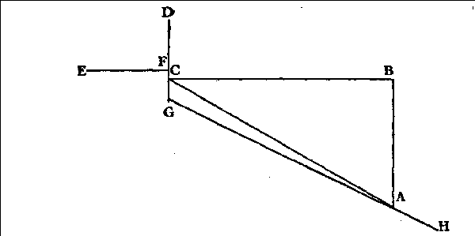

A HELPING HAND FOR
BIBLE STUDENTS
IN THE
"The Path of the Just is as the Shining Light, That Shineth More and More Unto the Perfect Day."
SERIES III
ELIJAH and ELISHA
25,000 Edition
"If Ye are Disposed to Receive it, He is [represents] That Elijah Who is to Come" (Matt. 11: 14).
PAUL S.L. JOHNSON PHILADELPHIA, PA., U. S. A.
1938
IN THE INTEREST OF
HIS CONSECRATED SAINTS,
WAITING FOR THE ADOPTION,
—AND OF—
"ALL THAT IN EVERY PLACE CALL UPON THE LORD,"
"THE HOUSEHOLD OF FAITH,"
—AND OF—
THE GROANING CREATION, TRAVAILING AND WAITING FOR
THE MANIFESTATION OF THE SONS OF GOD,
'To make all see what is the fellowship of the mysteiy which from the beginning of the world hath been hid in God," "Wherein He hath abounded toward us in all wisdom and prudence, having made known unto us the mysteiy of His will, according to His good pleasure which He hath purposed in Himself; that in the dispensation of the fullness of the times He might gather together in one all things, under Christ."
Eph. 3: 4,5,9; 1: 8-10.
COPYRIGHT 1938
BY PAUL S.L. JOHNSON
THE AUTHOR'S FOREWORD
THIS book is largely a study in types; and several of the following series will have, in part or whole, the same character. This raises the question, When may we know what is typical? We answer: According to our Pastor there are at least seven ways by which this can be recognized. The first of these is a direct Biblical declaration that a thing is typical, like the statements on Sarah, Hagar, Isaac and Ishmael (Gal. 4: 21-31); on the various transactions alluded to in 1 Cor. 10: 1-11 according to vs. 6, 11 ; on the giving of the Law Covenant (Heb. 9: 14-23 according to v. 23); on Adam and Eve as to Jesus and the Church (Eph. 5: 31, 32); on the heroes of faith in Heb. 11 as the cloud of witnesses (witnessing shadow) of 12: 1, etc., etc. The second is, whenever the Bible refers to a set of its books as being typical we are to understand that everything recorded in those books is typical. Thus a comparison of Heb. 10: 1 and Gal. 4: 21 shows that the first five books of the Bible, the Pentateuch, are typical. God gave in Hebrew the name, the Law (Torah), to the Pentateuch as the first division of the Old Testament. Hence everything in the Law, Pentateuch, is typical. The name God gives the books of Joshua, Judges, Ruth, 1, 2 Samuel and 1, 2 Kings—the Former Prophets—in the Hebrew Old Testament, also Peter's statement (Acts 3: 24) where he refers to the second division of the Hebrew Bible as the Prophets, the Former Prophets being the seven books just mentioned and the Later Prophets being the major and minor Prophets, prove that those seven historical books are prophecies; they can be such only if typical. The third way is a direct comparison and often whenever a direct contrast between things belonging to two different dispensations are made, e. g., between Isaac and us and Ishmael and fleshly Israel (Gal.4:28-31), between Perizim and Gibeon on the one hand and the Harvests' Truth battles on the other. An example of a contrast as type and antitype is found between Heb. 12:18-21 and vs. 25-29. A fourth way is whenever prophetic allusions are made to past events, persons and places (Ps. 83: 611; note also the comparisons in vs. 9-11; Rev. 2: 20-23; 17: 5; 21: 2). A fifth way is whenever doctrinal and ethical allusions to institutions, etc., are made, apart from a direct statement: circumcision (Col. 2: 11, 12); the paschal lamb (1 Cor. 5: 7, 8), city of refuge (Heb. 6: 18), the prophets, especially Job (Jas. 5: 10, 11), etc. A sixth way is whenever persons, places and events are associated with persons who are in one or more of the above ways referred to as types, e.g., Elisha and the sons of the prophets, the widow
of Zarephath, Ahab, Obadiah, etc., all directly acting with Ehjah, an expressly mentioned type (Mal. 4: 4-6; Matt. 11: 14; Luke 1: 17). Finally, a seventh way is whenever a Biblical story has an exact counterpart in things of, or related to the Christian Church, even if none of the above 6 methods are used to indicates a type, even as our Pastor taught that every experience and accomplishment of the Christian Church were prefigured by the Jewish Church (B 204, F 391, 1; Amos 3: 7). This means what God's people as such of the Gospel Age did, accomplished or was done them is typed in the Bible.
This raises another question: Why does the Author do so much typing, inasmuch as our Pastor warned (B 173, 2) against people, as mistaken, though well meaning, who make a type of everything in the Bible? To this we answer: We, too, warn against people's seeking to make a type out of every person and event of the Bible, as mistaken, though well meaning, and in this we join our Pastor in sounding forth the antitype of the warning against such a course of speculation, even as is indicated in Ex. 19: 21, 22, which warning apphes not only to the Parousia and Epiphany antitypical people, but also to all their antitypical priests except the two typed by Aaron, the Parousia and the Epiphany Messengers, Moses here typing our Lord in the Parousia and Epiphany times, even as the events of this chapter as explained by St. Paul in Heb. 12: 18-21, 25-29 prove. As our Pastor, who participated in giving this warning went right on in typing in great abundance as was due, so we who participate in giving this warning go right on in typing in great abundance as is due. Here apphes the proverb, if two do the same, it is not always the same. God for the end of the Age has wanted the two above-mentioned messengers alone to do the studying necessary for proper typing. Such studying is forbidden others (Ex. 19: 21, 22). And whenever God gives any others first the understanding of some types, etc. (Num. 12: 6), as he has done in fulfillment of Matt. 13: 52, He has done it by directly and quickly illuminating their minds, so that they, as it were, stumbled upon the interpretation, without violating the Lord's Word by speculative study. In our typing we follow the seven principles explained in the preceding paragraph. And we beheve that all sober and competent judges will acknowledge that, hke our Pastor's typical interpretations, ours are sober, factual, reasonable and scriptural; and, hke his, wholly lack the erraticism, fancifulness, visionaiiness, vagariousness, unfactualiiess and unreasonableness of speculators' interpretations. With these words this book is, with prayer for God's blessing upon its mission, introduced to the reader by the Author,
Your brother and servant, PAUL S.L. JOHNSON
Philadelphia, PA., U.S.A.,
January 3, 1938.
CHAPTER I.
ELIJAH—TYPE AND ANTITYPE.
THE KEY TO THE ELIJAH TYPE. ITS CHRONOLOGY ALSO HELPFUL. THE ELHAH ANTITYPE'S FIRST FIVE CENTURIES. THENCE TO 799. PROTESTERS AGAINST PAPAL ABSOLUTISM AND IDOLISM. AT ANTTIYPICAL ZAREPHATH. THREE ATTEMPTS TO AROUSE A REFORM MOVEMENT. THE REFORMER MOUTHPIECE RESUMES PUBLIC ACTIVITY IN TIME OF CONTROVERSY. MEETS THE CIVIL POWERS. THE GREAT PAPAL SCHISM. TWO SETS OF REFORMERS AND THEIR REFORMATIONS. A FAMINE OF BIBLES. THE STORY OF MARY JONES' BIBLE. ITS EFFECTS. ANU TYPICAL ELHAH'S COURSE FROM 1804 TO 1914. ANTTIYPICAL ELHAH'S ANOINTING OF ANTTIYPICAL ELISHA. A SUMMARY OF THE ANTITYPES OF 1 KINGS 20-22. THE REFUTAUON OF CERTAIN ERRORS ON ANTTIYPICAL ELHAH'S ADVENT. NAUONALISUC EUROPE'S EXPERIENCES AND CONTACTS WITH ANUTYPICAL ELIJAH DURING THE WORLD WAR. THREE ATTEMPTS TO CAPTURE ANTTIYPICAL ELHAH AND THEIR RESULTS. BEREAN QUESUONS. 7
CHAPTER II.
LAST RELATED ACTS OF ELIJAH AND ELISHA. 2 Kings 2: 8-14.
SMUING JORDAN. DIVISION OF THE WATERS. SOME OBJECUONS CONSIDERED. WALKING AND TALKING BEYOND JORDAN. ELHAH'S SUGGESUON AND ELISHA'S REPLY. THE SEPARAUON. THE CHARIOT. THE HORSES AND HORSEMEN. THE DIVIDING AGENT. CHRONOLOGICAL SUCCESSION OF THE EVENTS OF 2 KINGS 2: 12-14 DIFFERENT FROM THAT OF THEIR ANTITYPES. ELISHA'S SEVENFOLD ACUVIUES: FELLOWSHIP GIVEN; ELISHA'S THREEFOLD CRY; FELLOWSHIP WITHDRAWN; RENDING HIS MANTLE; SEIZING ELHAH'S MANTLE; JORDAN'S SECOND SMUING; CROSSING THE RIVER FIRST UNANSWERABLE PROOF THAT THE SOCIETY'S PARUSANS ARE ANTTIYPICAL ELISHA. SECOND OF SUCH PROOFS. A CAUUON AGAINST AN EASY MISUNDERSTANDING. SEPARAUON NOT YET COMPLETE. "JUDGING." PARENTHESIS DEMONSTRATED BY NINE ARGUMENTS. CONCLUDING THOUGHTS. BEREAN QUESUONS........67
THE THIRD FALSE VIEW. UNSTEWARDLY. UNBIBLICAL. UNREASONABLE. UNHISTORICAL. CONTRARY TO FULFILLED FACTS. A FOURTH FALSE VIEW. MISAPPLICAUONS AS TO ELHAH. GREAT COMPANY CHARACTERISUCS TYPED BY ELISHA. SOME ALLEGED PROOFS EXAMINED. TWO CLASSES MEANT BY THE 'DOUBLE PORUON." OTHER ALLEGED PROOFS EXAMINED. A BIT OF HISTORY OF THE CONTROVERSY. THE FIFTH FALSE VIEW. 155
CHAPTER IV. ELIJAH AND JEHORAM. 2 Chro. 21: 1-20.
AMERICA AND EUROPE AS TYPED IN KINGS AND CHRONICLES. JEHOSHAPHAT AND JEHORAM IN 2 CHRO. 21. JEHOSHAPHATS SIX SONS. JEHORAM'S WICKED COURSE TOWARD THESE. JEHORAM'S FURTHER WICKED COURSE. THE RESPONSIBLE CAUSE. EDOM'S RELATIONS TO JEHORAM. LIBNAH'S RELATIONS TO JEHORAM. JEHORAM'S WORST SIN. ELIJAH'S LETTER ITS FORECASTS. THE FULFILLMENT FORECAST AND REALIZED. ELHAH'S LETTER REPRODUCED. BEREAN QUESTIONS.............195
CHAPTER V.
ELISHAS EARLIER INDEPENDENT ACTS.
THE SETTING OF 2 KINGS 3. ALLIANCED EUROPE. THE CENTRAL POWERS. THE FORMER AND AMERICA MUSTERED. EDOM SOUGHT. THREE KINGS' FEARS ALLAYED BY ELISHA'S ASSURANCE OF VICTORY. A VICTORY DRIVE ENDING IN DEFEAT. A CRUSHING PEACE. A FRUITLESS ATTEMPT AND SACRIFICE. PRELIMINARY REMARKS ON 2 KINGS 4. THE WIDOW AND HER TWO SONS. THE SHUNAMMITE AND HER SON. THE POISONED POTTAGE. GIFTS FOR ELISHA. BEREAN QUESTIONS................257
CHAPTER VI.
ELISHAS LATER INDEPENDENT ACTS.
GENERAL SETTING OF PERTINENT TYPES. NAAMAN. BEN-HAD AD n AND JEHORAM. ELISHA AND NAAMAN. GEHAZI. THE SUNKEN AXE FLOATED. ELISHA AND BEN-HADAD n. WAR BETWEEN JEHORAM AND BEN-HADAD n, WITH ELISHA'S PART THEREIN. THE FOUR LEPERS. SAMARIA'S DELIVERANCE. JEHORAM RESTORES THE SHUNAMMITE'S RIGHTS. ELISHA AND HAZAEL. THE PERSONALITIES OF 2 KINGS 8: 25-29. JEHU'S ANOINTING. JEHU'S CONSPIRACY. RELATED ACTS OF JEHU, JEHORAM AND AHAZIAH. ARMAGEDDON. BEREAN QUESTIONS.............329
CHAPTER VIL
THE PYRAMID'S WITNESS ON ELIJAH AND ELISHA.
MEASUREMENTS CONNECTED WITH THE GRAND GALLERY'S SOUTH STEP. PASSOVER, 1918 THE GREAT COMPANY'S COUNTERFEIT DATE FOR END OF SPIRIT-BEGETTAL. ELHAH ANOINTING ELISHA. SEVEN THINGS SYMBOLIZED AT THE STEP. SOME GENERAL FACTS SYMBOLIZED IN THE PYRAMID. SOME DETAILED FACTS SYMBOLIZED IN THE PYRAMID. THE BOARD'S COMPROMISING MINUTE. FOUR REASONS FOR ANTITYPICAL ELHAH'S REAPPEARANCE. ITS EFFECT ON J.F.R'S FOUR NEW VIEWS. FOUR PROOFS THAT THE REAPPEARANCE HAS SET IN. THE PERTINENT PYRAMID SYMBOLS. MEASURING TWO JOURNEYS OF THE CHURCH. CONCLUDING REMARKS. BEREAN QUESTIONS. . 395
ELIJAH—TYPE AND ANTITYPE. 1 Kings 17—2 Kings 1.
THE KEY TO THE ELIJAH TYPE. ITS CHRONOLOGY ALSO HELPFUL. THE ELDAH ANTITYPE'S FIRST FIVE CENTURIES. THENCE TO 799. PROTESTERS AGAINST PAPAL ABSOLUTISM AND IDOLISM. AT ANUTYPICAL ZAREPHATH. THREE ATTEMPTS TO AROUSE A REFORM MOVEMENT. THE REFORMER MOUTHPIECE RESUMES PUBLIC ACTIVITY IN TIME OF CONTROVERSY. MEETS THE CIVIL POWERS. THE GREAT PAPAL SCHISM. TWO SETS OF REFORMERS AND THEIR REFORMATIONS. A FAMINE OF BIBLES. THE STORY OF MARY JONES' BIBLE. ITS EFFECTS. ANUTYPICAL ELDARS COURSE FROM 1804 TO 1914. ANTITYPICAL ELDARS ANOINTING OF ANUTYPICAL ELISHA. A SUMMARY OF THE ANTITYPES OF 1 KINGS 20-22. THE REFUTATION OF CERTAIN ERRORS ON ANUTYPICAL ELDAR'S ADVENT. NATIONALISTIC EUROPE'S EXPERIENCES AND CONTACTS WITH ANUTYPICAL ELDAH DURING THE WORLD WAR. THREE ATTEMPTS TO CAPTURE ANUTYPICAL ELDAH AND THEIR RESULT. BEREAN QUESTIONS.
WHILE reviewing J. F. Rutherford's statement of his "third new view" given in "The Tower" of August 15, 1919, we promised the friends details on those parts of the Elijah type not given by our dear Pastor. While giving these we will also examine some of Brother Olson's views on some phases of the subject. Vagueness is a mild characterization of his views on this subject. All of us accept the Scriptural thought expounded by our dear Pastor in re the typical character of Elijah to the effect that he types the Christ Class in the flesh as God's mouthpiece to the world seeking to reform it (Mal. 4: 5, 6; Matt. 11: 14, see Diaglott). This thought of the Reformer Mouthpiece of God to the world is the key that enables us to unlock the Elijah type. We are, therefore, to look for the antitype in the Reform movements in the world carried on by the Faithful. The Elijah type furnishes also certain chronological data enabling us to place the various events of the antitype. Next to the
key these chronological data are the most important features enabling us to construe the type. These will enable us to test Brother Olson's and J. F. Rutherford's views on various features of Elijah in antitype. 1 Kings 17: 1-4, referring to events prior to 539, when antitypical Elijah fled into the wilderness, gives us our first chronological clue. 1 Kings 18: 1 by the expression "the third year" (of his wilderness experience) gives us our second chronological clue; consequently the events of 1 Kings 17: 1-24 were fulfilled before 1259 A.D., which began the third antitypical year of the antitypical Elijah's wilderness experience; for two symbolic years of 360 literal years total 720 literal years; and 539 A.D. plus 720 years would bring us to 1259 A. D. Another chronological feature is the time of the drought, 3 1/2 years (Jas. 5: 17); this would bring us to 1799 A. D., within a few years after which the antitypical rain broke the drought. The two awakenings (1 Kings 19: 5-7) mark the years 1829 and 1874; while the 40 days' journey end in 1914. These chronological features will greatly assist our construing the antitype.
(2) Our chronological data show us that all of the antitypes of 1 Kings 17: 1-24 precede 1259, while Brother Olson makes the scene of the dead child antitype the Reformation events between 1517 and 1799, with its awakening corresponding to the revival of foreign missionary work for the heathen, beginning 1792. He says that the antitype of Elijah's address to Ahab occurred from 325 to 539. We understand it to have occurred from 33 to 539 as follows: It began with our Lord, the Head of the Elijah class, making His good confession before Pilate, the representative of antitypical Ahab (1 Tim. 5: 15; John 18: 37), claiming that He and His Own were the exclusive (no dew or rain except at their word) mouthpiece of the Divine Revelation. This same claim was made in pantomime by St. Paul before Felix, Festus and Agrippa,
representatives of antitypical Ahab. During the Pagan Roman persecutions from 64 to 313, this same claim was made by the Faithful before Roman Magistrates, Governors and Emperors. When Pagan Rome changed into Christian (?) Rome, and the Emperors became "orthodox," the Faithful, contending against the errorists before these Emperors and their representatives by word and deed, acted out the same antitype, and this continued until they were in 539 compelled to go into the wilderness.
(3) Vs. 2-7. The Catholic party developing Papal errors and gaining the chief influence among great and small, and the Faithful being more and more driven into the background, the Lord through the principles of His Word and through His Providences indicated to the Elijah class His will that they go more and more into the isolated condition, the wilderness (vs. 2-4). Briefly stated the following was the course of these events: The great falling away began along clericalistic lines (2 Thes. 2: 7); then about 100 A. D. it began to be marked by doctrinal errors on the organization of the Church. Traces of the immortality of the soul can be found as early as in the writings of Justin Martyr, a converted Greek philosopher, who was beheaded about 165. A little later belief in the Millennium began to be undermined. About 230 the first steps toward error on Christ's relation to the Father began to be taken, and the doctrine of their equality was fixed at the Nicean Council, 325, while Trinitarianism was completed at the first Council of Constantinople, 381. With the setting aside of Millennarianism and the introduction of human Immortality and of the Trinity, eternal torment found a fertile garden, in which it grew. Next in the Nestorian controversy, 428-431, decided at the Council of Ephesus, 431, and in the Eutychian controversy, 444-451, decided at the Council of Calcedon, 451, errors on the relation of Christ's human and divine natures triumphed.
From 412-529 errors on sin, the human will, justification, election and free grace triumphed. In every one of these controversies the faithful Elijah strove against the errorists; and an unorthodox class of theologians, though not of Elijah, as defenders of vestiges of Truth against the encroaching errors, stood in part with the Faithfill. These theologians as sectarians founded sectarian systems, some of which passed away after many hard experiences, and some of which, like those of the Nestorian and the Coptic Christians, continue to our day. These Sectarians, as opposers of the ever triumphant Catholics, we understand to be the antitypes of the ravens, who gave some nourishment to the Faithful during the next period, 539799. During these years, 539-799, Arianism died completely out, the last Arian nation, the Longobards, being entirely converted to Catholicism before 700. Brother Olson says that the Arian faith and people, his antitypes of the widow of Zarephath and her son (his treatment of the antitypical widow and her son is very vague and ambiguous), continued until after Waldo's time, 1173-1217. This statement is historically untrue. (See article on Arianism in McClintock & Strong's Cyclopaedia.) Waldo as well as the other Reformers from 799 until 1530 A. D. were all Trinitarians. Nothing therefore that he gives on the antitype of the Widow of Zarephath, her son, and Elijah's relation to them is historically true. Will he kindly cite only one authority to prove that Arianism was professed until and after Waldo's time before 1530 A. D.? and that Waldo was an Arian in faith and practice?
(4) Cherith (cutting, dividing, 2 Tim. 2: 15) represents the little Truth that was left with the Faithful after the abovementioned errors were introduced. It was held in the presence of the peoples (Jordan) by those who were driven back into a more or less isolated state.
(5) There were four notable controversies between 539 and 799, during which the antitypical ravens, sectarians, nourished the antitypical Elijah: (1) whether there is now one nature in Christ or two (544-553), decided at the second Council at Constantinople, 533; (2) whether there is now one will in Christ or two (633-680), decided at the third Council of Constantinople, 680; (3) whether Christians are to give religious veneration to images or not (717-787), decided at the second Council of Nice, 787; (4) whether Christ as a Human Being was as truly God's Son as He is as a Divine Being (782-799), decided at the Frankish national Synod at Aachen, 799. Divisions, sects, were formed by these controversies. The little Truth (Cherith) that was brought over from the former period on the subjects: God, Christ, Holy Spirit, Man, Sin, Free Grace, Election, the Church, etc., was dried up during these controversies. The last of these was decided when Felix of Urgel, Spain, the leader against the Catholics, renounced his view and accepted the Catholic view after a six-day debate at the Council of Aachen, 799. Thus with the advent of the Papal Millennium, 799, antitypical Cherith dried up, and the antitypical ravens ceased to feed Elijah. It is this event, with what happened in connection with it, that enables us to fix the date when antitypical Elijah received word to go to antitypical Zarephath, smelting place.
(6) Vs. 8-16. Keeping in mind the key to the Elijah type, i.e., that we are to look for antitypical Elijah's activity in connection with protesters against error and in connection with Reform movements, we will be able to trace the antitypes of these and the following verses of this chapter. Our beloved Brother John Edgar showed us how the Counterfeit, the Papal, Millennium was from 799-1799. Such a Millennium of course had to have as its forerunner the drying up of the antitypical Cherith, and the inactivity of the
antitypical ravens within the domain under Papal control; and antitypical Elijah would have to remove to such territory as would be measurably outside the absolute control of the Pope, and under the control of a party antagonistic to such Papal Absolutism. Such territory we find in Northern Italy, in Southern and Eastern France, in Switzerland and in Germany; for in this territory, under more or less State protection, people lived who were opposed to the Pope's Absolutism and to some of the peculiar practices of the Church of Rome. The leaders of this party from 799-840 were first Emperor Charlemagne, and later his eldest son, Louis, called in history Louis, the Pious, who succeeded his father as Emperor in 814. Charlemagne and especially Louis resisted the papal claims to supremacy in the Church, standing for the rights of the Franco-Longobardo-Germanic clergy against the Pope's claims, and insisted on his subordination to the Emperor in the State. Furthermore, they opposed the Idolism of the Papacy as it was manifest in its saint, angel, relics and image worship. On these questions they were supported by many of the clergy, nobility and people of their dominions, the countries mentioned above. This party, therefore, consisted of the protesters against Papal Absolutism and Idolatry, and is according to our understanding the antitype of the Widow of Zarephath. They were an antitypical Widow, because they were bereaved of the support and fellowship of the ever increasing powerful party standing for Papal Supremacy and Idolism. It was to the former party, as to a supporter, that the Lord by certain principles of His Word and by His Providences led the Elijah class, especially in the persons of two of its leaders, a Claudius, afterward Bishop of Turin, Italy, who in Church History is called the first Protestant Reformer, and who died in 839, and an Agobard, afterward Archbishop of Lyons, France, who diedin 840. It is
certain of the former and it is highly probable of the latter that they with other consecrated brethren came with Felix of Urgel, the last raven, from Spain, the scene of the last and fourth controversy of the period 539-799 to attend the debate mentioned above at the Frankish national Synod at Aachen, 799. As the outcome of the debate all of these saw Cherith entirely dried up, and the ravens no more giving the Elijah Class antitypical bread and meat. While thus engaged they met Louis, the Pious, who was then ruling over a part of his father's Empire in Southern and Southeastern France and Northwestern Italy. At their earnest request he invited them to the privileges of his monastic educational institutions, where among other things Louis' views against Papal Supremacy and Idolism were taught these young men. They were very hungry for the Scriptural instructions obtainable in these institutions; and Louis later invited some of them, notably Claudius and Agobard, to his court as counselors, teachers and priests. After they had thus been fed with the knowledge obtainable from the protesting party, all of these young men became very active in advocating reforms antagonistic to Papal Supremacy and Idolism; especially was this the case with Claudius at Turin from 813 to 839 and Agobard at Lyons from 813 to 840.
(7) With these briefly sketched facts in mind let us look at the type. Zarephath, smelting place, represents the trying position of the Protestors against Papal Absolutism and Idolism. Its belonging to antitypical Zidon, fishing, implies that they lived in a sphere out of harmony with the general trend of Nominal spiritual Israel, and yet were more or less compromising (fishing, merchandising) with it. The widow being at the gate of the city represents the prominence of the protesting party. The two sticks represent Antipapal Absolutism and Anti-idolism. Collecting them represents gathering Biblical, factual and reasonable arguments on these subjects. Elijah's finding her there, and requesting food and drink to be given him, and that before she should prepare it for herself and her son, who represents the reform movements of the Protesters, are typical (1) of the consecrated brethren coming from Spain finding the Protesters in public as a prominent party studying and working against Papal Absolutism and Idolism; and (2) earnestly seeking from these protesters as the latter's first activity, instruction along the line of such Truth as they had in their power to give. Antitypical Elijah then promised them subsequent nourishment along these lines. The barrel represents the Bible which Charlemagne and Louis had had copied by the monks, and placed in the churches and monasteries of Lombardy, France and Germany. The meal represents the little Biblical Truth that they found in the Bible. The cruse of oil represents the spirit of understanding on certain Biblical subjects (Matt. 25: 1-12). The protesting party as shown above gave the antitypical Elijah the desired Truth, and then followed feasts that sustained throughout the antitypical drought, the protesting party and their reform movements, the latter for a century, as antitypical Elijah promised.
(8) Louis, the Pious, in 813 sent Claudius to Turin, and Agobard to Lyons with the express charge to work against Papal Absolutism and Idolism. They, especially the former, supported by numerous likeminded brethren waged a valiant fight along these lines, even casting the images and relics out of the churches. This brought Claudius in conflict with the Pope, who was told by the former, while protesting against his reform activities that, if he, the Pope, would act as an Apostle, he would respect him; but if not, Matt. 23:24 applied to him! Both the oral and literary activity of these brethren centered especially upon Claudius, their champion, the hatred of the Papal party; but it heartened the Protesting party and
kept its reform movement (the widow's son) active, especially in Lombardy, France and Germany, resulting in the French, Longobard and German clergy and rulers gaining laws and powers that gave them liberties, later called the "Gallican Church Liberties," and a liberal spirit above those found anywhere else in Christendom. This spirit and these liberties enabled many of the French and German clergy under the leadership of the Metropolitan Hincmar, Archbishop at Rheims, France, 845-882, and the Metropolitan Hatto I, Archbishop at Mainz, Germany, 891 -913, successfully to resist Papal Absolutism. This spirit kept France and Germany relatively free for a long time from the gross idolatry that reigned elsewhere in the worship of angels, saints, images and relics. This spirit enabled a Ratrammus ably to refute Transubstantiation (Idolism) which was being advanced as an idolatrous basis for the Mass by its originator, his abbot, Paschasius Radbertus, who died, 865. Yea, without the support of such a party, animated by such a spirit, and supporting such liberties, antitypical Elijah could not have survived amid the existing Papal spirit.
(9) Vs. 17-24. As above indicated, throughout the ninth century reform movements advocated by antitypical Elijah were kept alive by the Protesting party. The widow's son lived. But early in the tenth century, which history calls "the dark century," the above described reform movements (the widow's son) died and nothing was done to resuscitate them until the middle of the next century. The effort at resuscitation was not attempted by the Protesting party (the widow), which was during this time deeply depressed, overpowered and overawed; but it was done as a nonpartisan work (Elijah taking the dead child from its mother to his own chamber) entirely in the consecrated religious domain. In all it required three long efforts to be made against Papal Absolutism and Idolism,
before a reform movement along these lines could be permanently established (the awakening of the dead son). In all three of these movements the two objects of reform, Papal Absolutism and Idolism, were contended against.
(10) The celibacy of the priesthood, freeing the clergy from social, and thus measurably from national ties, binds the Roman Catholic Clergy to the Pope's supremacy rather than to that of the States where they live. Hence Papacy has stood for it. Whatever advanced it advanced the Papacy; whatever weakened it weakened the Papacy. Hildebrand (1015-1087), afterward as Pope called Gregory VII, both before and after becoming Pope, stood alike against the immorality and the marriage of the clergy, and adroitly turned the sentiment of the people against the marriage of some, as well as the immorality of others of the clergy, claiming that both alike were adultery. In Lombardy many of the clergy were grossly immoral. Hildebrand sought to enforce both morality and celibacy on these. For the latter he was resolutely withstood by the Longobard clergy and nobility, at whose head stood Guido, Archbishop of Milan. In the ensuing conflict allegiance to Rome was renounced. For 30 years, 1046-1076, the struggle continued, and Rome won. Antitypical Elijah failed to arouse a permanent reform against this feature of Papacy's Absolutism, in whose interests much blood was shed in this conflict. Simultaneously from 1045-1079 a reform movement was attempted against Idolism in the form of Transubstantiation by Berangar of Tours, France, one of the ablest men of his day, who aroused quite a controversy, but was forced to give up by Hildebrand, 1079; and the reform movement against Idolism failed of results at the hands of Hildebrand, one of the three most powerfill Popes. These unsuccessful efforts against Papal Absolutism and Idolism antitype Elijah's first unsuccessful effort to resuscitate the widow's son. This simultaneous and unsuccessful effort at inaugurating a reform movement was the first of such efforts since the close of the ninth century, 150 years before, during which time the antitypical child was dead.
(11) A second and unsuccessful effort at reform against Papal Absolutism and Idolism received its impulse from Peter Abelard (1079-1142), the ablest teacher and theologian of the twelfth century. Among other things he advocated the use of Reason in interpreting Scripture doctrines and Church Government. His principles led him and his pupils into a spirit antagonistic to the reigning spirit; and some of these, like Peter of Bruys, Holland, Henry of Lausanne, Switzerland, in Southern France, from 1106 to 1148, and Arnold of Brescia, Lombardy, 11361155, in Italy, attacked Papal Absolutism. Considerable excitement arose, as a result, amid which Peter, 1126, was burned at the stake, Henry, 1148, was condemned to life imprisonment, and Arnold was strangled, 1155; hence there was a failure in their efforts to form a successful reform movement against Papal Absolutism. Simultaneously Abelard was terribly persecuted, and forced to be silent, and his able pupil, Folmar of Triefenstein, Germany, was forced to give up his fight against Transubstantiation, Idolism. Thus a second time antitypical Elijah sought to arouse a reform movement against Papal Absolutism and Idolism and failed. The widow's son failed a second time to come to life.
(12) The third attempt to arouse a reform movement against Papal Absolutism and Idolism was made by Peter Waldo, whose activities were from 1173 to 1217, and by his colaborers, the French and Italian Waldensians. In the French movement, especially, a reform against Papal Absolutism was carried out, while the Italian Waldensians added to this a reform against Idolism. This movement spread over large
parts of Europe; and a papal crusade and inquisition (for details see B 335-337, 341, 343), especially under Innocent III, the most powerful of Popes, sought in vain to overthrow it. It lived and today lives, being the oldest of existing Protestant movements. Waldo and others, arousing it into activity, are the antitype of Elijah in his third and successful attempt to raise the widow's son to life. And the antitype shows that the protesting party from that time onward acknowledged the faithful servants of God as His mouthpiece; for many Antipapists who did not become Waldensian Reformers stood with the Faithful in the antipapal cause.
(13) If Church history is searched up to 1259, the abovedescribed works of Reform will be found to be the only marked ones; and these antitype Elijah's works of this chapter. We call the attention of those brethren who have read Brother Olson's explanation of 1 Kings 17 to note in contrast with the above specific description of the reform works of antitypical Elijah, the vague and unhistorical statements of Brother Olson on these types. He correctly fixes 1259 in harmony with 1 Kings 18: 1 as the beginning of the third antitypical year; but he must have been asleep and dreaming, when he overlooked the statements of this verse, which prove that the antitypes of the seventeenth chapter preceded the antitypical "third year" of this verse, for he makes the antitype of 1 Kings 17: 17-24 take place between 1517 and 1799, even claiming that the foreign missions revival toward the end of the eighteenth century antityped the awakening of the child! He has incurred great responsibility in misleading guileless brethren unacquainted with Church History!
(14) Properly to understand 1 Kings 18: 1-46 two things must be kept in mind: (1) the key: Elijah representing the Church as the Reformer Mouthpiece of God to the world, and (2) his encounter with the
priests of Baal, according to v. 1, occurring during the third year of the drought, therefore some time between 1259 and 1619. This latter date was one year after the commencement of the great war between the Catholic and Protestant powers, called the Thirty Years' War, 16181648. If these thoughts are kept in mind, we will readily see, both as set forth in the Bible and in our dear Pastor's writings, how grossly erroneous was J. F. Rutherford's claim, Z '19-244, that antitypical Elijah's slaying of the antitypical prophets of Baal occurred in 1917 and 1918!
(15) Both by the Parallel Dispensations and the Pyramid, as our dear Brothers Edgar have shown, the year which is 50 years after 1259 is marked as the beginning of the reformatory activity of antitypical Elijah following the Waldensian movement. Marsiglio, the parallel of Zerubbabel, the first of this line of Reformers, began his reform work in 1309. He is the first one of antitypical Elijah to whom "after many days" (following the inauguration of the Waldensian movement), "in the third year," 1269-1619, the Lord's command came to step forth on the stage of reform activity in the presence of the European Civil Rulers, antitypical Ahab. Let us summarize some aspects of the history of that period and the antitypes will become clear. Brother Olson's time, 1517-1799, for this antitype contradicts his time, "toward 1799," for the awakening of the antitypical Widow's son and the sacrifice of the antitypical prophets of Baal.
(16) Phillip IV, the Fair, 1285-1314, one of the most powerful of French kings, quarreled with Pope Boniface VIII, 1294-1303, almost throughout the latter's pontificate. Boniface in several bulls publicly attacked Phillip; because the latter wanted to appropriate certain revenues which Boniface wanted. In his bulls the most extravagant claims of absolute power over Church and State were made by the Pope, among other things asserting that rulers were subject in temporal matters to the Pope, were their representatives in office, and must therefore conduct civil affairs according to the Pope's directions on pain of anathema and freeing of their subjects from the oath of allegiance. Boniface then sought to interfere in the affairs of France, and called a council to examine Phillip's affairs at Rome. Had the Bible in its influence (rain) been on the earth the laws (asses and horses) of the French Church and State would not thus have been trampled under foot by the Pope. Civil and Ecclesiastical France arose in mighty protest against the Pope's claims and course, siding unanimously with the King. The Clergy, led by the Dominican theologian, John of Paris, asserted the Gallican Church Liberties, and at the King's behest began to search for arguments (fountains and brooks) to preserve their doctrines (asses) on the powers of the French Clergy; while the Civil Power, especially through the nobles and lawyers led by the advocate, Peter DuBois, sought arguments to sustain their views (horses) in the secular law. Thus there was a sore famine (lack of civil rights whose support is in the Bible teachings) in antitypical Samaria (the State). Ahab represents the autocratic civil rulers, the State party, and Obadiah, the Catholic Church party which stood out against Papal Absolutism. Boniface was defeated in his efforts against Phillip; and with him Popedom, which he found at the very summit of power in the earth, began to decline. Boniface and his successors utterly failed against the French; rather from 1305 to 1377 the popes were compelled to live in France, from 1309 to 1377 at Avignon, subject to the French government. Boniface and his successors were, however, more successful in their conflict with the Germano-Italian Emperors and clergy with whom they waged warfare similar to that which Boniface carried on with Phillip. In Germany and Italy strong, but not very successful efforts were made to preserve
the legal rights of the Civil and Ecclesiastical party, especially the former set of rights, as against Papal pretensions. Similar conflicts were waged in other countries, notably Britain. It was thus manifest that there was a dearth of legal and ecclesiastical power as against the Papacy in antitypical Samaria. Each of the anti-papal -Absolutism parties (Ahab and Obadiah) sought in its separate sphere (vs. 5, 6) by legal, ecclesiastical and Scriptural arguments (fountains and brooks) to preserve its set of laws and the privileges guaranteed by them. The Franco-German liberal party had for centuries (v. 4) sought to shield the so-called heretics from papal persecution, among other things preventing the legal introduction of the Inquisition into Germany. As we saw previously, they more or less protected the teachers (the hundred prophets) who stood out against Papal Absolutism and Idolism. Yet as a class they were more or less compromising with Rome, only then earnestly fighting the Pope, when he sought to overthrow their rights. From this we can readily see, as against J. F. Rutherford's claim, that Obadiah does not type the Great Company, though doubtless some individuals of that class are involved in the Obadiah picture; for Obadiah's course is in some ways Great Company-like.
(17) Vs. 7-18. It was while these struggles were going on that God aroused first Marsiglio, 1309, then later as his colaborers John of Jandun, Michael of Cesena, General of the Franciscan order of monks, and William Occam, a prominent member of the same order, who with lesser lights appeared from a Biblical standpoint as the ablest defenders of the rights of the State and the Church as against the Papal Absolutism. Their views were so far in advance of those of the Franco-Germano-Italian anti-papal clergy, that they were at once by these recognized as the spiritual kinsfolk of the so-called "heretics" of old, antitypical Elijah; and this clerical party (typed by the conduct
of Obadiah, vs. 7-14) feared to have the civil rulers think them associated with such "heretics." However, unable to divert these faithful men from their course (v. 15), they introduced their views to the French rulers and later to the Germano-Italian Emperor, Louis, the Bavarian, etc., preparatory to these rulers receiving antitypical Elijah and discussing matters with him (v. 16). There was some difficulty in making the civil rulers believe in the innocence of these Reformers (vs. 17, 18), since the former had been deceived by the Papal party into believing that "the heretics" were mainly responsible for the evils in Christendom. But in due course they succeeded in proving to the civil rulers that the trouble was due to the civil powers' yielding to Papacy's claims. This lesson was largely learned by the rulers before Wyclif, who for years had been defending the English King, Parliament and People against papal claims, appeared as a doctrinal Reformer in 1378. Thus antitypical Elijah succeeded in part in convincing the civil powers of Europe that Papacy's unscriptural, unreasonable and unfactual claims were mainly responsible for the current corrupt conditions in Church, State and Society. And what in this respect they failed to achieve completely was accomplished by the Papal Schism.
(18) Vs. 19-25. The year 1377 witnessed the return of the Papacy from Avignon to Rome; and the next year the great Papal Schism began, lasting until 1417, by which Christendom was treated to the unedifying spectacle of two and sometimes three rival popes anathematizing one another and one another's adherents, and seeking by base diplomacy to steal from one another the support of various States and influential individuals. This schism called forth Wyclif (1378-1384) and Huss (1391-1415) as Reformers, who with many supporters cried out for a Reform of doctrine, organization and practice along Biblical lines. When rogues quarrel the truth comes out! Hence each
Papal party exposed the wickedness of the other. The Reformers cried out to the rulers to call for a Reformation. The rulers became convinced of its necessity and throughout Christendom set into operation policies having this end in view (vs. 19, 20). Certain civil rulers induced some of the leading Catholic theologians and prelates of the more liberal kind, who with shame acknowledged the corruption in church discipline and life, to demand reform (v. 20). Notable among these were Cardinal D'Ailly of France, Gerson, Chancellor of the Paris University, Nicholas Cl emanges, Rector of the Paris University, Cardinal D'Aleman, Henry of Langenstein, Dietrich of Niem and Cardinal Nicholas of Cusa, with a horde of others great and small (vs. 19, 20). Thus by the exposures of ecclesiastical evils two reform parties came into prominence (1) a Biblical one, antitypical Elijah, demanding a Biblical reform of doctrine, organization and practice and (2) a Clencalistic (Baalistic) one which strove for an external reformation of life, leaving the doctrines, organization and practices of Rome untouched. The antitypical prophets of Baal stood for Clericalism, but not for Papal Absolutism, claiming that a general council was superior to the Pope.
(19) Wyclif and Huss, etc., appealed to the people as well as to the rulers, and aroused a universal sentiment for reform; but the people did not respond fully to the kind these Reformers wanted. They halted between two opinions (v. 21). The charge that they were but few compared with the other Reform party antitypical Elijah acknowledged (v. 22), and turned into an occasion of a test as to whose reformatory sacrificial principles and work would meet with God's manifested approval. (Answer by fire, Lev. 9: 24.) Assembling at Carmel (garden, fruitful) represents that practical results from the reformatory sacrifices were sought for. Each reform party claimed that its own program was the only practical one; and antitypical Elijah counseled the people to choose between the two and their principles (vs. 21, 22) according to the results, as the manifestation of God's acceptance (v. 23, 24). Antitypical Elijah could safely do this, because he knew Satan would not reform his kingdom. The people generally considered this a proper way to decide (v. 24). Each bullock represents the humanity of the respective offerers. The pieces represented the separate parricipants in the two reform movements. The wood represented the Scriptures and arguments used by each side. No fire being put under either bullock represents that each side was to leave it to what was in reality its God, Jehovah or Satan, to manifest acceptance of the work. Antitypical Elijah naturally deferred to the vast number of the other Reform party, in the use of the first chance to reform the Church (v. 25).
(20) Vs. 26-29. The Clericalistic (Baalistic) Catholic Reform party found the Popes and the college of Cardinals their worst obstacles in the way of reform, and by these were continually impeded in, and finally defeated from accomplishing any results. Not that they did not labor most arduously to obtain them; for never was harder effort expended on a cause. Supported by kings and emperors, who required the calling of three general councils, (1) at Pisa, 1409-1412, (2) at Constance, 1414-1418, and (3) at Basel, 1431-1449, they made most strenuous efforts at reform. But refusing to reform Romish doctrines, organization and practices, and limiting their efforts to reforming Papal Absolutism and the morals of the Church in head (pope) and members (clergy) they stood for the general Catholic system of Clericalism, Baalism; and thus every effort of theirs was frustrated. This reform party thought it was laboring for Jehovah, but as Baal worshipers they were serving Satan, and they got no response; for Satan did not want their
Reformation (v. 26). They certainly trampled upon the Church (altar) by their exposures, e.g., at Pisa after terrible exposures they deposed the two opposing Popes, elected another, and as a net result of their labors had three Popes on their hands, all three having numerous followers! At Constance, where Huss, prosecuted by D'Ailly, was martyred, the most monstrous crimes, 72 in number, were charged and proven against Pope John XXIII, who was consequently deposed. Great reputations were blasted. Matters went even worse at Basel. The Catholic Church, the altar, in its hierarchy, head and members, was trampled under foot\
(21) To the confusion of the Catholic Reformers the course of John Huss, and of many of his and Wyclif s followers brought the Catholic Reformers into more or less contempt, as their fruitless efforts became more and more apparent, and were through the teachings and ridicule of antitypical Elijah set at naught (v. 27). "After their manner" they cut themselves with public confessions of, and penances for their wrong doings, and labored so hard that many of them died of sheer exhaustion (v. 28)! And though their hopes of reforming the Church were one after another frustrated by crafty Popes and intriguing Cardinals and their supporters, they continued their labors into unparalleled lengths. The Council of Basel lasted 18 years! Imagine a Convention lasting 18 years! And the holy Fathers were certainly longwinded; not a few of them orated eight days in a stretch with only brief pauses for necessary refreshment; and to prove that these were only average efforts, others drew out their long-windedness in speeches of thirteen days' duration! Oh! They certainly "prophesied until evening"! But to no avail (v. 29). Their principles and their works were set aside or diverted; so that after their reform efforts ceased, about ten years after the Council of Basel,
Popes, each one worse than his predecessor, culminating in Alexander VI, 1492-1503, perhaps the most wicked of all Popes, succeeded one another in a debauch of wrong doings as wicked as those of the Popes of the tenth century or of any other century.
(22) Vs. 30-38. Antitypical Elijah, in the persons of John Wessel, who died 1489, and his colaborers in Netherlands and Germany, and of Savonarola, martyred, 1498, and his colaborers in Italy, worked among the people, attracting very favorable attention, especially from 1479 onward. ("Come near me.") They aroused a spirit of genuine consecration among not a few ("repaired the altar," v. 30). Their appeal was to all the consecrated (twelve stones, the twelve tribes of Spiritual Israel) on the basis of the Bible as the sole source and rule of faith and practice, of Jesus as the only Head of the Church, of the Priesthood of all consecrated believers and of Justification by faith. Thus they gathered together the true Church, the altar. Luther and Zwingli a little later, espousing the same principles, began the antitypical sacrificing, and were shortly joined by numerous colaborers. The trench around the altar represents the sphere within which their reform labors would be confined, i.e., the Bible. The two measures of meal, the capacity of the trench, were its two parts, the Old and New Testaments, full of truths. Therefore they limited their reformatory efforts to Biblical doctrines, organization and practice, as far as these were then due (v. 32). The wood represents Scriptural passages and Scriptural, reasonable and factual arguments used in their reform efforts; the pieces of the bullock represent individually the humanity of the antitypical Elijah. The four barrels of water represent the four main principles of the Protestant Reformation: (1) the Bible, the sole source and rule of faith and practice, (2) Jesus, the only Head of the true Church, (3) Justification by Faith alone, and (4) the exclusive Priesthood of Consecrated
Believers. The first pouring of the water represents these four truths taught by the Lutheran Reformation (v. 33); the second, the same truths taught by the Zwinglian Reformation; and the third, the same truths taught by the Episcopal (the English, but not Henry the Eighth's) Reformation led by Thomas Cranmer (v. 34).
(23) These teachings covered and surrounded the True Church (altar) and were found everywhere in the Bible (the trench). The prayer of Elijah represents the ardent and confident longings, evidenced by their reformatory labors, on the part of the Faithful for a true reformation, and for the conversion of the people to Jehovah (vs. 36, 37). Through the real Reformation that was effected, Jehovah manifested that He accepted the sacrificed humanity of the Faithful (the bullock), the Scriptural passages and the arguments (the wood) used, the True Church (altar), the teachings of the four cardinal principles of the Reformers (the four barrels of water) and the historical testimonies cited for corroboration (the dust) (v. 38). Almost entire Europe was converted to Protestantism and against Clericalism, Baal worship; and had it not been for the intrigues and frauds of the Jesuits, and more especially for the violence of the "Holy" Inquisition and of Catholic armies and mobs, apparently all Europe would have been converted, and would have remained converted to Protestantism (v. 39). The sacrificing was over before 1618.
(24) Additional to the constructive [sacrificial] work of the reformers, they did a simultaneous destructive work in the religious controversies of those times. The Faithful called on all to require of the clericalistic teachers of Rome that they face the questions in controversy, by which course the latter were captured. Kishon (crooked) represents the crooked course of Romish errors, by refutation of which the Faithful with the sword of the Spirit "slew" the antitypical prophets of Baal (v. 40). The beginning of the antitype of this verse starts with the Reformation and progresses for a hundred years.
(25) The (very limited) circulation of the Bible from 1517 to 1619 was the "sound [mdicati on] of abundance of rain." The Bible, so circulated, was appealed to by antitypical Elijah as a warrant that the civil power (Ahab) could appropriate (eat and drink) to itself from the usurping Papacy its own proper powers as marked out in the Bible (v. 41). And the civil rulers acted on this principle, as the history of Europe abundantly proves, since shortly after the Reformation began. While this began almost with the Reformation, it greatly increased as a result of the Thirty Years' War, 1618-1648. Elijah's going up to the top of Carmel types the Elijah class seeking the acme of fruitfulness from a spread of Bibles; and their ardent prayers for it are typed in the last part of v. 42. The beginnings of the antitypes of this verse, including the first part of the antitypical Elijah's prayer, carry us back to the Reformation's beginning.
(26) The Reformation, as we know was "a Reformation by sects." Hence Sectarians served antitypical Elijah, and are typed by Elijah's servant. In all there were seven Reformations by sects from about 1525-1799, typed by the sevenfold going of Elijah's servant to see if there was prospect of rain (vs. 43, 44). They were the following: (1) Lutheran, (2) Presbyterian, (3) Baptist, (4) Unitarian, (5) Episcopalian, (6) Congregational and (7) Methodist. Five of them started between 1525 and 1560; hence the antitype of these verses begins almost with the Reformation's start. The Quaker movement is ignored because of its disparaging the Bible.
(27) Vs. 43-46 help us to locate the period of the rain by pointing out events that preceded and followed it. To publish Bibles, unsanctioned by the Papacy, was an act of rebels (the sea) in Rome's eyes. Hence it was only from this symbolic sea that a promise of a rain of Bibles could come. Hence antitypical Elijah told Denominationists to look for Bibles to come from those who revolted against Rome's arrangements as to the circulation of the Bible. The seventh time of the servant's going and looking occurred in the Methodist Movement, which began, not as Vol. VII teaches, in 1728 (in which year Wesley was ordained as an Episcopal Minister and thereafter for ten years labored as such in that Church, in harmony with its principles and arrarigementsy, but in 1738, when he was "converted," and began the movement that developed in a number of years into Methodism. The "little cloud" (v. 44) represents (Rev. 14: 14) the troublous teachings of Liberty, Equality and Fraternity as opposed to Kingcraft, etc., emanating from the illuministic and revolutionistic agitators of France before and during the French Revolution, 1748-1804, and resulting under the Lord's Providence in helping antitypical Elijah (Rev. 12: 15, 16). These troublous and partly true teachings were an expression of human power (like a man's hand), against Papacy's errors, and gave promise of full power from the Bible teachings ("the clouds," v. 45) on true Liberty, Equality and Fraternity. By these two sets of teachings the Papal Ecclesiastical powers (heaven, v. 45) were completely overshadowed. Antitypical Elijah through the Methodist Church, which at first was a Christian Liberty, Equality and Fraternity movement against the Church of England, told the Civil Powers to prepare for the shaking that would occur in Church and State, as a result of the truths that the illuministic and revolutionistic agitators were proclaiming; and thus prepared the Civil Powers in a measure against the shock that the French Revolution gave, when it broke like a tidal wave upon the shores of Society (v. 44). While both the French Illuminists' and Revolutionists' teachings ("little cloud") on natural Liberty, Equality and Fraternity
with their outworkings in the French Revolution and Napoleonic wars (the little cloud's part of the wind); and while the true Bible teachings on Christian Liberty, Equality and Fraternity ("clouds") with their outworkings, the war (the "clouds' " part of the wind) against Rome's binding the Bible, darkened with trouble the Papal powers (heavens); the downpour of Bibles (rain) occurred, through the Bible Societies formed especially from 1804 to 1816, coming as a result of the Bible teachings laden with trouble to Rome (clouds) and their accompanying war (wind) on Rome's prohibition of the Bible. This combination of events: (1) the contentions and acts of the French Illuminists, Revolutionists and Militarists on Liberty, Equality and Fraternity against Priestcraft, Kingcraft, Aristocracy, etc., (2) the true teachings of the Bible on those subjects, and their resultant war against Rome's prohibition of the Bible, forced the civil powers organized in a concert of nations (the chariot), before the rain came, to give their unfriendly attention (rode and went) to the subject of the union between Church and State (Jezreel, [nominal] seed of God, the mutual dwelling place of Ahab and Jezebel); with the result that they did not even invite the Pope to participate in the peace conference at Vienna following Napoleon's final defeat, 1815, which act shows the reality of the modem estrangement between Church and State (v. 45). As might be expected antitypical Elijah by faithful service in teaching (girding up his loins), especially in the Methodist Church, preceded the civil powers in giving unfriendly attention to the Union of Church and State, much to Papacy's chagrin (v. 46).
(28) It will be noticed that we agree with Brother Olson that the French Revolution and the Napoleonic wars were connected with the downpour of Bibles. But the connection was that of an occasion, and not that of a cause or source. Our explanation refers to these
events as included in the "little cloud" and its share of the "wind." He does not mention the Illuministic agitations and the consequent Revolutionists agitations at all, the former of which we think were the "little cloud" when first seen, which of course grew larger in the revolutionists agitations. Montesquieu's book on the "Spirit of the Law" published 1748 was the foundation of these Illuministic agitations. Voltaire, Rousseau and many others contributed to the little cloud, which is otherwise spoken of as the flood out of the Serpent's mouth. But the antitypical "clouds" and their share of the "wind" were the real source of the downpour—a thing not mentioned by Brother Olson at all. One thing is sure that the downpour of Bibles came not from, out of, the French Revolution and Napoleon's wars, but from, out of, the Christian teachings on true Liberty, Equality and Fraternity starring in the Methodist movement, and the agitation for the spread of Bibles, a war against Rome's stand on the same. It will be noticed that the text says that not only the "clouds" but the "wind" also darkened the heavens. It must have been a wind like those of our Western tornadoes, clouds of wind, moving very rapidly.
(29) Let us now consider the story of how the first impulse was given to start Bible Societies which spread the Scriptures, as a generous rain, out of the clouds of Bible Truth on true Liberty, Equality and Fraternity. In each of the seven reform movements, typed by the sevenfold quest of Elijah's servant, the effort was to obtain a wide circulation of the Bible; but the effort failed until after the last of the seven, Methodism, was inaugurated. A Welsh Methodist Minister, Mr. Charles of Bala, and a Welsh Methodist damsel, Mary Jones of Llanfihangel, were the agencies that the Lord used to give the impetus to the movement. This damsel, bom 1784, was poor, bright and pious, and had from childhood intensely longed for a
Bible, a thing which was then very scarce in Wales. At ten she began to save the money that was given to, or earned by her, and that other children would have spent for sweets, in order that she might buy a Bible. She saved everything that she could get for six years, always keeping her purpose in view, when at length she had enough for her Bible! What poverty that required rigid saving for six years to buy a Bible! And, glorious thought, what devotion! She had heard that Mr. Charles of Bala, 25 miles away, was selling Bibles. In the Spring of 1800, barefooted, this consecrated maiden, filled with the most intense longings ("Elijah prayed earnestly") for a Bible, walked 25 miles to Bala to buy one. But Mr. Charles' stock was all sold, except a few copies already promised to others; and the publishers of Welsh Bibles had gone out of business! She broke down in tears of disappointment at the news. But her tears plead more strongly than her words. Mr. Charles let her have one of those that he had promised to another; and joyful beyond the power of words to describe, bare-footed she walked 25 miles back to her home. "The famine of Bibles," emphasized by this incident, which, being continually in his mind, suggested the idea of a Bible Society to him, prompted Mr. Charles to seek to organize such a Society for exclusive publication of the Scriptures. In the Fall of 1802 at a Tract Society's meeting held in London, Mr. Charles gave point to his plea for a Bible Society by telling the story of Mary Jones and her Bible. The audience was electrified by the Bible spirit of the true Liberty, Equality and Fraternity, seen in Mary Jones and Mr. Charles. The story was incorporated in a tract pleading for Bibles for the whole world, and aroused a powerful movement throughout Britain and later in other lands for Biblical Liberty, Equality and Fraternity implied in a spread of Bibles, the antitype of the "clouds and wind," which led first to the formation of the British and Foreign Bible Society,
1804, and then to that of other Bible Societies. "Despise not the day of small things!" Thus through this humble, consecrated Methodist damsel, and through this humble, consecrated Methodist Minister, a movement was started that led to the formari on of vast Bible Societies, and to the spread of Bibles or parts thereof by the hundreds of millions in over nine hundred languages broadcast throughout the earth! The Bible is the torch of true Liberty, Equality and Fraternity; and its emancipation, especially from 1804 onward, has made impossible the Absolutism of the Papacy over the Modem World! Praised be our God for this great blessing!
(30) Above we noted the fact that the antitypical "third year" was from 1259 to 1619, during which the antitype of 1 Kings 18: 1-40 took place. It will further be noticed that Jas. 5: 17 tells us that the drought lasted 3 1/2 years, and that immediately after this period (v. 18) the rain came. In the record of 1 Kings 18: 1-40 and 41-46 apart from v. 1 the time element is not mentioned, but the duration of the events in 1 Kings 18 was about a year and a half; for we know from the Bible that in the antitype it was about a symbolic year and a half. In the type the events at the foot of Carmel (vs. 20-40), seem to have occurred the day before the rain as the following facts would prove. On account of the drought the sacrifice must have been near the sea, because of getting the four barrels of water three times in quick succession. After 3:00 P. M., "the time of the evening sacrifice," building the second altar, digging the trench, killing the second bullock, cutting it into pieces, taking and leading the 450 prophets of Baal to Kishon, several miles North of Carmel, their execution by one person and the return to the foot of Carmel occupied considerable time. The top, the highest part, of Carmel, 1742 feet high, was 9 1/2 miles Southeast of the foot of the Mountain at the Sea. Elijah under the circumstances
could not have climbed up to this point before dark. Hence the events on the Mountain top, requiring objects to be visible at least 6 miles away, the shortest distance to the Sea, must have been at least the day after the sacrificing at the Mountain's foot.
(31) Lack of space will force us to be brief in our comments on Elijah in 1 Kings 19: 1-21. Vs. 1 and 2 type Papacy's anger (certain Protestant clergy, especially in the Church of England, showed the same spirit) at the Reform work culminating in the downpour of Bibles. This anger was occasioned by the Civil Powers’ unfriendly course toward the union of State and Church, which convinced the Papacy that the State favored some of antitypical Elijah's principles and acts. This anger reached its culmination in the anathemas against "The Pestiferous Bible Societies" from 1816 to 1825. (B-321, 322.) The flight of v. 3 began, therefore, between 1816 and 1825. Through the Stone movement which began 1804, and which rejected the idea of denominations, sectarianists (Elijah's servant) were dismissed. Henceforth the true Church kept itself clear of them as a servant. Without the creeds it was content with the Bible (Beer-sheba, well of the oath), which Barton Stone and Thomas Campbell claimed as the only creed. The isolatedness and despondency of God's saints until the Miller movement are typed in v. 4. Elsewhere we will sufficiently expound vs. 5-8, whose antitypes bring us to 1914. With v. 9, as we saw several times in the preceding chapter the antitype goes back, and follows another set of pictures, each picture being given to a completion, and not being completely antityped before the next is antitypically begun. The cave scene (vs. 9, 10) we understand to represent the condition of disappointment and chagrin on the part of the brethren, 1844, 1845, incidental to the failure of their expectation in re the Lord's return. Amid this experience the Lord began to give the brethren an understanding of
the great tribulation and the coming kingdom (vs. 11, 12). They began to come out of their disappointment toward 1846, when the Lord began to commission them to teach and empower (anoint) Elisha. That year the anointing of antitypical Elisha began. In the antitype the time order of the three commissions (vs. 15, 16) seems to be changed; for, as we will show, antitypical Elisha's anointing began before 1874 (2 Kings 2: 1), while the anointing of the others ended by 1932, and antitypical Elijah was after 1874 commissioned to do it. The rest of the chapter we will elsewhere explain, except the 12 yoke of oxen, which we believe represent the humanity of antitypical Elisha in the twelve tribes of Nominal Spiritual Israel (Num. 17: 2, 3), in all of which were some antitypical Levites. The latters' humanity the antitypical Elisha sacrificed to follow antitypical Elijah (v. 21). It was his own humanity; the difference of expression is due to the use of different types.
(32) Here we may well consider those facts connected with antitypical Elijah's anointing antitypical Elisha. The first of these facts is God's making known to antitypical Elijah that he was to anoint antitypical Elisha to be prophet in his stead, i.e.. train him to become God's mouthpiece to the world, when the time would come for antitypical Elijah to cease from such mouthpieceship. This anointing was given antitypical Elisha through antitypical Elijah's associating the former with himself in the office powers of his work, symbolized by Elijah's casting his mantie over Elisha. In the following providential way the Lord indicated to Bro. Miller as the then leader of the Elijah class that antitypical Elijah should associate antitypical Elisha with him in the exercise of his office powers: Bro. Miller and the other most prominent Elijah leaders were becoming old and infirm; and their age and infirmities were the providential indication that they put some of the burden of the work upon younger
and stronger shoulders. On this point Bro. Miller, in his booklet, Apology and Defense, written in July, 1845, speaks as follows: "My labors are principally ended. I shall leave to my younger brethren the task of contending for the Truth [italics ours]. Many years I toiled alone. God has now raised up those who will fill my place. I shall not cease to pray for the spread of the Truth." [White's Life of Wm. Miller, page 373.] How do we know that these younger men for the most part were crown-losing new creatures? We answer: Shortly after Bro. Miller's death they proceeded to make a sect of Adventists and, as the Prince of Adventism, gave the corrections [charger], refutations [bowl] and instructions in righteousness [spoon] pertinent to the Second Advent Chronology.
(33) The second fact is the act by which antitypical Elijah cast his mantle upon antitypical Elisha. We will point out how Bro. Miller performed his part in the antitype as an example of how his assisting Little Flock brethren may have performed their part in the antitype. We will quote from pages 386 and 387 of White's Life of Wm. Miller: "On the 8th of September [1846], Mr. Miller commenced a [lecturing] tour into Canada. He went by way of Lake Champlain to Burlington, Vt., where he preached in the evening of that day. There he met Elder Buckley, who accompanied him on his tour. From this place he went to Essex, Vt., where Mr. M. gave two discourses. On the 12th they commenced a two days' meeting in Cambridge, Vt., where there was a good attendance. On Tuesday the 15th, they commenced a meeting in Montgomery, Vt., which continued over the following Sabbath, Mr. Miller generally preaching twice a day. While in this place he was taken by a severe pain in one of his toes. He was soon relieved of that, when the pain commenced in his left shoulder. He then desired to return home, but was persuaded to continue his journey. On the 22nd he gave two discourses in
South Troy, Vt. The meeting was held in a large hall which had formerly been used for a ball room. While he was preaching in the evening, the windows were pelted with eggs, clubs, stones, thrown by some rude fellows of the baser sort, who were outside of the building. Some of their missiles entered the room. One stone about the size of a hen's egg struck the desk in front of Mr. Miller, where he was speaking . . . The audience was somewhat agitated; but he requested them to be quiet, and proceeded with his discourse. No one was injured and good evidently resulted from the interruption; for it aroused the old gentleman's energy, and gave additional interest to the remainder of the sermon. On Thursday, the 24th of September [September 24, 1846, is the date indicated at the foot of the Pyramid's large step], they commenced a conference [corresponding to a convention among us] at Derby Line, Vt., which continued four days. The pain in Mr. M.'s shoulder had increased considerably and resulted in a tumor of considerable size, which was much inflamed. Yet he preached six times [in the four days] with a good degree of vigor." In this quotation all italics are ours. We, by them, are emphasizing certain points pertinent to our subject. It will be noted (1) that Elder Buckley was his companion and fellow worker on this trip; (2) that on September 24-27 (four days) they commenced a conference or convention at Derby Line, Vt.; (3) that at Montgomery between September 15 and 21 Bro. Miller became sick; (4) that this sickness increased, resulting in a tumor of considerable size; (5) that this decreased the number of times he was expected to preach, so that he preached only six times while his usual program required it to be done eight times; (6) that this increased the number of times that Elder Buckley had to preach, he taking over the two sermons that Bro. Miller otherwise would have preached; and (7) that as a result Bro. Miller gave Bro. Buckley
some of his work to do—i.e.. associated him with him in his work. By so doing, Bro. Miller as the Elijah leader cast antitypical Elijah's mantle on a representative of antitypical Elisha. Thus we see how the anointing of antitypical Elisha began.
(34) As for the third act—antitypical of Elisha's drawing back somewhat when Elijah cast his mantle over him, we must conclude that in some way in the case at hand, as a representative of the Elisha class, Elder Buckley allowed some selfish sentiment ["kiss my father and mother" as against the thought expressed in the words, "forget thy father's house"—selfishness] to prompt him to hold back in sacrificing as faithfully as he should have done in the opportunities offered him by Bro. Miller's infirmities forcing him to put some of his labor on Bro. Buckley; and in the latter's so holding back, he kissed his father and mother—rendered some allegiance to selfishness. Bro. Buckley selfishly allowed sick Bro. Miller to preach too often, relieving him only twice, whereas had he been filled with sacrificing love, he would have taken more of the burden off the sick man's shoulders. Of course, there were others than Bro. Miller and Bro. Buckley involved in these three antitype; but all of them showed the spirit of the classes to which they belonged.
(35) We have not space to review the absurd and unfactual explanation that Bro. Olson offers on Naboth, whom he claims types the Parousia Truth, and his vineyard, which he claims types the Truth people (1 Kings 21), further than to remark that the scene was antityped in the persecution of the French Huguenots, at the instigation of the Roman Catholic Church through the prearranged false witness of the French Clergy and Nobility in the supposed interests of the civil power, which coveted the privileges of these Protestants. The latter for many years had a subordinate government of their own (vineyard) in France, which they refused to relinquish. The whole
antitype was fulfilled some time before 1700. Nor have we space to review his equally absurd and unfactual explanation of Ahab's two battles with the Syrians (1 Kings 20) further than offering the key to the chapter, whereby the real antitype and the erroneousness of his explanation can be readily recognized. Here the Syrians represent the Radicals. Those who several centuries ago were considered Radicals are now considered Conservatives; for the radical Socialists, Communists, Anarchists, etc., in their opposition to the Present Order, even in its Democracy, are now the antitypical Syrians. But centuries ago, when Autocracy (antitypical Ahab) reigned in the State (Samaria), Democracy was radical. The first battle (1 Kings 20: 1-21) represents the centuries-long conflict between the hosts of Italian Democracy (antitypical Ben-hadad) and European Autocracy (antitypical Ahab), resulting in the complete triumph of the latter over the former. This triumph was complete about the beginning of the Reformation. The antitypical second battle (1 Kings 20: 23-34) was the effort of Democratic Holland, 1572-1650, and Democratic England, 1642-1688, to overthrow Autocracy (antitypical Ahab), which effort ended in failure. And because Autocracy through its course connected with the Wars of the Spanish Succession, 1692-1697, 1704-1712,
compromised its victory by large concessions to Democracy in these two countries, its doom at the latter's hand was predicted by statesmen of Autocratic lands. —1 Kings 20: 35-43.
(36) 1 Kings 22: 1-40 types the conflict between the Radicals (the antitypical Syrians), especially the French Revolutionists and Autocracy (antitypical Ahab) supported by Aristocracy, especially in Britain (antitypical Jehoshaphat). The prophets that deceived the King represent the political, educational, clerical, aristocratic, social and financial mouthpieces of Autocracy that misled it, partly as represented in the Holy
Roman Empire, into warring with the Radicals of Europe, particularly those in Republican France. Micaiah represents the liberal class of European statesmen of which Charles Fox, the British Statesman, one of the greatest debaters and orators that ever lived, was a leader, which first halfheartedly consented to participation in the war on Revolutionary France, etc., which later advised against it, predicting defeat to Autocracy, and which as a result fell into the latter's disfavor. Zedekiah, the son of Chenaanah (commerce), represents those diplomats like William Pitt, the Younger, who welded with finances the autocratic nations of Europe into what seemed an irresistible alliance of powers (iron horns) against Democratic France, etc. During the conflict Autocracy was defeated (Ahab wounded) at the hands of venturesome Napoleon (the man who at a venture drew the bow), and the Holy Roman Empire was destroyed, 1806 (Ahab carried out of the battle). Autocracy as a result was very greatly weakened, being compelled about the middle of the century, through the revolutions of 1848 and later events, to begin to grant a constitution and the ballot to almost every nation of Europe not previously having these. By this course Autocracy died. Yea, the change has become so general that Democracy is now no more considered radical. Now the radical Socialists, the Communists, the Syndicalists and the Anarchists are the antitypical Syrians. Thus, whereas formerly Democracy was antitypical Ben-hadad (the view of 1 Kings) latterly in the European political world, Bolshevism became this antitype (the view of certain parts of 2 Kings).
(37) A brief statement of the antitype of 1 Kings 21: 17-28 is in place here. When Autocracy (Ahab) in the person of Louis XIV of France took possession of the Huguenots' domain (the vineyard) after suppressing them (killing Naboth), the pertinent principles of the Lord's Word (the Word of the Lord)
aroused the faithful Little Flock (Elijah vs. 17-19) to encounter and denounce Autocracy for its wrongs against the Huguenots, particularly against their Little Flock representatives, forecasting its destruction at the hands of partisans (dogs). These denunciations came especially, but not exclusively from Little Flock members in England, whither many of the Huguenots fled for refuge, though some found it also in Holland, Switzerland, Germany and even in America, in which countries also members of antitypical Elijah joined in these denunciations of France's Autocracy as against the Huguenots. While Autocracy charged these denunciations to the alleged personal hatred (mine enemy) of antitypical Elijah, it was actually due to Autocracy's wickedness against the Lord (v. 21). Antitypical Elijah also forecast the overthrow of every political system that would smack of Autocracy (posterity), with all false teachers who defiled its powers (wall), regardless as to whether these were more or less restrained (shut up) or fiee (left, at large), reducing such systems to the condition of the destroyed wicked kingdoms of the past, and this as an expression of God's wrath against Autocracy (v. 22). He also forecast the destruction of the Romanist Church (Jezebel) at the hands of partisans (dogs, v. 23), while she would be entrenched in the powers of a union of Church and State (walls of Jezreel, the dwelling place of Ahab and Jezebel). Partisans (dogs) would destroy Autocracy's supporters in governmental power (city), and anarchists (fowls) would destroy them when their governmental powers would be no more (field, v. 24). The evil deeds of Autocracy are typically characterized in vs. 25, 26. Antitypical Elijah's denunciations of Autocracy in France roused it to a measurable repentance (v. 27), which through the principles of God's Word occasioned antitypical Elijah both to recognize it and to recognize ftom the Bible that the remnants of Autocracy would not be destroyed during Autocracy's days; but in its successor's days—the days of allianced Europe typed by Jehoram, Ahab's son (vs. 28, 29). 1 Kings 22: 41-48 treats of Democracy—liberty-loving America from about 1860 until 1919. The destruction of many of America's merchant ships through the U-boat warfare from 1914 to 1917 is typed in v. 48, and its refusal to join hands with the European nations while acting in their individual capacities, as against Germany, before it entered the war, is typed in v. 49.
(38) Next will be given the antitype of 2 Kings 1, from the understanding that it was fulfilled just before, and during that part of the World War which was before "that Servant" passed beyond the vail. But before discussing these matters we feel that we ought to refute some errors on antitypical Elijah that J. F. Rutherford preached at the Cedar Point Convention and later published in the Tower (Z '22, 334). In the same article the darkening of his right eye and his eating and drinking with the drunken (Zech. 11: 15-17; Matt. 24: 48-51) are seen in his denying that the day of preparation began in 1799, and in his teaching instead that it began in 1874 (see C 23 for the refutation); in his denying that our Lord came to His temple in 1874 and in his alleging instead that it was in 1918 (for the refutation please see Jesus' and Mark's use of the pertinent passage as fulfilling in 29 A.D.) and therefore, according to the parallel dispensations, also in 1874 as our Pastor properly explained the subject (Matt. 11: 10; Luke 7: 27; Mark 1: 28); and in teaching that Isaiah's vision (Is. 6: 1-11) of his offering his service, his lip-cleansing and his instructions for his mission, treats of matters from 1919 onward, utterly ignoring the fact that beginning with Marsiglio's work, 1309-1328, progressing through the reformation by sects and culminating in a nucleus of the sanctuary class becoming cleansed in 1846, the Church was given a part of the lip-cleansing for its mission of
declaring the things stated in Is. 6: 8-13, and utterly ignoring the fact that John (John 12: 40, 41) quotes Is. 6: 10 and applies it to the Jewish Harvest and that therefore, according to the parallel dispensations, it applies from 1874 to 1914, until the Time of Trouble, when the time for the wasting of the cities, etc., came. These and other errors, apart from the errors on Elijah, contained in Z '22, 332-337, we will not further discuss here.
(39) In Z '22, 334, J. F. Rutherford sets forth the thought that the Elijah antitype did not begin to fulfill until 1874 and was completed in 1918. With his usual hypocrisy, while elaborating his "new view" he quotes from our Pastor as though the former were in harmony with him, and thus deceives "the unlearned and the unstable." He claims that the passage, "Elias verily cometh [present tense] first, [so far the passage refers to the first advent of the Elijah class—His advent in the flesh from A. D. 29, until He leaves the world sometime yet in the future] and shall [future tense] restore all things [in the Millennium, in His Second Advent]," means that the Elijah class will first come in 1874 and by 1918 will have restored to the Church the Truth that was lost to the Church formerly! Hence, he teaches two kinds and times of restitution, one for the
benefit of the Church, beginning 1874, and one for the
benefit of the world, beginning 1925! Merely to state his thought that there are to be times of restitution for the
Church ought to be sufficient for its refutation; for
restitution is typed by the jubilee and refers exclusively to what was lost in Adam. Such things are not actually restored to the Church and the application, covert or overt, of the great cycle ending in 1874, as pointing to blessings for the Church, is absurd. On 1925 being the beginning of the Jubilee for the world, we would say, this cannot be true for two reasons: (1) That date would have to be reached by a great cycle, if it introduced the antitype of Israel's
Jubilee. The types suggest the rule of squaring the lower period for reaching their next higher period. Thus, the number of days in the week ending a week after the Sabbath of the Passover, Nisan 15, must be squared to reach the Jubilee day, Pentecost, the period next higher than the Sabbath (Lev. 23: 15, 16); and the number of years of a Sabbath cycle ending in a Sabbath year must be squared to reach the Jubilee year, the period next higher than the Sabbath year. Hence, we see that the square of the lower period leads up to and introduces the next higher period; and as the seven Sabbath cycles with their Jubilee year are the highest typical period, the next higher period must be the antitype, or great cycle. Hence, to get the antitypical cycle we must square the highest typical period —50 years—and the resultant 2,500 years, constituting such a great cycle, lead up to and introduce the antitypical Jubilee—in 1874. There was no antitypical cycle leading up to and introducing 1925; therefore that year could not mark the beginning of the antitypical Jubilee.
(2) God, Himself, in the only passage that speaks of there being 70 Jubilees, expressly tells us that they would all be kept during the desolation of the land, 607-537 B. C. (2 Chro. 36: 21); consequently the 51 cycles since the last typical Jubilee held before the desolarion of the land, cannot be followed by Jubilee years, since these Jubilees were kept during the desolation. Therefore, these 51 cycles are of 49 years each and not of 50 years. Therefore, the cycles following the last before the captivity lead up to and end in 1874 as our Pastor taught, and not in 1925 as J. F. Rutherfords theory claims. These two points being true, there was no correct way of reaching 1925 as the beginning of the antitypical Jubilee. Therefore, 1925 could not be the date for the beginning of the antitypical Jubilee: 1874, and 1874 alone, is the date for that event. J.F. Rutherford's perversions on this subject
only add to the already overwhelming proof that he is eating and drinking with the drunken, and that his right eye is darkening more andmore.*
(40) Having shown the fallacy of his new setting of Elijah restoring all things by 1918 and the antitypical Jubilee for the world beginning 1925, we might dismiss his entire view as sufficiently refuted; but we will present a number of reasons against the thought that antitypical Elijah first put in his appearance in 1874, because the Lord desires the Sword of Truth to be thrust into the right eye of "the foolish," "unprofitable shepherd," who in his efforts to cure the effects of the sword-thrust, will darken his right eye all the more, will let go of further truths that contradict his view and invent new errors in their place, as he has done after every sword's thrust into his right eye in the past. Here is the refutation:
(1) The fulfilled facts antitypical of Elijah's acts recorded in 1 Kings 17: 1—19: 21; 21: 17-29, prove that antitypical Elijah became active while our Lord was in the flesh and, so far as these passages are concerned, continued in such activity until 1914. For details please see B 249-266 and the discussion above.
(2) The fulfilled facts antitypical of 1 Kings 19: 19-21 and 2 Kings 2: 1-25, prove that antitypical Elijah, after functioning for many centuries, called antitypical Elisha in 1846, afterwards journeyed with him to antitypical Gilgal, 1874, to antitypical Bethel, 1878, to antitypical Jericho, 1881, to antitypical Jordan, 1914, and separated from him in 1917, since which time antitypical Elisha functions without antitypical Elijah. For details please see Z '04, 252, pars. 4, 5; Z '15, 286, pars. 5-9; P '27, 18-39.
*The above two arguments were first published early in 1920, shortly after the error under review began to be taught. Of course, the facts of 1925 and since disprove the view under review; for it failed of fulfillment
(3) The Bible chronology connected with antitypical Elijah proves that he began to function before 539, and that he continued to function up to and years after 1799. Elijah's flight (1 Kings 17: 2-5) types the same thing as is symbolized by the woman's flight into the wilderness (Rev. 12: 6), which occurred in 539; and as she remained 1,260 years in the wilderness, so did antitypical Elijah remain in isolation until 1799. Again, Elijah's closing the literal heavens 3 1/2 years against rain (1 Kings 17: 1; 18: 1; Jas. 5: 17, 18) generally speaking types the same general thing as is symbolized by the two prophets preventing the symbolic heavens from giving rain from 539 to 1799 (Rev. 11: 3, 6).
(4) Antitypical Jezebel as the persecutor of antitypical Elijah is set forth as active against the true Church during the Thyatira period, which ended over 500 years before 1874 (Rev. 2: 20).
(5) Beginning in 1309 by a reformation through individuals and in 1517 by a reformation through sects, antitypical Elijah restored the many teachings from symbolic Babylon. Hence, antitypical Elijah centuries before 1874 began to restore the lost truths.
(6) The restoration of these truths had progressed so far that the Sanctuary class—antitypical Elijah—was cleansed from the main defilements of the papacy and had in its possession the many truths by 1846.
(7) Interwoven with the Elijah type are secular events typing happenings synchronizing with, and related to some in antitypical Elijah's experiences and dating centuries, before 1874 (1 Kings 20: 1—22: 40). For details please see above.
(41) To the above seven Biblical reasons maybe added the Pyramid's corroboration which gives, at the foot of the large step toward the south end of the Grand Gallery, September 24, 1846, as the exact day and year of antitypical Elijah's beginning to anoint antitypical Elisha, and, at the point of intersection of
the top of the step and the projected vertical line of the Grand Gallery's south wall, June 27, 1917, and July 18, 1920, as the exact days and years of antitypical Elisha's and Elijah's appearances, respectively, as separate and distinct horn one another. For details please see the last chapter of this book. Hence the Elijah functioned centuries before 1874.
(42) Having thus disposed of these twists, we now take up the more pleasant task of explaining the antitype of 2 Kings 1: 1-18. Our dear Pastor gave us the clue to this chapter when he applied Ahaziah in his sick condition as a type of Europe diseased by politics and war. We have already pointed out that Ahab represents Europe in its autocracy; that Ahaziah (of Israel) types Europe as divided into countries acting independently and separately from one another; and that Jehoram (of Israel), who for a while was a coregent of Ahaziah, represents Europe in its countries acting in concert with one another. We will later point out that Moab in 2 Kings—not everywhere else—represents the Central Powers. Its rebellion against Ahaziah (v. 1) represents these powers with Italy, forming and maintaining the Triple Alliance and using it against the separated and concerted European powers, which was a rebellion against Europe as consisting of powers acting separately from one another and in concert—antitypical Ahaziah and Jehoram. It will be noticed that in the type, not so much Ahaziah as Jehoram warred against Moab (2 Kings 3: 4-27). Accordingly, in the antitype, not so much individual nations as the European concert, helped by Labor—Edom—and America—Jehoshaphat—warred
against the Central Powers, though all these countries entered the war individually, e.g, Austria, Servia, Belgium, etc. Thus they began as separate nations (antitypical Ahaziah) to war. Ahaziah's fall (v. 2) types these separate European governments while pursuing high ambitions (upper chamber) in politics (Samaria) falling through their half concealed and weak fabric (lattice) into the conditions threatening the World War; his landing represents the events leading to, and bringing about the archduke's murder, and his early sickness types the resultant unmanageable crisis into which Europe came in its separate countries acting independently. His calling for the messengers represents Europe's turning to the military party in each country for help, and his sending them to Baal-Zebub of Ekron for a solution of his condition represents European countries appealing to militarism, or war-actually Satan (Matt. 10: 25)—for a solution of their sick condition and for some assurance of continued existence as independent countries. Baal-Zebub—Lord of flies, so-called, because Baal [Satan in disguise] was supposedly the destroyer [Ekron—destruction] of plaguesome flies—types militarism [actually Satan] the supposed destroyer of plaguesome and otherwise unsolvable conditions. In making an appeal to militarism— Satan—Europe sinned. It should have appealed to God, that is to Him as He is represented in the principles of Truth, Justice and Love; and had the appeal been heartily made to God, which implies subjection to His will, the death of antitypical Ahaziali in a childless condition would not have set in—God's Kingdom would have been established as his peaceful successor, or figurative son.
(43) It was because the European nations refused to act in accord with the Golden Rule, and because they acted in accord with selfishness—Satan's spirit—that they ruined themselves as independent states through selfish politics and the World War—antitypical Ahaziali died. The gross violations of Truth and Righteousness involved in an appeal to militarism instead of to Truth and Righteousness for an assurance of continued existence, occasioned the messenger of the Lord—"that Servant"—to arouse the antitypical Elijah to send, through the military parties in the pertinent countries, a rebuking message to Europe and a prophecy of Europe's independent national dissolution (v. 3) as a precursor of their final destruction altogether. This message was certainly given immediately after the war began, especially through the published sermons and the public lectures, and through the conversations of the Truth people with outsiders on the subject of the World War. The question which Elijah asked (v. 3) is mis-rendered in the A. V. It should read: "Is there really not a God in Israel that ye are going to inquire of Baal-Zebub, a god of Ekron?" The rebuke contained in this question implies antitypically that in Christendom, Truth, Justice and Love, as the principles of Jehovah's government and people, were to be found and acted out with respect to the conditions, but that despite these things Christendom was making an appeal to Satan's principles of error, injustice and selfishness to solve its troubles and obtain assurance of continued existence in its separate states. Therefore, the Lord's message by antitypical Elijah to Christendom was that it had sinned so greatly as to make its evil plight fatal to the independence of the separate states of Europe, through weakening them preparatory to their utter destruction in the revolution following the war, which destruction is to occur in their united capacity, as is typed by Jehoram's death at Jehu's hands.
(44) This message was proclaimed throughout Christendom and thus came to the attention of the war parties of the involved countries, and from these it came to the governments themselves, typed by Elijah's address to the messengers and their telling its contents to Ahaziah, whose question (v. 5), "Why are ye turned back?" shows that antitypically the war parties were taken aback by the rebukes that came from antitypical Elijah to the extent that mentally they were halted in their mad war spirit. From them antitypical Ahaziah learned the criticisms that God's faithful
Saints made against Europe's committing the great sins of entering and prosecuting the World War, and he also learned from them that Jehovah sentenced Europe in its independent national activities to death, through a weakening of each one of the involved nations to such an extent that they had further to combine for their preservation (Zeph. 3: 8), and as its price had to give up independent national activity (v. 6). Ahaziah's question as to what kind of a man came up to meet them and to deliver to them such a message corresponds to the question that the national rulers asked the war parties, "What kind of people have presumed to intercept your war spirit and criticize our resort to war as against the principles of Truth, Justice and Love?" The messengers' answer that it was a hairy man types the thought that the war party answered that the interceptors and reprovers were recognized as powerful (hair represents power as can be seen from Samson's hair) in their use of the Bible—Bible Students; and their answer that he was girt with a girdle of leather, types the thought that the war parties described antitypical Elijah as one who was engaged in a service of reproof of wrong-doing because of its opposition to God's Law and of proclaiming the coming of the Kingdom of God. That this is the symbolic meaning of being girt with a leather girdle seems to appear from the fact that John the Baptist, whose whole mission was one of reproof for wrong-doing and of declaring the coming of God's Kingdom, was so girded to symbolize his special work (Matt. 3: 4). As from the messengers' description Ahaziah recognized their interceptor and his reprover as Elijah, so the European powers recognized in their reprover and judge the same class as throughout the Age has reproved for Sin, Righteousness and Judgment to come (v. 8). It will be seen that this activity of antitypical Elijah is set forth in part from another standpoint in antitypical Aaron's confessing Christendom's
sins over Azazel's Goat andin the judgments of Ps. 149: 59.
(45) To be reproves for gross sin was something that the pride of Ahaziah resented; accordingly, antitypical Ahaziah resented the rebuke. Three rimes typical Ahaziah sought to possess himself of Elijah (vs. 9, 11, 13). These three attempts to capture Elijah, type three different efforts of the warring powers to justify their course, and by such attempted justification to capture antitypical Elijah in the sense of restraining him from his criticisms and judgment of the warring powers by their supposed refutations of his accusations. The first line of thought that was advanced to justify certain European states, e.g., Russia, Servia, Germany and Austria, etc., in their war course, was the argument of the Divine Right of kings, which they claimed was being overridden by their opponents. Thus they claimed justification for their part in the war. The first captain of fifty (v. 9) represents the leaders among those who made this claim, and his fifty represent those who supported them in the claim of the Divine Right of kings. The first captain and his fifty found Elijah sitting on the top of a hill, literally the mountain. This mountain represents the kingdom, and Elijah's sitting on its top types the fact that at that time, from early Fall of 1914 onward, the entire eventual Elijah class was in the embryo Kingdom, i.e., the last one of those who would prove faithful had been begotten of the Spirit, and henceforth no one else would be invited to the high calling; for all embryo new creatures who will overcome are by us to be regarded as already in the highest or heavenly phase of the Kingdom—sitting on the top of a mountain (Rev. 14: 1); and certainly by October, 1914, almost all of us understood that the last one of the Faithful had been begotten of the Spirit, and a little later came to see that the harvesting that yet remained was of a gleaning character. Moreover,
the fact that Elijah was then on the mountain's top, implies that he had previously reached and ascended the mountain. His reaching the mountain also types the fact that the Church somewhat before early Fall, 1914, reached the time when the Kingdom beyond the vail would be working to overthrow Satan's Empire, which working began September 21, 1914, after the outbreak of the World War. This is in harmony with our Pastor's secondary thought on the antitype of Elijah's coming at the end of the 40 days—1914—to Horeb, the Mount of God (1 Kings 19: 8), i.e., that the Church in the flesh would at that time come to the time when the Kingdom beyond the vail would stand up to overthrow Satan's Empire through the great tribulation (Dan. 12: 1). Thus when the would-be justifiers of Europe's war from the standpoint of the Divine Right of kings sought by their supposed refutations of antitypical Elijah's criticisms and sentence, to capture— restrain—the Faithful in their criticizing and judging, they came upon this class lifted above them by the glorified Kingdom battling against Satan's Empire. The captain's addressing Elijah as a man of God, types the fact that the accuser and judge of Europe (Ps. 149: 5-9) was recognized by the Divine rights advocates as a people who were devoted to the Lord. The captain's statement, "The king hath said, Come down," was antitypically given in pantomime: the arguments on the Divine Right of kings used by its defenders in pantomime demanding from antitypical Elijah to permit himself to be restrained from his rebukes of, and judgment against, the "kings" and "nobles."
(46) Elijah's answer (v. 10), "If I be a man of God, then let fire come down from heaven and consume thee and thy fifty," was also in the antitype enacted in pantomime. Actually the Truth people did not so address the defenders of the doctrine of Divine Right of kings. But their actions expressed those
thoughts. As servants of God earnestly desiring to refute the arguments of the Divine Rightists, they drew down from God's Word the truths that devoured the Divine Rightists—destroyed them as defenders of that doctrine, but, of course, not as individuals. Accordingly, we understand the fire of v. 10 to be truths derived from the Bible, which is found in and is externally at least accepted by the symbolic heavens. The following are some of the truths that antitypical Elijah drew down from the Bible, kept in the symbolic heavens, and thereby overthrew the Divine Rightists: (1) The kings of the earth were not Jehovah's special appointees, vicegerents and representatives, but while permitted by God for a time, they were actually officials of Satan's Empire; (2) Not a few of their acts, especially their war acts, and not a few of their policies, laws and characteristics were thoroughly contrary to God's principles—Truth, Righteousness and Love; therefore God did not sanction their acts, especially their war acts, etc.; (3) They had for centuries at the behest of, and in fellowship with, apostate church systems, persecuted and oppressed God's faithful people and crushed the Truth that they proclaimed; and (4) The Divine Right doctrine was evidently an error, because nations on both sides were basing their claims on it as against one another. These four general lines of thought with corroborative Bible passages and historical facts the Faithful used in opposing the arguments for the Divine Right of kings, and thereby as with a symbolic fire—destructive truth like any other destructive agency may properly be symbolized by fire— symbolically destroyed—overthrew—the Divine Rightists, who were especially, though not exclusively, Catholics, particularly their clergy.
(47) But all of the war-waging nations did not claim the Divine Right for their rulers. Those of them that rejected the Divine Right of kings set up another claim—that they were warring to maintain Democracy and national Self-determination, i.e., The Divine Right of Democracy, and that, therefore, they were justified in waging war. Ahaziah's sending the second captain with his fifty, types these countries sending their mouthpieces on the subject of Democracy and national Self-determination with their supporters on the mission of restraining, by arguments on those lines of thought, antitypical Elijah from his criticisms and judgment of the kings and nobles (v. 11). This second captain's speech, generally speaking, types the same lines of action that we saw pantomimed in the antitype of the first captain's speech, though the antitypes appealed, of course, to different lines of thought. The first said, "Come down"; the second added to that charge the word "quickly." This addition types the greater assurance and earnestness that the Democracy and Selfdetermination advocates had in their arguments, and their confidence in being able by their arguments quickly to restrain antitypical Elijah's criticisms and judgment of the kings and nobles.
(48) Elijah's answer types the same general lines of action in antitypical Elijah as characterized his course toward the Divine Rightists; but, of course, this appeal was to different lines of Biblical truths in overthrowing those who claimed that the national aspirations for Democracy and Selfdetermination were of Divine Right and, therefore, justified their waging war in their preservation. The symbolic fire that antitypical Elijah used to destroy symbolically antitypical Ahaziah's second set of mouthpieces and their supporters was especially the following truths: the Times of the Gentiles were ended; the lease of authority given the Gentile powers to rule the earth having expired, they no longer possessed even the limited right to rule and carry on governmental functions. Therefore, while they would previously have been justified to wage a defensive war for their right to national
Self-determination and Democracy, they no longer had that right; for their lease had expired; the lease—the right to rule—was given to another—God's Kingdom—the owner was evicting them as undesirable and rightless tenants, and their fighting to hold on was in violation of the rights of the owner and of the rights of the Ruler to whom He had given earth's dominion. The advocates of national Selfdetermination and Democracy could not answer this line of truth—this symbolic fire destroyed them as successful defenders of their claims. Such advocates consisted especially, but not exclusively of Protestants, particularly of their clergy.
(49) There was a third set of reasons given, not as a justification, but as a palliation of Europe's waging the World War. And those who set this view forth were typed by the third captain, and their supporters were typed by his fifty. As it was in the cases of the other captains' antitypes, so it was in the case of the third captain's antitypes: they in pantomime acted out the humble conduct and speech of the third captain. Those who antityped the third captain did not manifest the pride and arrogance of the Divine Rightists and Self-determinationists. They admitted that the pertinent Bible truths condemned the views of the first two sets of advocates, "fire came down from heaven and burnt up the two captains of the former fifties with their fifties" (v. 14). The third captain's falling down on his knees before Elijah types the fact that the third set of advocates subjected themselves to the views of the Elijah class to the effect that the war was not to be justified from the standpoint of Truth and Righteousness, that therefore the war was wrong, and that participation therein was wrong, so far as Truth and Righteousness were concerned. The third captain's plea for mercy for himself and his fifty, types the fact that the palliationists' course of argument showed that they did not want the principles
of Biblical Truth and Righteousness to be used as the measuring rod of their excuses; for they realized that they could not come out of such a measuring process otherwise than by being overthrown. The palliationists conceded that the causes of the war were on both sides contrary to Christian Principles and Truth, and that the war acts and policies of both sides were likewise contrary to Christian Principles and Truth, which Principles they, therefore, did not desire to have used against them, as they pleaded guilty of their having been, and of their continuing to be, violated. But in palliation they argued that the stress of national, racial, territorial, economic, financial, commercial, political, cultural and psychological conditions made the war unavoidable for imperfect, sinful beings under the evil conditions and in the evil spirit in which the nations of Europe had been living toward one another. That antitypical Ahaziah sent forth these palliationists, not to justify, but to extenuate his course, shows how clearly and unanswerably the principles of Truth and Righteousness in their condemnation of the war had been presented by antitypical Elijah. These palliationists were more especially, but not exclusively, certain financiers, politicians, economists, scholars and labor leaders. "That Servant" well knew the truthfulness of these palliating conditions; for nobody ever set them forth more clearly and sympathetically than he did, and that in Vol. 4, nearly 20 years before the war began. Therefore, when the palliationists set forth these extenuating circumstances, he saw at once that their attitude in the matter and their statement of the case were correct for the conditions. Hence, he counseled the Church by his speeches and actions not to oppose or fear such pleas, but to accept and set them forth (as evidenced by special tracts, Vol. 4 renamed and featured, etc.) as the proper explanation of the actual conditions from man's standpoint—"Go down with him; be not afiaid of him."
(50) Elijah's going with the third captain and his fifty to the king types the fact that the true Church accepted the restraint imposed on it by these pleas, and faced the rulers throughout Europe with these palliationists, and set these palliations forth as the extenuating circumstances of the war. Such a course was proper in a Priesthood touched with sympathy for fallen man and the woes that his own follies and sins bring upon him. But while the antitypical Elijah set forth these palliations, they did not make him alter his criticisms of the unrighteousness of the war, nor make him alter the judgment that he had as the Lord's mouthpiece pronounced upon the kings and nobles, whose course of appealing to Satan (for such is exactly what their resorting to arms was) for an assurance of a continuance of their existence, Jehovah had decided would result in Europe's death so far as independent national political activity is concerned, and additionally would result in such a weakening of the nations as would insure their destruction in the coming revolution (v. 16). And it has proved in fact to have been so fulfilled. The war led to such conditions that European nations had to enter combinations; and to secure guarantees of their existence they must act in harmony with these combinations, as they have increasingly been doing since shortly after the war began. This has meant the curbing, the diminishing and finally the extinction of the isolated, independent action of European nations in European problems—antitypical Ahaziah, gradually dying, is now dead. We need, therefore, not expect such an isolated national European policy to be reestablished until after the Revolution; antitypical Jehoram (v. 17)—Europe acting in concert—has succeeded antitypical Ahaziah and will remain active until antitypical Jehu destroys him.
(51) The above interpretation of 2 Kings 1: 1 -18 is not at all forced; it is natural, harmonious and factual.
It fits perfectly into the Biblical setting of the Elijah type; and we may well have the assurance of faith in its truth. We are satisfied that the key that our Pastor gave us to the chapter—that the sick Ahaziah represents Europe diseased by its political activities previous to and leading up to the war and dying from certain standpoints as a result of the war—is the correct one, and that thereby we have been enabled to unlock the entire chapter by the Lord's grace. We may also be very sure that J. F. Rutherford's placing the antitype of this chapter (Z '19, 245, pars. 5, 6) after our Pastor's death, yea, after the release of the seven brothers in 1919, is false. Indeed, he has woefully confused the entire Elijah picture—just as we should expect of one who is eating and drinking with the drunken, and whose right eye is ever increasingly darkening.—Matt. 24: 48-51; Zech. 11: 17.
(1) Whose views will be reviewed in this chapter? Whom does Elijah type, and in what respect? What two things materially help us to construe the antitype of Elijah's experiences? Give the various chronological periods of Elijah, type and antitype.
(2) Of what period does 1 Kings 17: 1-24 treat? Prove this, and refute an opposing view both as to its beginning and ending. What is the antitype of verse 1 ? Why? Why is an opposing view not true?
(3) Give a brief statement of the antitype of 1 Kings 17: 24. Give details of the course of error up to A. D. 539. Who were the antitypical ravens? What did they do to antitypical Elijah? What occurred to Arianism between 539 and 799? Refute an unhistorical view of Arianism.
(4) What is typed by Cherith and Jordan and Elijah's being there?
(5) What four controversies occurred between 539 and 799? What were their results for Truth and error? Give some particulars of the last controversy. What three events immediately followed its end?
(6) What helps us to trace the antitype of 1 Kings 17: 8-24? What had to precede the Papal Millennium? Why?
What resulted to antitypical Elijah from the advent of the Papal Millennium? Where was there a protesters' movement? Who were its leaders? Against what did they protest? Who belonged to this party? Whom did they antitype? Why? Show how certain leaders of antitypical Elijah came to this party. What were the relations of this party and these leaders?
(7) What are typed by Zarephath? Its belonging to Zidon? The widow at the city's gate? The two sticks? Her gathering them? Elijah's finding her? His request? Her son? Elijah's promise? The barrel? The meal? The cruse of oil? Giving Elijah the food? And the continuance of the oil and meal?
(8) Show the activities of antitypical Elijah in the ninth century; its effect upon the Papacy, the protesting party, and upon the Church fife of Lombardy, France and Germany. Cite several cases showing this.
(9) Contrast the condition of reform movements in the ninth and tenth centuries. Of what was this antitypical? Who did not and who did seek to arouse reform movements? Of what was this antitypical? How many efforts were required to arouse a permanent reform movement? Of what was this the antitype?
(10) What typed the effort to arouse a reform movement? Give the facts of the antitype in its two forms. What were the effects? How were they typed?
(11) What was the antitype of Elijah's second attempt to awaken the widow's son? Who was the leader in the antitype? In what two ways was the second attempt at arousing a reform movement active? Who took part in them? What was the result?
(12) What antityped Elijah's third effort to awaken the widow's son? Describe its two parts. What was done in opposition to it? What was the outcome, type and antitype ?
(13) What is the vocal and silent testimony of Church history on the antitype? State and refute another view on the antitype of Elijah's efforts to awaken the widow's child.
(14) What two things must be kept in mind, if one would understand 1 Kings 18: 1A6? How do these things refute an erroneously given antitype?
(15) What is the date for the following reformatory activity of antitypical Elijah? What two lines of evidence prove this? Through whom was it inaugurated? Show the relation of these antitypes to 1 Kings 18: 1, 2 and point out inconsistencies of a contrary view.
(16) Give the facts and results of the controversy between Boniface VIII on the one hand, and Philip IV of France and the French ecclesiastical and civil parties on the other hand. Show how these facts antitype 1 Kings 18: 2 (last clause)-6. In what other countries did Boniface and his successor's wage a similar controversy? What were the results? What did those conditions manifest? What are the antitypes of the famine, of Ahab and Obadiah, of the homes and asses, of the fountains and brooks, and the search for them? What is the antitype of Obadiah's shielding the prophets, and of his general course? How does this refute an opposing view?
(17) What persons were the leaders in antitypical Elijah at the time of these events? Describe, type and antitype, the meeting and conversation of Elijah and Obadiah. Describe, type and antitype, Obadiah's telling Ahab of Elijah's presence, and the meeting and conversation of Ahab and Elijah. What was the result of the conversation, type and antitype?
(18) Describe the great Papal schism. What effect did it have on antitypical Elijah, on the two and three Papal groups, on the civil rulers, on the rather liberal clerical party? What two reform parties rose as a result? Who were the chief representatives of each? What did each strive to attain? Trace these things, type and antitype.
(19) What did all classes except the Papal Court desire? How did the people stand? What did antitypical Elijah do in these circumstances? Explain, type and antitype, the assembling at Carmel of Elijah, of the prophets of Baal, of the king, of the people, Elijah's address to the people, the proposition of an answer by fire to the suggested sacrifices, the two bullocks, their pieces, the wood, the absence of fire, and Elijah's giving the first opportunity to the priests of Baal to sacrifice?
(20) By whom was the Catholic reform party impeded and foiled? Describe their reform efforts before and during the Councils of Pisa, Constance and Basel? What was the character of their reform efforts and the real cause of their unfruitfulness? Describe, type and antitype, their dressing the bullock, calling upon Baal, the lack of an answer, their trampling on the altar.
(21) Explain, type and antitype, Elijah's mocking Baal's prophets, their crying aloud, cutting themselves, their bleeding, their prophesying until evening and the lack of a response.
(22) Explain, type and antitype, Elijah's inviting the people to come near him, his repairing the altar, his making the altar of twelve stones, the trench and its capacity, the wood, cutting the bullock in pieces, pouring four barrels of water on the wood, and its threefold repetition.
(23) Explain, type and antitype, the water covering the altar and filling the trench Elijah's prayer, the fire consuming the bullock, wood, stones, dust and water.
(24) Of what twofold character was the reformation work? How were the Romish mouthpieces captured? Explain, type and antitype, the Kishon and the slaying of the prophets there. When did the antitypical slayings begin?
(25) Explain, type and antitype, the sound of the abundance of rain, Elijah's charge to the king to go up and eat and drink, Elijah's climbing to the top of Carmel, and Elijah's prayer for rain. When did these antitypes begin?
(26) What does Elijah's servant and his sevenfold quest for rain-signs type? Why is Quakerism ignored?
(27) What is typed by the sea, in 1 Kings 18: 43, by looking at it, and by the seventh going of Elijah's servant? When did, and when did not this antitype begin? What is typed by the little cloud, its likeness to a human hand, and the clouds covering the heavens? What is typed by Elijah's message to Ahab, by the rain from the little cloud and the rain from the clouds, by Ahab's chariot and his flight to Jezreel, and Elijah's preceding him to Jezreel?
(28) Compare and contrast this view with another view of the antitype of the little cloud and the clouds, and show why this view is more exact and complete.
(29) What was sought in each of the seven sectarian reform movements? When did it attain success? Who were the two persons especially antityped by Elijah's longing for rain during the seventh quest of rain-clouds? Tell of Mary Jones' saving, journeying and successfully asking for a Bible. How and with what near and remote results was this incident used in appeals for Bible Societies?
(30) What was the duration of the antitypical third year? How long did the typical and the antitypical famines last? Give the proof that the sacrificing and the rain occurred on two different days.
(31) Explain, type and antitype, Jezebel's anger, its cause, its two results, Elijah's coming to Beer-Sheba, the dismissal of his servant, his despondency, the sleep under the juniper tree, the angel, his twice awakening Elijah, the two cakes and two cruses of water, his twice eating and drinking, and his 40 days' journey to Mt. Horeb. What course, illustrated by four distinct acts in 1 Kings 18: 40, 41, 42, 43, does the antitype of 1 Kings 19: 9-21 take? What does the cave scene type? What is typed by Elijah's seeing the vision outside the cave? What is typed by the anointing of Hazael, Jehu and Elisha? How do the time order of the statement of the command enjoining their typical anointing and the time order of the typical and antitypical fulfillments differ? What is typed by Elisha's hesitation to follow Elijah, the latter's rebuke, Elisha's plowing with twelve yoke of oxen, being with the twelfth, and his sacrificing one of them, feasting the people, and then following after, and ministering to Elijah?
(32) What is the first fact connected with antitypical Elijah's anointing antitypical Elisha? What is meant by the latter's anointing? How was it done? How did God reveal to antitypical Elijah that he was to anoint antitypical Elisha? What does Bro. Miller say on this point? How do we know that these younger men were members of antitypical Elisha?
(33) What is the second of the three pertinent facts? Of what fact was Bro. Miller’s pertinent act a part? What is a summary of Bros. Miller's and Buckley's pertinent acts from Sept. 8, 1846, to Sept. 27, 1846, as given in White's Life of Wm. Miller? What seven points are to be noted in this record? What work was begun as indicated in points (6) and (7)?
(34) What was the third pertinent fact? How did this drawing back occur in Bro. Buckley's case? Of whom was he in such a spirit a representative?
(35) What is typed by Naboth Jezebel, the two false witnesses, Naboth's vineyard, Ahab's coveting it, Naboth's murder in 1 Kings 21 ? By when was the antitype completed? What do Ahab and Ben-hadad in 1 Kings type? In 1 Kings 20? Their first battle? By when was it completed? What is typed by their second battle? What compromised the results of the victory? To what prediction did this compromise lead?
(36) Whose conflicts are typed in 1 Kings 22: 140? Whom do its false prophets type? What did they do with autocracy? What is typed by Micaiah and his prophecy? By Zedekiah and his prophecy? By the battle following? By the wounding, the carrying out of the battle and the death of Ahab?
(37) What did Autocracy do after overthrowing the Huguenots? What did this arouse antitypical Elijah to do? Where especially were these denunciations made? Where else? Why in such countries? What was a false and a true source of these denunciations? What are the details of antitypical Elijah's denunciatory forecasts as typedin vs. 21-24 ? What do vs. 25, 26 type? V. 27 ? Vs. 28, 29 ? 1 Kings 22: 4149 ?
(38) What parts of Elijah's history have been given antitypically in these columns? What is purposed in this article under study? What precedes this discussion? What has J. F. Rutherford been doing recently with the Elijah type? What other connected errors does he teach? Briefly refute each of these.
(39) What chronological error has he been teaching respecting antitypical Elijah's time of activity? From what two sources does he offer proof? Explain and refute his view on two times of restitution for antitypical Elijah. What two arguments refute his 1925 date for the Jubilee's beginning?
(40) What do these considerations sufficiently do with his new restitution views? Why are further arguments offered against his perversions on antitypical Elijah? What do the antitypes of 1 Kings 17: 1-19: 21; 21: 17-29 prove as to the time of antitypical Elijah's activity?
What do the antitypes of 1 Kings 19: 19-21; 2 Kings 2: 1-25 prove as to the time of antitypical Ehsha's activities? What does the Bible Chronology prove as to the time of antitypical Elijah's activity? What are the three parallel events given in Revelation? When did they occur? How does the Jezebel type prove some of antitypical Elijah's activities to have been hundreds of years before 1874? What two facts prove that antitypical Elijah began to restore the Truth centuries before 1874? By what date preceding 1874 had he restored the main truths? What contemporaneous events prove antitypical Elijah's activities to have been many centuries before 1874?
(41) What is the Pyramid's testimony on this subject? How is this testimony given? What follows from the above arguments?
(42) What clue is helpful to open antitypically the related acts of Elijah and Ahaziah? Briefly point out the antitypes of Ahab, Ahaziah and Jehoram. What is the antitype of Moab's rebellion against Ahaziah and Jehoram? What pertinent peculiarity is seen in both the type and the antitype? How were the typical and the antitypical wars entered by the pertinent nations? What is typed by Ahaziah's walking, fall, upper chamber, Samaria, lattice, landing, early sickness, messengers, their call, their mission, Baal-Zebub, Ekron and their question? To whom should the appeal have been made in type and antitype? What should have been the result?
(43) Why was Ahaziah—type and antitype—ruined? Who was the messenger of the Lord to antitypical Elijah? How and to what message was antitypical Elijah aroused? Through what was his message delivered? What is the proper rendering of 2 Kings 1: 3? Explain the message—type and antitype. For what did the death of antitypical Ahaziah prepare?
(44) Where was this message given and to whose attention did it come? To whom did they give it? What is implied antitypically in Ahaziah's question to the returned messengers? What did Ahaziah—type and antitype—learn from the messengers' answer? What is typed by Ahaziah's question respecting his messengers' interceptor? What is typed by the various features of their answer? Prove the antitypical significance of the leather girdle. What conclusion did Ahaziah—type and antitype—draw from the answer? How is antitypical Elijah's activity in this respect elsewhere Scripturally set forth?
(45) What was the direct and later the threefold indirect effect of this rebuke on typical and antitypical Ahaziah? What was the first line of thought by which certain European States sought to justify their participation in the war? What are typed by the first captain and his fifty? What by Elijah's being on the top of, and his reaching, the mountain? What is typed by the first attempt to arrest Elijah, calling him a man of God, and demanding his surrender?
(46) How was Elijah's answer to the first captain antityped? What was typed by the fire, the heaven from which it came, Elijah's calling for fire from heaven and its consuming the first captain and his fifty? What four lines of thought especially constituted this fire? Why could such truths be symbolized by fire? Who were the special defenders of the Divine Right of Kings?
(47) What second thing was advocated by certain countries in justification of their war acts? What is typed by the second captain and his fifty and their being sent by Ahaziah? What does the second captain's speech type and how was it antityped? Why was the word "quickly" used by him—type and antitype?
(48) How is Elijah's answer—type and antitype—related to his former answer? What are the differences in the antitype? What truths were the antitypes of the fire called down upon the second captain and his fifty? What was their effect? Who especially defended the Divine Right of Democracy?
(49) Whom does the third captain and his fifty type? How was his speech antityped? Show the contrast—type and antitype— between his and the other two captains' speeches. What is typed by his felling on his knees, his plea for mercy? What palliations did his antitypes offer for the nations waging the World War? What did such palliation pleas from antitypical Ahaziah prove of antitypical Elijah's presentations against the Divine rightists? Of whom did the palhationists especially consist? What is typed by the charge of the Angel of the Lord to Elijah ?
(50) What is typed by Elijah's going down to, and with, the third captain? Why was Elijah's course in this—type and antitype—justified? What did that course not alter in his previous utterances—type and antitype? What condition did the war force upon the nations of Europe? In what has this resulted? Until what will this result last?
(51) What are the leading characteristics of the above explanation? How may we view it and J. F. Rutherford's view of the antitype and of antitypical Elijah in general, from the standpoint of Scripture, Reason and Fact?
On Horeb's rock the Prophet stood;
The Lord before him past.
A hurricane in angry mood Swept by him strong and fast.
The mountain shook before its force, The rocks were shiver'd in its course;
God was not in the blast.
It ceased. The air grew mute—a cloud Came muffling o'er the sun;
When through the mountains deep and loud An earthquake thunder'd on.
The frighted eagle sprang in air,
The wolf ran howling from his lair:
God was not in the stun.
'Twas still again, and Nature stood
And calm'd her ruffled frame;
When swift from the void a fiery flood To earth devouring came.
Far in his depths the ocean sped, The sickening sun looked wan and dead:
Yet God fill'd not the flame.
At last a Voice all still and small Rose sweetly on the ear,
Yet rose so clear and plain, that all
In heaven and earth might hear:
It spoke of peace, it spoke of love,
It spoke as angels speak above, And God Himself was here.
For, Oh, it was the Father's voice That bade His trembling world rejoice.
LAST RELATED ACTS OF ELIJAH AND ELISHA.
2 Kings 2: 8-14.
SMITING JORDAN. DIVISION OF THE WATERS. SOME OBJECTIONS CONSIDERED. WALKING AND TALKING BEYOND JORDAN. ELIJAH'S SUGGESTION AND ELISHA'S REPLY. THE SEPARATION. THE CHARIOT. THE HORSES AND HORSEMEN. THE DIVIDING AGENT. CHRONOLOGICAL SUCCESSION OF THE EVENTS OF 2 KINGS 2: 12-14 DIFFERENT FROM THAT OF THEIR ANTITYPES. ELISHA'S SEVENFOLD ACTIVITIES: FELLOWSHIP GIVEN; ELISHA'S THREEFOLD CRY; FELLOWSHIP WITHDRAWN; RENDING HIS MANTLE; SEIZING ELD AH'S MANTLE; JORDAN'S SECOND SMITING; CROSSING THE RIVER FIRST UNANSWERABLE PROOF THAT THE SOCIETY'S PARTISANS ARE ANTITYPICAL ELISHA. SECOND OF SUCH PROOFS. A CAUTION AGAINST AN EASY MISUNDERSTANDING. SEPARATION NOT YET COMPLETE. "JUDGING." PARENTHESIS DEMONSTRATED BY NINE ARGUMENTS. CONCLUDING THOUGHTS. BEREAN QUESTIONS.
"Elijah . . . smote the waters. . . As they still went on and talked, ... a Chariot of Fire and Horses of Fire . . . parted them . . . And Elisha . . . took the mantle of Elijah, . . . and smote the waters"—2 Kings 2: 8, 11, 12, 14.
THE LORD'S people have been hearing much the last few years regarding the closing associated experiences of the Prophets, Elijah and Elisha. "That Servant" wrote and spoke as much on this as on any other subject during his last sixteen months. Both before and since his passing away, the Lord's people have been discussing it. As one of these the writer also has taken part in this discussion. Two notable attempts have in print been made to refute our understanding of this subject, one of these by J.F. Rutherford, in the February 15th "Tower" of 1918, the other by F.H. McGee in what is entitled, "A Letter of Importance to all the Brethren," circulated by the Pastoral Bible Institute Committee with its endorsement, and enclosed in its Sept., 1918, "Committee Bulletin." His views, therefore, though given personally, are the Committee's views against the writer's interpretation.
These two public attacks &om two viewpoints fully justify and call for a discussion of the subject in print; accordingly, there will follow a detailed exposition of the subject, with replies to their objections and refutations of their positions, written in the spirit of love for the blessing of all the Lord's people.
(2) Before going into details a few introductory remarks would be appropriate. Inasmuch as the subject is one of a Scriptural, typical and prophetical character, it would be profitable for us in its study, to remember certain principles.
(3) First—No Scripture can be understood until due; for no matter how learned, consecrated, or richly used by the Lord one may be, it is impossible for him to understand any Scripture until in due time the Lord has broken the seals from the passage (Rev. 5: 2-7; 6:1, etc.).
(4) Second—Prophecies and types usually are not clearly understood before fulfillment.
(5) Third—A prophecy or type connected with a trial of character cannot be understood until the trial is met.
(6) The reason for all this is very apparent: To give in advance of fulfillment a clear understanding of such a prophecy or type would defeat the Lord's purpose in making the experience indicated by it testful. It is for this reason that the Lord did not permit "that Servant" clearly to see the antitypical details of the last related experiences of Elijah and Elisha. That he did not clearly understand these is manifest from his writings and sermons on the subject; for example, Z. 1915, beginning page 285; Z. 1916, beginning pages 3, 38, 263. In all of these articles he expresses himself diffidently, tentatively and suppositionally on a number of phases of the subject, because of his oft-expressed conviction that the details could not be understood until fulfilled; but the Lord used him to shed much light on the general subject. What he has given
us, therefore, on this subject is sufficiently clear for us to decipher the fulfilled details that were undecipherable before the trial connected with the fulfillment. It is not to our beloved Pastor's disparagement that he was unable to see all these unfulfilled details; rather we are amazed that he saw enough, before the trial connected with the fulfillment, to enable humble recipients of his thoughts, principles and definitions to see the details clearly since their fulfillment. With the assistance given us by "that Servant," we believe we have been favored by the Lord with clearness on these now fulfilled details, and therefore take pleasure in laying them before the brethren, feeling that the many requests coming to us for them, and that the attacks launched on them by J.F. Rutherford and F.H. McGee, as respective representatives of two sets of brethren, are Providential indications that these views be now spread in print before the Church.
(7) We begin with the smiting of Jordan: According to our understanding the antitypical first smiting of Jordan—that typed by Elijah's smiting—occurred between the Fall of 1914 and the Fall of 1916. This is in harmony with "that Servant's" statement in Z. 1916, page 39, col. 2, last paragraph, as follows: " 'Do you think that this (the smiting of Jordan) has not yet taken place?' may be a question in your mind. We think it has not as yet fully taken place. 'Do you think that the Photo-Drama of Creation has had a part in this?' It may be. 'Will there be something more?' We do not know, we rather think there is something more; we do not state this positively." From this quotation we see that about the New Year, 1916, "that Servant" believed and wrote that the smiting of Jordan was then going on, and thought there may be more of it. That the first smiting of Jordan had been going on from the Fall of 1914 is clearly implied in Z. 1915, page 286, col. 2, par. 4, compared with par. 3: "Not disconcerted, Bible Students are going on, even
as Elijah and Elisha went on after crossing the Jordan. They are not headed for any particular date, even as Elijah was not directed to go to any other place." Let us compare carefully the picture and the events of this period and see if they do not harmoniously correspond with this thought.
(8) In harmony with "that Servant's" thought the Jordan typifies the peoples undergoing a condemnatory sentence; for Jordan means "judged down," condemned; and waters in the symbols of the Scriptures are used to represent peoples in their organized capacities (Rev. 17: 15). We say "peoples in their organized capacities" designedly because that is exactly what the word "peoples" in the plural indicates; and hence, we understand the passage to refer to the nations, viewed from the standpoint of their political, ecclesiastical, financial and industrial organizational aspects; hence, by Jordan are meant the rulers, the clergy, the aristocrats, the labor leaders and their supporters. Thus, then, the nations, as organized in these four relations, would be severely censured and given a condemnatory sentence by the antitypical Elijah, and this censure is the first and this sentence the second and last part of what is implied in the Smiting of Jordan.
(9) In corroboration of "that Servant's" thought that the mantie of Elijah was an emblem of his power as God's Prophet to Israel, we cite the fact that the word translated mantie (adareth. a different word from that which means robe), carries with it the idea of an insignia of honor, power, splendor. Accordingly, our Pastor's definition of the antitype—that the mantie represents God's power in antitypical Elijah to be the Lord's mouthpiece to nominal Spiritual Israel—is correct. In analyzing some of the ingredients of this power he has shown us that, among other things, it embraced authorization, the Truth and financial power. As we study the expression, "power to be God's Prophet," and as we see it in fulfillment, we learn that this power consisted of the following seven things: First, the Divine authorization; i.e., the anointing of the Spirit; Second, the Church's authorization, i.e., its approval of the service and its agents; Third, the Truth itself; Fourth, the controllership of the Truth work, which the Church exercised in its representative, "that Servant"; Fifth, the controllership of the Truth literature, through which the message was sent forth; Sixth, the controllership of the channels of service, that is, the Colporteur, Pilgrim, Volunteer, Photo-Drama and Newspaper work; and, Seventh, controllership of financial sinews for the furtherance of the work. A little consideration will satisfy us that it is in these seven things that the power of the Church to act as God's mouthpiece to nominal Spiritual Israel consisted. The matter is so apparent that it needs no further discussion for those well acquainted with the Lord's Word and the Harvest movement.
(10) Just as the mantle was symbolic, so also was its wrapping. This would represent the combination and concentration of all these seven things in use for the purpose at hand; that is, it would mean that the Lord's people, as New Creatures, approving of the service and its agents, would use all of the truths, controllership of the work, pieces of Truth literature, branches of service and financial sinews necessary and applicable to the public work implied in the Smiting of Jordan; but it would exclude the use of all features of the powers in the hands of the Lord's people not necessary nor applicable to such work. On this point we quote: Z. 1916, page 5, col. 1, par. 5: "It may be a financial power that was represented by Elijah's mantle in this case, or it may be something else. We are waiting to see. Meanwhile we are endeavoring to keep all the branches in all lines of the work well in hand, so as to be ready to smite when the opportune moment shall come," and from Z. 1916, page 263, col. 2, par. 4:
"What will be the antitype of the folding up of Elijah's mantle, symbolizing his power, and how long it may require to thus ["the folding up of Elijah's mantle"] concentrate the forces for the smiting, we do not know."
(11) When we look at the service performed toward the public during the years above-mentioned, we find that it was performed by New Creatures, approved by the Church, using the truths that exposed the evils of the various nations of Christendom in their fourfold organizational condition above-mentioned. We find that all of the necessary and applicable controllership of the work in its public aspects, as directed by "that Servant," was concentrated and combined in this work, as represented in the wrapping up of Elijah's mantle. All of the literature suitable to exposing the evils of those claiming to exercise powers by Divine right, and all the branches of service circulating this literature were used: For example, Vol. IV was specialized on, in the hands of the Colporteurs; in the hands of the Volunteers, tracts like "The World on Fire," "Distress of Nations Preceding Armageddon," "Clergy Ordination Proved Fraudulent," "Why Financiers Tremble," "Social Conditions Beyond Human Remedy," etc., were distributed; in the hands of its workers, the Photo-Drama, which by the World War was given a smiting setting, was exhibited; and finally the sermons were published in thousands of newspapers. Additionally, public lectures and private conversations on subjects like "The Battle of Armageddon," "The World on Fire," "After the War, What?" "The Overthrow of Satan's Empire," "The War in Prophecy," etc., were held. Finally, all the money that could be spared for the public work was poured into that branch of the service. Thus, the combination and concentration of the Church's seven powers for the smiting seem to have occurred from the Fall of 1914 to the Fall of 1916. For the correspondence between
the wrapping of the mantle for smiting and such combination and concentration of these seven powers for the rebuke and sentence of the antitypical Jordan is complete; and, therefore, seems to show that we are right in our understanding of the antitype of the wrapping of the mantle as above given. The reader will norice from this explanation how in a number of essential respects the writer's view on the wrapping of the mantle differs from F.H. McGee's statement of it. The writer never taught that the "organizations" were "a part" and "the means of the wrappings."
(12) The smiting of Jordan involves several things: First, a truthful and irrefutable presentation of the evils, violative of the Golden Rule, committed by the rulers claiming to govern by Divine right, by the clergy claiming to exercise office by Divine right, by the aristocrats claiming positions, titles, possessions, and special privileges by Divine right, and by the labor leaders claiming certain powers by Divine right; Second, a passing of the sentence of destruction upon all present institutions claiming Divine right; Third, the announcement of dismissal from office of, and the sentence of punishment upon, all officials who claimed to possess and exercise their authority by such right. This smiting by the saints is accurately, literally and figuratively described in Ps. 149: 5-9: "Let the saints be joyful in glory; let them sing aloud upon their beds; let the high praises of God be in their mouth, and a two-edged sword in their hand; to execute vengeance upon the nations, and punishments upon the people; to bind their kings with chains and their nobles with fetters of iron; to execute upon them the judgment written: this honor have all His saints." Certainly the work that the Lord's servants did during those two years was the "Glory"; i.e., the special honor accorded the faithful at the extreme end of the Age. This passage by the expression, "this honor have all His saints," shows that this honor would be shared
in, even by the last member of the Little Flock to be called. Certainly the truths that they then taught held up the high praises, attributes of God; they were indeed a double-edged sword cutting right and left the vitals of evil-doers. Their exposures of the people's evils proved to be a sore punishment to the latter; and by those stem, reproving and irrefutable exposures, the political, ecclesiastical, financial and industrial kings and princes were bound hand and foot—that is, unanswerably proven to be evil-doers and were measurably restrained. It was proven beyond gainsaying that the doctrine of the Divine right of kings, clergy, aristocrats and labor leaders was largely responsible for the wrongs that they committed, whose horrible result was the plunging of the world into the awful World War. The Kaiser's claims and deeds along these lines are examples well known to the world.
(13) That which is symbolized by the smiting of Jordan is pictured forth from another standpoint in Lev. 16: 20, 21, where we are told that the high priest while in robes of sacrifice, hence before the last members go beyond the veil, confessed over the live goafs head all of entire Israel's iniquities and transgressions "in all their sins." The peculiar expression, "all the iniquities and transgressions in all their sins," seems to imply willful sins. The antitypical Israelites are Christendom's rulers, clergy, aristocrats, labor leaders and their supporters. The wrongs here referred to are their willful violations of God's law, the Golden Rule, especially against The Christ. In the Volumes, especially Vol. IV, and in the above-mentioned tracts, sermons, lectures, conversations and Photo-Drama exhibitions, these were confessed by the High Priest through His members in the flesh during those years; and it was mainly the Great Company Class, both in and outside the Truth, who, interested in the prophetic aspects of the war, gave attention to these exposures, from the Fall of 1914 to that of 1916. Thus was fiulfilled
the antitype of the high priest's confession of Israel's special sins over Azazel's goat. Hence, it is apparent that we have from another viewpoint a description and a fulfillment of what is symbolized by the smiting of Jordan.
(14) Elijah, not Elisha, smote Jordan the first time. This type, like all others, gives us the finished picture only. Elijah, therefore, would represent those only who would in harmony with the Lord's spirit do the first smiting until its completion. Thus, it would be reasonable to assume that whoever did not persevere in the smiting to the end of this period, even though he may have smitten for a little while, or that whoever did not in harmony with the Lord's spirit persevere in the smiting to its end, would not be represented in the finished picture, and, therefore, would not be a part of the antitypical Elijah. It is very marked how during the smiting period the Lord designedly allowed subtle trials to test the Truth people with respect to zeal for, and faithfullness to, the work of smiting. Shortness of finances and abridgement of the work and consequently of opportunities for service proved searching tests, and those Spirit-begotten ones who allowed these or other conditions to demonstrate them to lack zeal, or to cool their ardor to the extent of stopping them from smiting before it was finished, thereby, unconsciously to themselves, demonstrated that they were not of Elijah, but of Elisha, in the antitype, the type omitting mention of their insufficient smiting, as it does of those who perseveringly smote with a wrong spirit, since it gives the finished picture only. That many succumbed under these tests is proven by the fact that not a few, shut off from their former, did not zealously seek other avenues of smiting. Of course, those who were active in non-smiting branches of the work alone did not smite at all; and are, therefore, not of the antitypical Elijah. And those who smote but indifferently without zeal or energy or in a wrong spirit likewise are not counted as smiters. During this period under more or less financial and other stress many Pilgrims gave up their office. Colporteurs decreased from about 900 in 1914, to about 400 in 1915, and to about 300 in 1916. Members of the Bethel family were decreased by about 100, and not a few of these Pilgrim, Colporteur, Volunteer, Photo-Drama and Tabernacle workers failed zealously to seek new avenues of smiting. Where zeal and love were sufficiently warm, the subtle test was overcome. Those who lacked zeal were unconsciously led into an inactivity or energy! essness as respects smiting, which proved them to be of the antitypical Elisha. Thus we see that ultimately those only are counted smiters who in harmony with the Lord's spirit continued the smiting to the end. All others are left out of the finished picture, and if consecrated, are represented in Elisha, even though they may have done some temporary or zealless smiting. By this we are not to understand that Elisha represents enemies of the Truth; rather a class in the Truth sympathetic with the work of smiting, indicated by Elisha walking with Elijah through the river bed and beyond; but of insufficient zeal to continue faithfully and lovingly the smiting to the end.
(15) The waters, representing the "peoples" organized as rulers, clergy, aristocrats, labor leaders and their supporters, may be grouped into two classes:
(1) the conservative elements of society, consisting of the rulers, clergy, aristocrats and their supporters, and (2) the radical elements of society, consisting of the labor leaders and their supporters, embracing trade unionists, socialists, anarchists, etc. The division of the waters into two parts symbolizes the separation of the peoples into these two classes. The truths used in the smiting, that is, those censuring the evils of Christendom in its present organized condition, reopened the division between these two classes, which had been healed at the opening of the war on account of its menace. As these two classes discussed these matters they became more and more set against one another, and that by what these exposing truths brought to their attend on. Thus before long worldwide movements on a small scale began, in which each class shove for its own view, gotten from these truths, as against the other's; and thus Christendom was again divided increasingly into two warring camps on these questions; and the renewal of this division, which the dangers of the war had temporarily healed, was initiated by the antitypical Elijah preaching the stern truths that disproved alike the Divine right of kings, clergy and aristocrats, on the one hand, and the Divine right of labor leaders, on the other hand. Thus the truths on these subjects announced from a religious standpoint effected a gradually increasing division of the peoples, each division accepting truths condemnatory of the other, though the radicals were the more responsive to pertinent truths. History proves that this division in its renewal began during the period between the Fall of 1914 and that of 1916, and thus demonstrates the antitype of the first division of the Jordan as then taking place.
(16) The final feature of this picture now calls for a few remarks—Elijah and Elisha crossing dry shod. The waters on both sides of them represent the two contending classes of Christendom. Elijah and Elisha walking dry shod through the bed of the river represent that their antitypes were not injured as New Creatures by and during the Little Flock's reproving, sentencing and dividing the peoples. The fact that they were separate from the waters pictures forth the thought that their antitypes did not take sides with either of the contending classes. Their walking together symbolizes agreement in, and sympathy with, the work that the antitypical Elijah did. Their reaching the other side was antityped in the antitypical Elijah's work above outlined coming to an end.
(17) A comparison of the picture and of the events that occurred from the Fall of 1914 to that of 1916 confirms us in the conviction that then the antitypical first smiting of Jordan was performed. Nor should we lose sight of the thought that the key to the fact that the smiting occurred at this time is furnished in former quotations cited here again as follows: (one from Z. 1916, p. 39, col. 2, last par.; the other from Z. 1915, p. 286, col. 2, par. 4): " 'Do you think that this has not yet taken place?' may be a question in your minds. We think it has not as yet fully taken place. 'Do you not think that the Photo-Drama of Creation has had a part in this?' It may be. 'Will there be something more?' We do not know; we rather think there is something more. We do not state this positively." "Not discouraged, Bible students are going on even as Elijah and Elisha went on after crossing Jordan. They are not headed for any particular date, even as Elijah was not directed to any other place."
(18) Accordingly, we would say that, since there was a radical change in the work toward the public, following Brother Russell's death, the first smiting of Jordan ceased about that time; and how fitting it was that he, whom God selected to lead the Truth work for the Little Flock in the end of the Age, should have had the privilege of leading and sharing in this special feature of the work, the "glory" that was given to the "fullness" of the saints to enjoy this side the veil: "This honor have all His saints!" We rejoice with him in this, his part in the "honor"!
(19) But some may object that the work done toward the public between the Fall of 1914 and the Fall of 1916 was on too small a scale to be the first smiting of Jordan. Our answer to this objection is that this comparatively small-scaled work is exactly what the type indicates. A remark that "that Servant" made in the Summer of 1915 in answer to the following question from the writer, "Will the majority of the people
in the Truth be in the Great Company when it is formed?" will help us to understand why the first smiting of Jordan was to be on a small scale. His answer was: "Decidedly the majority of the Truth people will find themselves in the Great Company; because the majority are not zealous in self-sacrifice." Since, therefore, the Elisha class represents the majority, and Elijah the minority, of the Truth people, of course the work of this minority would be on a smaller scale than the work that both classes combined had done previously. All who were in the Truth from January, 1914, onward remember that our work in 1914, participated in by a large majority of the Truth people, was on a very large scale; but they will also remember that toward the end of the year the work began to decrease, and before the early months of 1915 had passed it was very greatly reduced. This was due to the withdrawal of many of the Elisha class from the work. Such withdrawal steadfastly continued until the Elisha class as a whole some considerable time before the Fall of 1916 had ceased smiting; that is, ceased announcing and spreading such truths as chastised the evils of those who claimed to exercise authority and privileges by Divine right, and as sentenced them to dismissal from office and to other punishments, and their institutions to destruction. Accordingly, instead of the objection that the smiting described above was on too small a scale being a valid one, the small scale of the work is a corroborative evidence of the truthfulness of the claim that the work above described was the first smiting of Jordan. Compared with the previous large work, it had to be small, because of being done by a minority of the laborers engaged in the larger work.
(20) Some have sought to offset our claim, based on the quotations made above, to the effect that Brother Russell about the-New Year of 1916 taught that the first smiting of Jordan was then going on, and
implied that it began in the Fall of 1914, by referring to an expression, in which he states that the smiting would be future: Z. 1916, p. 263, col. 2, par. 4, "More and more we are impressed that Elijah's smiting of the River Jordan, the waters thereof being thus divided, pictures a mighty work yet to be accomplished, and apparently in the very near future." Our answer is: We hold (1) that the Lord used his mind to foretell in this language the second smiting, though "that Servant" was not aware of this; (2) that while it is true that we find him expressing himself in these two different ways, in fairness to our dear Pastor, as well as in harmony with his repeated statements that prophecies and types connected with tests of character cannot be clearly understood until fulfilled, it is to be said that no certainty could be affirmed of either view until after the tests connected with the fulfillment of this and its two following and closely associated types had been met; consequently the tests connected with the fulfillment having been met, we now see that his statement inZ. 1916, p. 39, col. 2, par. 4, is the correct one, with reference to the first smiting, and that the one on page 263 is not the correct one for the first, but is for the second smiting. Therefore, we ought not to insist on the latter as binding in proof of the first smiting.
(21) One of the objectionable things in the writings of J.F. Rutherford and F.H. McGee is that they quote from some places in Brother Russell's writings what they think favors their view, and omit quoting from other places what gives another thought, and thus fail to do justice to "that Servant." Our method in dealing with the various expressions of "that Servant" when they appear contradictory is to seek to harmonize them whenever possible, as we would apparent Scriptural contradictions; and whenever such a harmonization is impossible, we seek to follow that expression of his opinion that seems most reasonable and
most in harmony with the fulfilled facts. Let us not forget that Brother Russell repeatedly corrected his own interpretations, when fulfilled events proved that he did not clearly understand and teach them before they were fulfilled. For following Brother Russell's example and principles in this the writer repeatedly has been falsely accused of repudiating Brother Russell's teachings. Both J.F. Rutherford and F.H. McGee, and their associates have been guilty of this, some of them doing so even in their discourses. We are thoroughly loyal to "that Servant."
(22) No valid argument has yet been presented against the first smiting of Jordan as given above. To the statement, that Brother Russell wrote that the first smiting of Jordan was to be after the war, the writer has the following to say: We have read everything that "that Servant" published on the smiting of Jordan, and repeatedly heard and questioned him on the subject, but never read or heard his expressing such a thought. The quotations given above prove that he thought the smiting of Jordan was going on in January, 1916, and imply that it began in the Fall of 1914. Therefore, the writer, while conceding that in some places "that Servant" spoke of it as yet future, challenges the truthfulness of the statement that Brother Russell wrote that the first smiting of Jordan was to begin after the war, though a Convention Report sets forth such a thought as his. For he held New Year, 1916, that in a little more than a year the "chariot" would come, Z. 1916, p. 39, col. 2, par. 2, " 'Are you expecting the fiery chariot any minute now, or do you think it some little distance off—perhaps some months yet, or perhaps a year or more?' will be asked. At least a year, or probably more, is my thought." And true enough, a year and a half later, in June, 1917, it appeared!
(23) Repeatedly in 1915, e.g., as shown above twice by quotation from Z. 1915, p. 286, col, 2, par. 4,
"that Servant" expressed the thought that the antitypical Elijah and Elisha were then "walking and talking together" beyond Jordan. This quotation implies that Jordan's first smiting had at least begun. Such antitypical walking and talking beyond Jordan in the Summer of 1915 at first hearing seems to be contradictory to the thought that Jordan's first smiting was not yet completed until the Fall of 1916. How harmonize these things? Our answer is, that while in the type the first event had to be completed before the second could begin, such is not the case in the antitype, because the antitype expresses relations and activities toward different classes, which could operate during the same period, though not, of course, at the same instant of time. The antitypical Elijah's smiting Jordan during the two years represents his relations and activities toward the peoples, as distinct from the Great Company, while their walking and talking together represent their relations and activities toward one another. Both of these could be going on during the two years indicated above, while, of course, in the type the prophets could not be crossing the Jordan, and be on the other side at the same time. When it is clearly seen what is meant by the walking and talking, as well as by the smiting, it will be seen that the antitypical smiting began before the antitypical walking and talking, and also ended before the latter ended. Therefore, while in the antitype parts of both of these acts were synchronous, other parts were not. In other words, the harmony is this: that as sometimes during the two years we were smiting the peoples, i. e., doing a work toward the public, at other times during nearly all of these two years and for some months following we were walking and talking together, i.e., fellowshipping in sympathetic co-operation and in study, as God's people.
(24) In F.H. McGee's "Timely Letter of Importance," on page 3, col. 2, from the first paragraph to the first paragraph on the next page, he tells the brethren, that we claim that Elijah's and Elisha's talking together means that they had a controversy together. This statement is news to us. We never so interpreted their talking together; on the contrary, our interpretation of their talking is an activity the very reverse of a controversy. The brother has here set up a man of straw and kicked it over. This misstatement of our view of Elijah's and Elisha's talking together is but one, among many others, made in this brother's paper, misstatements that will be pointed out as we go on. The Brother heard us at the Fort Pitt Convention explain that Elijah's and Elisha's walking and talking together represented the harmony between the antitypical Elijah and Elisha in certain respects. This in the meanrime he seems to have forgotten.
(25) Ever since the summer of 1915 we have understood this walking and talking to represent the harmonious relation and co-operation, and the peaceful discussion of spiritual subjects, on the part of the Lord's people represented by Elijah and Elisha. Furthermore, this understanding of the matter, which the writer received from our dear Pastor, is sure proof that in the antitype there would be no breach of harmony between the two classes before the separation would occur, even as in the type there was no breach in the harmony existing between the two before their separation. From this fact, that there was no disharmony between Elijah and Elisha before their separation, we draw the conclusion, that we must, since the Summer of 1917. be living beyond the time typed by Elijah's and Elisha's walking and talking together; for in the beginning of that Summer great disharmony came into existence among God's people', and therefore we must be beyond the time of the separation of Elijah and Elisha; consequently the separation that occurred between God's people dividing them into two groups, following their harmonious walking and talking,
must be the separation typed by the separation between Elijah and Elisha. This began nearly eight months after the Jordan's first smiting ended.
(26) F.H. McGee and his associates on the Committee are now denying that the division that occurred in the Summer of 1917 among God's people was the separation of the antitypical Elijah and Elisha, and are looking for one in the future, as they seemingly believe now that Jordan has not as yet had its first smiting. They are not only unable to harmonize their denial with the fact that there would be harmony in the antitype until the separation, but also are utterly unable to explain the division that has occurred from the Scriptural standpoint. This inability they admit! Having rejected the light that they once saw on this subject, they now walk in measurable darkness, while the explanation that we have been offering, they disparage and misstate— an explanation that, when carefully studied, will be found to harmonize with the picture, the facts of the case and "that Servant's" various expressions; and an explanation which most of the Committee at one time thought correct, as can be seen from a statement that they signed entitled, "A Letter to International Bible Students," published March 1, 1918, the first page, the last paragraph of the first column beginning in the fourth line from the bottom: "As if almost possessed of the gift of the ancient Prophets, he looked forward to the experiences of the very last members of the Church and seemed to sense an especially fiery trial and a strong delusion that would sweep through the ranks of the Truth people and work havoc with vast numbers of the partly consecrated, failing of deceiving only the 'very Elect.' Alas, that in so short a time after the departure of our dear Pastor there should be realized a complete and worldwide fulfillment of his solemn predictions! Yea, so subtle and so heart-searching has been this fiery trial, as apparently to overtake the majority unawares!
[This statement was based on that from Brother Russell which was quoted above, to the effect that the Chariot would be with us in a little over a year.] Perhaps not since the days of the apostasy, early in this Gospel Age, has there been such a severe test upon the people of God." So far the quotation. Later to evade our thought, they denied the typical character of Elijah's and Elisha's last related acts.
(27) Now let us examine the events that occurred in the experiences of the antitypical Elijah and Elisha from the Summer of 1915 to that of 1917, and see if they do not antitype the walking and talking of the two Prophets after their crossing Jordan. If we examine the "Towers" of that period we find that "that Servant" repeatedly wrote on Elijah and Elisha and the antitypes of these. The following pages in the "Tower" will show this: Z. 1915, p. 285-287; Z. 1916, pp. 4, 5; 38-40; 263, col. 2, par. 4 to par. 2 on 264. In many other articles of the "Towers" of those years he taught on those lines, particularly showing the distinction between the two classes, their privileges, offices, rewards, etc. Time and again in his sermons he referred to the same things. The brethren, of course, as we will remember, discussed these subjects during those years. These discussions were conducted with great harmony and friendship on all sides. This seems to be in part what is symbolized by Elijah's and Elisha's talking together, while their walking together represents the sympathetic cooperation existing among God's people at that time. All will testify to such co-operation.
(28) How often, when the privileges that would become the Great Company's after the separation were discussed, the statement was made antitypical of Elijah's answer to Elisha's request that if the Elisha class would remain faithful in following the Elijah class in sympathy and cooperation, as was fitting for the Great Company to do toward the Little Flock, they
would become the successor of the Little Flock in the office of being God's mouthpiece to Nominal Spiritual Israel! In the following quotations the antitypical Elisha's acknowledging; sympathizing and co-operating with the antitypical Elijah are set forth as a condition that the former must fulfill until the separation, if he would become the antitypical Elijah's successor, and are explained as the meaning of the word "see" in the sentence, "if thou see me, when I am taken from thee, it shall be so": 2 Kings 2: 10; Z. 1904, p. 254, col. 1, par. 1: "If this be the correct interpretation of the type there should be a special significance attaching to Elisha seeing the departure of Elijah. It would seem to signify close personal friendship and loyalty between them down to the very close." Z. 1915, p. 286,: col. 2, par. 5, says, "It was while the two went on, with no knowledge of how far they would go, that Elijah said to Elisha, 'What would you like as a reward for your faithfulness in journeying with me?' Elisha responded that he would most prefer a large measure of the spirit of the Lord, which so notably was manifest in Elijah. The reply was that he could get this blessing only under special conditions; namely, that he would continue faithful in cooperation until the last—until Elijah would be taken. This would be a hard matter; for, if Elisha's attention were permitted to wander, he would not get so rich a blessing." We have italicized the words that in these quotations from the "Tower" explain the meaning of the clause, "if thou see me when I am taken from thee." These explanations so italicized prove that "that Servant" thought that the word "see" in 2 Kings 2: 10 has the meaning, to recognize; for what was that kind of loyalty to Elijah which was required of Elisha other than acknowledging, sympathizing and cooperating with him? Are not these the ideas that are implied in the word recognized? And are these not the ideas that "that Servant" says are meant by the word "seeing"
in this passage? They certainly prove that the thought of the word "see" here is to recognize; for at times to recognize means to acknowledge, sympathize and cooperate with. '
(29) F.H. McGee disputes that the word to recognize in the sense of acknowledging, sympathizing and co-operating with another is one of the meanings of the Hebrew word, raah, which is translated in this verse to "see." In this also he seems to be mistaken. That "that Servant's" explanation of the meaning of the word in this verse is in harmony with Biblical usage is evident from many Scriptures, one of the most notable of which is in Hab. 1: 13, "Thou art of purer eyes than to behold (raah, recognize, that is, acknowledge, sympathize and co-operate with) evil." Another very plain case is where Elisha, out of deference to the righteous Jehoshaphat, was willing to consider and to recognize the wicked Jehoram, as he himself puts it in 2 Kings 3:14, "As the Lord liveth
... I would not look toward thee nor see (recognize) thee." Raah is given this same meaning, among others, in the following passages: 1 Sam 24: 15; 1 Chro. 17: 17; Ps. 66: 18; 119: 27; 138: 6; Is. 17: 7, 8; 26: 10; 33: 15. While the word raah is not translated recognize in any of these verses, as indeed the word occurs nowhere in the Revised or Authorized Versions, nevertheless the idea "to recognize" is in all of them; and it is in this sense also that the word occurs twice in 2 Kings 2: 12, as will appear later in our discussion.
(30) Above we discussed the antitype of Elijah's and Elisha's walking and talking together beyond Jordan before the separation, and showed that it was their fellowshipping together and sympathetic co-operation in service and study as God's people. This thought, we believe, is the correct explanation of the typical walking and talking as these are set forth in 2 Kings 2:11. Further, the Lord has given us an understanding of the antitype of Elijah's suggestion and
Elisha's reply, as these are recorded in 2 Kings 2: 9: "Elijah said unto Elisha, Ask what I shall do for thee, before I be taken away from thee. And Elisha said, I pray thee, let there be of me two parts [classes] in thy spirit [power, office]." This particular antitype does not contradict nor set aside our explanation of the antitypical walking and talking of v. 11; but that explanation is not the explanation of v. 9, which, praise God, we see in its wondrous beauty.
(31) As a preliminary to our explanation we desire to remind our dear readers that in giving a class type, God always, so far as we know, gives the type from the standpoint of the finished picture, so that those only are meant in the antitype who continue in the pertinent matter to its end. As good illustrations of this fact we may mention examples from the picture of the two smitings of Jordan. We know that some who have been proven to be in the Great Company took part temporarily in the first smiting of Jordan, but did not keep it up to the end, or did not smite in the spirit and power of antitypical Elijah. Hence, they not being participators in the completed act, are not a part of the antitype of Elijah's smiting Jordan—they are not in the finished picture. Again, not a few members of the Little Flock took part in the second smiting of Jordan, but did not smite in the Elisha spirit. Hence they are excluded from the finished picture of Elisha's smiting Jordan. This principle is also seen in the picture of the antitypical three hundred as consisting of the Little Flock only. Temporarily and in a spirit different from that of the Little Flock some crown losers did attack the doctrines of the Divine right of kings, clergy, aristocracy and labor during antitypical Gideon's First Battle; but they failed to keep it up until the end of the antitypical trumpet blowing, or they blew in a spirit foreign to that of the Little Flock. Hence they are not in the finished picture of the antitypical three hundred, but are in the finished
picture of the antitypical nine thousand and seven hundred. This principle can also be seen in the picture of the consecration of the priesthood. All consecrators were at the time of their consecration and Spirit-begettal in the priesthood as to their new creatures, and in the Lord's Goat as to their humanity; but those who later became measurably unfaithful (the Great Company) or altogether unfaithful (the Second Death class) are not typed as in the priesthood nor in the Lord's Goat in the finished picture. These illustrations are sufficient to prove that in class types only the finished picture is meant. Hence the types set forth what from God's standpoint is the finished picture, not a class of tentative members who fall out of that class. This principle will help us to construe the antitype of Elijah's suggestion and Elisha's reply now under study; and for this reason it was discussed here.
(32) Elisha's reply (2 Kings 2: 9), which we have correctly translated above, was a request to be Elijah's successor as the chief prophet of God to Israel. He wanted the firstborn's share among the prophets, considered as sons of a figurative family (Deut. 21: 17). This would have made him Elijah's successor; for Elijah was the chief prophet of the Lord to Israel, and Elisha, as having the firstborn's share, would be the chief one among the Lord's prophets to Israel, i.e.. the prophets in Israel are represented as the figurative children of their chief—Elijah—and his successor would thus be the chief, and, accordingly, the figurative father of the other prophets, yet all the time remaining a [figurative] son [subordinate] to Elijah. This made him the firstborn in the prophet family, which is what his request meant. Details on this will be given later. Now the questions arise: How did antitypical Elijah suggest that antitypical Elisha request some boon from him before his separation from the latter? And how did, antitypical Elisha make his reply? We answer that it was in both cases by acts,
not by words. This brings up the question: What were the acts that God regards as the suggestion to ask for a parting boon and as the reply to that suggestion? These speak plainly to our minds.
(33) We find the acts whereby antitypical Elijah suggested that antitypical Elisha make the request for a final' boon before their parting in the efforts that antitypical Elijah made to secure a record of the Truth talents, experiences, trials and opportunities of those whom later events proved to be antitypical Elisha. The effort to secure this record was naturally begun by the earthly leader of the Elijah class at that time—"that Servant." He started that effort in the last three paragraphs of an article in Z T6, 141, entitled, Your Brethren That Hated You; and naturally the rest of the faithful Elijah class followed him in the work of encouraging those who later proved to be antitypical Elisha to send to him a report of their Truth talents, experiences, trials and opportunities, for recording under the file, I. H. S. [Jehus' Salvator Hominum, i.e.. Jesus the Savior of Men] at the office in Brooklyn. But one may ask, Why was this I. H. S. file desired? We reply, It was wanted that there might be on hand a card index of the brethren according to their capabilities for the various features of the service, so as to assemble them quickly for the work for which preparation was then going on. And what was that work? It was a future, hence the second, smiting of Jordan, since the first had been going on for a year and a half. Our Pastor wanted to know for which branch of the service each one had special talents so that he could expeditiously put him therein when that future smiting would start. And how did antitypical Elisha reply to the suggestion that he ask a parting boon before antitypical Elijah would leave him? First, by their desiring a share in what proved to be the second smiting of Jordan; second, by giving to Bro. Russell and to others of the Faithful a record
of their Truth talents, experiences, trials and opportunities for what proved to be the second smiting of Jordan; and, third, by holding themselves in readiness for what proved to be the second smiting of Jordan. It was thus done by acts.
(34) But one might object that in seeking such a record of antitypical Elisha, antitypical Elijah did not understand that he was offering to bestow a parting boon or was mustering antitypical Elisha for the second smiting of Jordan, and that in engaging in the three above-mentioned activities antitypical Elisha did not think that he was desiring a parting boon and to engage in the second smiting of Jordan. We concede that the objections present a difficulty at first thought, but add that the lack in the pertinent understandings does not determine the question, but God's view of the matter determines it. Whether antitypical Elijah understood or did not understand that he in the pertinent acts was offering a parting boon to antitypical Elisha, God did know it to be such, and therefore adjusted the type in the way that would express His understanding of what that pertinent effort of antitypical Elijah really meant according to the finished picture. And whether antitypical Elisha understood or did not understand that he was in the pertinent acts asking to engage in the second smiting of Jordan, which implies successorship to antitypical Elijah as mouthpiece to the world, God did know this as what that would actually prove to be which He desired, and that it would mean successorship to antitypical Elijah and the second smiting of Jordan, and therefore adjusted the type in the way that would express His understanding of what that pertinent factual reply of antitypical Elisha really meant in the finished picture.
(35) God's view of the situation is therefore the dominating factor in the matter. He knew that it would be antitypical Elisha, as the successor of antitypical Elijah, who would smite Jordan the second
time; and since He knew that the record that antitypical Elijah sought was in reality to enroll the second smiters of Jordan and since He knew that antitypical Elisha, as the successor of antitypical Elijah in mouthpieceship to the world, would do the second smiting of Jordan and since what antitypical Elisha from God's standpoint desired was realized in the second smiting—successorship to antitypical Elijah as mouthpiece to the world—God put into Elisha's mouth the request that corresponded to what the thing desired would really prove to be, viz., the second smiting of Jordan, as the first public activity of the successor of antitypical Elijah as God's mouthpiece to the world. This transaction proves that God adjusts the types to what the facts of the antitype would be and not to any lack of our understanding of what the antitypes might mean. Who, without the Lord's enlightenment, would have thought that tucked away in the acts of asking for a record of the brethren's Truth talents, experiences, trials and opportunities would be hidden the antitype of Elijah's suggestion that Elisha ask a parting boon of Elijah? And who, apart from the Lord's illumination, would have thought that tucked away in antitypical Elisha's response to the request for such a record would be hidden the antitype of Elisha's request? It is of the Lord's doing and is marvelous in our eyes! Praised be the Lord for another ray of the advancing light!
(36) Keeping in mind, therefore, that Elijah's and Elisha's walking and talking together, up to the very moment of their separation, represents the unbroken and sympathetic harmony of their antitypes in heart, mind and work, we remark that what was said above must be here emphasized again: that which broke the harmony of heart, mind and work among the Lord's people must be the antitype of that which separated Elijah and Elisha. Undeniably the breaking of the harmony in heart, mind and work, existing among the Lord's people after the first smiting of Jordan, was the trouble that involved the organization through which the work of the Lord's people was being conducted; and this trouble began organizationally June 13-20, 1917, in the Board, on account of the writer's British work and J.F. Rutherford's usurpation of power resisted by the four Directors. The only evasion of this fact is the manifestly erroneous opinion which was advocated from different standpoints by J.F. Rutherford on the one hand, and Menta Sturgeon on the other, J.F. Rutherford affirming that the so-called "Opposition" were of the Second Death Class, and Menta Sturgeon affirming that J.F. Rutherford and all others heartily supporting him were of the Second Death class.
(37) Therefore the proposition is undeniable by all who know the facts, that the trouble which destroyed the harmony between the Lord's people, and separated them into two classes, resulted from an organizational trouble which broke out in the W. T. B. & T. Society's Board during the week beginning June 13 (when the writer's petition to have his English work investigated was considered in a special Board meeting, and four of its members were appointed a committee to conduct the investigation, which they did from June 14-19) and ending June 20 (when the Board met, and its committee reported favorably on the writer's English activity, and later sought to rescind the by-laws which J.F. Rutherford was using wrongly to justify his usurping complete controllership of the work). It was this discussion and trouble in the Board that proved to be the foundation of the separation. Where there is the necessary candor and honesty with reference to the facts, this presentation of the matter will be admitted as being true as respects the facts.
(38) In the type the fiery chariot is shown to be the instrument that separated the two prophets. The language describing the separation in the authorized version is as follows "Behold there appeared a chariot of fire and horses of fire and parted them both asunder. " Let us keep in mind the thought that the separation—that is, the taking away of Elijah from Elisha—was caused by the fiery chariot running between them and not by the whirlwind; for the whirlwind took Elijah up; and if the idea of taking up had been intended in the Hebrew of 2 Kings 2: 10, the word used would be nasaalr. while the word the Bible uses to indicate the taking of Elijah from Elisha is the Hebrew word lakach. Elijah was "lakached" from Elisha by the chariot running between them, after which they never were together again; and not by the whirlwind, which occurred after Elijah was "taken"' (lakached) from Elisha, thus the taking away from one another was done not by the whirlwind, but by the chariot alone before the whirlwind occurred, though the latter followed the former shortly. In testimony that this was "that Servant's" understanding as to the "taking," and was used so by him to explain the antitype, we quote from his statement of the matter respecting the antitype inZ. 1916, p. 264, cal. l,par. 1: "It will be after the smiting of Jordan—after the division of the people by the Message of the Truth and the mantle of Elijah's power—that the separation of the Church into two classes will take place. Thereafter the Elijah Class, the Little Flock Class [a comparatively small number] will be clearly manifested, separate and distinct from the Great Company Class. The division, be it remembered, will be caused by the fiery chariot—some very severe, trying ordeal, which the Elect Class will promptly accept and enter into; the Elisha Class holding back from the persecution, but not drawing back to sin or to a repudiation of the Lord. It will be but a little later on that the whirlwind (probably anarchy) will bring about the change of the Elijah Class." Very clear indeed is this.
(39) This quotation proves that the division caused by the antitypical fiery chariot was antitypical Elijah's taking away from the Elisha Class, and henceforth he stands "clearly manifested, separate and distinct"; i. e., he would while in the flesh be recognized as separate and distinct from the Great Company. Then it also shows that some time later, after they are separate and distinct (lakached), the whirlwind experience will take place. So also, if his being taken up by the chariot had been meant by the expression, "if thou see me when I am taken [lakached] from thee," the Hebrew word nasaah would have been the proper word to use and not lakach. Let this thought be kept firmly in mind and everything will become clear in the antitype, as it is clear in the type.
(40) Now as to the meaning of the fiery chariot. The writer understands it to represent the Society, in its organizational aspects, itself involved in, and then producing, a fiery trial among God's people. This thought became clear to his mind as early as September, 1917; but influenced, as many others were, by "that Servant's" latest expression on the smiting of Jordan as being future, and like many others, forgetting his statements in the comments quoted-above to the effect (1) that at New Year, 1916, the smiting was going on, and (2) that somewhat after the Fall of 1914, we had been walking and talking, beyond Jordan, he could not see his way clear to endorse this view, until early in December, he came to see clearly that Jordan had been smitten from 1914 to 1916.
(41) Some may object that "that Servant" never said that the Society, organizationally considered, would be the chariot; but rather defined the fiery chariot as a sore trial. Our answer is: It is true that he sometimes defined the fiery chariot as a sore trial, but at other times he tells us that he did not know what the chariot would be. Z. 1915,.p. 286, col. 2, par. 7, "We may not hope to clearly understand in advance the full
import of the fiery chariot, nor of the whirlwind"; and Z. 1916, p. 39, col. 2, par. 1, "But here is the way the Lord pictures the matter: first, there will be the chariot of fire. We do not know what this will be; but we understand that some fiery experience will cause a separation between the two classes of the Lord's people." F.H. McGee, one-sidedly emphasizing the first set of expressions, ignores the second; and then tries to prove that we do not agree with "that Servant." Surely it is not fair to treat Brother Russell, nor the Church, nor his fellow-servant in this manner. Wherever in "that Servant's" writings we find an apparent contradiction, we should seek to harmonize, not ignore it, and dogmatically emphasize one set of expressions alone to refute an adversary, as J.F. Rutherford and F.H. McGee do.
(42) We offer the following as an harmonization of the apparent contradiction: The expression fiery chariot involves two conjoined ideas, first a chariot, and secondly, a fire. According to Scripture usage (1 Pet. 4: 12, see Diaglott) fire, burning, is used to represent severe trials, as well as destruction, while according to Scripture a chariot represents an organization. See Berean comments on Ex. 14: -9 and Is. 31: 1, as well as numerous other Berean comments. Keeping these two ideas of fire and chariot apart in our thoughts, we can readily see the harmony. When "that Servant" defined the fiery chariot as a fiery trial, the Lord used his mind to explain the fire in the picture, and not the chariot; and, when he said that he did not know what the chariot represented, the Lord used his mind to show that he did not know what the chariot as distinct from the fire represented. The reason for the Lord's keeping "that Servant's" mind in the dark on this phase of the subject is very apparent: it was not due to be understood; because it would have made the passage so clear as to have destroyed the experience as a trial to those who understood
its full import, whereas the Lord designed the experience to be one of the sharpest trials of His people in the end of the Age. Thus it will be seen that the writer by no means disagrees with "that Servant." The advancing light, after the trial was met, has permitted him by the Lord's grace to see what "that Servant" (in comparison with whom the writer considers himself as a pigmy is to a giant), was unable to see, because not "due."
(43) Let us look briefly at the word Society, as we used it above in the expression, "viewed in its organization aspects." From the standpoint of a society the word organization has at least two meanings. First, a set of individuals who have combined in a body to carry out some purpose described in their constituent articles or charter; and, second, their trustees or directors systematically arranged to further the purposes of the body, and to function its controlling, executive and managerial machinery as a body. The W. T. B. & T. Society, according to the first definition, means its membership, the shareholders, and, according to the second definition, means the Board systematically arranged and functioning its controlling, executive and managerial machinery as a body. Therefore the words Society and Organization properly have both meanings of the word; and usage in connection with the W. T. B. & T. Society's affairs proves this to be true. It is in the sense of the second definition that the word organization is more frequently used of the W. T. B. & T. Society, and the organization in this sense of the word we understand is typed by the chariot in the passage under consideration. The second definition is the sense in which we have constantly used the word organization in explaining the chariot; and proves how inapplicable F.H. McGee's remark is, when he says that, if the Society were meant by the chariot, Elijah and Elisha would have had to be in the chariot until their separation. The whole of the
Truth people never were, nor could be, in the Board organizationally, which fact overthrows his objection; and even if one should grant that the first definition of the word would apply here, his criticism would still be wrong; because the Society as the shareholders consisted of but one-tenth of the Lord's consecrated people; therefore would exclude nine-tenths of the Elijah and Elisha classes from the symbolic chariot. Moreover, as such driving of the chariot implies controllership, we see that they were not in the "chariot" at all; for they did not control it.
(44) On this point J.F. Rutherford's position is more logical than F.H. McGee's; for he properly recognizes the chariot to be the Society, a definition which the Society friends (repudiating their first definition, /. e., Vol. VII) borrowed from the writer, and to whose use the writer yields them the most hearty permission! We ought here to restrict ourself to the second use of the word; for it is not true that the Society as shareholders were themselves in trouble, and plunged the Church itself into trouble, thus dividing it. That it was itself in trouble, and then plunged the Church into trouble, is true of the Society, only as viewed from the standpoint of the second definition. But from the standpoint of neither definition is there appropriateness in J.F. Rutherford's exhortation to the friends to get into the chariot, the Society, as a means of mounting to the skies; for neither by entering the Board of Directors, nor by entering into shareholder membership (which can be done by money only!) would anybody be able to mount to the skies! It will be noticed that before the writer presented his definition of the chariot the Society friends, as their leaders taught, claimed that the Seventh Volume was the chariot by which to mount to the skies, a view of the antitypical chariot that is untrue and unthinkable, and has been discarded.
(45) F.H. McGee and J.F. Rutherford tax the writer with disagreeing with "that Servant's" teaching that the antitypical Elijah would ascend in the antitypical chariot to heaven; but they do this in keeping with their frequent indulgence in a one-sided emphasis on one set of Brother Russell's statements, and with their neglect of another. While "that Servant" does in places say that Elijah ascended in the chariot, he also has told us that Elijah did not ascend to heaven in the chariot; for example, in Z. 1904, p. 254, col. 1, par. 1, he puts the matter very emphatically as follows: "The record is that Elijah and Elisha were separated by chariots [the Hebrew is singular, a chariot] of fire; but that Elijah was taken up, not by these [this], but by a whirlwind into heaven." It is noticeable that the Bible says nothing at all about Elijah mounting the chariot, but implies that the speed of the chariot would have made this impossible.
(46) How should we treat these seeming contradictions in Brother Russell's statements? Our answer is that the fulfillment must determine the question, and its facts (as will later be given) prove that the opinion of "that Servant," quoted above, is the accurate one and not the one which J.F. Rutherford and F.H. McGee emphasize, the latter with so many capitals and italics.
(47) If they and their associates had more fully informed themselves on "that Servants" writings on these matters, or, if so informed, would stress both sets of statements, it would have been better for themselves and for the brethren. In this particular, as in the others, wherein they have accused us of repudiating "that Servant's" teachings, it will be seen that we have not so done. We, therefore, have the good assurance that we are in harmony with "that Servant," when we say that Elijah did not ascend to heaven in the chariot. It was used for the separation and for the separation only. The type and antitype demonstrate that such an
ascent would be impossible; and the type not only neither mentions nor implies, but discountenances such a ride to heaven, and implies that the ascent to heaven was apart from the chariot—that is, in the whirlwind, after the chariot had speeded away.
(48) Having seen what is meant by the chariot, we call attention to the fact that J.F. Rutherford tells us that the horses represent "lurid prophecies," and the horsemen represent Ezekiel and John. Let us for a moment examine these definitions. By Ezekiel and John either the writers of the two books are meant, or the books themselves. If he means the writers, his horsemen would be dead; and therefore could not drive the chariot; and hence these could not be the antitypical horsemen. On the other hand, by the books, Ezekiel and John, we would have to understand either the prophecies of which these consist or the paper upon which these prophecies are printed. But according to his definition the prophecies of Ezekiel and John are his "lurid" horses, and therefore his horsemen must be paper. In either case, then, his horsemen are wrongly defined; for they give us either dead or paper horsemen! One wonders why he did not add Solomon to the horsemen! Was it because the Song of Solomon contains no "lurid, prophecies"? The writer never defined, as F.H. McGee and J.F. Rutherford claim of him, the horses as "lurid legalities."
(49) Again the facts of the case will not permit of J.F. Rutherfords settings of things, i.e., that after the big drive began, Volume VII began to divide the Church (this is necessary to his view that the big drive was the first smiting of Jordan), to be accepted as the true one; for the division began 20 days before Volume VII appeared and over two months before its teachings started to cause friction among the friends. Moreover it began to produce nausea a month before the big drive began, which again upsets his setting of things. The division had its first faint foregleams on
June 21, 1917, when J.F. Rutherford had the writer dismissed from service at the T abemacle, and tried to send him away from Bethel; it reached a decided stage June 27, when after his further service was refused, he was officially informed that his British work was disapproved; and as far as his personal part was concerned, the division was completed in him July 27, when he was excluded from Bethel. Thus the separating process in his case lasted exactly a full calendar month.
(50) With some of the members of the Bethel family the division, as far as their personal part is concerned, began a little later, caused by the "present management's" starting to divide the "Bethelites" into two groups; it reached a marked stage July 17; and in August was completed in quite a number of them. The dividing work kept on in Bethel for some months later, its process being with some individuals of shorter, with other individuals of longer, duration before completion. After the ousting of the Board members July 17, the separating work more especially began from the Bethel to reach brethren on the outside, the separating process in each case being of varying duration until completed. On the other hand, the separating influence of Volume VII was almost indiscernible before September. As for the influence which that volume had on the friends in the separation, the following seems to be the actual situation: On account of the conflicting statements issued by the two contending parties, though very much disturbed and dissatisfied by the course of the present management, many were unable to decide to their own satisfaction as to the stand that they should take, and with many of these Volume VII proved to be a means that enabled them to make up their minds against the present management; thus they took their stand with those who apart from Volume VII had taken their stand on the basis of the principles involved, before Volume
VII had appeared and over two months before it began to affect the situation. Volume VII and its contents, therefore, could not be made a distinct part of the scene, summarized in the horses, horsemen and chariot. It was but one of the many means of propaganda to land brethren on Elisha's side of the chariot; but it had the opposite effect on quite a number. It is plainly evident that the division began before Volume VII began to exert influence on the situation among God's people. With this all of the facts of the case agree.
(51) We have already given our definition of the chariot; and now in harmony with "that Servant's" thought on the symbolic meaning of horses and horsemen found, for example, in the Berean comments on Ex. 14: 9 and Is. 31: 1, etc., we suggest that horses, representing as they do doctrines, secular or religious, in this type represent the doctrines, supposedly legal, but actually illegal, that J.F. Rutherford hitched to the Society. These doctrines were as follows: (1) that the shareholders can pass binding by-laws for the Society; (2) that Brother Russell's exercising controllership in the Society's affairs for over thirty years made it the Society's law that every president should do the same; (3) that the law requires an annual election of directors (the law that required such an election was passed after the Society's Charter was granted and expressly states that it was not retroactive. Hence it did not require that the Society's Directors be elected otherwise than provided for in the Charter. Hence J.F. Rutherford's contend on on this and on all his other supposedly legal points was entirely illegal); (4) that, when this (annual election) does not occur, vacancies take place in the directorate; (5) that the president, therefore, had to fill these vacancies, which had been unfilled by the Board more than thirty days; (6) that no directors were ousted; and (7) that only vacancies were filled. Undeniably,
J.F. Rutherford hitched these symbolic horses to the Society, as the latter word is understood in the second definition.
(52) The horsemen, representing doctrinal leaders, symbolize the present management, i.e., J.F. Rutherford, A. H. MacMillan and W. E. Van Amburgh, the directors of the course of these illegal doctrines; their controllership of the organization is indicated by the fact that the horsemen drove the horses and directed the chariot. This combination of things, the supposedly legal, but actually illegal, theories, "the present management" and the Society, both as constituted before the ousting of the four directors, and afterwards as changed, proved under the controllership of these three to be very trying (fiery) to both classes in the Church; and this combination, thus aglow with trials in itself, suddenly made its appearance before the Church; and rushing amid, and spreading trials among, the brethren, split them into two parts. What consternation it caused! Candor, truth, knowledge and honesty on the subject prevailing, everyone must admit this is actually what occurred in the Summer of 1917.
(53) It was this, and this alone, that brought to an end the harmony that previously prevailed among the two classes of God's people. The world over, this combination, forcing all the brethren to take sides for or against the W. T. B. & T. Society (in the second sense of that word), its policies and its management, ruthlessly split up one ecclesia after another. That these are the facts is undeniable. F.H. McGee for months on this subject believed as the writer; and for this beliefs sake April 29, 1918, said that he would, and then actually did, vote to repeal the resolution of the Committee passed Feb. 23, forbidding its members on pain of being out of harmony with the Committee to preach especially on typical, symbolical and prophetical subjects not explained by "that Servant,"
in order that, against J.F. Rutherford's interpretation of Elijah and Elisha as given in the Tower of Feb. 15, 1918, the one which is held by the writer (which F.H. McGee then believed, and which, July 27, the writer first learned he had given up) could be presented to safeguard the brethren against falling away to the Society. He gave no special stress at that time to the thought that he wanted the resolution repealed because of desiring to put aside the appearance of disharmony in the Committee on the subject. Nor can he fairly contradict the fact that the peace prevailing in the Church was destroyed as just described, and that, on a larger scale than ever before in the end of the Age, dividing God's people into two classes. If the supposition which he tentatively suggests were correct, it would have been Nominal Spiritual Israel (how could these people unorganized as a society be a chariot?) drawn by the doctrine of the Divine right of kings, etc., that divided God's people into two classes in the Summer of 1917 after having destroyed the peace among them; for the peace has already been broken; and therefore as he offers us "a visionary interpretation of types" for the future, which implies that this peace has not yet been broken, his guess belongs to the domain of "fanciful interpretations and wild speculations"! Indeed, the facts demonstrate that such a combination did not then cause the division that marred the previous peace, which being broken, we must be living after the division, typed by the separation of the two Prophets; nor does his remark that the interpretation given above on the horses, horsemen and chariot is a step from the sublime to the ridiculous avail anything as against the facts. The facts show that in this way the previously existing peace and union were broken, and contention and division set in; and therefore we would have to state that it is only F.H. McGee's opinion that this interpretation is a step from the
sublime to the ridiculous, an opinion that is not only improvable, but contrary to facts. It was no ridiculous, but a most painful experience that is here explained, as all acquainted with the facts know it to have been.
(54) We recall that our dear Pastor told us that the division of Elijah and Elisha would not be connected with differences on religious doctrines', in harmony with this statement we find the fulfillment to have been. It was questions of policy, law and rulership that were connected with the division. There is a slight reference to friction between the two Prophets implied in the word par ad, translated in 2 Kings 2: 11 parted asunder as the word is defined by Gesenius, the ablest Hebrew lexicon, to separate by a breach, page 688, col. 1, par., 2, Bagster Edition. The reason why the type does not markedly suggest disagreement among the generality of God's people at the time of and after the separation seems to be due to several considerations: First, a division between the friends through a test, of itself implies personal differences; and secondly, to show that the fault lay not with the generality of God's people, but with the few who are pictured by the horsemen forcing the trouble upon the many. Nor are we to infer that the horsemen were not parts of God's people; for the expression, horsemen of Israel's chariot, implies that they were; but rather they are set forth apart from Elijah and Elisha to type that "the present management," in their relation to the Board and the general work, were not keeping the peace and unity that the rest of God's people as a rule were. We fear that they were seeking other things, which interested them more than Zion's welfare.
(55) A remark previously made bears repetition here: The separation of Elijah and Elisha, Elijah being "lakached" from Elisha, was completed by the chariot running between them, and before Elijah went up in the whirlwind. The remark that we made on the meaning oilakach, "taken," as distinct from
nasaah, "taken up," must be kept in mind, if we would see clearly on the subject before us; for the chariot's running between them took Elijah away from Elisha, even as in the antitype the Little Flock was taken away from the Great Company by the Society running between them; this and this only is meant by Elijah's being taken from Elisha.
(56) The whirlwind experience in the type followed the experience of the severance of the Prophets by the chariot. As we are all aware, "that Servant" interpreted the whirlwind experience to represent the Church leaving this earth. So considered, according to the transactions of the antitype, the time succession of the events in the story of what Elijah and Elisha did in 2 Kings 2: 11-14, is not intended to give the time succession of the happenings in the antitype of this story, rather, in harmony with a procedure often followed in the Scriptures, all that is said of Elijah is treated of unto a completion, before Elisha's acts are described at all, without regard to the chronological succession of the events in the antitype, in which there is a different time order of events from that of the type. Accordingly, we understand that in the antitype there is a parenthesis of a number of years' duration between the separation of the Little Flock from the Great Company, and the departure of the Little Flock from this world; and within this parenthesis, not only all that is the antitype of Elisha's acts in verses 12-14, but all that Elisha did later occurs. Doubtless the Lord arranged the type in this unexpected way; to hide the thought until after fulfillment, so as to test more thoroughly the hearts of all at the time of the fulfillment. And this test did occur.
(57) The Lord frequently inverts the time order of the events to hide the thought, as we all know, e.g., (1) in a doctrinal passage, Rom. 8: 30, F. 182, par: 1; (2) in a prophetical passage, Joel 2: 28, 29, E. 164, par. 1, and note, instanced by "that Servant," as
examples of such inversions. (In the latter passage the Lord describes the restitution blessings first, and then the Gospel-Age blessings afterwards, in a way that hid the matter very thoroughly, until the part of the prophecy that is given last was nearly entirely fulfilled, before the prophecy given first was understood as occurring at a later time.) And (3) in a notable and familiar typical passage, Lev. 16: 15-22. Here the Lord, disregarding the time order of the events as they would take place in the antitype, describes unto a completion one set of events followed by the description of another, without mixing up in the typical presentation both sets of events in a way that would mark clearly the time order of their happenings in the antitype; for instance: (1) the Lord's goat is first sacrificed and (2) its blood is sprinkled on the mercy seat; then (3) the procedure with the Scapegoat is enacted. In the antitype everything done with Azazel's goat after its binding at the door and the casting of lots over both goats will be completed before the blood of the antitypical Lord's Goat will be sprinkled on the mercy seat. We know this, because all of the Great Company will have to be dead before the blood of the antitypical Goat is sprinkled on the antitypical Mercy Seat; that is, before The Christ appears in the presence of God to make atonement for the world; for if The Christ would appear in the presence of God to make atonement for the world, before all of the Great Company were dead, those of them yet in the flesh would lose the covering of the blood of the antitypical Bullock, and would, consequently, have to be remanded to the Second Death; for the Great Company is "the house" of the antitypical Aaron, for which house, as well as "for himself," that is, the Body of the antitypical Aaron, the latter makes atonement through the imputation of the merit of the antitypical Bullock. For The Christ cannot receive from the hands of Divine justice the release of the imputed merit for use on
behalf of the world until all under the covering of that imputed merit are by the High Priest taken out from thereunder. The Little Flock comes out from under this merit by the completion of its sacrificial death; the Great Company by the completion of its constrained death. Here, therefore, we have a case exactly paralleling the case of Elijah and Elisha under discussion. Just as the acts connected with the Lord's goat were brought unto a completion before the scapegoat's experiences occurred, and yet the Azazel's Goat completes its experiences before the presentation of the blood of the antitypical Lord's Goat on the mercy seat; so in 2 Kings 2: 11-14, the events in Elijah's case were brought into a completion before the events in Elisha's case took place at all; nevertheless we will give clear proof that in the antitype all of the events in Elisha's experiences described in 2 Kings 2: 12-14 occurred in the antitypical Elisha's experience after the separation of the Little Flock from the Great Company, and before the taking of the Little Flock to heaven. Hence the events typed in 2 Kings 2: 12-14 occur during a time parenthesis between these two antitypical events.
(58) Before giving proofs of this it Will assist to clearness of understanding to describe Elisha's seven activities at and after the separation, after which we will set forth the proofs of the time parenthesis between the separation of the Little Flock and the Great Company on the one hand, and the taking of the Little Flock from this earth on the other hand, in which parenthesis all of the events typed in 2 Kings 2: 12-14 take place. The first statement made of Elisha is "he saw it." First we note that the "it" in this expression is in italics, which proves that it has no corresponding word in the Hebrew text; and that it was inserted by the translators to give .what they supposed was the thought intended. We believe the Lord purposely omitted using the proper word, to hide the
thought until due time; as e.g., he frequently did in 1 Cor. 15, notably verses 21, 23, 47, 48. According to our understanding the inserted word should be him, i.e., Elijah; and the word saw should have been rendered recognize, just as this is the force of the word "see" raah in 2 Kings 2: 10: "If thou see [recognize] me when I am taken from thee." We note that in this verse the words "when I am" are also in italics; thus they are inserted without having corresponding words in the Hebrew text. In harmony with our Pastor's explanation of this verse, given above, we think the passage should be completed as follows: "If thou recognize me until and when I am taken from thee." Our readers are requested to read again our exposition of this verse and the proofs offered on the translation of the word raah as meaning to recognize in this passage given above. Keeping in mind what Elijah told Elisha (2 Kings 2: 10) was the condition that the latter must fulfill to receive the blessings summed up in his successorship to Elijah, we see the propriety of the Lord's calling attention to the fact that Elisha did fulfill this condition, did recognize Elijah up to and during the separation; and thus this fact is stated by the Lord, as a matter of record that Elisha fulfilled the condition necessary to receive the desired blessing, to emphasize the propriety of Elisha receiving the desired office with its associated blessings.
(59) The antitype certainly shows that this feature of the type was fulfilled in the experiences administered to each individual while undergoing the separation process. In every case, before the break became complete, the Elisha class did recognize the separating brethren, during the period in which the separating process was proceeding; that is, they acknowledged and sympathized and co-operated with them, with decreasing fervor, however, as the separating process continued; and it was only after the separation was complete that the recognition was in each individual
case withdrawn. Such recognition is also implied in Elisha's exclamation, "My father! My father!" The writer will give his experience with J.F. Rutherford as illustrative of the general experiences of the separating brethren with the Society friends, as showing that there was such a recognition, decreasing in intensity, however, until the separating process was complete, when it ceased altogether. Repeatedly between June 27 and July 27 J.F. Rutherford and the writer had brotherly talks, and at least on two occasions prayed together, frequently embraced one another, and assured one another of their confidence in one another as children of God. Frequently during this time he asked the writer for his opinion on Bible questions in private, and at the Bethel table before the family, and on some things asked him his advice. This is in general true of our experience during that time with some other members of the Bethel family, who remained with the Society. Among others, acts of recognition were exercised by J.F. Rutherford July 18-24, when the writer sought to mediate between him and the ousted directors; and it was only after the writer suggested (July 24) as an indispensable thing for a reconciliation that J.F. Rutherford accept the four ousted brothers as directors, and as a necessary thing for future peace in, and safety for, the work, agree to two other brothers acting with him as an executive committee in the Society's affairs, that J.F. Rutherford finally became firmly set against him, excluding him from Bethel three days later. Thus repeatedly from June 27 to July 27 J.F. Rutherford recognized the writer as a part of the antitypical Elijah. Each one of the separated brethren will doubtless recall experiences with the Society fiiends throughout this separating process that were like those that the writer had with J.F. Rutherford from June 27 to July 27; many of the Society friends will doubtless recall their having performed acts toward
the separating brethren that were in kind like those that J.F. Rutherford performed toward the writer. These were the antitypical facts.
(60) The second thing that Elisha did at the separation was to cry out: "My father! My father! the chariot of Israel and the horsemen thereof!" The cry, "My father! My father!" is based upon and is in part an explanation of the thought, Elisha saw (recognized) him. J.F. Rutherford's acts of recognition toward the writer partly constitute his part toward the writer, as in the antitype he cried out, "My father! My father!" But the expression, "My father! My father!" implies more than such recognition. Additionally it is a statement of surprise, sorrow and discussion, and typifies the surprise and sorrow which the Society friends felt and expressed at, and the discussions which they held over, the fact that those who had been, as it were, the leaders (father here means leader) of the Church should act in a way which the Society friends mistakenly thought was wrong, and which they thought was leading the separating brethren into the Lord's disfavor. Surely all the Society friends will recognize that they expressed such surprise, felt such sorrow, and held such discussions with respect to the so-called "Opposition" during the separating process.
(61) The second thought in Elisha's exclamation was: "the chariot of Israel," i.e., an organization belonging to God's people, the W. T. B. & T. Society. Was there anything that the staunch supporters of the "present management" did corresponding to Elisha's crying out, the "chariot of Israel"? Assuredly! for this feature of the type represents the recognition of, the surprise and sorrow at, and the discussion of, the Society among its loyal supporters. Certainly the Society's advocates were surprised and saddened to find the affairs of the Society in the condition in which they were; and certainly did discuss and recognize the
organization of the Lord's people, the chariot of Israel, crying out, "the Society! the Society! the Society! the Channel! the Channel! the Channel! We must stand by the Society! We must stand by the Channel! We must defend the Society in its trial! We must be loyal to the Society, because it is the Channel! Whatever the wrong that has been done by the Society leaders, we must nevertheless remember that the Society is the Channel!" From this description all will recognize that the events beginning with the summer of 1917 were associated with such surprise and sorrow at, and recognition and discussion of, the Society; and this well antitypes Elisha's exclamation, "the chariot of Israel!"
(62) The third thought in Elisha's exclamation is contained in the words, "and the horsemen thereof!" Understanding horsemen to represent leaders of secular or religious doctrines, and understanding the typical horsemen to represent J: F. Rutherford, A. H. MacMillan and W. E. Van Amburgh, as advocates of the supposedly legal, but actually illegal doctrines above described, it would seem that the expression, the horsemen of Israel, indicates a recognition and discussion of, surprise at, and sorrow at, and for, these brothers. Certainly the friends, on the one hand, were surprised and saddened at the trials in which these were involved! but amid all this they certainly persisted in discussing and in recognizing them as the leaders who should be followed, because they controlled "the channel"; as a prominent brother and sister put it, "We must stand by the 'present management,' because they have the goods!" In these facts we, therefore, find a clear antitype of Elisha crying, "the horsemen thereof!" Again, the antitype is clearly factual.
(63) The third part of Elisha's activity (2 Kings 2: 12) is expressed in the statement, "and he [Elisha] saw [recognized] him no more." We give the word raah in both its occurrences in this verse, as well as in verse 10, the same meaning, that is, to recognize, which here means to acknowledge, to sympathize, to co-operate with. We have already shown this to be "that Servant's" thought on the use of the word in verse 10; and also have shown that it has the same meaning in its first occurrence in verse 12. This passage seems to inrimate that Elisha knew of Elijah's presence in the earth after his whirlwind experience, as will be shown hereinafter, and seems also to intimate the thought that Elisha was not disposed to be subject to Elijah in the way in which he had been; and from the desire not to be subject to Elijah he probably told the sons of the Prophets not to seek Elijah, fearing probably that he might return (2 Kings 2: 15-18). Underlying this mental state of Elisha was doubtless his thought that God wanted him, and not the separated Elijah, henceforth to be the Prophet to Israel. Elisha doubtless thought that it would be to the best interests of all concerned for him to have nothing more to do with Elijah, whose presence with him would undoubtedly have hindered the influence of his ministry with the people through their partisanship toward one or the other Prophet. This would enable us to see why he should no longer recognize Elijah as he had formerly done in harmony with the proprieties of the case.
(64) How appropriately in the antitype this disfellowshipment followed "the-chariot-of-Israel-and-the-horsemen-thereof' delusions! Let us look at the antitype and see whether any fulfillment of such a line of thought, as has just been set forth, has taken place. Surely it has in the disfellowshipment of the so-called "Opposition" by the Society people, which disfellowshipment was first of all exercised by W. E. Van Amburgh, July 31, 1917, at a meeting of the People's Pulpit Association, when he refused the writer's proffered hand. At the Boston Convention, Aug. 5, A. H.
MacMillan and others refused the hands of some of the other separated brethren at the love feast, a little later, under the influence of a sermon delivered by W. E. Van Amburgh, Sister Seibert refused to accept the writer's proffered hand. A. H. MacMillan and C. J. Woodworth treated him in the same way. The "avoid-them-that-cause-divisions-among-you" campaign soon spread from Bethel to the outside, from Church to Church. So marked did this disfellowshipment become that many of the Society people think that the "Opposition" are in the Second Death class, and will not even norice them when they pass them on the street. In harmony with this disfellowshipment campaign "the present management" and many pilgrims, elders, etc., have driven the faithful Elijah from the association of the Society brethren. Surely the antitypical Elisha sees, recognizes, the antitypical Elijah no more! Thus again we recognize how the facts between type and antitype correspond in this case. From the above explanations it will be apparent how unfounded is F.H. McGee's criticism of the writer's view oiraah.
(65) The fourth activity of Elisha was his rending his own clothes into two pieces. Clothing in the symbols of the Bible represents our graces of heart and mind. "Put on, therefore, as the Elect of God, holy and beloved, bowels of mercy, kindness, humbleness of mind, meekness, etc." "Be clothed with humility." (Col. 2: 12, 13; 1 Pet. 5: 5.) Other passages along the same line will come to every Bible student's mind. To rend one's clothes would seem to represent doing violence to one's graces, and to rend them in twain would seem to represent such gross violence done to one's graces as to tear them in twain, and thus to expose one's double-mindedness, which is a quality of the Great Company (Jas. 1: 8). This action of Elisha's seems to find a fitting antitype in the violence to Truth, Justice and Love committed by J.F. Rutherford
and his supporters against the so-called "Opposition." As an illustration of this gross, unscriptural conduct we refer to J.F. Rutherford's "Harvest Siftings," cruel in itself and grossly deceptive as to facts. All over the world those who stood faithful for "that Servant's" arrangements were treated with gross injustice, lovelessness and misrepresentation by those who rallied to the battle cry, "the channel! the channel!" Yea, the antitypical Elisha very violently rent his own garments! Thus again we find the facts of the case clearly to harmonize with the picture that God has furnished us of these experiences. Garments also represent official powers, as illustrated in the garments of beauty and glory. And from this standpoint, a secondary antitype of Elisha's rending his garments from top to bottom, we understand antitypical Elisha giving up entirely his office as servant to antitypical Elijah preparatory to taking the mouthpieceship to the public.
(66) As his fifth activity Elisha seized the mantle of Elijah that fell from him. The five Board members, by permitting J.F. Rutherford to have his own way, and by declining to bring a suit, which would perhaps have been the only means of bringing a person constituted as he is, to time, let "the mantie" fall from them, /. e., let the powers typed by the mantie slip from their control, and thus from the control of the Elijah class, whose representatives in the exercise of this power they were; for these brothers, as the Board's majority, were the ones in whom representatively the Church held controllership of certain essential parts of the mantie, that is, the control of the general work, of the Truth literature, of the Truth agencies and of the Truth propagating finances. From 1 Kings 19: 15, 16 we see that it was the Lord's good pleasure that Elijah anoint Hazael, Jehu and Elisha; but as a matter of fact Elijah anointed the last only, Elisha anointing the other two, the first in person, the other by a representative (2 Kings 8: 7-14; 9: 1-10).
This charge of the Lord, however, to Elijah proves to us that Jehovah would have been more pleased to have had Elijah anoint all three; and this would therefore prove that, in the antitype, the Lord would have been more pleased, if the antitypical Elijah had retained the office of mouthpiece to Nominal Spiritual Israel, until he had anointed all three of the classes typed by these three men. However, foreknowing that the five directors would fail to restrain J.F. Rutherford's autocratic use of powers and to institute a lawsuit (a step that F.H. McGee and the writer urgently advised them to take as the only thing apparently that would have kept the controllership of the work in the hands of the Elijah class in its representatives, the Board's majority), God adjusted the type to what He foresaw would be the course of events in the antitype, knowing that He could overrule all things for the good of both Prophets concerned; hence God did not force His good pleasure; He consented to let the thing more pleasing to Him remain undone—that is, Elijah's anointing Hazael and Jehu—and to permit Elisha to do this as a picture of what He foreknew would came to pass nearly 2800 years later. When, then, the directors failed to resist J.F. Rutherford with sufficient resolution, and additionally failed to bring a lawsuit to force him to give up the fruits of his usurpation, the antitypical Elijah, in their representatives, the Board (which, being a deliberative and controlling body, would, for decisions respecting the work, in ultimate analysis, be the majority) dropped his power to be God's mouthpiece to Nominal Spiritual Israel. Elisha, picking up the mantie, represents the acts of the antitypical Elisha, in the Society leaders as their representatives, securing to himself the power to be God's mouthpiece to Nominal Spiritual Israel. Thus the falling of the mantie from Elijah and its taking up by Elisha we understand to have found its fulfillment in the troublesome experiences among the Lord's people in 1917.
(67) As his sixth activity described in 2 Kings 2: 12-14 Elisha smote Jordan. The fact that nothing is said of Elisha's wrapping the mantie, as did Elijah, is in harmony with the thought that in the smiting of Jordan by the antitypical Elisha, everything in their power applicable for smiting was not used, e.g, many smiting tracts and sermons and Volume Four. The Photo-Drama was almost unused. These things, which would have "smitten" much better than what was used, were left unused. Elisha thus smote with an unfolded mantie. As in the antitypical Elijah's case, so in the antitypical Elisha's case, the smiting was done by the Great Company as new creatures approved by one another, laying hold of certain features of the Truth, of the controllership of the work (exercised by it representatively in J.F. Rutherford), of parts only of the appropriate Truth literature, of parts only of the pertinent branches of the work, and of the necessary finances; and using them to reprove those who claimed Divine right, and their supporters, they sentenced their institutions to destruction and them to dismissal from office and to punishment for their wrong doing. The conservatives and radicals in Christendom were by this smiting increasingly separated.
(68) The seventh activity of Elisha, according to 2 Kings 2: 12-14, was his crossing the river. From the fact that in the type nothing is said of Elisha's going over on dry ground, as was said of both Prophets at the first smiting, we may infer that the Great Company would not be unharmed as new creatures by their course in the smiting. Certainly the injury that the Great Company brought upon themselves as new creatures by the fanaticism, imprudence and misrepresentations connected with their smiting, proves that they did not cross over antitypical Jordan dry shod; and to indicate that they would not do their work without injury to their new creatures, the Scriptures seem to omit saying that Elisha went over dry shod. His passing completely over represents his antitype finishing the smiting work. We understand that the "Great Drive" in which the Society people engaged beginning about Oct. 1, 1917, and ending about May 1, 1918, is the antitype of Elisha smiting the Jordan. F.H. McGee charges the writer with teaching that the antitype of the second smiting of the Jordan began July 17; here again he misstates the writer's thought. Nor was the publication of Volume VII the smiting of Jordan, as he again misrepresents us to teach. The second smiting of Jordan was the previously described reproving and sentencing work, on the part of the Society people during the seven months mentioned foregoing; it, therefore, began, as the writer has consistently taught from the outstart in the Fall of 1917, and not July 17. However, F.H. McGee probably has confused a part of Menta Sturgeon's interpretation of what occurred July 17, 1917, with the writer's understanding of when the smiting of Jordan began. Menta Sturgeon held that the first smiting of Jordan began in the Bethel dining room July 17, 1917, by the four ousted members of the Board, F.H. McGee and the writer reproving J.F. Rutherford and his associates for, and protesting against, their usurpation. The writer never has been able to endorse Menta Sturgeon's view on this subject. F.H. McGee devotes more than a column on page four to refuting this, his confusion of views as the writer's, thus setting up and kicking over this, another one of his straw men. He even puts in quotation marks statements that he says the writer made, but which the latter never made, to the effect that the second smiting of Jordan began on July 17!
(69) From the above discussion it will be seen that J.F. Rutherford and the writer agree that the work done Oct., 1917, to May, 1918, was a smiting of
Jordan. However, they disagree as to which smiting of Jordan it was. J.F. Rutherford affirms that it was the first; the writer, that it was the second. How can we determine this question? We reply that the facts give an unanswerable proof of the writer's view, and an unanswerable refutation of J.F. Rutherford's view. The type proves that there would be no interruption of the peace, harmony and fellowship between the antitypical Elijah and Elisha before their separation; consequently the peace, fellowship, harmony and co-operation between the antitypical Elijah and Elisha beginning to end just before June 21, 1917, the first smiting must have been over before this breach of peace began. The circumstances leading up to the start of the separation were the following: J.F. Rutherford refused to permit the writer at his request to return to England. He also over a week later refused to open the English case again, and to call a Board meeting for its consideration. Then the writer drew up a petition that the majority of the Board signed June 13, requesting J.F. Rutherford to call a Board meeting to consider the writer's British work. Thereupon the storm broke out in the Board, culminating June 20. An increasingly unfriendly attitude, starting with a small beginning, was meantime assumed toward the writer by J.F. Rutherford, W.E. Ulan Amburgh, A.H. MacMillan, W.F. Hudgings and R.J. Martin and their supporters. On June 21 the fist preparations were made to drive the "chariot" between the supporters of the "present management" and the "Opposition" in the person of the writer, first, by refusing him work at the Tabernacle, and, secondly, by attempting to send him away from Bethel. The chariot reached him June 27 and started to separate him from antitypical Elisha. As the news of the dispute in the Board spread among the Bethel family, the disharmony increased; and thus we find that by June 27 the division, whose prior step was the breaking of the
peace between Elijah and Elisha, had set in. This divisional work proceeded and was world-wide before the "Big Drive" commenced, Oct., 1917; consequently the "Big Drive," that began at this time, following, as it did by over three months, the beginning of the separation, must be the second smiting of Jordan, while the first smiting of Jordan must have been completed some little time before the separation between the two classes began. Thus, then, the facts of the case clearly prove that the "Big Drive" was the second smiting of Jordan; and just because it was zealously engaged in by a majority of the consecrated people of the Lord, even as "that Servant" showed that the Great Company would be in the majority in the Church, it was a work on a larger and more noticeable scale than that of the first smiting of Jordan; but otherwise was in every respect the latter's inferior, and would have been more so, but for some of the Faithfuls' help. The following argument also proves that the partisan Societyites are antitypical Elisha. Whoever after the separation had the mantle was antitypical Elisha, since in the type after the separation Elisha had the mantle. Facts prove that the separation set in beginning June 27, 1917, and was in an advanced stage by October. But from that time onward for years the partisan Societyites had the mantle; hence they are antitypical Elisha-members of the Great Company and Youthful Worthies. This follows from the proof just given that the separation between antitypical Elijah and Elisha has set in.
(70) In 2 Kings 2: 12-14, the question that Elisha asked while smiting the waters, "Where is the Lord God of Elijah?" should be translated as follows: "Where is Jehovah? He is even the God of Elijah." Compare the American Revised Version, text and margin. In this language we believe there is an intimation of the delusion under which the antitypical Elisha would suffer at the time of his smiting. It
will be recalled that the Society friends claimed that a sure evidence that Jehovah stood on the side of them as His antitypical Elijah was the great prosperity of their work, which they claimed came from God and was His way of owning them as "His very own." It is ever the habit of shallow religious theorists to ascribe their external prosperity to God as proof of their favor with Him. Throughout the smiting the Society brethren reiterated this, sometimes boastingly, to the so-called "Opposition" as a challenge that God was on their side, and was treating them, the supposed Elijah, as the object of His special favors. Instead of their proving thereby that they were the antitypical Elijah, they antityped Elisha in his asking the following question: "Where is Jehovah? [on whose side is He standing?] He is even the God of Elijah!" He is the prosperer (the God) of us, and thus approves of us as the antitypical Elijah; and He is thus shown to be on our side; therefore we must be Elijah. But the fact that they threw out this challengesome question and answer, is only another proof that they are the antitypical Elisha; and that as such they, while so questioning and answering, labored under the delusion that they were the antitypical Elijah. How wise is our God! How deep are His riches of wisdom and knowledge and how unsearchable His judgments and His ways past finding out until His purposes are accomplished ! (Rom. 11: 33.)
(71) It is not to be understood that all who remained with the Society are of the Great Company, nor that all who left the fellowship of the Society's ftiends will ultimately be in the Little Flock; rather we are to understand that we have here only a general picture of God's people, showing only how mouthpieceship would be transferred from the one to the other class, without indicating in every case to which class the individuals belonged; and that of those only can we say of a certainty that they are of the Elisha class who heartily co-operated in doing the seven things antitypical of what Elisha did in the type; while those only of the separated brethren are of the Elijah class who manifested from the heart the Lord's spirit in faithfulness. The writer has the good assurances that not a few of the "very Elect" are still with the Society, bewildered as they were by the extraordinary circumstances connected with the separation, and in their hearts and in many cases with their mouths disapproved of the "present management"; as there is ground for fearing that not a few of the so-called "Opposition" lack the Elijah spirit. Nor would we think that those who did some, but not all, of the seven things typed by Elisha's seven acts would necessarily be of the Great Company. It seems that only such as, generally speaking, have heartily joined unto a completion in all seven things antitypical of 2 Kings 2: 12-14 are represented in the finished picture. Our good hope is that in due time the Lord will open the eyes of all of the "very Elect," bewildered as many of them have been, and have consequently continued in measurable co-operation with the Society, and through opening their eyes effect their deliverance. The touchstone that will definitely decide the case for each one, we believe, is the true answer to this question: "Did I heartily and fully do the seven things typed by Elisha's seven acts in connection with his separation from Elijah?" As far as the leaders are concerned, who for one reason or other acted as agents to spread the delusion whereby the Society friends were misled on the situation, our fear for everyone of them is that he had lost his crown. The writer believes that the Lord's time has come that the friends with and against the Society should become familiar with the real condition of affairs; therefore plainly but lovingly he sets forth what seems to him and others to be meat in due season on the situation. The Lord bless each one in his use of this meat!
(72) A number of the dear ones have asked us to harmonize our thought, that the separation of antitypical Elijah and Elisha has taken place, with our teaching that the separation of the Little Flock and the Great Company is not yet complete. Believing these inquiries to be an indication from the Lord, we give the following answer: In the Scriptures God gives various views of the same general work from different standpoints through divers types; e.g, Rahab types the Great Company from one standpoint, Lot from another, Eh from a third, the Foolish Virgins from a fourth, Elisha from a fifth, etc., See P. Vol. 1, p. 174, last par. If this principle is kept in mind the harmony between the two sets of statements will become apparent. The separation of Elijah and Elisha does not represent the separation of the Little Flock and the Great Company from all standpoints', and, hence, does not represent the separation of every individual of the two classes. Rather, as Elijah represents the Little Flock as a class in its office as God's mouthpiece to Nominal Spiritual Israel and as Elisha, while they were together, represents the Great Company as an unmanifested class, as the former's prospective, and after their separation, as his actual successor in the office as God's mouthpiece toward Nominal Spiritual Israel, we are to expect the antitype of their separation to show, not how every individual would do in the separation, but how as a class the Great Company would gain the mantle, the power to be God's mouthpiece to Nominal Spiritual Israel, in connection with a separation between the classes as such. Since classes as such are referred to, and not all the individuals of each class, in the above-mentioned office, we are not to expect to have witnessed every individual of the Little Flock to be separated from every individual of the Great Company while the antitypical
separation of Elijah and Elisha was being enacted. We sought to point this out in the preceding paragraph. But what we ought to expect and what we did see in the antitype were the following: (1) the Little Flock as such losing controllership of the public work; (2) the Great Company as such gaining such controllership; (3) a class separation of the two classes; (4) an individual separation of many individuals of both classes; (5) a heart's disapproval of the course of the Great Company's leaders by many Little Flock individuals who had not yet separated themselves from association with the Society leaders and their work, /. e., an internal separation; (6) the bewilderment on the part of many Little Flock individuals gradually giving way to an understanding of the conditions and events on their being Scripturally explained to them; and (7) finally, and especially, a class fulfillment of every detail of the type. We have seen every one of these things. Hence, we know that the antitype of Elijah's and Elisha's separation has indeed and in truth occurred, though not yet completed in all individuals.
(73) In other types the Lord gives us other aspects of the separation between the Little Flock and the Great Company. The World's High Priest leading Azazel's Goat forth is one of these; another is the consecration of the Levites (Num. 8: 5-26) and the general description of them and their work as distinct from the Priests and their work (Num. 3: 4; 7: 1-9). In the former the World's High Priest is represented as resisting the errors of doctrine and practice in Azazel's Goat class—i.e.. their revolutionism—and by such resistance forcing them into the fit man's hands. Only they who faithfully take part in this work, not temporarily, but unto a completion, are a part of the World's High Priest. Whoever ceases to do this unto a completion is not a part of the finished picture. The antitype of the High Priest leading forth Azazel's Goat
is not yet complete, but has been in process of enactment since late in November, 1916, beginning in Britain. Some of the High Priest's members have not yet knowingly partaken in the work of leading Azazel's Goat forth. Ultimately, all of them will so engage in this work, until it is completed. The type of the Levites, which brings out more of detailed aspect of the antitype, though not an individual one, is likewise now in process of fulfillment; but is not yet completed. When it is complete every individual Levite will be in his place and every individual Priest will be in his place, and each will be recognized as such. Hence, we cannot now positively assert in every case who is an antitypical Priest and who is an antitypical Levite. However, every new creature who is a revolutionist or an ardent partisan supporter of revolutionists is a Levite; for the priests, as the very Elect are neither Baal worshipers nor kissers (1 Kings 19: 18; Rom. 11: 4).
(74) But we imagine some will say that the writer was judging when he set forth the thought that the Society leaders and all new creatures who heartily cooperated with them in the division, beginning June 27, 1917, were manifested as Great Company members. Such who so object, base their exception on 1 Cor. 4: 5. We heartily agree with this passage. Its injunction should be obeyed. Whoever judges before the Lord reveals His judgment is disregarding the Lord's command here given, and will surely reap unhappy consequences for his presumption; but this passage does not forbid but commands announcing the Lord's judgment after He has brought to light the hidden things of darkness and made manifest the counsels of hearts (1 Cor. 4:5). The course of a faithful child of God will be to wait on the manifestation of the Lord's judgment, and when the circumstances require that the Lord's manifested judgment be announced, then a faithful servant of God may make such announcement.
For let us not forget that in the judgment beginning at the house of God (1 Pet. 4: 17, 18), throughout the Parousia period of Christ's Second Advent, the Lord, by manifesting the counsels of the hearts and by bringing to light the hidden things of darkness, manifested the consecrated who retained the spirit of consecration on the one hand, and those who lost the spirit of consecration; and demonstrated thereby who are in the Second Death class. There were leaders among the Truth people who in harmony with this manifestation were proven, by renouncing the Ransom and their share in the Sin-Offering, to be of the Second Death class; and "that Servant" on not a few occasions mentioned these by name with the remark that they were of the Second Death class. By this course, he exercised no forbidden judging; for he waited until the Lord had made His judgment manifest. Likewise throughout this (the Parousia) period of the Lord's Second Advent, He manifested the difference between the nominal and real Church; and it, therefore, was no forbidden judging to announce that the nominal Church and all of her agents had ceased to be God's mouthpiece. Nor was it forbidden judgment in the smiting of Jordan to announce the judgments of Ps. 149: 5-9; for duty required it.
(75) Since about the time of "that Servant's" death we have been living in the Epiphany period of the Second Advent exclusively; and as during the Parousia period God manifested the ungodly, the Second Death class, of 1 Pet. 4: 18; Ps. 1: 1, so now He is manifesting the sinner, Great Company Class, of these verses. Before this manifestation had been clearly made, it would have been sinful to point out anyone as a member of the Great Company; and in harmony with this our Pastor faithfully warned us to refrain from judging, until the manifestation would come. It is now here; and because it is necessary for the safeguarding of the flock against the leaders who have been manifested as members of the Great Company, it is proper to announce these as being in the Great Company. For now we are living in that time of which he said in Z. 1916, page 264, col. 1, par. 1: "Thereafter [after the separation and before the whirlwind] the Elijah class, the Little Flock class, will be clearly manifested, separate and distinct from the Great Company." The editorial committee of the Pastoral Bible Institute, in a sample copy of "The Bible Standard" and in No. 1 of "The Herald of the Kingdom," very properly set forth the thought that we are in the Epiphany period of the Lord's Second Advent, a thought that one wonders how they can harmonize with their other thought that no light has come since "that Servant" has passed away. As we are in the bright-shining period, it follows that the Truth must be shining more and more.
(76) Accordingly, the Epiphany (bright shining) is the period in which the Great Company is being manifested as separate and distinct from the Little Flock (1 Cor. 3: 1115). The Lord has been doing this Epiphany work, starring the preliminary shedding forth of the Epiphany light, exposing opposite ambitions of certain brethren on the same day both in England and America; i.e., in both Bethels, Oct. 16, 1916, and beginning to manifest their Scriptural significance about four months later in England. Therefore, it is not a forbidden judgment to say of the partisan Societyites, who in the light of the Epiphany are demonstrated as being in the Great Company, that they are of that class. It is sometimes as harmful not to make some announcements after the Lord has manifested His judgment, as to announce judgments before the Lord has manifested them. There is every reason for believing that much harm has been produced among God's people by keeping this announcement from them, as the Pastoral Bible Institute Committee and many of their supporters have sought to do, after the Lord manifested His judgment. Therefore, it is
not only permissible, but under the present circumstances highly necessary for the safeguarding of the Little Flock to judge not before, but after the time.
(77) Above, the fact was stated, but not proven, though shown to be in harmony with Scriptural usage in other cases, that while the type of Elijah and Elisha (2 Kings 2: 11-14) itself does not indicate it, the antitype demonstrates that there is a parenthesis of some duration between the separation of the antitypical Elijah and Elisha and the former's ascent to heaven, in which parenthesis the events of antitypical Elisha's ministry are antityped; and that, therefore, antitypical Elijah is in the world long after antitypical Elisha receives the mantle. We now desire to offer a number of proofs that demonstrate this clearly.
(78) The facts of experience, as presented above, prove, we believe, this to be the case. We have proven the complete correspondence of type and antitype with regard to the seven events told of Elisha in 2 Kings 2: 12-14 and with regard to the Society friends' acts; and yet, experience proves that the Little Flock has not left the world in the whirlwind, which is not yet here; and let us remember that everything typed in the separation of the two Prophets, as well as in the events that preceded their separation, has found its antitype in the events given above. Therefore, there is such a parenthesis in the antitype, the facts of the case proving it. Hence, it follows that the facts of experience prove that between the separation of the antitypical Elijah and Elisha, and the former's leaving this earth, there is a time parenthesis in which the events antitypical of Elisha's ministry occur.
(79) Psalm 46: 1-4 demonstrates that the Little Flock will be in the world throughout the revolution (1 Kings 19: 11, 12). While, therefore, in the flesh, it will witness the revolution, which will overthrow the symbolic dragon, beast- and image of the beast; for Rev. 16: 18-20 and 18:9 demonstrate that the revolution
will overthrow these institutions; but the Jordan represents the peoples as they are grouped in these organizations and labor organizations. The revolution, therefore, will destroy symbolic Jordan; and, therefore, both smirings of Jordan must precede the revolution: (1) since there will be no Jordan to smite after the revolution; and (2) since revolutionary conditions will not permit of Jordan's smiting during the revolution; and (3) since the sentence of destruction upon these institutions must precede their destruction. Since, therefore, the antitypical Elisha's smiting, also, must precede the revolution, he must have the antitypical mantle before the revolution; but the Little Flock does not leave the world until early in anarchy: evidently, therefore, Elisha gets Elijah's mantle some time before Elijah leaves this earth for heaven. Hence, there is a time parenthesis between the separation of the antitypical Elijah and Elisha and the former's leaving the earth, during which time parenthesis the acts typed by Elisha's ministry take place.
(80) Another argument demonstrates that Elisha will have the mantle before the revolution. We have just proven that the revolutionists will destroy the dragon, beast, and image of the beast. The destruction of these institutions is typed by the destruction of the whole family of Ahab (2 Kings 9 and 10). Ahab himself represents the dragon-Europe as an Autocracy; Ahaziah, his son, the dragon-Europe as consisting of a number of separate nations acting independently of one another; while Jehoram seems to represent the dragon-Europe as a Concert of Powers that has existed for about 120 years. The rest of the children of Ahab seem to represent all the separate governments either constituting, or more or less associated with, the dragon in this last-mentioned phase. Jezebel represents the beast and the image of the beast (B 256; D, "Battle of Armageddon" chapter, top of page ii). Jehu in a revolution killed Ahab's family. Therefore, just
as the revolutionists will destroy the last-mentioned phase of the dragon as well as the beast and its image, they stand related to these, just as Jehu, the revolutionist, stood related to the types of these. Therefore, Jehu represents the revolutionists. Turning to 2 Kings 9: 1-10 we learn that Elisha somewhat less than twelve years after he had received the mantle, anointed Jehu through a representative to become the revolutionist; consequently the antitypical Elisha was to have the mantle some considerable time before the revolution; for he anoints the revolutionists, and since the Elijah class does not leave the world until early in anarchy, the antitypical Elisha has the mantle a long time before the antitypical Elijah will leave the world; hence, there is a time parenthesis of some duration in the antitype between the separation of the antitypical Elijah and Elisha and the antitypical Elijah's leaving the world, during which time parenthesis the events typed by Elisha's acts in the book of 2 Kings set in.
(81) Rev. 16: 17, according to the Berean comments, proves that the Great Company as such would circulate as its message the contents of the seventh vial, which, according to verses 18-20, precedes the revolution. To have the power implied in circulating this message implies the existence of the Great Company as such, and, therefore, its separation from the Little Flock and its having the mantle; and, hence, this passage is another proof that the Great Company would have the antitypical mantle quite a while before the antitypical Elijah leaves the earth, which does not take place until early in anarchy, an event preceded by the revolution, which, in turn, is preceded by the Great Company as such pouring out the seventh vial. Actually, the present argument in the light of experience demonstrates that the antitypical Elisha would have the mantle before the war would be over. This argument clearly proves that there is a time parenthesis between the separation of the anti typical Elijah and
Elisha and the taking of the antitypical Elijah to heaven, in which time parenthesis the events typed by Elisha's ministry occur. The writer believes that "The Finished Mystery" is the seventh vial in a vile condition. C. J. Woodworth seems to have labored under an exaggerated estimate of the ministry of his book, when he found Volume VII referred to so frequently in Revelation and elsewhere in the Bible, i.e., under some sixty different designations, chariot, etc., etc., etc. The writer is of the opinion that the only direct reference by designation to the Seventh Volume made in the book of Revelation is in the 16th chapter, 17th verse, under the symbol of the seventh vial. It has been doing a work plaguesome to Babylon. The exposing or refutative truths of the book surely did smite Jordan and plague Babylon; but as far as the writer can see, these are its only missions having Divine approval. It seems to be wholly unfit for the edification of the Little Flock; and is proven to be one of the features of the strong delusion that entrapped the Great Company. In the words of Rev. 16: 17, "It is done," given as the Great Company's message, we have a prophecy to the effect that the Great Company would declare the completion of the Little Flock, a thing that Volume VII announced as imminent. Its completion was openly taught at the 1918 Passover Convention at Brooklyn by certain of the Society leaders. The title of the book, "Finished Mystery," was by its writers, as well as by some of their co-laborers, selected on the basis of the message, "It is done"; it is finished. The Great Company were, in harmony with this Scripture, the first to announce the sealing of all of the elect as completed: "It is done," which sealing they claimed was completed at the Passover, 1918. In the writer's judgment their date is two years late. There is strong Scriptural evidence demonstrating that the Elect were all sealed in the forehead before "that Servant" passed beyond the vail; and one passage seems to prove that this was accomplished by Passover, 1916. But detailed proofs of this will be found in our issue of Aug., 1929.
(82) The statement in Rev. 19: 1, 2, combined with the preceding argument, furnishes us a further proof that the Great Company, distinct and separate from the Little Flock, would, after having the mantle, be heard delivering their plaguing message by the Little Flock while in the flesh. In Rev. 19: 1 the words translated "much people" are the same as the words translated a "great multitude" in verse 6, and in Rev. 7: 9. A summary of the message of the "Big Drive" is given in these two verses. It is this message itself, and this message alone, so summarized, that makes the Seventh Volume the seventh vial; and the Society supporters orally, through Volume VII, "The Fall of Babylon" and several numbers of the Kingdom News, certainly did give the message described in these two verses. That there would be a pause in which they would cease the plaguing is evidenced by the third verse, which shows a renewal of the denunciation of Babylon as follows: "and again they said Hallelujah, and her smoke rose up forever and ever." We seem to be living in this pause, which will be broken, when again they will say, "Hallelujah, and her smoke rose up forever and ever." [This chapter was published in the first issue of The Present Truth in Dec., 1918, then again in May, 1919. When the Government later ceased prosecuting the Society leaders and permitted the sale of Vol. VII, the pause ended and the Society adherents began to fulfill Rev. 19: 3 as we had on the basis of this verse forecast it of them.]
(83) F.H. McGee criticizes the writer's use of this, our fifth argument, on the alleged ground that some of the things heard by John in Revelation will not occur until long after the Little Flock has left the flesh. Our answer is that, while in some cases the things John saw were things to be fulfilled after the John class leaves the world, his objection, it will be seen, is not well
taken against the use of these verses to prove that the John class while in the flesh would hear the Great Company as such deliver its message; for these two verses are not of those that refer to events occurring after the Church leaves the flesh. The following remarks, we trust, will clarify the subject: As we all know, what John does in Revelation, symbolizes what the Church does during those fulfillments symbolized by John's actions. Let us remember that every thing that John heard and saw, as recorded in the Revelation, he heard and saw on the Isle of Patmos. The word Patmos means suffering, mortal, and is used to symbolize the suffering and mortal condition in which the Church lives while in the flesh. Therefore, while in the flesh, i.e., on symbolic Patmos, the antitypical John would do all of the things symbolized by the Apostle's acts during the vision on literal Patmos. Some of the things that John saw represent things that, happening while he was in the flesh, the antitypical John would see while in the mortal, suffering condition, symbolic Patmos, with the eyes of the body, as well as of the understanding; and some of the things that John saw represent things which would occur after the antitypical John would leave the flesh, and which he would see while in the flesh, i.e., on symbolic Patmos, by the eye of faith alone. In Rev. 6 and 7 the events that he is represented as seeing, he saw while in the flesh, with the eyes of the body, as well as of the understanding. In other words, everything in the book is seen by antitypical John while in the flesh, whether they occur while he is in the flesh or not. If they occur after he leaves the flesh, while in the flesh he sees them with the eyes of his understanding alone; and if they occur while he is in the flesh he sees them with both physical and mental eyes. But whenever he is said to hear this or that the reference always is to things transpiring at the time of the hearing. It will be noted that the text does not say John saw, but John
heard the Great Company message. This refutes the objection of F.H. McGee. Additional to the fact that John's hearing this or that means that it refers to things transpiring before him, from the statement and work of the Great Company as given in Rev. 16: 17 preceding the revolution of verses 18-20, which work is in part described in Rev. 19: 1, 2, we conclude that this work is before the revolution and is, therefore, before the Church leaves the flesh, which occurs early in anarchy. Therefore, it is with the ears of both body and mind that the John class hears the message of the Great Company (Rev. 19: 1, 2) delivered while the Little Flock is yet in the flesh.
(84) C. J. Woodworth's statement that the John class hears this message, while in heaven, outside the body, is in harmony with the thought that the Great Company does not get their mantle, until after the Little Flock leaves the earth; but is out of harmony with the book of Revelation, because it takes the John class away from symbolic Patmos, the mortal, suffering condition, as witnessing the things described; and this, of course, is in disharmony with the fact that the literal John saw and heard the whole Revelarion, while on the literal Patmos, and that, therefore, the John class must witness either bodily or mentally the fulfillments on symbolic Patmos. Therefore, C. J. Woodworth and F.H. McGee seem to be mistaken on the proper understanding of the passage. For the facts abovestated prove that, while in the flesh, with their physical and mental ears; the antitypical John would hear the Great Company rebuking Great Babylon, which rebuke is a part of the work called the second smiting of Jordan. Consequently, we conclude from this proof that there is a time parenthesis between the separation of the antitypical Elijah and Elisha, and the antitypical Elijah's leaving this earth for heaven,
in which time parenthesis the acts typed by Elisha in the book of 2 Kings are performed.
(85) Without entering into an explanation of the meaning of the type, we set forth the anointing of Hazael by Elisha (2 Kings 8: 7-13) as antityping something that takes place before the revolution, which is proved both by the order of the events in 2 Kings 8 and 9 and by the statement made in 1 Kings 19: 15-18, where we are shown that, with certain exceptions, those who are delivered from Hazael's symbolic sword will be slain by Jehu's symbolic sword. Since Jehu, as proven above, represents the revolutionists and will slay with certain exceptions those who escape Hazael's sword, Hazael must begin his work of slaying with his symbolic sword before Jehu begins his. Since Elisha anointed Hazael (2 Kings 8: 7-15) by his speech, and not with oil—even as Elijah anointed Elisha not with oil, but with his mantie (1 Kings 19: 19-21) , but not, as F.H. McGee intimates, on the day of their separation—to begin his work of slaying before he anointed Jehu (2 Kings 9:110) to inaugurate the revolution in Israel, it follows that Elisha, who quite a number of years after receiving the mantie anointed Hazael, represents something that the Great Company, after separating from the Little Flock, does before anointing the revolutionists for the revolution; hence, it follows that there is parenthesis between the separation of the antitypical Elijah and Elisha, and the antitypical Elijah's leaving this earth (since the Little Flock does not leave until early in anarchy), in which timeparenthesis the acts typed by Elisha in the book of 2 Kings actually occur.
(86) Closely connected with the preceding argument is another drawn from 1 Kings 19: 18. In the preceding verses, as we have just explained, Hazael, Jehu and Elisha are each separately spoken of as doing with his symbolic sword a slaying work. From the 18th verse we learn that 7000 only (those who have
not bowed the knee to Baal or kissed him) would overcome the symbolic swords of these three classes; and in Rom. 11: 4 Paul assures us that these 7000 represent the "very elect"; consequently it follows that the antitypical Elijah, overcoming as he will the swords, not only of Hazael and Jehu, but the sword of Elisha as well, must to overcome the latter's sword be in the world after Elisha gets his sword, which, of course, happened after his separation from Elijah; hence, this argument is another that proves the rimeparenthesis existing in the antitype between the separation of the Little Flock and the Great Company, on the one hand, and the taking of the Little Flock from this world, on the other, in which parenthesis the acts typed by Elisha in the book of 2 Kings take place.
(87) The sending away of Azazel's Goat by the High Priest (Lev. 16: 20-22) demonstrates that the Elisha class as separate from the Elijah class exercises its office for some rime, while the antitypical Elijah is yet in the flesh. Not only does the High Priest in the robes of sacrifice confess the special sins of all Israel over this Goat, but while so arrayed he leads it from the door of the Tabernacle to the gate of the court, and sends it away in the hands of the fit man. His sacrificial robes represent the thought that while doing these two works, He would in some of His members yet be in the flesh. Since this is the last priestly work that the World's High Priest does in the flesh before leaving the earth, both parts of this work are evidently participated in by all of the last representatives of the World's High Priest. We have already shown that confessing the sins over this Goat represents how in the figure of Jordan's smiting the Elijah class reproved evil-doers in the hearing of the Great Company class, both in and out of the Truth, from the fall of 1914 to that of 1916. This implies that, before this period was over, everyone of the last members of the World's High Priest would share in at least a part of the confessing of these sins of willfulness over the head of this antitypical Goat; and this agrees with the thought that some time before "that Servant" passed beyond the vail—that is, about the preceding Passover—all of the Elect were sealed in their foreheads. Thus, even the last one sealed was given a share in this confessing work and, hence, a share in smiting Jordan. Elisha's separation from Elijah is the same general work as the driving of the Levites as new creatures away from the priests out of the holy into the court. While as new creatures they are being so treated, their humanity is by the High Priest (as represented by Azazel's Goat being led from the door of the Tabernacle to the gate of the court and falling into the hands of the fit man) driven away from sacrificing on the Altar, where they exert frantic efforts to follow their own wills and their own double-mindedness, i.e., their revolutionism, in the court, and are given over to the unfavorable circumstances and persons who will work at the destruction of their flesh.
(88) Having seen that the confession of Christendom's wilful sins over the head of the Great Company was finished in the Fall of 1916, we remark: in America, public dragging of the main part of the Great Company class from their usurped forms of service took place after the controllership of the Society was seized by them, through the priests resisting their evil works, especially by the four publications issued by the majority of the Directors, F.H. McGee, the writer and other members of the High Priest, part of these assisting financially and otherwise to carry out this work. To defend themselves against these resisting exposures, the usurping brothers with their supporters, sought to divert attention from these exposures and resorted to the "great drive," through which their errors of interpretation led to their falling into the hands of the fit man. The fit man for these was, first, unfavorable circumstances, the war conditions; and,
second, investigating, prosecuting, judicial and penal officials, culminating in severe punishments. Procedures identical in principle, if not just like them in outward form, have been or will be enacted against other members of this class, until all of the Great Company will have been thus dragged from the door of the Tabernacle to the gate of the court, and sent away in the hands of the fit man. There seems to be reason for believing that this work will continue perhaps for several years. It began in the Fall of 1916 in England in connection with our work there; and all of the work of leading Azazel's Goat forth is done by the High Priest through those of His members who are in the flesh resisting the Great Company's revolutionism. This work is represented by the priest dragging the goat; and the efforts of the Great Company to escape are represented by the goafs jerking, the conflict between the two ending only after Azazel's Goat reaches the hands of the antitypical fit man. Let us repeat the statement: This work of dragging this Goat forth seemingly is a long-drawn-out affair! Various sections of Azazel's Goat being successively so treated, it will probably be several years yet before the entire work is finished by the High Priest through His members in the flesh. This whole transaction proves that there is a time parenthesis between the separation of the antitypical Elijah and Elisha, and the former's being taken from this earth, in which parenthesis the acts typed by Elisha's acts in 2 Kings are done.
(89) Before leaving this point it might be well to refute an opinion that is widespread among the Society friends; i.e., that the Society leaders and others of their number who have been imprisoned are the antitypical John the Baptist in prison. If this were true, what we said regarding them as a part of Azazel's Goat coming into the hands of the fit man could not be true; but this, like some others of their experiences, is a counterfeit of the experiences of the true Church. Just as the Elisha class, claiming to be the real Elijah, is a counterfeit Elijah, so the Elisha class claiming to be John the Baptist is a counterfeit John the Baptist. In every case these experiences are counterfeits. We can see this to be true of their John the Baptist claim from a considerarion of two facts. In the first place, they were not brought into their trouble because of denouncing an illicit union between the American government and the Romanist Church; for neither did they denounce, nor were they prosecuted and imprisoned for denouncing, such a union; therefore, their imprisonment could not antitype John's imprisonment for reproving Herod and Herodias. In the second place, their contention is untrue because that feature of the union between the Church and State, represented by the union of Herod and Herodias, had not as yet taken place. Had these dear brothers given heed to "that Servant's" uniform teaching on this subject, whose last printed expression thereon is found in his Foreword to Vol. Ill, page iv, par. 1, and in the Foreword of Volume IV, pages ii, iii (where he shows that this union will take place after the war and before the revolution; and then bring about the persecution of the antitypical John class during the period in which the antitypical Herodias will sit as queen, compare Rev. 17: 3-6, 16-18, Rev. 18: 7-10), they would, perhaps, not have fallen into this mistake. Thus, we see for these two reasons alone their claim of being the antitypical John the Baptist in prison is unfounded. This experience of the antitypical John is yet future, [which was true in 1918 when this article was written; but his experience of restraint—the antitypical imprisonment— began Aug. 3, 1927], and their experience, set forth as such, is a counterfeit-John-the-Baptist-imprisonment-experience, which does not type a literal imprisonment, as their smiting of Jordan was the genuine second, but a counterfeit first smiting of Jordan. Instead of the antitypical John-the-B aptist-experience,
they are undergoing the experiences of a part of Azazel's Goat at the hands of the fit man. Truly, our God moves in a mysterious way!
(90) Elijah's remaining on the earth, and performing in one case an active ministry years after his separation from Elisha proves that there is a time-parenthesis between the separation of the antitypical Elijah and Elisha and the former's being taken away from this earth, during which parenthesis the antitypical Elisha performs the acts that Elisha typed in the book of 2 Kings. The act in question is Elijah's sending a letter, about eight years after the separation, to Jehoram, King of Judah, severely reproving him for his sins and threatening him with condign punishment from the Lord (2 Chro. 21: 12-15). Those of his punishments that are recorded in vs. 16, 17 preceded his incurable sickness, from which disease he died after it plagued him for two years. Probably the events, for which F.H. McGee makes no time allowance recorded in vs. 16, 17, lasted two years. Some considerable lapse of time between the sending of the letter and the beginning of the punishments of vs. 16, 17 must have occurred. The letter, in all likelihood, was sent about the fourth year of Jehoram's reign, which lasted eight years. F.H. McGee overlooks the language of v. 18, where the words, "after all this," occur, which refer to the many events of vs. 16, 17; and he assumes that the sickness set in immediately after the letter came. However, the determination of the length of the period between the separation of Elijah and Elisha and the letter's coming to Jehoram is not essential to the argument that we are presenting. The writer thinks the period was about eight years. If one can prove that Elijah, and not Elisha, sent this letter, no matter how long the interval between the separation and the letter, our point would be proven. 'We will establish this point, and then make some chronological remarks that will prove F.H. McGee's chronology to
be incorrect and confusing to one giving it close attention.
(91) Before establishing this thought let us reason on the letter itself. The language is: "There came a writing to him from Elijah, the prophet, saying," etc. The structure of the language proves that at the start of its journey the letter left Elijah; for the writing came from Elijah. If the thought that some assume were true, that Elijah wrote the letter as a prophecy, before the separation, and deposited it with some one else for delivery when the proper time would come, the language, to change it as little as possible, would have to read as follows to make that thought even probable: "There came a writing of Elijah, the prophet, saying"; and even if the language should so read, it would still not absolutely determine the question as to whether it was started on its journey by Elijah directly or by him through an agent. But the form of the language actually used shows that the letter left Elijah at the time that it was sent; for the language says, "There came a letter from Elijah, the prophet."
(92) F.H. McGee properly rejects the theory that the letter was a prophecy of the wickedness, as well as of the punishment of Jehoram, and was deposited by Elijah with some one before he separated from Elisha. He advocates another theory: namely, that the word, Elisha, ought to be put into the text instead of Elijah. He told us at the Asbury Park Convention that he made this statement on good authority. It seems, therefore, that, according to his "Letter of Importance, this authority is the note on Josephus' account of this transaction by his translator, Mr. Whiston, who, in his note on the passage in Josephus, where the latter in harmony with the Bible, said Elijah sent the letter, and where, according to the best readings, he adds that he was yet upon the earth, makes the following criticism: "This epistle in some copies of Josephus is said to have come to Jehoram from Elijah, with this
addition, 'for he was yet upon earth,' which could not be true of Elijah, who as all [nominal churchmen] agree, was gone from the earth about four (not thirteen as F.H. McGee puts it) years before, and could only be true of Elisha, nor, perhaps, is there any more mystery here than that the name of Elijah has anciently crept into the text instead of Elisha." So far Mr. Whiston.
(93) From this remark we norice that Josephus, a priest, being familiar with the Hebrew text, proves the fact that in his day the Hebrew text in this passage, read, not Elisha, but Elijah, who in harmony with Jewish beliefs, was on earth after the separation; hence we conclude that the Hebrew text in the time of Christ contained the word Elijah. Furthermore, the Greek translation of the Old Testament, which is called the Septuagint, and which was made according to the best authorities between 286 and 284 B. C., reads Elijah, and not Elisha, and therefore we see that the reading Elijah was recognized as right even so long ago as 300 years before our era. No translation contains the word Elisha; there is no Hebrew text that gives Elisha as a variant reading; thus we have the strongest kind of manuscript evidence that the reading Elijah is correct.
(94) In addition to the manuscript, the doctrinal argument is also strong. When we understand the basis of Mr. Whiston's objection, and realize that such an objection could not have occurred to the ancient Jews, nor will it to Truth people, if they are on their guard, we see the unsoundness of the whole argument. Mr. Whiston, contrary to the Bible (John 3: 13) believed, as the whole nominal church does, that Elijah went forever to the heavens where the saints will dwell with God; and of course, deluded by this thought, he was forced to accept one or the other of the two above-mentioned theories, which deny that the letter came from Elijah; but the Jews, not believing such a doctrine, had not the least difficulty in believing that Elijah was temporarily taken somewhere into the skies, and then left down on the earth again. (2 Kings 2: 16; compare with Acts 8: 39, 40.) Therefore it never occurred to them to question the statement that Elijah sent the letter. Nor can false and nominal-church doctrines be accepted by Truth people as a compelling reason for rejecting an invariant Bible reading in the original, and occurring in all translations.
(95) To F.H. McGee's objection that Elijah being no longer the prophet, when the letter was sent, while the letter is said to have come from the prophet, which expression he claims implies that Elisha, being the prophet, must be meant, we answer: The Bible as well as ordinary usage frequently gives one titles of office long after he has ceased to exercise the office. We speak of Colonel Roosevelt, and yet he has long since ceased exercising the office of a Colonel. In Heb. 10: 12, we read: "But this man ... sat down at the right hand of God." Here our Lord is spoken of as a man in glory; not because he is yet a man, but because he had once been a man. We therefore conclude that F.H. McGee's rejection from the Bible of an incontestable reading, which rejection is necessary for the plausibility of his theory, is an arbitrary procedure, whose underlying principle implies the right to alter the Bible to maintain one's personal theories, and is also a proof of the weakness of his position. This passage proves that Elijah by the whirlwind—not the chariot—left the earth for a short time only; then returned and lived here a long while, and during such abode on the earth sent this letter to Jehoram, as statedin 2 Chro. 21: 1215.
(96) Why did Elijah have to return to the earth? Apparently to send the letter as a partial typical equivalent of John's typical reproof of Herod. For just as John reproved the wickedness of Herod connected
with Herodias, so Elijah reproved the wickedness of Jehoram connected with the latter's union with the daughter of Ahab, who was half-heathen and wholly idolatrous, and who introduced Baalism and many other evils into Judah. This types in part the reproof the true Church will give to the civil power, for an antitypical wrong union, a reproof that is typed in more detail by the circumstances connected with that of John, who as we know is typically an elaboration of the Elijah type. This type proves that the true Church has yet [after 1918] a public work to perform; it also proves that the antitype of John the Baptist's experience must occur after the separation of the antitypical Elijah and Elisha. [Since 1918 both Elijah's Letter and John's Rebuke have gone forth.] Thus Elijah's letter is given us in the Scriptures as a sure proof of the fact that there is a rime-parenthesis between the separation of the antitypical Elijah and Elisha, and the former's whirlwind experience, during which time-parenthesis the acts typed by Elisha in 2 Kings occur.
(97) Before leaving the discussion of this letter we desire to make a few chronological explanations, which will harmonize the chronology that F.H. McGee leaves unharmonized. There are difficulties in dovetailing the chronologies of the Kings of Judah and of Israel with one another from the reign of Ahab until the end of the reign of Jehoram, kings of Israel. The key to the difficulty lies in these facts: While preparing for their war with the King of Syria, Ahab took his son, Ahaziah, as his coregent, and Jehoshaphat took his son, Jehoram, as his coregent. At the time of the death of Ahab, Ahaziah took his brother, Jehoram, the son of Ahab, as his coregent; while a year before he died, Jehoram, the son of Jehoshaphat, King of Judah, took his son, Ahaziah; as his coregent. If we keep these facts in mind every tangle will be taken out of
the chronology of these reigns. In proof of this we submit the following:
(98) Ahab died in the twenty-second year of his reign, and in the eighteenth of Jehoshaphat's (1 Kings 16: 29; 22: 41, 42); but in the seventeenth year of the latter's reign, Ahab took his son, Ahaziah, as his coregent (1 Kings 22: 51). The latter died after a reign of (somewhat over) two years (1 Kings 22: 51), and was succeeded by his brother, Jehoram, in the fifth year (2 Kings 8: 16), before Jehoshaphat's death, i.e., in the twenty-fir st year of Jehoshaphat's reign. But his brother Ahaziah took him as his coregent in Jehoshaphat's eighteenth year (2 Kings 3: 1), which was, therefore, just after Ahab's death. In the second year before the beginning of Jehoram's coregental reign, Jehoshaphat took his son, also a Jehoram, as his coregent (2 Kings 1: 17), which, therefore, was in the seventeenth year of Jehoshaphat and hence in the same year as Ahab took his son Ahaziah as his coregent, seemingly at the time of preparation for the war with Syria (1 Kings 22). Jehoram of Judah in the eleventh year of Jehoram of Israel (2 Kings 9: 29), took his own son Ahaziah as his coregent, and was succeeded by the latter in the twelfth year of Jehoram of Israel (2 Kings 8: 25). This brief and, we trust, clear explanation takes all the tangles and apparent contradictions out of these chronologies, which have puzzled chronologians for centuries.
(99) Jehoram, King of Israel, as shown above, became sole king in the twenty-first year of Jehoshaphat's reign. The separation between Elijah and Elisha occurred after the death of Ahaziah, the brother of Jehoram, according to 2 Kings 1 and 2, and therefore the separation between Elijah and Elisha occurred sometime (exactly when we do not know) between the beginning of the twenty-first and the end of the twenty-fifth year of Jehoshaphat's reign (2 Kings 3: 6-14). Let us, making very liberal concessions, say that this separation took place four full years after the death of Jehoshaphat, and that Elijah's letter came to Jehoram four full years after Jehoshaphat's death. This would make the period between the separation of the two prophets and the sending of the letter eight years, and not thirteen years, as F.H. McGee thinks. Mr. Whiston, as shown foregoing, gives it as four, but this is very probably too short a time for the fulfillment of the pertinent events.
(100) However, as said before, the determination of the exact length of time between the separation of Elijah and Elisha, and the sending of the letter, is not material to the question as to who sent the letter; for Elijah could have lived thirteen as well as six or eight years after the separation. But the thing for us to emphasize in this matter is reverently to hold by the invariant reading of the Hebrew manuscripts and all the translations of 2 Chro. 21: 12; and not, after the manner of higher critics and the clergy, whom, of course, F.H. McGee did not mean to imitate, arbitrarily reject it for a theory.
(101) Knowing that before the separation some of the Lord's people would expect the antitypical Elijah to leave the world before the antitypical Elisha would get the mantle, our dear Heavenly Father doubtless has been graciously pleased to insert this bit of history about Elijah's letter into the Bible to help us, one and all, to see the truth on the subject, after we had stood the necessary tests. In other words, the peculiar historical setting of the separation between Elijah and Elisha, the former's ascension to heaven and the latter's activities in the book of 2 Kings are a part of the Divine wisdom to hide the time succession of the antitypical events, in order to the severer testing of all concerned. "Righteous are thy judgments, O Lord!" And for them we praise Him.
(102) We thus conclude, from the nine reasons above given, that there is a time-parenthesis between the separation of the antitypical Elijah and Elisha, and the former's ascending to heaven, during which parenthesis the acts typed by Elisha's in 2 Kings occur. Therefore we deny that antitypical Elisha was not to have the mantle, until after antitypical Elijah leaves this world. Notwithstanding F.H. McGee's and J.F. Rutherford's many capitals and italics to the contrary, we affirm confidently that antitypical Elijah remains in the world along while, after antitypical Elisha gets the mantle. These nine Biblical reasons are in harmony with, and prove the thought, that the separation beginning with the summer of 1917, followed by a smiting of Jordan, as it was preceded by a smiting of Jordan, is the predicted and anticipated antitype of the separation between Elijah and Elisha. Praised be our God that we have come thus far in the unfolding of His marvelous Plan! Praised be our God that our labors of sacrifice have already been blessed to the completion of the sealing of the Elect! Praised be our God that, while having lost the privilege of service to the nominal people of God, we have, under our Head, gained the privilege of leading Azazel's Goat from the door of the T abernacle to the gate of the court, as well as the work of supervising their service as Levites after their cleansing (Num. 8: 22), works that are attended with much difficulty, unpopularity, breaking of tender ties and misrepresentation; but works that give to the faithful the assurance that their deliverance draweth nigh; for this is among the last parts of the sufferings of the world's High Priest! Let us rejoice greatly in what this implies! Let us permit it to influence us to press on.
(103) Having by the Lord's Grace seen early in December, 1917, the general outlines of what has been given above on Elijah and Elisha, as a veritable Gethsemane Angel in the dark hour of near despair, with a heart overflowing with gratitude and appreciation, the writer began to declare it to others, first at Philadelphia,
December 17, 1917. Many own its helpfulness. We can think of no spiritual harm coming to a member of the Little Flock from the presentation of this subject matter. The presentation undoubtedly will hurt the feelings of the Great Company class; but that is unavoidable. It is also incidental to working in them that "godly sorrow [that] worketh repentance to salvation not to be repented of' (2 Cor. 7: 10), as essential to washing their spotted robes white in the blood of the Lamb. For the faithful it is full of comfort! Ah! It still remains true: "The meek will He guide in judgment! The meek will He teach His way," and none others! (Ps. 25: 9.) We leave the subject of Elijah and Elisha with the full assurance of faith that the Gracious Heavenly Father has opened our eyes of understanding with regard to it, and thereby has given us an enhanced appreciation of His wisdom and goodness, and with the ardent prayer that God may bless its meditation to His dear Israel, both of the Little Flock and the Great Company!
(1) Describe recent correct and incorrect discussions of the last related acts of Elijah and Elisha.
(2-5) State and describe three principles connected with an understanding of Scriptures.
(6) Why cannot types and prophecies connected with trials of character be clearly understood before such trials are met? Give an instance that proves this rule; and show how this instance proves that some parts of such types can be measurably understood beforehand; and how such understandings help on details after the trial is met.
(7) Explain two testimonies from our Pastor proving the first smiting of Jordan was going on in 1915 and 1916.
(8) What is implied in the antitype of smiting Jordan?
(9) Analyze and prove the antitypical mantie.
(10) What is symbolized by its folding?
(11) What facts prove this antitype? Why?
(12) Explain the three things implied in the smiting work; and show their harmony with Psalm 149: 5-9.
(13) Show their harmony with Lev. 16: 20, 21.
(14) Whom do Elijah and Elisha during the first smiting type? What kind of tests brought out the differences between their antitypes?
(15) What is represented by the division of the waters into two parts? By what truths was it accomplished?
(16) What things are represented by the prophets crossing Jordan entirely, dry shod and together?
(17- 18) Give four reasons for the teaching that Jordan's smiting was from the Fall of 1914 to that of 1916.
(19) How may we refute the objection that the work done toward the public in these two years was on too small a scale to be the first smiting of Jordan?
(20) How may we harmonize seeming discrepancies in our Pastor's Towers on the smiting of Jordan?
(21) What procedure should we avoid and follow in dealing with such seeming discrepancies?
(22) How may we answer the objection that our Pastor wrote that Jordan's first smiting would be after the war?
(23) How may we harmonize the thoughts that antitypical Elijah was smiting Jordan 1914-1916, and that antitypical Elijah and Elisha were walking and talking beyond Jordan 1915-1917?
(24) Point out and refute a misinterpretation of the antitypical "walking and talking."
(25) Give the true interpretation of the antitypical "walking and talking," and the two conclusions that follow from this interpretation.
(26) Explain the various attitudes of the "Committee" ,on the separation among the Lord's people beginning with the Summer of 1917. Explain the result of their present attitude on the subject.
(27) What facts harmonize with the thought that the antitypical "walking and talking" occurred from the Summer of 1915 to that of 1917?
(28) Give the conversation between Elijah and Elisha; and explain, type and antitype, its various parts, especially the expression "if thou see me."
(29) Prove from the Scriptures quoted and cited that the Hebrew word raah. among other meanings, signifies to "recognize."
(30) Where were Elijah's and Elisha's walking and talking together discussed? What were they shown to type? Of what was that a correct discussion? Of what does 2 Kings 2: 9 treat? Where was its antitype not given? Why not? How does its antitype stand related to the antitype of 2 Kings 2: 11?
(31) How does God always set forth a class type? Please show this from the two smitings of Jordan, the first battle of Gideon and the consecration of the priesthood and the Lord's goat.
(32) What did Elisha's answer in 2 Kings 2: 9 imply? How is this evident? How did antitypical Elijah suggest that antitypical Elisha request a parting boon? How did antitypical Elisha reply to the suggestion? What does this fact in each case bring up?
(33) What acts did antitypical Elijah do suggesting that a parting boon be asked? Who started and who continued these acts? Where is this start recorded? Why was it made? In connection with what prospective work was this suggestion made? What use should the resultant record serve? In what three ways did antitypical Elisha make request for the parting boon?
(34) What objection may be made to our understanding of the antitypical suggestion and request? How is this objection to be characterized? How is it to be answered? What determines the question? Who knew the exact meaning of the antitypes involved? How did He regard them?
(35) What dominates this matter? What three things did God know about the involved antitypes? What did this move Him to do with the pertinent types? What did He ignore in the antitypes? What only could have clarified the understanding as to the pertinent antitypes in relation to the types? How should this affect us?
(36) Of what was the breaking of the harmony among the Lord's people in 1917 the antitype? What two evasions are made against this explanation?
(37) If these evasions were true, what two conclusions would have to be drawn? What does the refutation of the two parts of the second do with the first conclusion? What are the facts and the date of the trouble that led up to the separation of the Church into its two classes?
(38) What did and what did not separate Elijah and Elisha? Give a corroborative testimony.
(39) Analyze this testimony, and show from the Hebrew word used, and the one not used, that the separation was caused by the chariot, not by the whirlwind.
(40) What is the antitype of the fiery chariot? Give a short history of how this antitype gradually became clear.
(41) What varying explanation of the fiery chariot does our Pastor give? What course of treating these varying expressions should we avoid? Why?
(42) How may we harmonize these varying expressions? Why was "that Servant" not given the full light on the subject? Why was not, and why was another given it?
(43) Give and explain two definitions of the word organization as applied to a Society like the W. T. B. & T. S. Which of these definitions fits the antitype of the fiery chariot? From the standpoint of these definitions give three refutations of the objection that the Society as the antitypical chariot would imply that Elijah and Elisha were in the typical chariot.
(44) What two views of the antitypical chariot have the Society leaders given? Show the inappropriateness of the exhortation, "Get into the chariot and mount to the skies," from the standpoint ofbothviews.
(45) What varying expressions on Elijah's ascent do we find in "that Servant's" writings?
(46) How are these to be treated?
(47) How are they not to be treated? What are the proper conclusions from the facts of the case?
(48) State and refute a false view of the horses.
(49- 50) How do the facts refute J.F. Rutherford's view given in Z. 1918, p. 51, etc., in re the horses, the first smiting of Jordan and the separation in the Church?
(51) What do horses symbolize? What are the antitypes of those in 2 Kings 2:11?
(52) What do horsemen symbolize? Who are the antitypes of the horsemen of 2 Kings 2: 12? How did the combination of antitypical horses, chariot and horsemen destroy the prevailing peace and unity among God's people?
(53) What was F.H. McGee's first and second view of the Last Related Acts of Elijah and Elisha? Refute his second view.
(54) What kind of questions did not, and what kind of questions did occasion the separation? How does the type indicate friction between the two prophets? Why was it not more markedly indicated? What is not, and what is the reason for the antitypical horsemen being set forth as distinct from Elijah and Elisha?
(55) What remarks should be kept in mind on the separation of Elijah and Elisha? Why?
(56) What event immediately followed the typical separation? What did it type? What is the difference in the time order of the events of 2 Kings 2: 11-14, etc., and those in the antitype? Why did the Lord arrange a different time order of the events of the type and antitype?
(57) Give and explain examples of three kinds of passages illustrating this exceptional Scriptural usage.
(58) Why should we study Elisha's seven acts before considering the "parenthesis"? Explain and prove the remarks made on the words "it" and "saw" in the expression: "He saw it." What words should be supplied in 2 Kings 2: 10? Why? Why is it recorded that Elisha recognized Elijah at the time of the separation?
(59) By what exclamation is such recognition likewise indicated? What is the antitype of such recognition? Give and explain some examples illustrating this. What is the time difference in the typical and antitypical separation?
(60) What things are typed by Elisha's exclamation, "My Father! My Father!"? How were they fulfilled?
(61) What things are typed by Elisha's exclamation, "The Chariot of Israel"? How were they fulfilled?
(62) What things are typed in Elisha's exclamation, "And the Horsemen thereof'? How were they fulfilled?
(63) How and why did Elisha "see" Elijah no more?
(64) Explain its antitype and give examples of it among individuals and classes.
(65) According to Biblical symbols what do garments represent? And what does rending one's garments represent? What is the primary antitype of Elisha's rending his garments in twain? Its secondary antitype?
(66) Explain, type and antitype, the transfer of the mantle and God's relation to it.
(67) Explain Jordan's second smiting.
(68) Explain, type and antitype, Elisha's passing over
Jordan. State and refute a view of the antitypical first smiting of Jordan which teaches its beginning July 17, 1917. How was this view confusedly used to refute the true view?
(69) Give and describe three facts which prove that the "Big Drive" was the second smiting of Jordan. What follows from this proof?
(70) Show how the proper translation of Elisha's question in 2 Kings 2: 14 proves that during Jordan's second smiting his antitype would think he was the Little Flock?
(71) What things do, and what things do not definitely prove whether one is of the Elijah or Elisha Class?
(72) Harmonize the thought that antitypical Elijah and Elisha are separated with the thought that the Little Flock and the Great Company are not completely separated.
(73) What other types treat of the separation of these?
(74) Define and illustrate right and wrong judgments.
(75) What kind of judgments are forbidden, and approved in the Epiphany? Give examples and proofs.
(76) What is one of the Lord's Epiphany works? How has it proceeded? What judging duties flow from it?
(77) What had been stated, illustrated and not proven?
(78) What facts of experience prove the parenthesis?
(79) How and why do Ps. 46: 1-4; 1 Kings 19: 11, 12; Rev. 16: 18-20; 18: 9 prove the parenthesis?
(80) How do 2 Kings 9 and 10 prove the parenthesis?
(81) How does Rev. 16: 17, 18-20 in connection with Vol. VII and the Society leaders' announcement at Passover, 1918, prove the parenthesis?
(82) How does Rev. 19: 1, 2 prove the parenthesis? What forecast was made on Rev. 19: 1-3?
(83) State and refute an objection made against using Rev. 19: 1,2 to prove the parenthesis.
(84) State and refute the opinion that the whole Little Flock must be beyond the veil before the message of Rev. 19: 1, 2 is given.
(85) How do the events of 2 Kings 8 and 9, and the statements of 1 Kings 19: 15-18 prove the parenthesis?
(86) How do 1 Kings 19: 18 and Rom. 11: 4 prove the parenthesis? '
(87) Point out the similarity of the acts antitypical of
Lev. 16: 20-22 and 2 Kings 2: 8, 11-14. Prove that these events were participated in by the last member of the antitypical High Priest and Elijah while in the flesh.
(88) How was the first American contingent of Azazel's Goat led from the door of the T abernacle to the gate of the court, and delivered to the fit man? When did this work with the antitypical live goat begin? When will it end? How does this work prove the parenthesis?
(89) Refute the widespread opinion of Society ftiends that the imprisoned Society adherents were the antitypical John the Baptist, in prison.
(90) Give a general description of the contents and chronology of Elijah's letter to Jehoram (2 Chro. 21: 1215).
(91) Prove that Elijah sent the letter direct to Jehoram, and that it was not a prophecy of Jehoram's wickedness deposited with some one else to deliver years later.
(92) State and describe historically the theory that Elisha, and not Elijah, sent the letter.
(93) Explain the historical and manuscript evidence for the correctness of the reading "from Elijah."
(94) Upon what ground is the claim made that "Elisha" must here be substituted for "Elijah"?
(95) State and refute the claim that the expression "the prophet" in 2 Chro. 21: 12 proves that Elisha must be intended. What conclusion should be drawn from the point under discussion?
(96) Why did Elijah have to return to the earth? And what two things are proven by the letter-episode?
(97) What implied facts supply the key to harmonize the synchronisms in the reigns of Judah's and Israel's kings from Ahab to Jehu?
(98) What are the Scriptural proofs?
(99) What is, and what is not the probable time of sending the letter after the separation?
(100) What is not, and what is the main thing to emphasize in discussing the letter?
(101) Why is the account of the letter in the Bible?
(102) What conclusions should we draw from the nine proofs on the parenthesis?
(103) What effects have come, and may be expected to come from the above explanation of the Last Related Acts of Elijah and Elisha?
THE THIRD FALSE VIEW. UNSTEWARDLY. UNBIBLICAL. UNREASONABLE. UNHISTORICAL. CONTRARY TO FULFILLED FACTS. A FOURTH FALSE VIEW. MISAPPLICATIONS AS TO ELHAH. GREAT COMPANY CHARACTERISTICS TYPED BY ELISHA. SOME ALLEGED PROOFS EXAMINED. TWO CLASSES MEANT BY THE 'DOUBLE PORTION." OTHER ALLEGED PROOFS EXAMINED. A BIT OF HISTORY OF THE CONTROVERSY. THE FIFTH FALSE VIEW.
IN THE foregoing chapter two false views on the last related acts of Elijah and Elisha—that of J.F. Rutherford and that of Bro. McGee—were refuted. Since that time, driven by our refutations from one position to another, the former has presented three successive false views thereon, each of which we will answer in this chapter successively. Nearly six weeks after The Present Truth, No. 1, containing the foregoing chapter, was mailed, an article of J.F. Rutherford, who said his six companions in bonds approved of it, appeared in the "Labor Tribune" of January 16, 1919. We wondered why this article was not published in The Tower. Was it because The Tower editors could not approve of it, and therefore declined to publish it? We do not know. [We later learned that this was the reason.] We sympathized with, and daily prayed for, these dear brothers in bonds. When we read this article we wondered whether the rigors of imprisonment were not impairing their spiritual vision. The article begins with the remark that "that Servant" was in doubt as to Elisha being a type of the Great Company. We answer, the fact that he did not with the same positiveness assert that Elisha represented the Great Company, as he did that Elijah represented the Church, was not due to his being in doubt on the matter; rather it was
because—both Scripture and facts proving that Elijah represented the Little Flock and only facts proving that Elisha represented the Great Company—there is stronger evidence for the former than for the latter proposition. The Tower shows that "that Servant" was convinced that Elisha typed the Great Company. See articles beginning Z. 1904, p. 251; Z. 1915, p. 285; Z. 1916, pp. 3, 38,263.
The third paragraph of the article, to give a plausible time setting to the new view, claims, contrary to 1 Kings 19:11 and Rev. 7: 1 (see Berean comments), that the World War was not "the wind" of Rev. 7: 1, but that it was the "whirlwind" of 2 Kings 2: 1, 11. We will quote the article, except the first three paragraphs and the last paragraph, and then offer some comments. This long quotation follows:
"Elijah typifies the consecrated people of the Lord, and more particularly that part of the members of the Body of Christ in the flesh acting as the head or directors of the Lord's Harvest work. Elisha, who walked with Elijah, recognized Elijah as the head, and so all of us have long recognized that the W.T.B. & T.S. was organized by the Lord for the purpose of conducting the work of the Harvest, and that it has done so. Instead of Elisha representing the Great Company class, therefore, as has been suggested [taught by "that Servant"] it seems more reasonable to conclude that Elisha pictures that portion of the members of the Society or organization which has been working in harmony with the official Board of the Society to carry on the Harvest work. Hence, Elijah and Elisha picture the Little Flock, but two separate divisions of it. We remember that John the Baptist fulfilled the type of Elijah in a measure. He was imprisoned by Herod, and at the instance of Herodias and Salome his head was removed. This suggests that in the greater fulfillment of the type the head of the Elijah class would be removed and that the remaining members of the
body pictured by Elisha would remain. Seven in the Scriptures is a symbol of perfection [sometimes a counterfeit perfection, Rev. 12: 3; 13: 1; 17: 3], On the 21st day of June, 1918, seven [eight] members of the W.T.B. & T.S., symbolically representing the official Board of the Society, as a whole were sentenced to imprisonment. They were removed to Raymond street jail and remained there seven days in dungeons. They were removed to the Long Island City jail and remained there seven days in light cells. While in these jails the officers, constituting the head of the Society, and therefore pictured by Elijah, had daily communication with the members of the Society at the office, and were able to direct the work. It will be recalled that it was on Herod's birthday that Salome danced before Herod at the instance of Herodias, and that the head of John the Baptist was called for and removed that day. On the 4th of July, 1918, seven nations, allies of the United States, as reported in the public press, celebrated the 4th of July, the seven nations therefore symbolizing civil and ecclesiastical powers unitedly celebrating Herod's birthday. For some days prior thereto others had suggested to members of the Bethel family: 'Do you not know that your brethren, who constitute the head of the Society, will be removed to another prison?' To this they responded, 'Yes, we know it; why do you make this suggestion?' On the 4th of July, 1918, on Herod's birthday, these seven brethren, constituting the official Board of the Society, were removed from their cells and taken to the Atlanta, Ga., prison, there to serve a term of twenty years, according to the sentence, thus definitely severing them and their official connection with the Society. They left behind them other brethren who will continue the work of the Society without an official head. Those having the spirit of Elijah will go forth and do even a more wonderful work than has heretofore been done."
After reading this quotation two thoughts will doubtless strike our readers: (1) How different this interpretation is from our Pastor's thought, and from J.F. Rutherford's views published just eleven months before, and (2) whether this interpretation is Scriptural, and thus worthy of acceptance! The fact that this interpretation contradicts that of "that Servant" as well as the one that J.F. Rutherford gave, while he yet had charge of the work, proves that it is unstewardly, whether we think that the former or the latter was the Steward of Matthew 20: 8. To us it seems unscriptural, selfcontradictory and contradictory to facts. We will briefly touch on its main points in the light of Scripture, Reason and Facts.
(1) This interpretation contradicts the setting of Rev. 2: 20. (See Berean comment, and the type and antitype parallel of Elijah and the Church, B 256.) In this passage and connection Jezebel, persecuting Elijah through Ahab, is shown to type the Roman Catholic Church in the Dark Ages, persecuting the true Church through the civil power. Therefore Elijah does not represent the leaders of the W.T.B. & T.S. The type of the 1260 days and subsequent acts of Elijah, we know, as shown in the parallel of B 256, certainly cannot fit the Society leaders. Nor does Elijah represent particularly the leaders of the Church throughout that or any other period; for when the leaders as distinct from the whole Church are typed, this is done by separate persons, e.g, the prophets that Jezebel killed, as well as those that Obadiah hid. (1 Kings 18: 3, 4, 13.) Certainly in those days there were no officers of a corporation that were the "official head" of the Lord's Faithful.
(2) Matt. 17: 12, 13, compared with Luke 1: 17, likewise contradicts the setting of things that J.F. Rutherford gives in the article under review. If Elijah typed John's head and Elisha typed John's body, Jesus would have said, "Elijah and Elisha are come already";
but His saying, "Elijah is come already," shows that Elijah alone typed John the Baptist.
(3) Matt. 11: 14: This verse is quite well rendered in the Am. Rev. Ver. as follows: "This [one, John] is [represents] Elijah that is [literally, the one being about] to come." See also Diaglott. What John did on a small scale for Israel in preparing them for the Lord's first advent makes him an antitype of Elijah, according to Matt. 17: 12, 13; Luke 1: 17. According to Matthew 11: 14, the work of John types the larger work of the Church in the flesh, preparing especially antitypical Israel for the Lord's second advent; therefore, from the standpoint of this text he is a supplement of the Elijah type, and is therefore the type of the antitypical Elijah; i.e., the whole. Church. If, as J.F. Rutherford and his six companions hold, John's head represents the antitypical Elijah, whom they hold to be the official head of the Little Flock, and John's body represents the antitypical Elisha, whom they hold to be the rest of the Little Flock, this passage ought to read: This [one, John the Baptist] is [represents] Elijah and Elisha that are [literally the ones being about] to come. Its reading as it does proves our Pastor's view to be correct; and its not reading as now required by J.F. Rutherford's view proves him incorrect.
(4) Col. 1: 18: "He [Jesus] is the Head of the Body, the Church." Eph. 1: 22, 23: "God gave Him to be Head over all things to the Church, which is His Body." The only Head of the Little Flock Is Jesus, whose Head is God. (1 Cor. 11: 3.) The thought that the Lord's people have another Head than the Lord is a part of the doctrine of every Antichrist, i.e., counterfeit Christ, in the world; and is one that the Lord's faithful people should not endorse, or in any way forward, but uncompromisingly oppose. While the Lord uses leaders under Him to serve the Church, He and He alone is "Head over all things to the
Church, which is His Body." J.F. Rutherfords new view certainly contradicts these passages on headship.
(5) Eph. 4: 4: "There is one Body." This Body consists of God's faithful saints and of none others. This Body was in existence before there was a W.T.B. & T.S.; therefore the W.T.B. & T.S. cannot be the one Body of Christ. Apart from this consideration, J.F. Rutherford's proposition, involving the thought that the non-official members of the Society are the Body of Christ, implies the thought that all in it are of the Very Elect and that none of the Very Elect are out of it—propositions that he would hardly wish to defend, and that are certainly untrue. It seems to us that some of its adherents are of the Very Elect, some are of the Great Company, some are of the Youthful Worthies, some are of the justified and some are hypocrites, just as was the condition in the nominal church before all the Very Elect were sealed in their foreheads and came "out of her." Therefore, his claim that the non-official members of the Society are the Little Flock, which he says is the antitypical Elisha, is contrary to this passage.
The Scriptures do not use of the true Christ the figure of the Head and Body in the way that J.F. Rutherford does. When The Christ as a whole is represented by the figure of the Head and Body it is as one man; i.e., the "One New Man" (Eph. 3: 15 ), "a perfect man" (Eph. 4: 13), and not by two men. Hence, Isaac, Joseph, Moses, Aaron, etc., are used singly to represent the Head and Body; 'while when The Christ is refereed to separately as the two parts of the one Body, we find that Jesus and the Church are respectively represented by a man and a woman; e.g., Isaac and Rebecca, Joseph and Asenath, Moses and Jethro's daughter, etc. (Eph. 5: 22-23). Where two men are used, apart from cases where individual antitypes are meant, two classes or systems are meant, e.g., the two angels of Sodom, the two spies at Jericho,
etc., represent the Little Flock and the Great Company; Nadab and Abihu, Jannes and Jambres, etc., the Second Death and Great Company sifters; Dathan and Abiram, Hophni and Phinehas (sons of Eh), etc., the clergy of the Papacy and Federation of Churches. And in cases where more than two men are used to represent The Christ, Jesus and no one else is represented by the head one and the Church by the others; e.g., the high priest and under-priests. Joshua and the Israelites, Gideon and the three hundred, etc. We never find in the Scriptures that the leaders in the Church are set forth as the Head and the others as the Body. J.F. Rutherford in this matter follows the teachings of the Papacy, not those of the Bible. Doubtless he has unwittingly fallen into the error of teaching an Antichrist conception of The Christ, the Society's head corresponding to the Pope and the Society's body to the Catholic Church. Of course, he did not mean to do this; but this is what his erroneous view has led him to do.
(6) Rev. 2: 4: "I saw the souls of them that were beheaded." This passage contradicts his view of the beheading of John the Baptist. As the Berean comment on this verse shows, beheading is done in two ways, i.e., (1) by one taking his own rights away from himself, by one giving up his own will in consecration, and (2) by others taking his rights away from him. Herod's beheading John did not represent the Church taking her own rights away from herself; for that would be represented by some picture showing her consecrating herself. Consequently, Herod's beheading John represents the civil power taking away the rights of the true Church. Never in the Scriptures is beheading used to represent taking leaders away from the rest of the brethren. Hence, J.F. Rutherford's interpretation of Herod's beheading John is unscriptural and flows from his fundamental mistake
of making another head and body than the Christ as the Head and Body.
(7) 1 Cor. 12: 28; Eph. 4: 11-13: In these verses the leaders under Christ the Head are called Apostles, Prophets, Evangelists, Pastors and Teachers and the connections show that the Body figure is used; but they are not here or anywhere else called the Head and the others the Body; rather the connection shows that they are parts of the Body in which Christ Jesus is Head.
J.F. Rutherford seeks to give plausibility to his argument on Elijah's headship and Elisha's bodyship by referring, in the first paragraph of his article, to the question of the sons of the prophets: "Knowest thou that the Lord will take away thy master from thy head today?" and to Elisha's answer: "I know it." We answer that the word rosh, here translated head, should here have been rendered chief or leader. (See Strong's Concordance, Hebrew Dictionary, page 106, No. 7218.) We might render the sentence thus, " Shall take away thy master from [being] thy chief [leader] today." Certainly, while the Little Flock is not the Great Company's head, it was its chief or leader, but is not so now. These and numerous other Scriptures show that the new view of the eight imprisoned brothers is unscriptural; and one cannot but wonder how they could have fallen into so obvious an error. Then, if we reason on the thought that Elijah represents John's head, and Elisha John's body, we find ourselves involved in contradictions and absurdities. We do not find that the Society leaders had been put into the possession and control of the Federation, and were then by the latter put on exhibition before the Catholic Church July 4, or any other time. Nor do we find that those who are called by J.F. Rutherford the body of John were figuratively buried after the separation from those whom he calls their head. In this article he suggests their doing a very great work—a rather
unusual thing for a corpse to do\ How out of all harmony with Scripture, Reason and Facts to parallel as type and antitype the energetic work of Elisha with the inactivity of a corpse in a tomb!
Further, in four particulars this interpretation is in complete disharmony with facts: (1) The Board, to which but four of the seven imprisoned brothers belonged, is the head of the W.T.B. & T.S., not the seven [eight] brothers in bonds.
(2) J.F. Rutherford's claim that the Lord directed the work of the Harvest through the W.T.B. & T.S. is not true. He directed the Harvest work, not through the Society, neither by its shareholders, nor by its Board, but by one individual alone; i.e., "that Servant," who was placed by the Lord (a) not only over "the house" (made the director of the work of the Church as the Lord's Special Steward), but was (b) also made "ruler over all His goods" (the Scriptural teachings, as the Lord's special mouthpiece), to give the meat in due season (Matt. 24: 45-47; Luke 12: 42-44). All this is evident, not only from the Scriptures, but also from the facts of the case, as these are recognized by all who know how the Harvest was conducted. We can make this matter clear by the recital of a bit of history. Our dear Pastor formed, in 1881, a Society under the name Zion's W.T.T.S., changed later to W.T.B. & T.S., with himself in control until death, to further the work of the Truth by providing "a financial channel or fund” through which the friends could contribute to the work, but not to organize or control the Harvest work. In 1884 he had this Society incorporated, having previously expressly stipulated with his fellow incorporators that he should control all its business and affairs done in or without its name until his death. This controllership stipulation was renewed with each new director.
Further, on his giving his copyrights to the Society, he did so, as per his will, under the express condition, to which the Board acceded, that he should control the interests of the "Studies," "Towers," etc., etc., until death, and dictate by his will and charter their uses after his death, as well as the policy of the Society. In harmony with these stipulations he did control until death. This control was made an actual fact until 1908, up to which time he had owned the majority of the voting shares of the Society, by his electing all directors and officers and appointing all colaborers and initiating and directing all policies, etc., and since that time, when he ceased to own the majority of the voting shares, by the general acceptance of the thought, on the part of the voting shareholders, that the Lord wanted him as "that Servant" to control. Therefore, after 1908 also his directorship nominees alone were elected; and he required of them immediately after their election that they write out their resignations in full, except the date, over their signatures, upon the express stipulation that, if he considered it the Lord's will, he would fill in the date, and thus terminate their directorship. Such resignations were signed, e.g, by Brothers Ritchie, Rockwell, Hoskins, etc. Whomever he desired to dismiss from any branch of the service he dismissed from that service without consulting the Board for approval. While at times he would consult with the directors individually and in meetings, and while they would sometimes vote, they voted on what and how he wanted them to vote; for he controlled and directed everything, as the directors and many others know.
He spoke of the Pilgrims as first the Lord's, and second as his representatives. He did these things, and all cooperated with him therein, because he and they believed, and that rightly, in harmony with Matt. 24: 45-47 and Luke 12: 4244, that the Lord willed it so. Therefore the facts prove that the Society, neither as shareholders, nor as directors, organized or in any other way, controlled the Harvest operations. Unorganizedly
the churches and individuals, including the shareholders, contributed to the work; as unorganizedly and individually apostolic churches and individuals contributed to the expenses of the servants of the Truth in their time. But what was to be done—how, when, where, and by whom it was to be done—was decided, not by the shareholders, nor by the directors, but by "that Servant” and by him alone, in harmony with what he considered to be the Lord's will. End when in print or orally he spoke of the Society deciding thus and so, he modestly hid himself under that name, as on one occasion he told one of the Lord's people, "I am the Society," and as on another, when one of "The Tower" proof-readers called his attend on to the fact that his writing of himself and of the Society interchangeably would be used by his enemies against him, he answered to the effect that it was written that way designedly, and he did not change it.
What, then, is the difference between the status of the Society before and since his death: We answer that it was then only an embryo society; now it is a born society, or organization. In the language of corporation lawyers it was then a "dummy corporation," having "dummy directors"; whereas, since his death it is an independent corporation. Like the "image of the beast," it was then without life; it is now alive. Like justification before and after the imputation of Jesus' merit, it was then tentative, it is now vitalized. In other words, its charter was in existence, but not operative; its directors were in existence, but not directing. Its professed work was being controlled, but not through its directors, as required by the charter. The machinery was all there, and adjusted ready for use; but it had to await "that Servant's" death before the power came to make its machinery operate as an organization. The same remarks apply in part to the People's Pulpit Association and the I. B. S. A., though
the idea connected with them was that they be perpetually controlled by the Society, i.e.. that they be "dummy corporations" with "dummy directors" perpetually, when it would take control; as during his life he controlled them. Hence, we see that the W.T.B. & T.S. did not conduct the work of the Harvest. Therefore, neither "the official head of the Society," the Board, nor the seven imprisoned brothers, are the antitypical Elijah, nor is the body of the Society the antitypical Elisha, nor as such have they conducted the work of the Harvest. If J.F. Rutherford's view of the headship were correct, "that Servant" would have been antitypical Elijah and his death would have separated Elijah from Elisha and thus would be the chariot, as Brother Ritchie taught after "that Servants" death until May, 1917, when he came to see its error.
(3) In as far as J.F. Rutherford's interpretation is connected with the fourth of July celebration of 1918, it is totally out of harmony with facts. The civil rulers had decided before July 4th to send these brothers to Atlanta on the fourth, the supposed birthday of the antitypical Herod, while Herod did not pass sentence before, and did try on his birthday to prevent John's execution. The following things which had not yet taken place would have had to take place before or on July 4, 1918, if J.F. Rutherford's new view were to be entertained: the Papacy greatly exalted by the civil power, and rebuked by the true Church because of illicit relations with America's civil rulers, the Federation giving for a long time its support (dancing) to the pleasement of the governmental representatives, the promise of anything wanted, short of equal rulership, by the politicians to the Feder ah on, the uncertainty of the Federation as to what of power to ask, its consulring the Papacy as to how to use the power promised, its accepting the Papacy's advice, its asking for the complete repression of the true Church's rights to public work, which will for some time have been restrained (John in prison), the civil power's great sorrow for making the offer, its final acquiescence, the framing of the law that would describe the offense and fix the penalty, commanding the enforcements of the law, enforcing the law, giving the rights of the true Church into the control of the Federation, and the Federation acquainting the Papacy of her having by law control over the rights of the true Church. In the above particulars we have indicated the antitype of the story. All of them follow July 4, 1918.
Even most of the things implied in J.F. Rutherford's misunderstanding of the type did not and could not have occurred July 4, 1918. The Federation did not by giving it support specially please the civil power and its representatives that day, and receive in consequence a promise of special powers; she was not on that day perplexed as to how to use the powers that were not promised her that day. On that day, in the perplexity that she did not have, she did not consult the Papacy as to how she should ask for powers that were not yet promised her. Nor did she on that day ask for the removal of the brothers to prison, nor, at the request that she did not make, was it on that day decided to send them to prison. What is ailing these brothers that they indulge in such "fanciful interpretations and wild speculations"? Beloved brethren, do not these dear brethren need our prayers that they may be recovered from "nocturnal hallucinations"? To what pass have conditions in the Church come that leading brothers can presume to offer such nonsense to the Church expecting it to be accepted? In view of this may it not be profitable for ail of us soberly to examine ourselves to see whether there is not a running sore afflicting the daughter of Zion?
(4) The facts of the fulfilled type of 2 Kings 2: 15-25 disprove J.F. Rutherford's interpretation. To prove this we now offer a brief statement of the antitypes of this Scripture. V. 15 shows how some people who were interested in the Truth, claiming that those who were really the Great Company had the spirit of the Little Flock, supported them and continued with the Society, which but recently was formed into a religious government, i.e.. a symbolic city, Jericho (1 Kings 16: 34). V. 16 shows how these entreated that the separated brethren be sought, that they be not lost to the Great Company, and how the genuine Great Company members discouraged this effort. V. 17 shows that the latter finally, in sheer shame, gave way; the three days seem to represent the three months from October 7, 1917 (when "Harvest Siftings," Part II, which invited the "opposition" members back, was first distributed, and that to the members of the Brooklyn Tabernacle) to January 7, 1918 (two days after the annual election and the last night of the Pittsburgh Convention, where the final but vain effort was made to win "the opposition" to matters as J.F. Rutherford wanted them). V. 18 shows how the Great Company brethren, active in the Society (Jericho), told those who sought to bring back the separated brethren that they warned against the effort—"I told you so!" V. 19 shows that much of the spirit and teaching of Vol. VII caused the Society, which was, in some ways, in a good condition, to have much of error in its teachings and much unfruitfulness in its work; these complaints began in early Fall of 1917. V. 20 shows that the recently published Vol. VII could bring a cure by revision through putting more of the Truth and its spirit into it. The revision was begun in corrections made in editions of Vol. VII that appeared before Dec., 1917, and was brought to the Great Company in many changes in the form of the abridged notes on Revelation published in vestpocket form. No doubt other revisions will be made. Vs. 21 and 22 show that as the revision goes
on from time to time a corresponding healing of the message of antitypical Jericho (not Zion or Jerusalem) will go on from time to time, with an ever-increasing fruitfulness of their efforts in presenting its repeatedly revised message. V. 23 shows how the Great Company brethren, as they were engaged in their activities toward the nominal church, were greatly reproached and in part misrepresented by various of its parts as lacking the right teaching and its spirit. V. 24 shows how, giving their attention to those denominations which were reproaching and in part misrepresenting them, the Great Company brethren, by "The Fall of Babylon," "The Kingdom News," their sermons, etc., pronounced as the Lord's messengers woe and evil upon them. These reproaching and partly misrepresenting denominations will later be greatly torn by two false doctrinal policies that are now [in 1919] issuing forth from many of the great ones connected with the nominal church. V. 25 shows that after the election of January 5, 1918, the Great Company class became like a fruitful (Carmel) kingdom, in that many who before were opposed to J.F. Rutherford accepted the election as an mdication of God's approval of "the present management's" course as proper for the Little Flock. In February the Great Company began to become involved with the civil powers, Samaria.
This brief interpretation is in harmony with the thought that the separation of Elijah from Elisha was first attempted June 21, 1917, when J.F. Rutherford tried to expel us from Bethel when ill health compelled us to decline a pilgrim trip intended by him to send us home, there to stay, just one year to the day before the sentence of the eight brothers (nor are this and other anniversaries accidental). Hence J.F. Rutherford's date and view are out of harmony with the facts.
God's people are peaceably inclined; nor do they willingly break the peace. They "seek peace and ensue it." Therefore contentiousness is foreign to them as new creatures and they will have none of strife-breeding. But while they are peaceable, they are not primarily peaceable. They are primarily pure; and to maintain purity of doctrine and life, they will break peace rather than keep it at the expense of principle. Surely all of us have been deeply saddened by the breaking of peace among the Lord's people for the last twenty-two years. We would fain keep peace, could we do it in harmony with principle. But this is impossible with Truth lovers who see the introduction of manifest and evil changes from the faith once delivered to the saints, as the Society leaders (particularly J.F. Rutherford) are introducing these changes. We cannot remain silent while these things are going on, lest we fail to heed the charge of the text: "Contend earnestly for the faith once delivered to the saints." To contend earnestly for this faith is a duty and a great privilege, necessary for the Lord's glory, the safety of the saints, the purity of the faith and the faithfulness of the Truth servants. While contending for this faith, we trust to do so charitably and not contend ously; for it is undeniably hue that J.F. Rutherford and his coworkers are "teaching perverse things," i.e., things changed for the worse, as to our dear Pastor's views on the Elisha type, and are seeking to set aside not a few of his applications of the Elijah type. The writer is not surprised at this, since he recognizes such a procedure as the logical outcome of a series of errors that these brethren have set forth; for to defend a newly acquired error always requires the denial of formerly accepted opposing truths. Such denials on his part will doubtless continue, until he shall become entirely confused on truths as to the Little Flock, the Great Company, the Youthful Worthies and the faith justified, though, we believe, he will
retain most of the Restitution truths that he has learned.
We are now writing against another of J.F. Rutherfords "new views," which from various standpoints we refuted in several issues of The Present Truth, because of new twists that he has since introduced. We would refrain from further discussion of this subject, if his statement of his third "new view" on Elijah and Elisha in the August 15, 1919, "Tower" did not teach further errors, while he passes over in silence those features of his second "new view" that we refuted. Hence he has nothing to say on the difference between antitypical Elijah and Elisha, let alone setting forth anew Elijah as typing the official leaders of the Society, i.e., the head, and Elisha as typing the other Society adherents, i.e., the body. His third "new view" of this feature of his subject is vagueness personified, the surest proof, we are sorry to say, of the uncleamess of his mental vision on the subject. His statement of these matters in his article published in the Labor Tribune and the St. Paul Enterprise had at least the merit of attempting clearly to distinguish between the two, while his latest statement entirely neglects to give reason for making both Elijah and Elisha, who act differently toward one another, represent the same class, and not various groups of the same class acting different parts in the same transactions. Why did he not at least offer some Scriptural example to prove that his treatment of Elijah and Elisha (acting different parts in the same events) to represent the same class (and not various groups of the same class), is in harmony with Scriptural precedent? The answer is simple: there is no such Scriptural example! Hence his procedure in this particular is wholly unscriptural and arbitrary, and seems to be forced upon him as an effort to escape the clearly proven fact that he and his ardent partisan supporters have been demonstrated to be of the Great Company.
Here we expect to discuss only salient features of the August 15, 1919, "Tower" article, omitting those points that we previously discussed. Every Bible Student familiar with our Pastor's treatment of Elijah in Vols. II and III and in "The Tower" knows that he applied the events in Elijah's experience prior to the rain of 1 Kings 18: 45 as types of events in the Church's experience before 1799, and that he applied the events of 1 Kings 18: 45—19: 3 as types of events prior to the Miller movement. Utterly ignoring this, J: F. Rutherford applies all of the events of Chapter 18 (except a one-line reference to the rain, Z. 1919, top of p. 244, as typing in part the spread of Bibles), and the events of 1 Kings 19: 1-4 as types of things occurring in the years 1917 and 1918. In proof, he quotes certain of our Pastor's writings wherein the latter does not give the antitype, but only the principle involved in certain of these events as teaching lessons for us in the Harvest time. Thus he confounds the typical teachings of certain events with lessons (applicable to Christians at all rimes) based on the same principle exemplified in those events; and seeks to make it 'appear that our Pastor's view on the type and antitype coincides with his, whereas they are widely apart on the subject under discussion, as even a surface reading of them proves. J.F. Rutherford well knows the difference between an antitype and a practical lesson. Why in this instance does he treat them as the same thing?
Furthermore, attentive Bible Students know that our dear Pastor applied the events of 1 Kings 19: 5-8 as types of the Miller and the Harvest movements, though he modestly used in part another to state the matter, because he himself was involved in the picture, as can be clearly seen from Z. 1908, top of p. 223, andZ. 1915, p. 46, col.,2, pars. 1, 2, 3. J.F. Rutherford has made a mistake (top of the second col., p. 243, Z. 1919) in stating that God directed Elijah to appear before King Ahab, after the end of the 3 1/2 years, which would be after the middle of the fourth year, whereas 1 Kings 18:1 states that it was in the third year, antityping 1259-1619 A. D. While this blunder fits in with, and is necessary for his applying the events of 1 Kings 18 (with the exception above noted) to 1917 and 1918, it does not fit in with the type and antitype of the sections under consideration. Hence all that he says on the antitype of 1 Kings 18, except one line (where he mentions the distribution of the Bible, first line, page 244), is incorrect, contradicting the Scriptures and facts, as well as our Pastor's explanations. This covers his understanding of the antitype as treated up to the first paragraph of page 245. In past numbers of The Present Truth we gave the details of the antitypes of Elijah, not already given by "that Servant," as these became clear to us at Bethel in the Spring of 1917 and since. However, what has just been said is sufficient to prove the error of J.F. Rutherford's view of the antitype.
Nor ought we to pass by in silence what he says about "the point of the sword" and doubling the sword the third time —explanations that he used quite effectively in 1917 to spread false views of the importance of Vol. VII. His interpretation ought to strike every one schooled in our Pastor's sober interpretations as thoroughly mechanical. The corresponding word for "point" is not in the Hebrew; and the word translated "point" means "glittering," "threatening" (see Drs. Strong and Young as well as all translations except the A. V.). Hence, J.F. Rutherford's "point" is not in the Bible\ The connection shows that the allusion is to Nebuchadnezzar turning his arms against Jerusalem; and, of course, Nebuchadnezzar does not type the Truth people nor His sword the "Studies in the Scriptures." What is meant by doubling the sword the third time? The answer is suggested by the history of the three invasions of Judah and the three captures of Jerusalem by Nebuchadnezzar (2 Chro. 36: 6, 10, 17). The expression, the third time, alludes to the third of these invasions, which resulted in the utter destruction of Jerusalem and the temple, and in the complete desolarion of the land. The doubling of the sword the third time means the antityping of the third attack of Nebuchadnezzar upon Judah and Jerusalem, resulting in their destruction, which we know types the destruction of Christendom in the Time of Trouble. An antitype is a double, a repetition (on a larger scale) of its type. Thus, in this prophecy of Ezekiel 21: 14, 15 the Time of Trouble, the double or antitype of Jerusalem's destruction by Nebuchadnezzar, is set forth; and those who bring this trouble upon Christendom are addressed as doubling, antityping, Nebuchadnezzar's third attack and capture of Jerusalem. How accordant with Facts, Reason and Scripture this interpretation is! How unfitting to Facts, Reason and Scripture is the interpretation under review! Why do not this and similar mechanical interpretations of him and his associates arouse the distrust of "Tower" readers? "How readest thou? Carefully or carelessly?"
On page 245, of the 1919 Tower, beginning with the first paragraph, by statements and by misapplied quotations from our Pastor, he seeks to set forth Jezebel's anger at Elijah for the slaying of the prophets of Baal as typing the wrath poured out upon the Society brethren in 1918. Our Pastor's references in Z. 1908, top of page 223, and Z. 1915, p. 46, col. 2, pars. 1, 2, 3, prove that this instance of Jezebel's anger typed events after 1799 and before 1829, when the Miller movement began. Furthermore, nothing in this account of Jezebel's anger indicates the co-operation of her daughters, of whose persecution of the antitypical John, instigated by antitypical Jezebel, our Pastor writes in the quotation made by J.F. Rutherford. In the next chapter we will show that Elijah's letter
to Jehoram of Judah, whose wife was a daughter of Jezebel (2 Chro. 21: 12-15), types something related to John's rebuke of Herod and Herodias. It is in connection with the antitype of this rebuke that we are to expect the persecution to come from Jezebel's daughters, typed by Salome asking for John's head. Furthermore, by the use he makes of it, he misapplies entirely the story of Elijah dealing with Ahaziah and his various messengers, in making it refer to events after the discouragement of the Society adherents in 1918', whereas the antitype of this story occurred between the Fall of 1914 and the death of our Pastor, as shown above. His application of this story contradicts the time setting that his "new view" gives to events; for as he applies it, its antitype occurs after his separation of antitypical Elijah and Elisha and the former's whirlwind experience, whereas it should precede these antitypes, as the story and the run of events prove. What a strong delusion has seized him that he should be guilty of such blunders!
Next, he (p. 245, col. 2, par. 1) indulges in some vague remarks on various things about types in general and on some possibilities of the whirlwind antitype. To his first remark we would say that if Elijah and Elisha did type the same class, there was no call for introducing Elisha as acting in connection with Elijah for a number of years. We would further remark that Elijah could as easily have been used in doing what Elisha did subsequently to their separation as Elisha was used in doing these things. What was there impossible about one person being manipulated into doing these two sets of things, since they were not done at the same time, if, as is claimed, the two type the same class? We agree that it is well to mark the different pictures so as not to confuse them; and would add that they are to be so marked as not to confuse the two different classes who antitypically take part in their fulfillments, as J.F. Rutherford does.
Next, he describes "Great Company characteristics." What he says of them is right as far as it goes, and what he quotes on them from "that Servant" is true. But he errs in not telling of another set of their qualities, of which in other places our dear Pastor treats—i.e., their good qualities. He stresses their bad qualities only, then refers to good qualities of Elisha, omits mention of shady features of character, and then concludes that Elisha's does not type any of the Great Company's characteristics; and hence he concludes that he represents the Little Flock! Of course, such logic would prove anything that one might desire to prove. But Truth is gotten, not by such a course, but by a consideration of all the pertinent facts, and not by the suppression of those parts of them which are opposed to one's theory. The Great Company has much in its character that is admirable; hence Elisha, who represents them, had much in his character that is admirable. But the Great Company has some unadmirable qualities; hence Elisha has some unadmirable qualities. On these the article under review says nothing, and writes as though Elisha did only good things. We do not believe in the propriety nor in the conclusiveness of such methods of argumentation. We believe in giving as far as we can a well-rounded presentation of the data on various subjects, in order that the Lord's people may be helped to correct conclusions.
Since Elisha does not represent the Great Company in all its relations, but only as God's mouthpiece toward Nominal Spiritual Israel, and since as a rule the Great Company's course toward the nominal people of God is a proper one, there would as a rule of necessity be an absence of wrong doing in Elisha, who types the Great Company in this office and work. The wrongs of the Great Company are usually committed in their
relations to God, Christ, the Little Flock, and one another; hence Elisha is not used particularly to represent these. These wrongs are pictured, as a rule, by other types of the Great Company. Yet Elisha did do some things that type Great Company characteristics. His conduct was not of so high a degree of loyalty as Elijah's. Let us look at some of those characteristics of Elisha that are uncomplimentary, and that the article under review does not mention, and we will see that they type parts of Great Company characteristics.
The first of these is connected with his anointing, which was performed by Elijah's throwing his mantle over him. The account shows that he was worldly-minded, somewhat like the man who wanted to delay following Jesus until his father died and was buried (Matt. 8: 21, 22). Elisha did not want to follow Elijah at once. He had first to satisfy his love for his parents and fiiends before he would follow Elijah, for which the latter rebuked him (1 Kings 19: 1921). How much like Lot (another picture of the Great Company, but from a different standpoint) Elisha was in this event! This story types the worldly-mindedness of the Great Company.
Next we meet Elisha in the experiences of 2 Kings 2: 1-6 and find him here set forth as separate and distinct from Elijah and contrasted with him (therefore not typing the same class). Elijah was not sorely tested at Gilgal, then at Bethel, and finally at Jericho, as was the case with Elisha. Antitypical Elisha here is pictured forth as having to exercise great effort amid siftings in order still to continue following after antitypical Elijah. Z. 1904, p. 252, and 253, etc., properly represent this as typing the fact that the brethren who are now in the Great Company were almost driven away from the Little Flock on account of the course the latter took, and were only, by dint of hard effort (typed by Elisha's oath, "as the Lord liveth, and as my soul liveth, I will not leave thee,") kept from falling away from them into the Second Death class, which did leave the Little Flock. We will cite several well-known cases of brothers who have been manifested as of the Great Company, who had such severe trials, and who amid them almost fell away into the Second Death class. We would not refer to these, if they were not well known as having had such sore trials. In 1908 A. H. MacMillan for a time joined A. E. Williamson and others in a vicious attack on Brother Russell in an attempt to set him aside as controller of the Harvest work; and it was only after a very severe trial that he was able to recover himself. A little later C. J. Woodworth sought in a different way to set Brother Russell aside as controller of the Harvest work, and was engaged in putting through the press a tract against him and his views on the Covenants, etc., when he was providentially restrained from his course; and after a difficult experience was recovered, and thus was kept from falling into the Second Death class. Because W. E. Van Amburgh was so lukewarm, not defending Bro. Russell from the attack made on him when A. E. Williamson and others tried to displace him from his controlling position in the work, he dismissed W. E. Van Amburgh as office manager, which made it a very hard trial for him to remain with the Elijah class. Jesse Hemery temporarily, in 1908 and 1909, fought the vow and the Truth on the New Covenant, and had a very hard time to recover himself. Thus and in other ways their struggles above described are illustrated in part by Elisha's struggles to remain with Elijah, and are examples of experiences of others of the Great Company class. We could mention the experiences of other brethren prominent in the Society who had similar hard struggles to remain with the Little Flock; but as their cases are not well known, we will refrain. However, Elisha's course in this event clearly types Great Company experiences,
while Elijah's types Little Flock experiences. Hence we see Great Company characteristics pictured in Elisha.
Next we find Elisha not co-operating with Elijah in the first smiting of Jordan (2 Kings 2:8), though he walked along with him. This types a lack of zeal, and hence Elisha types in this act another Great Company characteristic of marked prominence in this class. Again, shortly afterward we find Elisha desiring and grasping for power, Elijah's office, as mouthpiece to nominal Israel (2 Kings 2: 9, 13). This is surely typical of a Great Company characteristic. Next we find him rending his garments, which, among other things, types gross wrong-doing. See the preceding chapter. Next we find Elisha seeking to dissuade the sons of the prophets from searching for Elijah. The antitype of this proves that Elisha wanted no rival before the people. Again, we find here a characteristic illustrative of Great Company qualities.
Any one reading the histories of Elijah and Elisha recognizes the great differences in their characters. Elijah is the bold, uncompromising Reformer who does not mingle with the worldly except to reprove them, and to exhort them to repentance, especially keeping himself free from the company of idolatrous kings and their supporters, while Elisha mingles with such kings and nobles as well as with the poor, and has great influence with the former, and frequently in his dealings with them acts compromisingly. Heavenly-mindedness is here contrasted with worldliness. Elijah's characteristics are shown to be typical of those of the Little Flock, while Elisha's of those of the Great Company. With certain protests we find Elisha favoring the wicked Jehoram of Israel (2 Kings 3: 12-19), pictorial of how the Society leaders compromised their publicly known principles in the Spring of 1918, and prophesied victory for the allies (notably at the 1918 Passover Convention at Brooklyn), on whose side they
henceforth stood and measurably acted. Again Great Company characteristics! Elisha's consorting so much with, and conceding so much to the Sons of the Prophets (typical of unconsecrated persons, 2 Kings 2: 3, 5; 6: 1-4; 9: 1-3, etc.), show a characteristic of the Great Company in seeking unconsecrated associates, and letting them largely influence their activities. Elisha's misrepresenting the facts of the case to the Syrians (2 Kings 6: 19) types some more Great Company "spots." 2 Kings 6: 32 shows how Elisha could secretly speak evil of his king, and could command disobedience to his orders—some more Great Company characteristics. Elisha's arranging for one of the Sons of the Prophets to anoint Jehu, and that secretly, to rebel against his own king amid his army and in seeming to stand for the government, yet aiding the revolutionists, shows cowardice and duplicity, also Great Company characteristics. Finally, the fact that Joash (king of Israel and a descendant of Jehu, typing an aspect of the Socialistic Government which will follow "the earthquake") thought so highly of Elisha (2 Kings 13: 14-19), again shows the worldly-mindedness of Elisha, and hence that his antitype will become popular with rulers, a thing impossible for the Little Flock. Hence, we conclude that as the Great Company has good as well as evil characteristics, so Elisha's good and evil characteristics fit him to be a type of the Great Company—not in all its relations, but in its official relations to Nominal Spiritual Israel as God's mouthpiece to them.
Another fallacy of the argument under review is this: he reasons as though the whole of the Great Company throughout its course has all the faults of various of its members. For example, he cites fear as a universal Great Company characteristic. We answer: all of the Great Company are not especially fear fill. That part of them who remain in Babylon until the end are especially fearful; but those who left
Babylon during the Harvest (and these especially, though not exclusively, are typed by Elisha) are not especially fearful. Hence, what he says on fear as a Great Company characteristic does not especially apply to antitypical Elisha. Again, they individually gradually overcome their weaknesses, else they would go into the Second Death; this will account for some of them once having wrong characteristics which they later do not possess.
Another proof that he suggests for his thought that Elisha types the same class as Elijah is the Lord's command to Elijah: "Elisha. . . shalt thou anoint to be prophet in thy room," rendering the last phrase "in thy stead," a very proper translation, meaning the same as the words "in thy room." People who reason normally would conclude from this statement the reverse of his contend on to be true. For to take another person's office cannot mean that that person takes his own office; neither can a story that shows one person taking another's office type the same class taking its own office! Dr. Strong has given the definition of the Hebrew expression tachtecha, i.e., "in thy room," "in thy stead." It is true he omits the reference in his main Concordance, but it will be found in its appropriate place in the Addenda. In the following passages, where tachath, i. e., "in the room of," "instead of'—occurs, it is manifest that it is used to indicate that one person is put into the office of another; and hence by parallel reasoning they prove that Elijah types one class, while Elisha types another class, which gets the former's office (2 Sam. 19: 13; 1 Kings 2: 35; 5: 1, 5; 8: 20; 2 Kings 15: 25; 23: 34; 2 Chro. 6: 10; 26: 1). How desperate must one's need for arguments be when he uses one that directly contradicts his position! We opine, however, that some of his followers accepted his point on this subject as true, "because it came through the [alleged] Channel."
Further, he gives as another argument for his third
"new view" the statement that "nowhere in the Scriptures is the Great Company given such prominence as the anointing of a prophet [Elijah's throwing his mantle over Elisha] in representation of that class." We beg leave to differ. The consecration of the Levites to their office (Num. 8: 5-22) was by far a more prominent and public event, and does type (Mal. 3: 2, 3) the Great Company's consecration as such.
Again, he tries to bolster up his case by pointing out that the foolish virgins were sent away from the wise virgins with an unfulfilled request, while Elisha was invited to make request, and was conditionally assured of its granting. Here he seems to forget the difference between the foolish virgins and Elisha. While both represent the Great Company, they do so from totally different standpoints since they represent different groups of that class; the foolish virgins represent those of the Great Company who did not come into the Truth during the Harvest, but who were repeatedly told during that time that they had to do certain things, symbolized by buying oil, if they would get the Truth, while Elisha represents especially, though not exclusively, those of the Great Company who came into the Truth during the Harvest. The Scriptures represent the Great Company under different aspects by different characters. Lot represents the Great Company in Babylon protesting against some of their wrongs, but not coming out of her until just before, and early in the trouble (Luke 22: 29, 30; 2 Pet. 2: 7). Rahab, the harlot, represents the same class as in the nominal church to the end, and as unchaste to the Lord. The foolish virgins represent the same class as in the nominal church, and as being in error at least to the end of the Reaping. Eh represents the same class, especially the crown-lost leaders, as in the nominal church, and as weak with respect to restraining the Catholic and Protestant clergy and people. Elisha represents the Great Company, first as following after
and ministering to the Little Flock, and later as the Lord's mouthpiece to Nominal Spiritual Israel, successor therein to the Little Flock. Had J.F. Rutherford had these distinctions in mind he would not have blundered into finding a proof for Elisha typing the Little Flock in the fact that the foolish virgins were refused their request for oil, while antitypical Elisha, who had "bought" the "oil" before coming into the Truth, was long after coming into the Truth promised a different request by the Little Flock.
It will be recalled that in his second new view, published in the Labor Tribune, etc., he stated that the word translated "double" in 2 Kings 2: 9 means a "duplication," a "repetition." Page 247, about the middle of the first column, he denies this, adding that it means "twice as much." How has this word, in a language dead for many centuries, changed its meaning in about six months? While opinions change frequently, as the case in point proves, the meaning of words in a dead language does not. Our answer on this point is as follows: the word shenayim, here translated double, occurs over 800 times in the Old Testament. In only two of these does it undoubtedly have the meaning of double. Its usual meaning is "two"; and whenever it is used in direct connection with, and in limitation of a noun, as in 2 Kings 2: 9, it is used always as a cardinal numeral, and never then means double, but always then means two.
The explanation of the expression "double portion," as given by him, betrays his reason for stressing so greatly "fear" as a Great Company characteristic and "courage" as a Little Flock characteristic. At least he must admit that the Scriptures do not state nor imply that Elisha was twice as fearless as Elijah, and hence that it is a suggestion not coming from the Bible. Elijah was certainly more fearless than Elisha. J.F. Rutherford's own remarks with which he introduces the quotation from Psalm 27: 1-3 betray his fear that
his application to Elisha of a passage that describes David's, and not Elisha's experiences, would seem farfetched. What a confusion of David and Elisha as types his use of this passage makes! A child should have known better in the face of the fact that the heading of the Psalm shows that David's experience is here given. This argument is only another evidence of the dearth of real proof of his position. While denying that the expression translated "double portion" means "twice as fearless," we are glad to note that with a few exceptions Elisha was brave (though certainly not twice so brave as Elijah, nor even so brave): and that, because bravery is a characteristic of those Great Company members who, leaving Babylon, came into the Truth, and served antitypical Elijah during the Harvest.
Let us examine the expression translated "double portion" in 2 Kings 2: 9, 10; "And Elisha said, I pray thee, let a double portion of thy spirit be upon me. And he (Elijah) said,... it shall be so unto thee." That there is something wrong with the translation, "double portion of thy spirit," is manifest from the fact that the Lord will not give twice as much of His Spirit to others as to His Faithfill Little Flock, to whom, of all His creatures, He gives the largest measure of His Spirit. The expression, pe shenayim, translated here "double portion," occurs in but two other passages of the Old Testament (Zech. 13: 8; Deut. 21: 17). In the former passage it is translated "two parts," i.e., two classes, the Little Flock and the Great Company (see Berean comments); in the latter passage, as in 2 Kings 2: 9, it is translated "double portion." This translation is manifestly incorrect; for if, for example, a father in Israel had five sons, he did not divide the inheritance into six equal parts, and give two parts to the firstborn, and one part to each of the other four sons; for the firstborn usually received the bulk of the inheritance, and
that legally, as now among the nobility of Britain, etc. The following is what took place in Israel in the case of Israel's firstborns: They formed two classes; they became at their father's death the heads of their families, i.e., they became the fathers of the families; and they remained sons also. These two relations, constituting the firstborns as two classes, seem to be meant by the expression pe shenayim in Dent. 21: 17. Thus we see in these two passages, the only ones in Scripture, apart from 2 Kings 2: 9, where the expression pe shenayim occurs, it means two classes. And this seems to be its meaning in 2 Kings 2: 9, which may well be rendered as follows: "Let there be of me two classes [acting] in thy spirit" [power, i.e., office as God's mouthpiece to Israel],
We are familiar with the fact that "that Servant" taught that Elisha typed the Great Company and the Ancient Worthies, i.e., two classes. Accordingly, 2 Kings 2: 9, properly rendered, teaches the thought that Elisha types two classes. We are also aware of the fact that "that Servant" taught that the unbegotten consecrated, the Youthful Worthies, who will be faithful, will be associated in reward and office with the Ancient Worthies in the next Age. (F. 157, par. 1, 2.) This thought of his gives us the connecting link to interpret this passage fully. Certainly in the antitype of 2 Kings 2: 9, 10, the Ancient Worthies personally took no part; for these verses were antitypically fulfilled after September 21, 1914, and before June 21, 1917, while the Ancient Worthies are not yet recovered from the tomb. How then could we construe the facts harmoniously with this Scripture? We answer: They were present and spoke representatively in their associates, the "Youthful Worthies"; as they will representatively also in these partake of the rest of the antitypes of Elisha's acts, all of which type things that will primarily occur before and secondarily after the Ancient Worthies shall
return from the dead. So viewed, we recognize that 2 Kings 2: 9, 10 teaches us that the Youthful Worthies share with the Great Company in being God's mouthpiece to Nominal Spiritual Israel—share with them in the powers symbolized by Elijah's mantle. Hence the expression pe shenayim proves that Elisha does represent the Great Company and additionally the Youthful Worthies. In other words, it completely disproves J.F. Rutherford's third "new view" on Elisha.
The question arises, Did Elisha know what he was talking about when he said (2 Kings 2:9), "Let there be of me [or let me be of] two classes in thy office?" We answer, He knew what his language meant so far as he was concerned; but he did not know what his language typed. What he requested for himself was really the firstborn's share (Deut. 21: 17). As we have already shown, the firstborns in Israel became at their father's death two classes—they became the heads or fathers of their families while also remaining sons. Figuratively speaking, Elisha had become Elijah's son (2 Kings 2: 12), because of Elijah's office as the Lord's special prophet and Elisha's recognition of and subjection to the former in his official capacity. Compare 2 Kings 6: 21; 8: 9; 13: 14. As compared with the other servants of Elijah— the other prophets and the sons of the prophets—who thus were figuratively Elijah's sons, Elisha's request meant that he desired to be considered as the firstborn and the others, by inference, he desired to be considered as the younger sons—the afterborns—of the prophet family. Hence Elisha's request would mean that he be given (1) Elijah's place as a figurative father to the other prophets, especially to the sons of the prophets; and yet (2) that he remain as a figurative son of Elijah. This would mean (1) that he have Elijah's office as the special mouthpiece of the Lord and thus the leadership of the prophets and the sons of the prophets, and (2) that he exercise this office as a son of Elijah, i.e., with due filial respect for, and obedience to, the spirit of Elijah. Thus he requested for himself the privilege of being of two classes—in the sense in which after their father's death the firstborns were of two classes. We may be sure that the Lord overruled the form of speech in which Elisha's request was framed, because of His purpose to type the fact that antitypical Elisha would consist of two classes—those of the Great Company and the Youthful Worthies who are connected with the Society, as the fulfilled events prove (P '20, 53, pars. 1, 2).
Another argument that he gives to prove that Elisha types the Little Flock is the fact that, though Elijah was commanded to anoint Jehu and Haziel as well as Elisha, not he, but Elisha anointed the first two. Our answer to this is that Elijah did anoint them, not personally, but representatively, in his successor; for what one does through another he does himself, as all will admit. This proves that the Little Flock anoints those classes represented by these two men through its successor, the Great Company. The principle on which this proposition is based J.F. Rutherford himself is forced to admit, when he says of Jehu's anointing: "Elisha did, or had it done under his direct supervision, and therefore did it himself." For if this principle would not apply, we would be forced to say that an antitypical son of the prophets, an unconsecrated class deeply interested in the Truth, will [did; this was written in 1920] anoint Jehu, and thus a thing commanded the Little Flock would be done by an unconsecrated class, which according to his logic, used on this point, would prove them to be the Little Flock! Wonderful logic indeed!
His changes on the antitype of the chariot are kaleidoscopic. With advocates of Vol. VII he first taught that it typed Vol. VII; in the February 15, 1918, "Tower" he taught that it typed the Society.
In the statement of his second new view, in the Labor Tribune and St. Paul Enterprise article, he changed his understanding of the chariot's antitype again to Vol. VII, and in the August 15, 1919, "Tower" he changed again to the Society. A worldling would likely describe these mental gynmastics as backward and forward somersaults, by which in the backward ones he landed on his head! This changeableness on his part ought to convince his readers of his unreliableness and uncertainty in the entire matter, as also on other matters.
He asserts again that the whirlwind types the war. This statement we desire to correct again. A wind symbolizes war, as our dear Pastor correctly taught (1 Kings 19: 11; Ps. 48: 7; Rev. 7: 1), while a whirlwind represents revolution and anarchy; as our dear Pastor also taught (Jer. 23: 19; 25: 32, compare with vs. 29-38; Ps. 58: 9; Is. 41: 15, 16, where the symbolic wind and whirlwind are clearly distinguished). Why is he teaching "perverse things" on this point? To lend plausibility to his vague thought about Elijah antitypically ceasing in their supposed whirlwind experience, great trouble on them during the war. The whirlwind experience types the Little Flock leaving the earth, as "that Servant" taught, and not as J.F. Rutherford claims, its ceasing to act in a certain aspect of its work in the flesh, preparatory to entering on another aspect of its work in the flesh. A greatly changed aspect occurring in the work of the Truth people took place in 1917, shortly after the separation of the Little Flock from the Great Company began. And the changed and inferior spirit, kind and quality of the work are due to a different and inferior class having wrongly seized control of the work.
Thus we have reviewed all the reasons that he has given for "teaching perverse things," i.e., changing correct into incorrect mteipretations of the Word on Elijah and Elisha. Not one of his reasons proves his
position; nor do all of them combined prove it. Rarely have we seen such weak arguments as he gives employed to defend a cause!
Above we have given the reasons why Elisha does type the Great Company, i.e., because of a mixture of good and bad qualities, double-mindedness (Jas. 1: 8). That he does not represent the same class as Elijah doing a different and subsequent work is manifest from the fact that he would then not have come upon the scene of activity until after Elijah had left it. His being called by Elijah and acting differently from him and in some things separately from him, while they were together, proves that he represents another class than Elijah does. While it is possible to represent two groups of one class by two persons acting differently toward one another, they could not then without confusion be said to represent the same class, as J.F. Rutherford claims now for Elijah and Elisha; but two different groups of one class, acting differently toward one another. His attempt to mark such a difference as that of head and body in the two we proved thoroughly wrong in the foregoing chapter. He claimed in the publication of his second "new view" that the removal of the convicted brothers on July 4, 1918, to Atlanta was the antitypical beheading of John the Baptist. Will he kindly tell us how John the Baptist got his head put on again? Let him explicitly tell us what the difference between antitypical Elijah and Elisha was before their separation, if he holds that they were one class; and give Scriptural, reasonable and factual proof for the distinction, if he can; and not pass the point by in utter vagueness, as he does in the August 15, 1919, "Tower." We await such a distinction and proof. Can he give it? We feel confident that he cannot, let alone overcome the proofs above given, that Elisha represents the Great Company, not in all of its relations, but in its relations as God's mouthpiece to Nominal Spiritual Israel. The
reason why much of the wrongdoing of the Great Company is not put in the Elisha picture is, as before given, because the chief wrongdoings of the Great Company are not connected with its office of being God's mouthpiece to Nominal Spiritual Israel, but in its relations to God, to Jesus, to His prospective Bride and to one another; hence these wrongs are pictured under some of the other types of the Great Company. Usually the things that the Great Company does in its mission to Nominal Spiritual Israel are good things; hence the propriety of picturing these by Elisha, who usually did good.
As said above, there are many things in the article just reviewed on which we do not reply in this chapter, because we have treated on these points sufficiently in the preceding chapter. We believe that we have given enough to prove that the express chief purposes of the article under review—i.e., "to prove that Elisha typifies the Little Flock,... and also to prove what constitutes the double portion of the spirit of Elijah"—have failed of realization, and that his claims are unscriptural, unreasonable and unfactual.
Finally, his article as well as numerous of his approved associates' writings, prove that he and they are "teaching perverse things," the evident purpose of which is "to draw away disciples after them." For few Truth people have perverted the Lord's teachings and arrangements as given in our dear Pastor's writings, charter and will more than he and some of his associates have. Taken all in all he has done this at least as much as any other leader among the Truth people. Hence his warnings against those who are spoken of in his quotation of Paul's language to the Ephesian Elders—"of your ownselves shall men arise speaking perverse things to draw away disciples after them"—apply preeminently against him; and some of the very Elect do now, and all the rest of them in due time will, give heed to and act on this warning as against him
We desire here to quote with our endorsement his statement made in Z. 1918, p. 51: "Where a brother gives an interpretation of a Scripture which differs from that given by our Pastor, and the latter's interpretation seems reasonable and in harmony with the Plan of God, then we believe it a safe rule to follow his mteipretation; for the reason that he is the servant of the Church, so constituted by the Lord for [the Parousia part of] the Laodicean period; and therefore we should expect the Lord to teach us through him. Where there arises a doubt in the mind as to which interpretation is correct; then it is always safer to resolve that doubt in favor of our Pastor's mteipretation. We believe such to be in harmony with the Lord's will." Amen, say we. Hence, in view of his conviction of the Lord's will we ask, Why then does he not act in harmony with what he believes to be the Lord's will, and why then does he not cease from violaring his convictions of the Lord's will, as he does in all his "new views"? Why? Will the only answer be the echo of our question, "Why?"
POSTSCRIPT. —The above review of J.F. Rutherford's third "new view" on Elijah and Elisha first appeared in the October, 1919, Present Truth. The numerous calls for it led to its republication in May, 1924. And a third time the same condition has brought about its third publication. Our preaching on the separation of 1917 as the antitype of Elijah's and Elisha's separation, Elijah typing those who lost mouthpieceship toward the public—the so-called "opposition," as the Little Flock, and Elisha typing those who got it—the Society partisans, as the Great Company, became the occasion of J.F. Rutherford's setting forth in the February 15, 1918, "Tower," his first new view, i.e., that he and his partisans were not antitypical Elisha, the Great Company, but antitypical Elijah, the Little Flock, and that the so-called "opposition" was not antitypical Elijah, but antitypical
Elisha. In the first issue of The Present Truth we so completely proved our interpretation of the facts in the light of the Bible and Brother Russell's view as showing J.F. Rutherford and his partisans to be the antitype of Elisha, e.g., their having the mantle after the antitypical separation, as Elisha had it after the typical one, that he, to evade our conclusion, six weeks later came out with a second new view, entirely contrary to that of our Pastor, i.e.. to the effect that Elijah typed the leaders in the Society and that Elisha typed their [partisan] followers, reviewed above.
This second new view we so completely refuted in the May, 1919, Present Truth (published in July, 1919), that six weeks after its appearance he brought out his third new view, the one that we refuted later above. After our refutation of this third new view, he brought out a fourth, i.e., that Elijah and Elisha do not type persons or classes at all, but two different works: Elijah typing the Lord's work up to 1918 and Elisha typing the Lord's work since 1918. The fact that under our successive refutations he has had to change his view four times successively, ought to prove to any sober non-partisan mind that he has all along been in error.
But what shall we say of this twist: that Elijah and Elisha do not represent classes, but works? To this twist we will give several answers: (1) Being the fourth twist necessitated, like the other three, by the overwhelming refutations of his previous errors, it comes marked with the stigma of being originated by a proven errorist desperately seeking in retreat to beat off annihilation. It, therefore, in all probability, is erroneous. (2) Nowhere in the Scriptures are persons used as types of works, as distinct from classes or persons, which proves that his fourth new view is unscriptural. (3) Its being unscriptural proves that it comes without any right to a claim on our faith; since, not originating in, or suggested by the Scriptures, it cannot be a part of the Lord's Truth (Is. 8: 20). (4) Fulfilled facts of every detail, except one (the whirlwind ascent) in Elijah's life prove that he represents the Little Flock; therefore, he cannot represent a work as distinct from a class. (5) Fulfilled facts of every detail, except one (his final experience) in Elisha's life, prove that he represents the Great Company; therefore, he cannot represent a work as distinct from a class. (6) If they represented two distinct works, one following the other in time, as the theory under review claims, Elijah and Elisha would not have acted together for years in the type. (7) The Scriptures prove that Elijah represents (1) an individual person, John the Baptist, who was not a work, though he did a work (Matt. 17: 12; Mark 9: 13; Luke 1: 17); and (2) a class, the Christ class, that (also as the antitype of John the Baptist) was about to come as God's mouthpiece to the public (Matt. 11:14 [the Greek: "This one is (represents) Elias that IS ABOUT to come"—see A. R. V.]; Mal. 4: 4 [the antitypical Elijah according to these passages is a multitudinous prophet who was to do a great work]). Therefore, a class, not a work; is the antitype of Elijah. Hence, antitypical Elisha must also be a class, not a work. These considerations prove the fourth new view to be false. It is but a foolish evasion, so transparent as such that only those who are bewitched by symbolic sorcery could be its acceptors.
FAREWELL! thou glorious Tishbite seer, Finished thy work beneath the sun, In faith and hope do thou now hear
From God the pleasing words "well done." Thine earthly line we do not know,
Nor yet the place thy childhood trod, But what are blood and fame below
To him who is a man of God?
He who in every age finds men, His righteous judgments to declare,
Found thee within some Gilead glen, And nursed thee into greatness there.
He talked to thee through every brook That bubbled near thy mountain home, And wild winds of the gorges spoke His prophecies of storms to come.
When idols stood on every hill,
And thronged the groves on every plain, When they who would not worship Baal Were driven from their homes or slain;
When all the prophets of the Lord Sought lonely caves in which to dwell, That there they might escape the sword Of those who fought for Jezebel;
God locked the clouds and gave the key That opened them into thy hand, And Ahab heard, But by thy word No dew nor rain shall bless this land.
At Cherith thou didst walk with him, Else it had been a drear retreat, And morn and eve the Orebim [ravens] Supplied thy wants with bread and meat.
Sarepta's widow saw thy faith, It added daily to her fare, And when her son was cold in death, He rose in answer to thy prayer:
And Israel saw thy victory won, On Carmel that o'erlooks the sea,
When at the wending of the sun, The Lord by fire answered thee.
And from their camp a shout arose That made the rock-built mountain nod, And dumb with terror struck thy foes— "The Lord of heaven alone is God!"
Thy work is done—the desert sand No more thy weary feet shall tread;
By Orebim nor angel hands Not here again shalt thou be fed.
ELIJAH AND JEHORAM. 2 Chro. 21: 1-20.
AMERICA AND EUROPE AS TYPED IN KINGS AND CHRONICLES. JEHOSHAPHAT AND JEHORAM IN 2 CHRO. 21. JEHOSHAPHATS SIX SONS. JEHORAM'S WICKED COURSE TOWARD THESE. JEHORAM'S FURTHER WICKED COURSE. THE RESPONSIBLE CAUSE. EDOM'S RELATIONS TO JEHORAM. LIBNAH'S RELATIONS TO JEHORAM. JEHORAM'S WORST SIN. ELIJAH'S LETTER ITS FORECASTS. THE FULFILLMENT FORECAST AND REALIZED. ELHAH'S LETTER REPRODUCED. BEREAN QUESTIONS.
IN THE first chapter we called attention to the fact that in 2 Kings and 2 Chronicles Judah's kings who come in contact with the kings of Israel, if Elijah or Elisha take part in such contact, type America from the standpoint of certain policies, while the kings of Israel type Europe from the standpoint of certain policies. Thus, while in 1 Kings 22:440, Jehoshaphat types Britain as an Aristocracy, in 1 Kings 22: 41-53 and 2 Kings 1: 17; 3: 6-27, Jehoshaphat types America from the standpoint of maintaining the policies of freedom according to the law, of equality before the law, of the Monroe doctrine and of benevolent help of allied Europe, while Ahaziah of Israel types Europe consisting of various states acting more or less independently of one another, and Jehoram of Israel represents Europe allied in a concert of powers. From the fact that in 2 Kings and 2 Chro. Judah represents America and Israel represents Europe when Elijah deals with either of them and when Elisha deals with both of them (Elisha dealing with Israel alone, without Judah being in the picture, represents the Society adherents dealing with Christendom, either American or European as the connection would show), we conclude that as God favored Judah above Israel because of the former's great loyalty
to Him, so God has favored America above Europe because the former has held and practiced more Divinely pleasing political principles than Europe has. The political principles set forth in the Declaration of Independence and in the Constitution of the United States are, apart from Divine inspiration, the nearest approach to the Divine ideals of governmental axioms for the human family organized nationally. Indeed, apart from the constitution that God gave through Moses to Israel, the governmental principles of the United States are the greatest and best ever held by any nation. And because America has been in the main true to these principles, she has been God's favorite among modern nations. Her whole history demonstrates God's favor to have rested upon her. Indeed the Bible speaks of America as being under the shadow, protection, of God's wings (Is. 18: 1).
(2) Our reason for believing that Jehoshaphat in 1 Kings 22: 41-53 and 2 Kings 1: 17; 3: 6-27 and Jehoram in 2 Chro. 21 are typical, is due to their being presented in connection with Elijah and Elisha, two undoubted types. We have repeatedly pointed out that Elijah types the faithful Church, both from Jesus' direct statement (Matt. 11: 14; see both Revised Versions) and from His identifying as type and antitype Jezebel, the persecutor of Elijah, with the Roman Catholic Church, the persecutor of the Faithful Church (Rev. 2: 20-23). We have also shown in the preceding chapter that Elisha is a type of that part of the Great Company which adheres to the Society. These typical persons, acting toward Jehoshaphat and Jehoram, are therefore in these acts typical; hence Jehoshaphat and Jehoram, being connected with these typical acts, must in them have taken a typical part. The fulfillment of 2 Kings 3 having taken place, as we will show later, we can see from the fulfilled facts that in that chapter Jehoshaphat types America; Jehoram of Israel, the European Allies; Edom, Conservative
Labor; Moab, the Central Powers; Elisha, the Society Adherents; the war between the typical powers, the World War; the distress of the opponents of Moab, the distress of the Allies, especially in the first half of 1918; Elisha's prophesying of victory against Moab, the Society adherents' forecasting, especially during their 1918 Passover Convention at Brooklyn, the Allied victory over the Central Powers. The facts of the case proved that Jehoshaphat in these events types the United States as benevolently and unselfishly helping the Allies against the Central Powers. From these facts we construe that the kings of Judah connected with Elijah and Elisha type America from various standpoints.
(3) In 2 Chro. 21: 12-15, the fact of Elijah's sending a letter to Jehoram of Judah and the letter itself are set forth. Because Elijah is a typical person we construe that the letter is typical, and that Jehoram is also typical; and that in harmony with the principles set forth above, he types the American Government, from a different aspect, however, from Jehoshaphat. From this letter we also infer that typical allusions are made to Ahab and his sons. These from their relations to Jezebel we also construe must be typical (see Chapter I, Elijah—Type and Antitype, on Ahab and Ben-hadad, etc.). Asa and Jehoshaphat for the former reason must likewise be considered typical. As we have already shown in the articles just referred to, Ahab types autocratic Europe; Ahaziah, nationally independent Europe; and Jehoram of Israel, allianced Europe. While Ahab, Ahaziah and Jehoram reigned in Israel, Asa, Jehoshaphat, Jehoram and Ahaziah reigned in Judah. Having already seen that the three kings of Israel just mentioned respectively represent autocratic Europe, nationally independent Europe, and allied Europe, it would be in order to state
the typical significance of Asa, Jehoshaphat and Jehoram of Judah.
(4) We understand that Asa represents America in isolation from alliances and associations with Europe, standing for liberty according to, and equality before, the law and for the Monroe doctrine, Larin America, from this viewpoint antityping Benjamin, the consort of Judah; that Jehoshaphat types America standing for liberty according to, and equality before, the law and for the Monroe doctrine in benevolent association with Europe from 1861 onward; and that Jehoram represents America reactionary, following, in attenuated ways, the policies of Europe, autocratic, nationally independent and allianced. Ahaziah of Judah types America autocratic, pursuing a self-centered and cooperative policy toward Europe. The Asa aspect of America covers the period from the beginning of the Revolution until that of the Civil War. From the latter time until just before the Armistice, Nov. 11, 1918, the Jehoshaphat aspect was predominant; and from just before the Armistice, the Jehoram aspect of America became predominant, this policy ending with the Hoover administration. But as Jehoram was his father's coregent (see Chapter II of this book) for about seven years; so the Jehoram policies began to work while the Jehoshaphat aspect was predominant, i.e., during Mr. Cleveland's administration. In 1894 for the first time agitations were here begun for America to join Europe in a peace organization, which during Mr. McKinley's administration came into being at the Hague Conference of nations in 1899, and which functioned as the Hague Court for Arbitration of International Differences. This spirit of mixing in European affairs increased apace under the Roosevelt, Taft and Wilson administrations until, just shortly before the Armistice, it became the dominant American policy toward Europe. This is plainly to be seen in Mr. Wilson's involving America in many ways in
European affairs. And while his most extreme policies failed of realization, unquestionably America was by him, and since his second administration has continued to be, very greatly involved in European affairs and, sad to say, in more or less of Europe's spirit.
(5) The above gives briefly the general setting, type and antitype, of certain kings of Israel and Judah. We desire now to enter into the typical particulars set forth in 2 Chro. 21: 1-20 and to see their antitypes.
(6) In the first verse the death of Jehoshaphat is set forth. His death represents, not the thought that equality before, and liberty according to, the law, the Monroe doctrine and benevolent intervention in European affairs have ceased to exist; but rather that they have ceased to be America's predominating policies. Jehoram's accession to the throne (v. 1) represents reactionary America's selfishly and unwisely intervening in Europe's affairs and attenuatedly acting out European policies unto their becoming the predominant American policy toward Europe. David (v. 1), also here, represents the Christ class, the city of David being the Church as a religious government. Funerals and burials are held to honor the dead. Therefore Jehoshaphat's burial in the city of David types the fact that the Jehoshaphat aspect of America after having ceased to be the predominant American policy was nevertheless honored by the true Church as standing for policies of which the Kingdom embryo can, generally speaking, approve for human affairs under the curse. For Jehoshaphat to sleep and to be buried with his fathers (v. 1) types the fact that such policies are honored with those exemplified in antitypical Asa, etc.
(7) In verse 2 the six brothers of Jehoram, the sons of Jehoshaphat, are mentioned. It will be noticed that two of them had the same name—Azariah. It will also be recalled that Mary, our Lord's mother, had a sister by the name of Mary (John 19: 25). From these
facts we note that, unlike our Christian usage, among the Hebrews they sometimes gave two children in a family the same name. It will be also noted that v. 2 calls Jehoshaphat the king of Israel, whereas he was Judah's king, Ahab, Ahaziah and Jehoram occupying the throne of Israel during Jehoshaphat's reign in Judah. How then may the latter be called the king of Israel? We reply, in an accommodated sense—because during the time of his alliances with Ahab and Jehoram he had more power in Israel than the abovenamed kings of Israel had. And why is this peculiar title given him in this verse? We opine that it was done to point to the antitype—that there would come a time in the Jehoshaphat aspect of America when America would have more influence in Europe than European governments themselves. This began just before America entered the World War and lasted up to the Armistice. The Allies would do almost anything America desired in order to get America into the war on their side. And after America entered the war her word both with the Allies and with the Central Powers counted more than that of all the others. It is this fact that made the Jehoshaphat aspect of America a symbolic king—a. powerful ruler—in Europe, antitypical of Jehoshaphat being called the king of Israel.
(8) But what do the six brothers of Jehoram (v. 2) represent? We reply, the six language groups of the European Allies. There are just ten language groups in Europe—Greek, Turkish, Slavic, Magyar, Scandinavian, English, Hispanic, French, Germanic and Italian. These ten language groups are prophetically referred to as ten symbolic men in Zech. 8: 23: "Ten men shall take hold out of all languages of the [European] nations, even shall take hold of the skirt of him that is a Jew, saying, etc." This prophecy we understand began to be fulfilled when all the European peoples at the Berlin Congress of nations in 1878 accepted
the Palestinian policies and powers advocated by Disraeli, a Christian Jew and the Premier of Britain, and has since continued to be fulfilled. There were over twenty nations that took part in that conference; but they all belonged to the above-mentioned ten language groups. The expression, "ten men. . . out of all languages of the [European] nations," we, therefore, understand to mean the ten language groups of European peoples. On the allied side there were just six language groups of Europeans; English, Hispanic (Portugal as Britain's ally), French (France and Belgium), Italian, Greek and Slavic (Russia, Rumania, Serbia and Montenegro). These six language groups we understand to be represented by Jehoram's six brothers. In the Jehoshaphat aspect America could be called their father; for in that aspect America fathered—cared for, in part provided for, and rendered support to, the six allied language groups; while in the Jehoram aspect, sad to say, it has, doubtless unwittingly, acted the part, not of a helpful father, but of a selfish and injurious brother.
(9) V. 3 gives more details of what America as antitypical Jehoshaphat did to the European Allies. In the symbols of the Bible gold represents that which is Divine; silver, the Truth; and precious things, characteristics in harmony with Divine Truth (1 Cor. 3: 11-15). The Divine truths on international relations that America gave the Allies are typed by the gold and silver that Jehoshaphat gave his six sons—such truths as international justice, trust, friendship and beneficence as against the injustice, suspicion, enmity and rivalry which characterized the international relations of Europe; while the good characteristics that the Allies acquired as a result of these truths are represented by the precious things that Jehoshaphat gave his six sons, e.g., it was America's insistence that moved Britain to exercise the humility toward, and confidence in, France necessary to accept a French
Field Marshal as commander-in-chief of the Allied armies, and moved all the Allies to show more of the milk of human kindness in place of implacability toward their foes. By the fenced cities (v. 3) governmental powers exercised by the Allies in America seem to be typed, e.g., the Allies were permitted to establish recruiting starions in America— a governmental privilege never before granted a foreign nation by America. Various of the Allied Commissions— purchasing commission, propaganda commissions, etc. — were also officially stationed in, and recognized by, America. These seem to be the antitypical fenced cities— American sanctioned governmental powers exercised in America by the Allied Powers. The giving of the kingdom, not to any of the six brothers, but to Jehoram, types the fact that America, did not commit her dominant policies to all or any of the Allied European nations, but to herself, and that in a course differing from what was typed by Jehoshaphat.
(10) V. 4: The rising up of antitypical Jehoram to the kingdom, i.e., to dominancy of the policies—reactionism— typed by Jehoram, set in with the advocacy of President Wilson's Fourteen Points and his advocacy of a League of Nations, which things he immediately sought to foist on a more or less unwilling Europe. The principles of these Fourteen Points were essentially good; but they were far too idealistic for Europe's political ideals, training and situation. Because of their more or less hypocritical pretentions of Standing for Democracy, the Allies prepared in part the way for President Wilson, who accepted their democratic professions as thoroughly honest, to formulate and to seek to foist the Fourteen Points and a League of Nations on reluctant Europe. His Fourteen Points and his consequent ideals on a League of Nations—theories, the sword of v. 4—were based upon the assumption that the ideal institutions of Democracy operating so well in the American states individually,
and collectively as the United States, are adapted to all nations individually, and collectively in a League of Nations. These were most serious and costly errors, not only contradictory of reason and facts, but also of Scripture. God, who has arranged for each nation (Rom. 13: 1-7) that form of government best adapted to its political ideals, development and condition, wisely did not arrange for all nations, individually or collectively to have so highly a developed form of government as America in its individual states and as a whole, i.e., as the United States; because to backward nations such democratic institutions would be fatal. Therefore He arranged that some nations, because of their extreme backwardness in political ideals, development and condition, should have an absolute monarchial form of government, as Russia, Turkey, etc., had; that some nations, because not quite so backward in these respects, should have a limited monarchy, as Germany, Austria, etc., had; that other nations, rather progressive in their political ideals, development and condition, should have a semi-democratic government, as Britain, Japan, etc., have; that more progressive nations in these respects should have an almost pure democracy, as France, Switzerland, etc., have; and that the most progressive nations in these respects should have a pure democracy, as America has. It is proper, therefore, from the standpoint of God's "ordinance"— arrangement—in this matter, if moral suasion fails, for a nation that has outgrown the form of government once well adapted to its (at present) outgrown condition, to institute a revolution against that outgrown form of government. Hence it was not only right before man, but also before God, for our forefathers to revolutionize against Britain and to establish here a government of, for and by the people.
(11) It is a Divinely, as well as a humanly true principle that governments derive their powers from the consent of the governed; for a nation is a mutual political association of many kindred people for their common political interests. God, therefore, arranged that those who consent to an absolute monarchy should have it, that those who consent to a limited monarchy should have it, that those who consent to a semi-democracy should have it, that those who consent to an almost pure democracy should have it, and that those who consent to a pure democracy should have it. And whoever attempts to set aside this very wise governmental arrangement of the Almighty heaps, to the degree that his influence in this particular extends, not only guilt upon himself, but also evil consequences upon himself and others. There is no doubt that the application of the Fourteen Points to all nations or even to all European nations grossly infringed against this ordinance of God. There is also no doubt that the idea of a League of Nations, not simply the form that the League of Nations has taken, militates against this ordinance of God; and therefore both are condemnable as against Scripture, Reason and Facts.
(12) While President Wilson fathered the Fourteen Points and the idea of a League of Nations, he was undoubtedly supported in these two particulars by the vast majority of the American people. None will deny that America as a nation upheld him in his theories on these matters before the Peace Conference assembled. Nor will anyone deny that his advocacy of these theories in Europe, in disparagement of European governmental arrangements and against the views of European statesmen, and that the popular European approval given to certain of his political doctrines on these matters, met the approval of the bulk of the American people. The latter's revolt against the Peace Treaty and the League of Nations, developed by European chicanery, does not alter the fact that Americans generally advocated for the world the Fourteen Points and a League of Nations. Such advocacy has
from a number of standpoints had fatal consequences for Europe. It greatly dissatisfied the masses in most European countries with their forms of government, leading to the frequent and general overthrow of all European ministries and to frequent and ineffective revolutions and governmental experiments not adapted to the European needs and conditions. These conditions have indirectly resulted in dictatorships in some countries; and such advocacy has indirectly produced a League of Nations that, when not impotent, is usually mischievous, and is to blame in part for Europe's unsettled condition, time and again rending asunder its member nations, and has very much cooled America's friendliness toward Europe. This advocacy has directly and indirectly produced such unrest, dissatisfaction, distrust, unsatisfiable aspirations, friction and tension as to have slowly been killing the European nations. To this advocacy, therefore, the chaos now reigning in Europe is in part due. The bulk of the American people, supporting these two things, which are reactionary as to American principles and policies, e.g., the principle of consent of the governed and the policy of our national isolation, are, therefore, responsible for Europe's bleeding to death, to the extent that, their course in this matter contributes to this result. And Jehoram's killing his six brothers and certain princes of Israel (not Judah) with a sword types America Reactionary, with the theories of the Fourteen Points and of a League of Nations, bringing the above-mentioned fatal results upon the Allies, consisting of the six language groups, and upon other European nations-the antitypical Israelitish princes of v. 4—e.g., Spain, Holland, etc.
(13) V. 5: If there is anything typical in Jehoram's age at the time of his ascension to the throne of Judah and at the time of. his death and in the length of his co-reign of seven years and of his sole reign of
eight years, it is not known to the writer, though these reigns type what was said above.
(14) V. 6: This and v. 12 show that Jehoram forsook the example of his grandfather Asa and of his father Jehoshaphat, who did not walk in the ways of the Ahabic kings of Israel. The chief wrongs of the house of Ahab were, in Ahab and Ahaziah, Baal worship, exploitation and oppression of the common people in the interests of royalty, aristocracy and a heathen priesthood, Ahab's Divinely prohibited marriage and submissiveness to the heathen Jezebel, his persecuring the hue religion and its mouthpieces at his wife's instigation, and upholding imperialism and rivalrous nationalism with their involved evils. In these wrongs Jehoram, of Israel did not imitate his father and brother (2 Kings 3: 2); yet in some of their wrongs he walked—worshiped the two golden calves that Jeroboam had set up (2 Kings 3: 3; 1 Kings 12: 28-33). We are told that Jehoram, of Judah followed after the wrongs of all three of these kings of Israel (v. 6). He did these things, however, in more attenuated forms than did the house of Ahab. In these matters he was typical of Reactionary America, even as Ahab, Ahaziah and Jehoram, (of Israel) in these matters type Europe from the above-mentioned three standpoints. As we have already explained, the worship of Baal (lord, i.e., Satan) represents serving—a conscious or unconscious advancing of the interests of—Satan by imitating him in grasping for power and lording it over others, i.e., usurpatory autocracy. Certainly Europe as a whole (antitypical Ahab) and in her independent states individually (antitypical Ahaziah) has been guilty of usurpatory autocracy times without number. So, too, has Europe from these two standpoints exploited and oppressed the common people in the interests of royalty, aristocracy and a heathenized priesthood; for the Greek and Roman Catholic priesthoods are heathen counterfeits of the
true priesthood. So, too, from both of these standpoints has there been a Divinely prohibited union of Church and State in Europe, accompanied with a Divinely prohibited submission of the State to the Church. So, too, from both standpoints at the behest of the Church has Europe persecuted the Lord's Truth, His faithful mouthpieces and their supporters. Likewise, from both standpoints has Europe been guilty of imperialism, rivalrous nationalism and all the wrongs that spring out of these evils, such as wars, unjust annexations, hypocritical diplomacy, financial cut-throatery, dog-in-the-manger tactics, envious overreaching, conquest, oppression of the vanquished, revenge, etc. The worship of the two golden calves of Jeroboam types Europe's submission to Sectarianism and Clericalism—based on two sets of supposedly Divine (golden) principles (creedal idols)—with all the wrongs springing out of such evils—wars, unjust annexations, hypocritical diplomacy, financial cut-throatery, dog-in-the-manger tactics, envious overreaching, conquest, oppression of the vanquished, revenge, etc. These are the main sins of Europe from the three standpoints typed by the three kings of the Ahab dynasty.
(15) We are not to think that Reactionism in America ever showed or ever will show the extremes of wrong in the above-mentioned particulars of Europe's wrong-doing; for Jehoram of Judah did not go to the extremes of Ahab's house, neither will America, Reactionary, the antitype, go to the extremes of Europe, the antitype of Ahab's house. But there has been more or less of wrongs in these respects. There was considerable of autocracy in some of Mr. Roosevelt's and Mr. T aft's executive orders against which as un-American many raised their voices at the time. But it was especially Mr. Wilson who was autocratic in not a few respects. Even his best friends bewailed the fact that he lived apart from others, that he would not accept suggestions, and that he frequently refused to even entertain them; but seIf-opinionatedly sought to carry out his own will. His frequent coercive pressure upon Congress, a co-ordinate branch of our government machinery, smacked of the same quality. His snubbing and dictatorial course toward the Senate as to the League of Nations and the peace treaty, as well as his dictatorial demands in the peace negotiations, were autocratic. One of the main reasons for the overwhelming defeat of his party at the polls was his autocracy. Some of the executive orders of the kindly Mr. Harding and Mr. Hoover were somewhat autocratic, e.g., their ousting contrary to the civil service rules large numbers of Democratic government employees "for the good of the service" is a symptom of the same disease. Such autocracy is antitypical Baal worship. There is no doubt but that Reactionary America has favored Big Politicians, Big Business and Churchianity (in matters of taxation, etc.) as against the common people and the poor—a thing that is in spirit related to, though not so bad as, Europe's exploiting and oppressing the poor and the common people in the interests of royalty, aristocracy and priestcraft.
(16) During the World War Christian conscientious objectors were frequently imprisoned and tortured, resulting in death to a number of persons, to force them against their religious convictions to engage in combatant service, from which the law expressly exempted such conscientious objectors. This was done against not a few Mennonites, Seventh Day Baptists, Seventh Day Adventists, Bible Students, etc., and the Clergy as a rule put the weight of their influence against these conscientious Christians by their war advocacy and their denunciation of all who opposed combatant service, and thus encouraged in their evil course those who tortured and sent to prison these saintly men. In this the Clergy acted in a measure of
Papacy's spirit as an instigator and supporter of persecution, and those officials who ordered those imprisonments and those tortures acted in the spirit of European officials who imprisoned, tortured and put saints to death. There is no doubt that since the war with Spain, America has imitated in an attenuated form "Europe's imperialism," which accounts for America, the land of the free, now having "possessions." There is also no doubt that Mr. Wilson involved America in European national rivalries, which even yet prompt America more or less to take sides on various European questions with the Allies, even when she disapproves of their extreme and grinding measures against their vanquished foes, though we rejoice that she has sought to modify their severity. The working cooperation between statesmen and politicians on the one hand and of the Catholic Clergy on the other begun under Cleveland, furthered increasingly under Roosevelt and Taft, and brought to a climax under Wilson, strongly smacks of a union of Church and State, and is contrary to the United States' Constitution.
(17) So, too, has America Reactionary—antitypical Jehoram of Judah—in an attenuated form walked in the ways of antitypical Jehoram of Israel—Affianced Europe, especially in its allied aspect, is antitypical Jehoram, as the fulfilled facts of 2 Kings 3 prove. America's co-operating through her peace commissioners with the Allies in making the various peace treaties after the war, has made her in part responsible for those peace treaties, despite the fact that she has rejected these treaties and has negotiated somewhat different ones. She almost always threw her influence on the side of the Allies' demands as against the Central Powers, even though disapproving of the galling measures of the Allies. This made her participate more or less in Europe's rivalries, and co-operate with the Allies in many of their injustices toward the vanquished. She frequently protested against their
injustices, but later accepted them as accomplished facts, and worked along with the Allies in accepting them as accomplished facts, as can be seen from her co-operaring with them as to conditions resulting from the partition of Eastern and Western Germany under French manipulations. As long as America works on the side of antitypical Jehoram of Israel, so long will she walk in his ways—in the ways of antitypical Ahab's house, and participate in its spirit and guilt.
(18) But one may ask, how did Jehoram of Judah come to walk in the ways of Ahab's house? V. 6 tells us that it was due to his having the daughter of Ahab, Athaliah, as his wife. Whenever any of Napoleon's officers would go wrong, he would immediately inquire, "Who was the woman in the case?" While this was an unjust slap at every good woman whose husband or friend had gone wrong, there was much pertinence in the remark as respects bad women. The evil that bad women have induced men to commit makes up a large amount of the wrongs committed in history. Jezebel, Athaliah, Ahab's daughter and Jehoram's wife, Herodias and Salome are striking examples of evil women who have induced their husbands and others to go wrong. Athaliah, according to v. 6, stirred up Jehoram to walk in her father's and brothers' ways. All of this is also typical. We understand that Athaliah, the daughter of Ahab, types the American Roman Catholic Church. In harmony with Biblical usage the American Roman Catholic Church can be called the daughter of antitypical Ahab, because as a national church of the Roman Catholic persuasion she is a daughter—a part—of antitypical Jezebel, antitypical Ahab's wife, even as the national branches of the Catholic Church are typed by the various sons of Simeon, while Simeon was used to type Roman Catholics and their Church, as we will show in another connection. She may also be called the daughter of antitypical Ahab because she is the product of the Divinely prohibited union of State and Church in Europe—the offspring of antitypical Ahab and Jezebel. From Cleveland s, increasingly from Roosevelt's and T aft's, and culminatively from Wilson's administration on, the American Catholic Church was favored by statesmen and politicians in America. The expression, "Rum, Romanism and Rebellion," used in an address by a minister at a reception given Mr. Blaine during his campaign against Mr. Cleveland, turned the Catholics into voting in Mr. Cleveland's favor, which resulted in his election to the presidency. Since that time politicians and statesmen have bowed to the Catholic Church. They have co-operated in many ways and have vied with one another in winning her favor and support. In return for such favors and in expectation of others, she had given support to her helpers. While there is not a legal union of this Church and America, there is a working understanding, between statesmen and politicians on the one hand and the American Catholic Church on the other hand, amounting to a symbolic marriage, antitypical of the union and cooperation of Jehoram and Athaliah.
(19) But one may ask, How has the American Catholic Church made America, reactionary and imitative of Europe's bad ways? The answer lies on the surface. The Roman Catholic Church is in spirit un-American; it is in spirit European in the bad sense of the term, reactionary, autocratic, sectarian and rivalrous in the extreme. It is Rome's history, doctrines, practices and organization that make Rome un-American. They breathe the spirit of reactionism, autocracy, sectarianism and rivalism; hence their votaries are impregnated with reactionism, autocracy, sectarianism and rivalism, and impregnate others with their spirit. In many ways Rome has been seeking to "get America." She has taught her children the doctrine of the union of Church and State, to profess a hypocritical appreciation of American institutions, to vote
for whom and what the Church favors; she puts her dependables into public office, and at all strategic points, works through her orders, clubs, etc., to win converts and to advance her policies, enters political bargains, compels recognition on the part of public officials, exacts favors from officials, works for the overthrow of all opposition, dominates news and information-dispensing agencies, secures financial support from the civil authorities for certain of her works, encourages Roman Catholic immigration and seeks domination of educational agencies. By these means she has introduced a spirit into America far removed from that for which our country stood during the first hundred years after the Declaration of Independence.
(20) In the above-mentioned ways Rome has impregnated vast numbers with reactionism, autocracy, sectarianism (which she seeks to break up in Protestantism as inimical to her) and rivalism. With the majority of civil offices in her hands she has, through dominating her children who hold these offices, virtually united Church and State; and she "makes" the politicians and statesmen respond to her demands. We, therefore, charge the American Roman Catholic Church (acting, of course, on orders from the Roman Pontiff) with having made America reactionary, autocratic, sectarian and rivalrous. It is this spirit begotten, bom, nursed and grown large and strong by Rome, that has made America apostatize from those righteous phases of policy typed by righteous Asa and Jehoshaphat, and espouse and practice the policies typed by the wicked Jehoram in his imitating the ways of Ahab's house, led thereto by Athaliah, the wicked daughter of the wicked Ahab and Jezebel, the wicked sister of the wicked Ahaziah and Jehoram of Israel, the wicked wife of the wicked Jehoram of Judah and the wicked murderess of all but one of his and her grandchildren. This is the reason why this noble
country with its noble institutions has drifted into wrong ways against its cherished ideals.
(21) V. 7: It is wholly owing to the fact that many Divinely favored principles are still operative in America, principles of which the antitypical "David"—God's Faithful—can approve, and which still occasion them better opportunities to serve the Lord here than in any other land on earth, that in harmony with God's covenant with them God has refrained from destroying America Reactionary. It would already have been put aside by the Lord—"destroy the house [America] of David," if it were not for God's covenant with the David class to give them the Truth ("the light") and conditions in which to hold it up unto a completion ("forever") of their ministry—their work toward Azazel's Goat. As v. 7 teaches, God's covenant to these to enable them to complete their Divinely ordained work is the reason for His holding back from America Reactionary wrath that will come in the symbolic earthquake. Thus the Little Flock here proves to be the salt of the earth and the stayer of the second phase of the Great Tribulation in order to the completion of her work toward Azazel's Goat—her last general work on earth—just as the first phase of the trouble—the World War—was kept from each pertinent country until all the Elect were there first sealedin their foreheads (Rev. 7: 1-3).
So far we have covered the first seven verses of 2 Chro. 21. We therefore continue our study of the rest of 2 Chro. 21 on Jehoram of Judah, beginning with v. 8. The fulfilled facts of 2 Kings 3 prove that Edom represents Conservative Labor, as will be shown later. There can be no doubt that during the war Conservative Labor in the allied and associated countries strongly supported the latter against the Central Powers. We recall how after the Central Powers were failing in 1918, they unsuccessfully sought, and that in antitype of 2 Kings 3: 26, through a Labor conference that they staged at Stockholm, Sweden, to undermine by pacifistic and socialistic theories the steadfastness of Conservative Labor toward the allied side. But Conservative Labor, led by Mr. Gompers in America and Mr. MacDonald in Britain, with likeminded and like-acting associates in other allied countries, seeing through the scheme, successfully opposed the purpose of the Central Powers. Not only did Conservative Labor support the allied side during the war, but in America for nearly four years after the war, as can be seen from Mr. Gompers' activity as its head. But the course of the American government in the summer of 1922 in connection with the American railroad shopmen's and the miners' strikes,, especially in securing the injunction against Labor's illegal acts in the railroad shopmen's strikes and in those of their supporters, changed American Conservative Labor's, attitude toward America Reactionary from a friendly into a hostile one. This change of attitude is typed by the Edomites revolting against Jehoram (v. 8). The King of Edom in 2 Kings 3: 9-12 types Conservative Labor as friendly and helpful to the allied, and associated Powers; but the king that they elected when they revolted (v. 8) types American Conservative Labor as oppositional to America Reactionary. The memory of American Conservative Labor's resentment especially at the government's applying for and getting the injunction, which broke the backbone of the strike, is fresh in everybody's mind; and like all other genuine antitypes the above-given events most clearly correspond with their picture in v. 8. Certainly this symbolic revolt has occurred "in his. [antitypical Jehoram's] days" in which we were from 1918 to 1933.
(23) V. 9 types the course of the American government during this strike. The parallel passage in 2 Kings 8: 21 adds two particulars, not mentioned in this verse, which throw additional light on the antitype.
It adds the thoughts (1) that Jehoram "passed over to Zair" and (2) that "the people fled to their tents. " We will find that these additions give increased scope for the antitype. Zair means littleness, insignificance, and is used to type the comparatively trivial acts complained of in the injunction suit as justifying the issuance of that injunction. The shopmen, refusing to accept the reduction in wages ordered by the government Labor Board, went on a strike. The miners, unable to agree with the operators on wages, etc., likewise went on a strike. Our national President sought by conferences to mediate between the pertinent leaders of Capital and Labor, but failed in his efforts, because of the non-conciliatory attitude of these leaders. For awhile events and conditions were strongly favorable to a Labor victory over the reactionary policy of the government and its representatives ["the Edomites... compassed him about and the captains of his chariots"] but as often happens in such strikes, a number of illegal acts were committed by the strikers, such as obstructing the transportation of mails and the necessities of life and committing acts of violence. These estranged from Labor a reactionary President, his cabinet officers and other influential advisors [the antitypical "captains"], the governmental commissions and departments—the Interstate Commerce Commission, as well as the Labor Board, the Cabinet, etc. [the antitypical "chariots"]. Jehoram's delivering a night attack ["he rose up by night and smote the Edomites"] types the secret working of anti-labor maneuvers on the part of the government. No one outside of inner government circles dreamed that the President, who with so much appearance of impartiality and conciliatoriness was seeking by many conferences to arbitrate between the contending parties, was having his Attorney General prepare such injunction petitions as, if granted, could not do otherwise than give the strike a death blow. The
application for an injunction with such sweeping petitions as the one in question contained was like a bolt of lightning out of a clear sky. And additionally, it certainly "smote" the antitypical Edomites—the Laborers—and certainly the latter were beaten and fled from the field of combat, submitting to the capitalists' terms ["and the people fled to their tents," 2 Kings 8: 21],
(24) V. 10 indicates the result of this historical episode. Judah was successful in escaping defeat at Edom's hands, but lost rulership henceforth over Edom, never again to regain it. So in the antitype, Conservative American Labor is implacably set against governmental reactionism. No more did one hear Mr. Gompers and his associates loudly advocating support of our government as he and they did so effectively from 1917 to 1922. On the contrary, Labor became sullen, oppositional, bitter and on the alert to smite governmental reactionism. Nor will this attitude change before the symbolic earthquake. On the contrary, Conservative Labor will continue in this frame of mind with corresponding actions until that symbolic earthquake in which as the antitypical Jehu it will throw its whole strength against the government. "So the Edomites revolted from under the hand [power] of Judah unto this day "-the time of Ezra, hundreds of years later.
(25) Additionally, v. 10 and 2 Kings 8: 22 speak of another revolt: "Then Libnah revolted at the same time" "from under his hand [power]; because he had forsaken the Lord God of his fathers." Libnah was a city of Judah and was assigned to the priests as a dwelling place (Josh. 21: 13; 1 Chro. 6: 57). Its being the abode of priests types the fact that its antitype is an abode of antitypical priests. The word Libnah means whiteness, brightness, transparency, and is the Hebrew, equivalent of, the Greek word epiphaneia, which we frequently use in its English form, Epiphany.
Libnah represents the Epiphany-Enlightened Saints as. a religious government or community. As such, their work has the characteristic of manifesting clearly certain persons, principles and things that are revolutionary against God's teachings and arrangements, whether these persons, principles and things are connected with Truth Levites or Nominal Church Levites in their religious or political activities. These saints have continually resented and opposed such revolutionisms; and just as their types, the priests of Libnah, revolted against Jehoram of Judah, because he had forsaken the Lord God of his fathers, so have the Epiphany-Enlightened Saints resented and opposed governmental reactionism in America, because it has in practice forsaken certain Divinely approved principles of government: Liberty according to, and equality before, the law, isolation from Europe's politics, and help of European need, and has on the contrary followed certain Divinely disapproved principles. To give up Divinely approved principles and to practice Divinely disapproved principles are, of necessity, apostasy from God. The facts that we cited above proving that these two things have been done by governmental reactionism in America demonstrate that America Reactionary has apostatized from the Lord in these respects-and that contrary to the historic policies of the country since 1775. Hence, faithful antitypical Libnah's revolt.
(26) The Epiphany-Enlightened Saints have felt this resentment for a number of years, and began to exercise opposition to governmental reactionism here since September, 1922, when antitypical John's Rebuke was first begun to be given. Such opposition has been continued in Elijah's Letter. Not only did John rebuke Herod for his sinful union with Herodias (first part of Luke 3: 19), but also for all his other wrongs (last part of Luke 3: 19). The antitype of the former activity is what we usually designate as antitypical John's Rebuke, and the antitype of both activities is what
we usually call antitypical Elijah's Letter. As corroborating the correctness of our setting of these things please note the correspondence of the time coincidences of the types and of the antitypes. Libnah's revolt is in 2 Kings 8: 22 by the two time expressions, "then" and "at the same time," shown to have occurred while Edom's revolt was going on. The two strikes symptomatic of antitypical Edom's revolt began in the Spring and culminated in the Fall of 1922. Antitypical John's Rebuke began to go forth late in the Summer of 1922—"then," "at the same time" or period. This time agreement, like every thing else in Jehoram of Judah—type and antitype—as we view it, proves that our view of the subject is correct. Surely the Lord has given us the understanding of this matter, as He has also done with the other features of the Epiphany Truth.
(27) V. 11 gives what seems to be the worst wrong of Jehoram—type and antitype. High places were shrines with altars for sacrifice, built upon hills and mountains, and in Israel were of two kinds: those which were erected for sacrifice to Jehovah, apart from the tabernacle and later the temple, and those that were erected for sacrifices to heathen gods. Both kinds were forbidden, especially the latter, God requiring the people to sacrifice to Him only, through the priests at the tabernacle and, after its building, at the temple. The high places devoted to heathen gods usually had obscene and unchaste acts connected with their use as an integral part of their religious services. This made them all the more depraving in their influence on those who worshiped at these shrines, and led to their being all the more vehemently denounced by the Lord through His prophets. In times and places of apostasy, of oppression by foreign nations and of the division of Israel into two kingdoms true Israelites as a general experience were hindered from bringing their sacrifice to the tabernacle or the temple; and in their
cases and those of individual prophets under Divine inspiration, the Lord permitted the use of altars and high places for sacrifice to Him, and accepted the sacrifices offered thereon, apart from the Levitical priesthood and the tabernacle or temple, as appears from Gideon's, Manoah's, Elijah's, Samuel's, David's, etc., sacrifices. But these were on account of exceptional cases, circumstances, times and places, i.e., it being impossible to reach the Levitical priesthood and altar, or these men being inspired by the Lord to these exceptional acts, typical of the course of the Faithful during the days of the Gospel-Age apostasy when the Church was scattered among the various denominations. All other cases came under the prohibition of the Mosaic law on this subject.
(28) The high places mentioned in v. 11 were evidently such as were used for worship of, and sacrifice to, heathen gods; because obscene and unchaste acts were committed in connection with them ["he caused the inhabitants of Jerusalem to commit fornication and compelled Judah thereto"]. As the tabernacle and the temple type the true Church, and the Lord's altar represents the Lord's people, so the heathen altars represent the nominal people of God and the high places represent the denominations of Christendom. Jehoram's building the high places types reactionary officials and their adherents officially rendering support, help and furtherance to the various denominations. As private citizens there can be no question as to their privilege to do or not to do such things; .but to do these things officially is reactionary to the Divinely approved American principle of the complete separation of Church and State. It is a frequent thing for American national, state and municipal officials officially to take part in denominational services, celebrations and conventions, their presence being desired and given to lend prestige, influence and dignity to the occasion and cause. Thus, the Romanist Mayor of New York, as
such, marched with the local Catholic archbishop in a. procession to, and took part in, the service of comer stone laying for a convent. A Protestant Mayor of Philadelphia, with the City Council, magistrates, etc., in a celebration of unprecedented size, represented the city officially, with hundreds of extra policemen, in welcoming the local prelate in his return from the papal consistory which made him a cardinal. A Protestant Governor of Pennsylvania, the next night, officially addressed a huge audience at a reception given to the same cardinal. A Protestant President, with his cabinet and a huge delegation of senators, representatives and other officials, attended officially the funeral of a cardinal at Baltimore. Almost every important denominational convention, general assembly, etc., finds a prominent national; state or municipal official as a drawing card of their most important sessions. Such participations inuring to the prestige, influence and furtherance of such denominations, these officials thereby build the antitypical high places.
(29) In v. 11, as elsewhere in connection with the reigns of Asa, Jehoshaphat, Jehoram and Ahaziah, Judah represents the United States. We understand "the mountains of Judah," Judah being very largely a mountainous country, to represent the separate States of which the United States consists, the territories not being considered as symbolic mountains. In all of these States, the reactionary officials and their supporters were officially building these antitypical high places. This Jehovah disapproved, especially since sectarianism has been cast off from mouthpieceship and all other Divine favor. But in these high places antitypical fornication—a working affiance between prominent statesmen and politicians, on the one hand, and the Catholic and Protestant Churches, on the other hand—is being committed and has been committed for some time. That Rome can secure friendly courts to entertain her charges against, and can gain conviction to prison of, her opponents, that she has stirred up politicians and statesmen to seek, as such, by legislation the overthrow of the K.K.K. and to seek the unseating of a K.K.K. senator, that she can secure immunity from legal punishment for perpetrators of mob outrages against antiCatholic lecturers and orders, and that statesmen shut their eyes to Rome's un-Americanism and go out of their way to curry favor with, and grant favors to, Rome, sufficiently attest that there is a working alliance between prominent statesmen and politicians—antitypical Jehoram—on the one hand, and the American Catholic Church—antitypical Athaliah—on the other hand.
(30) But v. 11 points out another wrong: Jehoram "caused the inhabitants of Jerusalem to commit fornication" in connection with the unchaste rites of the high places, "and compelled Judah thereto." What is the difference in the antitype between the inhabitants of Jerusalem and the inhabitants of the rest of Judah? The following will clarify this subject: Jerusalem was the capital of Judah—Judah's officialdom centered there. Therefore, Jerusalem would represent the government of America, as such, and the inhabitants of Jerusalem would represent the officials— national, state and municipal—of America, while Judah would represent unofficial America and its inhabitants would represent unofficial Americans. Keeping in mind that symbolic fornication (Rev. 2: 20-23; 17: 2-4; 18: 3, 9; 19: 2) is either a union of State and Church or a working understanding—an actual or tacit alliance—between governmental officials, etc., and a Church, we are prepared better to understand what the forcing of symbolic fornication means. It is a compelling of people to cooperate in and further the schemes or works or purposes of a verbal or tacit alliance between statesmen, etc., and a Church. Rome seeks by legislative, judicial and executive action to overthrow anti-Catholic policies and movements. Her securing Editor
Gordon's conviction to prison for reproducing from the Congressional Record and criticizing the alleged oath of the Knights of Columbus, her causing the New York legislature to enact a law intended to destroy the New York K.K.K. and her arousing the Governor of Oklahoma to extirpate the Oklahoma K.K.K., are examples, among others, of her use of legislative, judicial and executive action to suppress her opponents. By exercising such acts the officials were not only themselves associated with the symbolic fornication between the State and the Roman Catholic Church, but in requiring one another legislatively to enact, judicially to apply and executively to enforce such laws, and in requiring their subordinates to act in harmony, like policemen to arrest, prosecutors and juries to convict, penal officers to punish, and police, militia, etc., to quell anti-Catholic movements and opposition, they force the inhabitants—officials—of antitypical Jerusalem to support and thus participate in this symbolic fornication; and when they force private citizens to cooperate in the advancement of such purposes of Rome through the officials, they compel the inhabitants of antitypical Judah to commit symbolic fornication. This forcing of symbolic fornication has been going on for some time in America. It began especially as a result of the papally organized newspaper propaganda against the K.K.K. But we rejoice to note the increased growth of the movements that are opposing this symbolic fornication and the compulsory acts thereto. Surely the evils committed by Jehoram and recounted in vs. 4-11 were very ominous and of particularly grave guilt.
(31) Vs. 12-15 describe the episode of Elijah's sending Jehoram a letter and give the letter itself. Jehovah did not look with indifferent eyes upon the wicked course of Jehoram of Judah. He sent a remonstrance to Jehoram through the prophet Elijah, of whose activities after his whirlwind ascent the Scriptures
say nothing until in vs. 12-15 they describe his sending to Jehoram a writing that epitomized the latter's chief wrongs, and that pronounced the Divine judgment upon him because of them. In the preceding chapter we discussed certain chronological features connected with this letter, which, among other things, prove that it was written and sent by Elijah, and which will repay review at this stage of this chapter. Not repeating these particulars here, we will now proceed to describe the "writing," type and antitype.
(32) The fact that this letter was written and sent by Elijah some time after Elijah's and Elisha's separation, and also after Jehoshaphat's death, but before Jehoram's death, proves that it would antitypically be written and sent after antitypical Elijah's and Elisha's separation and the end of the World War, but before the World Revolution, since the latter will not come until after antitypical Jehoram's death, Ahaziah being the type of the phase of dominant American policies at the time of the great Revolution. Therefore, sometime between the War and the Revolution—the period in which we are now living—the antitypical letter was to be expected to put in its appearance. Furthermore, since God no more by inspiration gives an understanding of future things, an understanding of future events now can come only from a Divinely given understanding of Biblical prophetic and typical passages treating of future events. The antitypical understanding of every detail in 2 Chro. 21: 1-11 would, therefore, have to be had before the antitypical "writing from Elijah" could have been produced; for as the typical "writing" presupposes the events of 2 Chro. 21: 1 -11 as having already transpired, and as being understood by Elijah, and that in the near past so far as those of vs. 8-11 are concerned; so the antitypical letter presupposes the events antitypical of 2 Chro. 21: 1-11 as having already transpired and as understood by the member of antitypical Elijah writing the letter, and that in the
immediate past so far as concerns those events antitypical of vs. 8-11. And since the events antitypical of vs. 8-11 began to come to pass in their various stages from the Spring of 1922 to that of 1923, the antitypical letter was due to come not before the Spring of 1923; for its writer would have to witness at least some of the events typed by Jehoram's forcing symbolic fornication on the inhabitants of Jerusalem and Judah before he could particularize them as having taken place. For about five years he had been carefully watching the gradual fulfillment one after another of the antitypes of 2 Chro. 21: 1-11, well knowing that the antitypical letter could not be written until at least a beginning of all the antitypes of those vs. had set in. By about May 1, 1923, the last set of these antitypes—those typed by v. 11—were sufficiently in evidence to furnish all the facts necessary to the composition of the antitypical "writing." Accordingly, it was then composed, and its first copies were in circulation May 16, 1923.
(33) V. 12 states the fact of the writing coming from Elijah the prophet to Jehoram; and as a message from Jehovah [Thus saith the Lord God of thy father David] it rebukes him for not imitating the conduct of his godly father and grandfather. The expression, "There came a writing to him from Elijah the prophet," proves that the letter left Elijah when it started on its journey to Jehoram. This, then, proves that Elijah lived for years after his whirlwind ascent following his separation from Elisha, and that he likely wrote the letter shortly after the middle of Jehoram's reign (vs. 18, 19). The typical letter begins with the claim that it is a message from Jehovah to Jehoram, and that because of His covenant relations with David [the God of David thy father]. Does antitypical Elijah's letter begin with these express words? We answer, No. How, then, are we to understand the antitype of the expression, "Thus saith the Lord?" We
reply, by antitypical Elijah's Letter basing its contents on 2 Chro. 21: 1-21 and other Biblical prophecies and types, and by presenting the events that it gives as the antitypes of those types and the fulfillments of those prophecies, it in pantomime sets forth the claim that it is a message from Jehovah to America Reactionary. And how does the antitypical letter claim to come from God because of His covenant relations with antitypical David—the Elect Church? By its showing that America is God's favorite among modem nations, because its fundamental principles are in such close harmony with the Divine ideals and the teachings of the Elect Church. But how can the verse antitypically imply that antitypical Jehoram is a son [David thy father] of this antitypical David? Because certain principles for which the Elect Church stands and has advocated have been accepted by America and have developed in America the good that is in her. For these reasons America is called the house of antitypical David (v. 7).
Having already explained—type and antitype—the acts of Jehoram recapitulated in the letter, to complete our study of the letter we only need show the correspondencies of these acts set forth in the typical and antitypical letters; and then show the correspondencies of the threatened punishments in them. [The reader will find the antitypical Letter after the Berean Questions on this chapter.]
(34) The typical letter proceeds to give the reasons why punishment was to be meted out upon Jehoram. These reasons are twofold—as manifold as the general kinds of sins are: (1) sins of omission ("Because thou hast not walked in the ways of Jehoshaphat thy father, nor in the ways of Asa king of Judah."—v. 12); and (2) sins of commission ("But hast walked in the way of the kings of Israel, and hast made Judah and the inhabitants of Jerusalem to go a whoring, like to the whoredoms of the house of Ahab, and also hast
slain thy brethren of thy father's house, which were better than thyself," v. 13). The antitypical letter alleges the same two forms of sins—those of omission and those of commission—as the grounds of retribution coming upon antitypical Jehoram. Toward the end of the second column of the first page and in the bulk of the first column of the second page of the antitypical Elijah's letter, Jehoshaphat and Asa—type and antitype—are described. There antitypical Asa is shown to be America, Free, Equal and Isolate (as to Europe) in her policies and practices, and antitypical Jehoshaphat is shown to be America, Free, Equal and Benevolently Interventionary (as to Europe) in her policies and practices. For both these kinds of policies and practices she is, in the above-mentioned parts of the antitypical Elijah's letter, shown to have enjoyed God's special favor nationally. In the same connection antitypical Jehoram is defined to be America Reactionary in policies and practices, and further on represented as not following ("thou hast not walked") in the policies and practices of America, Free, Equal and Isolate, or Benevolently Interventionary (as to Europe). This is shown in the last paragraph of column one and in the first two-thirds of column two of the second page of antitypical Elijah's letter. The failure of America faithfully to adhere to the policies and practices typed by Asa and Jehoshaphat is the antitype of Jehoram's sins of omission. These policies and practices should have been observed with most jealous care and zeal as being specifically what is meant by the widely used term, "100% Americanism."
(35) Then, in harmony with what we have shown them to be, in the preceding portion of this chapter, the sins of the house of Ahab, type and antitype, with the similar policies and acts of Jehoram of Judah, type and antitype, were set forth in antitypical Elijah's Letter, from the last third of column two on page two to the top of the fourth page, column one. These sins,
type and antitype, were there shown to be autocracy, favoritism toward Aristocracy and Priestcraft as against the common people, persecution of religious dissenters, yielding to the wrong influences of the spouse, type and antitype, to suppress, opposition, an alliance of a false Religion and State, forcing officials and non-officials to support and further this misalliance, and becoming a party to ultra-nationalistic and alhancistic policies and practices. Then about two-thirds of the first column of the fourth page of antitypical Elijah's letter described antitypical Jehoram slaying with the theories of the Fourteen Points and a League of Nations the six language groups of the European Allies; and the rest of that column, except its last four lines, summarizes antitypical Jehoram's sins of omission and commission. When v. 13 speaks of Jehoram's brethren as better than Jehoram, we are to understand this language in the antitype to mean that America's course as to the Fourteen Points and a League of Nations was less righteous than the course of the six language groups of the Allies as to the Fourteen Points and a League of Nations.
(36) Having compared the two letters in a way that brings out their relationship to one another as type and antitype in their parts pertinent to the rehearsal of sins of omission and commission, we will now proceed to give—not antitypical details, which cannot be understood before their fulfillment, but—antitypical generalities on the predicted punishment, being enabled to forecast these generalities from the nature of the typical language used, upon which also other Scriptures throw some parallel light. V. 14 tells of the punishment that came upon Jehoram from his enemies; and v. 15 tells of the punishment that he would suffer from his own person. Jehovah (v. 14) is mentioned as the source of both agencies of punishment. In the antitypical letter the antitypical punishments are set forth in the part of page four following
the heading, "The Overthrow Of Reactionism." It will be noticed that the first part of this section points out God as the source of the antitypical punishments which are shown to come from enemies of Reactionism and from within the ranks of Reactionism itself. The first punishment in the type was the smiting with a great plague which vs. 16 and 17 show was a destructive invasion by the Philistines and certain Arabians. This stroke was to fall upon Jehoram's people, wives, children and possessions. The antitypical letter points out how the antitypical possessions [prestige, influence, profit, credits, friendships and God's special favor], policies [sons], wives [arrangements for the support and cooperation of the churches] and people [supporters] would be taken away by the enemies of Reactionism. The typical letter forecast (v. 15) that Jehoram would be smitten "by many sicknesses through a disease of thy bowels" (literal translation), which would result in his bowels dropping out after a long period of illness. The antitypical letter points out how an internal disease would make Reactionism suffer in all its organizations, theories and acts, until all these would drop out of Reactionism after much and long suffering. Thus, we have shown the correspondences between typical Elijah's and antitypical Elijah's letters, giving such antitypical generalities as are necessary to see these correspondences.
(37) We will now, in discussing vs. 16-20, give what we think to be the antitypical generalities, again remarking that the details cannot be given until fulfilled. We are to avoid seeking, i.e., speculating, for future details. We have by our words, writings and example, repeatedly cautioned the brethren against attempting to pry into the details of future events referred to in the Scriptures. At most, only generalities can be seen beforehand, as can be seen from our Pastor's general forecasts as to the time of trouble, the separation of antitypical Elijah and Elisha, etc., and from the antitypical fulfillments. And such forecasts the Lord usually gives through that particular part of antitypical Aaron whom He is using as such at the time, others attempting such forecasts almost always doing so to their injury and often to the injury of others, as can be seen from many examples from Parousia and Epiphany times (Ex. 19: 24). V. 16 again shows that Jehovah was the source of [stirred up] Jehoram's punishment, first through stirring up the spirit of the Philistines and those Arabians who dwelt beside the Ethiopians, i.e., not the African Cushites, but those Cushites who dwelt in Eastern Arabia (Gen. 10: 7; 1 Chro. 1: 9; Ezek. 27: 20-22; Num. 12: 1; Hab. 3: 7). We have repeatedly pointed out that the Philistines [villagers, inhabitants of a miniature city, typing the adherents of a miniature religious government, a sect, hence sectarians] represent sectarians, partisans. Our experience in Britain with the person whom we consider to be antitypical Geshem the Arabian (Neh. 2: 19; 6: 1, 2, 6) convinces us that Arabians [travelers, wanderers, i.e., unstable ones] represent treacherous, unstable friends. We, therefore, understand the Philistines to represent such partisan politicians, capitalists, clergy, etc., as are enemies of Reactionism, and the Arabians to represent such corrupt politicians, capitalists, clergy, etc., as are treacherous, unstable friends of Reactionism, who, as the antitypical Arabians who dwell beside the antitypical Ethiopians, represent such politicians, etc., as are especially corrupt, treacherous, unstable friends—those politicians, etc., who are in politics for corrupt purposes, the Cushites typing the most depraved sinners. Quite probably Reactionism's disastrous mistakes and wrongs will prove to be the means that Jehovah will use to stir up antitypical Philistines; and perhaps the instinct of self-preservation will be
the Divinely used means of stirring up antitypical Arabians.
(38) V. 17 shows the violent invasion of Judah by the Philistines and the Arabians and their plundering and destructive course. Their carrying away all the substance in the king's house seems to type the fact that partisan and corrupt politicians, etc., will take from Reactionism and as far as possible appropriate to themselves every valuable thing belonging to it, such as its prestige, influence, profit, credits, friendships and remaining favor of the Lord. The Philistines and the Arabians taking away Jehoram's sons seems to type partisan and treacherous politicians, etc., stealing Reactionism's policies. Their killing all of Jehoram's sons, except one, Jehoahaz, z.e., Ahaziah (2 Chro. 22: 1), seems to type that the partisan and treacherous politicians, etc., will destroy all of Reactionism's policies except one—antitypical Ahaziah. The Philistines and the Arabians taking away Jehoram's wives, except one, Athaliah, seems to type the partisan and treacherous politicians, etc., putting aside the arrangements for the cooperation of Protestant sects with Reactionism by alienating these sects from Reactionism. But the American Catholic Church as antitypical Athaliah will not be so alienated. She will stand by Reactionism to the end and then will support its successor—antitypical Ahaziah (2 Chro. 22: 2, 3).
(39) Vs. 18-20 show God's further punishment of Jehoram. The former punishment was from outside agents. But this one was from and involving himself, and seems to type internal [bowels] troubles—troubles that Reactionism will have within and from its own self and its own loyal adherents. Its theories, movements, aims, organizations, etc., will fall into many disorders, which will cause division, disruption and gradual loss of vitality until Reactionism will lose one movement after another, one aim after another, one organization after another, one theory after another,
etc., and with these all its supporters will drop out of it and leave it dead as a dominating American policy. Perhaps the two years of suffering by Jehoram type two time stages of Reactionism's internal troubles. The fulfillment will give us the certainty on the subject. The people's making no burning for Jehoram seems to type the fact that there will not be profound regret among real Americans at the exit of Reactionism's dominancy as there has been in connection with the cessation of the dominancy of antitypical Asa and Jehoshaphat. As stated above, we do not of a certainty know of any antitypes of the age of Jehoram at his accession to the throne and the length of his reign. The eight years of his reign may represent eight stages marking the dominancy of his antitype. His departing without being desired would seem to type the fact that Americans generally will not love or long for the policies and practices of Reactionism once it has ceased to be the dominant American policy. The statement in 2 Kings 8: 24 that Joram (an abbreviation for Jehoram) slept with his fathers seems to type the fact that Reactionism will take its place with the other, but better, American policies, e.g, antitypical Asa and Jehoshaphat, as no longer the dominant American policy. Jehoram's burial in the city of David seems to type the fact that God's Faithful will nevertheless esteem some of the things that antitypical Jehoram did, e.g, affording them favorable opportunities for their priestly work, rejecting the Peace treaty and the League of Nations, avoiding gross participation in European internal affairs, etc. And Jehoram's not being buried in the sepulchers of the kings types the fact that Reactionism will never by real Americans be regarded as a true American policy.
(40) We have thus completed our study of Elijah and Jehoram of Judah. As far as the antitypical events have come into fulfillment there has been a thoroughly harmonious agreement in the type with what we have presented as the antitype. When Biblical types are antitypically fulfilled, there is to be found a most remarkable and soul-satisfying agreement between the type and the antitype; and this agreement leads to increased faith and good works. We trust that such will be the effect of our resent study. May we thereby be mightily energize as to our faith, and may our zeal in circulating antitypical Elijah's Letter be increased and ennobled; for surely a clear understanding of the Lord's mind respecting current events and our privileges connected with them should have a faithincreasing, and an enzealing and an otherwise ennobling effect on us.
(41) Postscript written December 29, 1937—The preceding part of this chapter, including its Berean Questions, except the last two questions, was written in two installments: (1) January 30-February 5, 1924, and (2) March 1-5, 1924. Hence it treated on 2 Chro. 21: 13 of things already fulfilled; the rest of the chapter being not due to be fulfilled yet; for antitypical Elijah's Letter, which we will reproduce as the end of this chapter, was written April 28, 29, 1923; and hence everything treated on in vs. 14-20 went into fulfillment after the preceding part of this chapter was originally written. Therefore, the comments on vs. 14-20 had to be given as above, in the form of forecasts. These forecasts had all gone into fulfillment by the end of Mr. Hoover's administration, March 4, 1933. Our forecasts on vs. 14-20 were most remarkably fulfilled, as the following will show: During the rest of Mr. Coolidge's first, and the whole of his second administration, and during the first eight months of Mr. Hoover's administration, Reactionism continued on its evil course, unhindered by the punishments forecast in vs. 14, 15. These punishments set in with the stock market collapse, which began October 29, 1929, and which started the depression of the years 19291933. Amid and mainly through that depression
the forecast punishments came. As indicated in the forecasts, the punishment came from two general sources: (1) From Reactionism's external foes; and (2) from Reactionism's internal condition. The external foes were the antitypical Philistines and Arabians (vs. 16, 17). As suggested in paragraphs (36) and (37), the antitypical Philistines were to be partisan politicians, capitalists, clergy, organized laborers, etc., and the antitypical Arabians were to be treacherous politicians, capitalists, clergy, organized laborers, etc.
(42) Did the suggested forecasts thus fulfill? We answer, yes; for partisan Democrats and treacherous Republicans (the so-called Progressives) in Congress, backed by capitalists, like the Duponts, Rascob, etc., the Romanist clergy, and organized laborers, opposed Reactionism, regnant from 1918 to 1933, especially as it acted in Hooverism, and devastated it in all its policies (thy sons), except autocracy, which survives as the present regnant American policy (antitypical Ahaziah). This combination of partisan Democrats and treacherous Republicans (Progressives), backed by capitalists, clergy and organized laborers, frustrated and defeated almost every policy that Reactionism, acting through Mr. Hoover, offered for healing the depression. All will recall how in Congress the Democrats, supported by the Progressives, out of mere partisanship blocked as reactionary almost every measure (sons) that Mr. Hoover suggested. Indeed, the autocratic features of Reactionism's polices were the only ones that they did not block. They did the same with every one of its arrangements, whereby they alienated the support and cooperation of the churches (thy wives), except the American Romanist Church (Athaliah). They made-Reactionism so unpopular as to alienate from it the vast majority of the American voters (thy people), who consequently administered the worst defeat on it, as represented in Hooverism,
in the 1932 campaign, ever hitherto administered on a major party in American history. They destroyed Reactionism's possessions (all thy goods) [the prestige, influence, profit, credits, friendships and God's special, national favor], so that Reactionism is now poverty-stricken in America. Moreover, through these oppositions and the distresses of the depression, its death was brought about. This happened through internal troubles (literally, by many sicknesses through a disease of thy bowels; see also vs. 18, 19). The Republicans who were the especial reactionaries fell into internal dissensions which made them internally (bowels) sick, as a party. The Republican Progressives among them caused all sorts of diseases in the party, whereby many were driven out of it into other parties. Some of these, like Senators Norris, La Follette, etc., openly campaigned against Mr. Hoover and for Mr. Roosevelt in the 1932 campaign. Mr. Borah and others sulked in their tents. Thus Reactionism was torn internally by many dissensions and great loss of supporters, and was thus fatally smitten in its movements, theories, practices, aims and organizations, and then it fell asunder in disintegration (bowels fell out) in the great defeat administered to it in the 1932 campaign, resulting in Mr. Hoover's defeat by the largest majority ever up to that time administered to a major-party's unsuccessful presidential candidate. And with the Hoover administration Reactionism, which had been America's supreme policy from 1918 to 1933, died as such (v. 19). And it died unloved, unwept and unmourned by the bulk of the American people (the people made no burning for him... and he departed undesired, —vs. 19, 20). It is to be remembered as a one-rime policy regnant in America, but dishonored as such (they buried him,... but not in the sepulchers of the kings). The above postscript proves that our forecasts of 1923 (in Elijah's Letter)
and 1924 (in this chapter) were very closely fulfilled.
Here follows the antitype of Elijah's writing, usually called Elijah's Letter. It will be seen that it is drawn up in the form of questions beginning with the words, Do you know:
Do you know that, next to Israel during the Jewish Age, America has been the object of Jehovah's favor more than any other nation?
Do you know that the Bible in one of its prophecies addresses America—We quote the Improved Version's rendering of the verse: "Ho [not "woe" as the A. V. renders it], land of shadowing wings [land of God's special providential protection], which is beyond [west of] the rivers of Ethiopia [the then most westerly known country]" —in language that indicates its being a special object of Divine care and blessing? Is. 18: 1.
Do you know that America's history demonstrates that of all modem nations, it has been the one most favored by God in material, social, international, civil, political and religious respects?
Do you know that the special favor of God upon America has been due to the fact that America's principles of human liberty in harmony with the law and of human equality before the law, believed in and acted out by Americans generally as the fundamental principles of Democracy, more nearly than the principles underlying any other form of government express God's highest ideal of the principles that should underlie government, as can be clearly seen in God's making these principles the expression of Israel's government between man and man under the Mosaic law; and as was exemplified in Israel's history until, rejecting God's highest ideal of government for them, they insistently demanded from, and were reluctantly given by, God a monarchical form of government?
Do you know that God has, not only in the Biblical prophecies, but also in the Biblical types, described
various qualities, acts and policies of the European nations and of America?
Do you know that in these types He has more especially represented the European nations as such by certain features of the kingdom of Israel, and America as such by certain features of the kingdom of Judah, when representing them as separate and distant from one another?
Do you know that in these particular types, He represented the European nations, in general, from the standpoints of three special forms of policy, by the House of Ahab—/. e., Ahab and his two sons, Ahaziah and Jehoram, whose histories are given with those of Elijah and Elisha in 1 Kings 16: 29—2 Kings 10: 28?
Do you know that Ahab represents Europe collectively acting out for many centuries the principles of Autocracy in co-operation with Aristocracy and Priestcraft?
Do you know that this is apparent, among other things, from the fact that Jezebel, the wife of Ahab, and the persecutor of Elijah and the Lord's other prophets, and the seducer of Israel to idolatry and other sins, is expressly named as a type of the Catholic Church, in union with the Autocratic States of Europe, persecuting the antitypical Elijah, the faithful servants and people of God, during the Gospel Age and misleading Christendom into various gross evils? (Rev. 2: 20-23; 17: 1-6; 18: 3, 9, 23; 19: 2, 3; Matt. 11: 14. See the English and the American Revised Versions).
Do you know that antitypical Ahab is now dead European Autocracy is a thing of the past, dying through revolutions in Europe from 1789-1918, and by Autocrats being compelled to give the European peoples constitutions, the franchise, legislative assemblies, etc., in every European country? (1 Kings 22: 29-40).
Do you know that Ahaziah, Ahab's son and successor, types the European nations individually acting in independence of one another, and consequently in national rivalries, envies, grudges, hatreds, suspicions, imperialisms, etc., etc., and that the conditions created by the World War have put an end to the separate independent action of European nations in international European affairs—that antitypical Ahaziah is also now dead? (2 Kings 1: 1-18).
Do you know that Jehoram, Ahab's son and Ahaziah's successor, types Europe acting as a concert of nations apart from Autocracy, and thus represents the European Concert, which has intermittently for more than a century been existing in many forms, among others, the Entente? (2 Kings 3: 1-27; 8: 25—9: 24).
Do you know that the fact that Elijah's activities affected almost the whole of Ahab's reign, covered the whole of the short reign of Ahaziah and reached at least into a part of Jehoram's reign, proves that antitypical Ahaziah's and Jehoram's activities were to occur toward the later part of antitypical Elijah's—the Church's—stay on earth, i.e., toward the end of the Gospel Age, in which the sign and time prophecies of the Bible prove we now are? (1 Kings 17: 1—2 Kings 2: 11).
Do you know that Asa, Jehoshaphat, Jehoram (sometimes called Joram) and Ahaziah, four of the kings of Judah, were successively on Judah's throne during the Ahab dynasty, in the ten-tribe Kingdom of Israel, and that as such, from certain standpoints, they typed the fact that four distinct lines of policy would be active in America toward Europe while the three lines of policy typed by Ahab, Ahaziah and Jehoram would be active in Europe? (1 Kings 16: 29; 22: 41;2Kings8: 16, 25).
Do you know that the righteous Asa types America, as a Democracy, acting free from all foreign, especially European, entanglements, while Autocracy was yet generally active in Europe, hence from about the beginning of America's independence until the Civil War?
Do you know that the righteous Jehoshaphat, as active in 1 Kings 22: 41-53; 2 Kings 3: 7-27 (but not in 1 Kings 22: 140, where he types the late eighteenth and the nineteenth century Great Britain as an Aristocracy) types America as a Democracy benevolently intervening in European affairs in the World War, to make the World safe for Democracy and the Monroe Doctrine?
Do you know that in 2 Kings 3 Edom's king represents Conservative Labor; Moab's king, the Central Powers; his firstborn, Germany; Elisha, a secondary class of God's people; and his prophesying Israel's victory over Moab, their predicting under governmental inspection in 1918 the Allied victory?
Do you know that Jehoram of Judah types America, as reactionary, measurably going back on the policies and activities typed by the righteous Asa and Jehoshaphat and taking up more or less of the ways of Europe as typed by the house of Ahab? (2 Kings 8: 18).
Do you know that we are Scripturally warranted in viewing Jehoram of Judah as typical, because his activities are connected with certain acts of Elijah, a Scripturally mentioned type of the Church—God's faithful people? (Rev. 2: 20; Matt. 11: 14; 2 Chro. 21: 12-15).
Do you know that America, as represented by Asa types, apart from the government in Israel before the Israelitish monarchy, the noblest, most righteous, most beneficent, and most glorious government ever instituted among men—a government of the people, for the people and by the people?
Do you know that the principles of human liberty in harmony with the law and of human equality before the law, cherished, defended and practiced in America., made America, as antitypical Asa, the nearest approach to God's ideal of human government ever
reached among men, apart from the Divinely-given ideal of Mosaic government in Israel?
Do you know that it was because America lived truer to these ideals than any other modem nation, that God made her His special ward among the modem nations, even as He did Judah under Asa, and that this accounts for His giving her independence from Britain, His freeing her from the destruction of the Napoleonic wars and from Europe's racial and national envies, rivalries, grudges, hatreds, revenges, suspicions, self-aggrandizements, imperialisms, etc. His bringing her safely as a nation, made wholly free, out of the trying experiences of the Civil War, His making her a beacon light to the nations, a refuge of the oppressed, a helper of the helpless, and a cornucopia to the industrious, and His favoring her with the headquarters and as the main field of activity for the greatest religious work ever carried on in this earth since the days of Christ? (Is. 18: 1-7).
Do you know that America, as a real Democracy, true to its principles—antitypical Jehosaphat—went into the World War to help the Allies, not as an ally, but as an associate, and to make the World safe for Democracy, humanly speaking, with clean hands and unselfish motives, which she maintained until about the end of the War; and that it was due to these facts that victory—snatched out of defeat—came to the Allies, who for their wickedness, would certainly have been defeated, and who would have been entirely disregarded by God and His Messenger, antitypical Elisha, except for God's favor upon America— antitypical Jehoshaphat? (2 Kings 3: 10-27).
Do you know that America, in some of her policies has of late years measurably and increasingly abandoned the practice of some of those principles of human liberty in harmony with, and of human equality before the law, with-her consequent policy of isolation from Europe's peculiar affairs, policies and
spirit—principles and practices that characterized the first hundred years of America's policies following the promulgation of the Declaration of Independence and the Constitution of America—two documents that easily rank first among all statements of human wisdom on governmental affairs for political welfare?
Do you know that additionally America has measurably and increasingly abandoned the practice, especially toward Europe, of those principles that moved her to enter the World War, i.e., to make the World safe for Democracy and to deal with Europe from a helpful and unselfish standpoint?
Do you know that it is evident that some present American policies—contrary to historic Americanism—have become Europeanized, from the fact that American governmental mouthpieces and representatives officially claim that as a result of the War, America has gained certain "rights and interests in certain European questions," and that therefore she must and does intervene in certain European affairs whenever these "rights and interests" are affected by Europe's policies, acts, conferences, treaties, commissions, etc., etc.?
Do you know that this measurably selfish, wrong and unAmerican course of intervening in European affairs was given a strong impetus when President Wilson formulated and advocated his fourteen points, helped formulate and advocated the League of Nations, participated in and sanctioned the "deals" written into the peace treaties, and in some ways involved America into participation in certain European affairs, which participation our changed administration, in spite of America's repudiation of what may be specifically called "Wilsonism," has not only not set aside, but insists both covertly and overtly America's interest require?
Do you know that such acts and claims were enough
to make Washington, Jefferson, Jackson and Lincoln turn in their graves, if this were possible?
Do you know that such a course means the abandonment of certain Divinely pleasing American principles, for the advocacy and practice of which America has in multitudes of ways received as Divine rewards marvelous blessings from God?
Do you know that such a course implies America's measurable endorsement and acceptance of certain evil European policies, for the practice of which Europe's wickedness has been typed by the wicked practices of the house of Ahab?
Do you know that it would have been Divinely pleasing, had America at the end of the War abandoned all claims of "special interests and rights in certain European affairs," even including Europe's debt to us, rather than lose her standing of favor with God and go back on her honorable history and principles by compromising her Divinely approved principles and imbibing and practicing more or less of Europe's Divinely cursed policies, acts, and spirit— those of the antitypical House of Ahab—as a Divinely sent partial punishment, for which Europe is in her present plight, and as a Divinely sent full punishment, for which complete destruction shortly will overtake her, as she is now constituted, in the fast approaching great Revolution of prophecy? (1 Kings 21: 17-29; . 2 Kings 9: 22—10: 11; Jer. 25: 29-33; Rev. 16: 18-20).
Do you know that the chief sins of Europe as the antitypical House of Ahab, center in and result from her Autocracy, in co-operation with Aristocracy and Priestcraft, her consequent persecution of God's Saints and exploitation and oppression of the Common People, her Imperialism and rivalrous Nationalism and Allianceism?
Do you know that most unfortunately, and inconsistently with the principles of the Declaration of Independence, the Constitution of the United States and the honorable and Divinely pleasing policy of our national Isolation, America has in certain acts followed the course of Europe in these respects?
Do you know that some of the acts of the previous Administration were so extremely autocratic that their thorough un-Americanism became intolerable and ended in complete repudiation at the polls by the largest majority ever cast in a national election, which proves that not Americans as such, but America's dominant statesmen, in not a few cases, are disloyal to "Americanism," which has had God's approval manifested in multitudinous ways.
Do you know that some of the acts of the present Administration, e.g, discharging non-Republican governmental employees, "for the good of the service," in gross disregard for the Civil Service rules, are likewise autocratic, and therefore smack of the ways of Europe—the antitypical House of Ahab?
Do you know that in America we have an Aristocracy—not of nobility, but—of wealth, whose members act toward their employees more or less as the feudal lords did to their vassals, yeomen, serfs, etc.?
Do you know that just as European Autocracy sided with the Aristocracy as against the Common People, so our Government frequently favors its Aristocracy of wealth as against the Common People, as can be seen from some war contracts, court decisions, e.g, on child labor laws, women's minimum wage and maximum hour laws, trade union cases, injunctions, also some Interstate Commerce Court and Labor Board decisions, governmental intervention in disputes between Capital and Labor, sometimes ending in injunctions against Labor, causing it to lose out, favoritism in some cases to the Interests in tariff schedules, supporting over-weeningly Americans' foreign investment enterprises, like those of oil and mining corporations, "the flag follows oil," etc., in most cases yielding only under constraint to the needs of the Common People
when these conflict with "the Interests," etc., etc., and that in these things our Government has acted out the spirit of Autocracy's policy toward the Aristocracy as against the Common People?
Do you know that as a result of our Government's yielding in part to the denunciations of some of the "Clergy," against whose war-justifying activities some conscientious objectors, because of their convictions on religious grounds, protested as misrepresenting the teachings and spirit of Christ, and contrary to which clerical teachings they, as the law gave them the right to do, refused combatant service, and also as a result of our Government's yielding in part to its own supposed military exigencies, it actually, though illegally, through its military representatives, inflicted various forms of torture, resulting in certain cases in death, to compel participation in the war, in combatant service, on the part of Christians whose conscientious convictions forbade such a thing, as can be seen in the way various Baptists, Mennonites, Adventists, Bible Students, etc., were treated, and thereby our Government imitated in part some of Europe's course in yielding to sectarian influence to torture dissenters?
Do you know that the Catholic Church has obtained such influence in American civil affairs that she can frequently secure judicial, legislative and administrative support against those who attack her, as can be seen (1) from the fact that she lately secured against Mr. D. J. Gordon, of San Francisco (the Editor of the Crusader, a paper that stands for "Americanism," as against Europeanism in State, Aristocracy and Priestcraft), a sentence to prison on the charge of criminal slander, not for the alleged slander of an individual, but for the alleged slander of a Catholic secret order, because he quoted from the Congressional Record and published with disapproval the alleged oath of the Knights of Columbus, a Roman Catholic Secret Order; (2) from the fact that courts in various parts
of the country are entertaining suits for criminal libel for the identical alleged slander; (3) from the fact that administrative, legislative and judicial officials are yielding partial support to Rome's newspaper and other propaganda against, and Rome's other efforts at the overthrow of, the K.K.K., which Rome fears to be against her, as can be seen in what is being or has been done by national, state or municipal officials in Louisiana, Kansas, Texas, Ohio, Indiana, Illinois, New York, etc., against the K.K.K. with the partial support of the national Administration in at least one of these cases; (4) from the fact of what is being sought, in part by Rome, to be done with Senator-elect Mayfield of Texas; (5) from the fact that Catholic men mobbing and in some cases bruising and in a few cases even killing anti-Catholic lecturers in America, escape the law's punishment through more or less Catholic influence with civil officials; and (6) from the fact that civil officials not only do nothing against Catholicism's undemocratic and un-American agitations, political activities and Orders when asked to move against them by American patriots, but frequently go out of their way to curry favor with, to do honor to, and promote the interests of, the Roman Catholic Church, than which a more evil system of deception, fraud, error and mischief has never put its withering blight upon the human family?
Do you know that such a course proves that there is an illicit working understanding, a quasi alliance, between State and Church in America—a thing that is in spirit akin to the relation of State and Church in Europe, which is one of the sins of Europe as the antitypical House of Ahab, represented by the Divinely prohibited marriage between Ahab and Jezebel? (1 Kings 16: 31).
Do you know that such favoring of the Roman Catholic Church by judicial, administrative and legislative officers, enabling her, partly through the acquiescence and partly through the help of governmental agencies to fight her opponents' anti-Catholic activities, by laws, judicial sentences and administrative acts, compels some judicial, administrative and legislative officials and some non-official Americans, in obeying and administrating such laws and in enforcing such sentences, to support a working understanding between Church and State, which is in the Bible symbolically called fornication—an illicit cooperation of State and Church? (Rev. 2: 20-23; 17: 2-4, 5; 18: 3, 9; 19: 2).
Do you know that the Roman Catholic Church is under God's special curse (Rev. 2: 20-23; compare 1 Kings 21: 23; 2 Kings 9: 30-37; Rev. 18: 3-24; 19 2, 3), which will shortly be consummated in her complete destruction, and that all who support and further her against the opponents of her peculiar principles and practices are heaping guilt upon themselves before the Lord, which must bring retribution? (Rev. 2: 20-23).
Do you know that this means that the Lord will especially reckon in punishment with those administrative, judicial and legislative agents who support her officially against those who oppose her peculiar principles and practices?
Do you know that America, by her co-operation with the Allies after the War, up to the present time [1923], as against the Central Powers, e.g., some of her reservations in her peace treaty with Germany, her co-operation on various of the commissions appointed by the European treaties and in conferences to adjust European affairs, as against the Central Powers, her actual, if not verbal, sanction of the European peace terms (through her ultimate support of the Allies in their selfish, galling, cmel and impossible treaty claims) as against the Central Powers, is supporting Europe's Imperialism, rivalrous Nationalism and Allianceism, and thus is guilty of these wrongs to the extent of her active or passive support of them?
Do you know that such a course is un-American?
Do you know that by President Wilson's and Americans', generally, advocating as America's cure for the European situation, the theory of the fourteen points as against Europe's governmental theories and the political development of the peoples of each language group of the European Allies—English, French,. Slavic, Italian, Hispanic and Greek, six language groups in all—and by America's foisting upon Europe, almost against the latter's convictions, a League of Nations as the supposed outworking of the fourteen points, America betrayed and sentenced to the death that they are now dying, these six language groups of governments, and in thus deserting her own policies and in foisting alien policies, with their—for Europe—destructive consequences upon reluctant Europe, which consented to them only in hope of America's material help, our country unfortunately emerged from the situation thus created, less righteous for her part in creating this situation than the six language groups of people that comprised the European Allies?
Do you know that it was wrong for American officials or their representatives to seek to shape European Governments after our theory of Government, among other reasons, because all nations, not having the same standards of and for mental and moral attainment and procedure, cannot profitably be made over the same political last, God in His providence arranging for each people to have the kind of a government that their ideals, acting in harmony with their environments and needs, will establish and maintain, and He arranging for very few pure Democracies, because very few nations can, morally and intellectually, measure up to the standards of thought and action that a pure Democracy requires? (Rom. 13: 1-7).
Do you know that America's abandonment of her policy of Isolation from European entanglements, and of her policy of unselfish help for Europe in defense
of Democracy while remaining true to her traditional American policies, her intervening through her representatives, etc., in Europe's affairs, and her imitating Europe in certain policy ramifications, in which are active some features of Europe's Autocracy, Aristocracy, Priestcraft, persecution of conscientious objectors, exploitation of the Common People as against the interests of Aristocracy and Priestcraft, co-operation of Church and State, Imperialism, rivalrous Nationalism and Allianceism, are not only offences against pure Americanism, but are offences against God Himself, because of their violating various applications of the Golden Rule?
Do you know that God, holding nations as well as individuals responsible for their conduct, must punish our national apostacy from certain policy features that we have accepted, and that He approved and blessed to us in their keeping in the respects indicated above, and must punish our national practice of certain features of European policies and acts which God has typed in the Bible by the reprehensible course of the house of Ahab?
Do you know that God's usual way of punishment is to bring to naught the wrong itself, as well as the things sought to be gained by the wrong, and to make these things revert in loss to the wrong-doer?
Do you know that this means that America, for having practiced, though in more attenuated forms than Europe, the above-described wrong policies of Europe—the antitypical house of Ahab—will fail to realize what she sought to gain by this wrong course, and instead will thereby lose prestige, influence, markets, financial gain, Europe's friendship, almost all of Europe's debt to her and, most valuable of all, God's special favor for her?
Do you know that this also means more, i. e., that the European policies that America has made even partially her own on a selfish basis will be repudiated?
Do you know that this also means that every American movement and arrangement that are identified with and support such un-American policies, will come to naught?
Do you know that this also means that every theory and principle that America has received in following these unAmerican policies, will be rejected?
Do you know that in these losses all who have furthered America's embarking on the career of reactionism (as these European policies have certainly made America reactionary) will suffer loss as a consequence of the havoc that their course has already wrought and will yet work?
Do you know that the enemies of Reactionism will wage unrelenting and unremitting war against it, and that, emerging victorious from the fray, they will deprive it of all it has, and will make it thoroughly discreditable as unAmerican and wrong?
Do you know that a little later, reactionary America will be sized upon by an internal disease and die as such—all supporters, arrangements and movements of Reactionism becoming politically sick, and making reactionary America politically sick with a lingering disease, America reactionary, but not America itself, will die by all Reactionism's politically sick movements, arrangements and supporters coming out from it?
Do you know that there will be no- mourning over the death of Reactionism in America, and that as a policy it will not be honored as policies of pure Americanism have been honored?
Do you know that America should sit in sack cloth and ashes in mourning over these national sins, and quickly set them aside?,
Do you know that every American, thoroughly permeated with the Americanism of antitypical Asa and Jehoshaphat, will so do?
(1) To what thought pertinent to our subject has attention been called in THE TRUTH? Where and by what persons are these thoughts typed? What conclusions follow from America and Europe being typed by Judah and Israel respectively? Why is this difference made by God? How do American governmental principles stand related to the Mosaic and to all other human governmental principles? What two things prove God's favor to have been with America?
(2) Why should we regard Jehoshaphat and his son Jehoram as typical? What is the Biblical proof for this? What proves Elisha to be typical? In what kind of acts did all these share? Why? What fact proves 2 Kings 3 to be typical in its details? What are these details—type and antitype? What conclusions flow from these things?
(3) What are set forth in 2 Chron. 21: 12-15? What conclusions should be drawn from the fact that Elijah sent a letter to Jehoram: as to the letter, Jehoram, Asa and Jehoshaphat, Ahab and his sons, Ahaziah and Jehoram? What three Israelitish and four Judean kings were contemporary? What do Ahab, Ahaziah and Jehoram of Israel type?
(4) What do Asa, Jehosphaphat and Jehoram of Judah type? What should be said of Ahaziah of Judah typically? What are the general periods of antitypical Asa, Jehosphaphat and Jehoram? How did the Jehoshaphat and Jehoram aspects lap into one another? Trace briefly the development of the Jehoram aspect.
(5) What has the study so far traced? What is to be studied henceforth?
(6) What is not, and what is, typed by Jehoshaphat's death? What does Jehoram's accession to the throne type? What are typed by David, David's city, a burial, Jehoshaphat's burial in the city of David and his sleeping and burial with his fathers?
(7) Who are mentioned in verse 2? What peculiarity is there as to the name of two of them? What case parallels this? What do these two facts show? What peculiar title is given to Jehoshaphat in verse 2? Explain the reasonableness of this—type and antitype.
(8) What do Jehoshaphat's six sons represent? Of how many language groups do the European peoples consist? Name them. What Scripture proves this? Explain this Scripture. What fact in the number of nations represented at the Berlin Congress proves that they are covered in the "ten men" of this Scripture? How many of these language groups were on the allied side? What were they? Of how many nations did they consist? How were they antitypical Jehoshaphat's sons? How did antitypical Jehoram act toward them?
(9) What does verse 3 teach antitypically? What do gold, silver and precious things symbolize? What Divine truths and corresponding characteristics did America give the Allies? What did the fenced cities type? State the details of the antitypes? What is typed by the kingdom being given to Jehoram?
(10) What is typed by Jehoram's rising to the kingdom? By what did it set in? What were the characteristics of the Fourteen Points? By whom and by what was the way prepared for the Fourteen Points and a League of Nations? Who fathered them? Of what are they the antitypes? Why? On what errors were they based? Why was their basis an error? What is God's rule for forms of governments? What variation of governmental forms had this principle prompted Him to make? Why? If moral suasion fails to produce a change of an outgrown form of government, what may a nation properly do to effect the needed change? Give an example of this?
(11) Whence do governments derive their proper powers? Why? In view of this what forms of government has God "ordained"—arranged for—among men? Why is there such a difference among these? What results follow from a disregard of the involved principle? How did the Fourteen Points and a League of Nations harmonize with this principle? How are they to be regarded?
(12) Who fathered and supported these two things? How was their advocacy and Europe's popular approval of certain aspects of them regarded by America? What action does not disprove this fact? What evil effects followed from such advocacy? What was the general effect on the six allied language groups and other European nations? Who is responsible for this and to what extent? What types these things?
(13) What should be said of the chronological data of verse 5?
(14) What do verses 6 and 12 show? What were the wrongs of Ahab and. Ahaziah? What wrongs did Jehoram of Israel not commit? What wrongs did he commit? What wrongs did Jehoram of Judah commit? How did his sins compare with those of the Ahabic house? Of what was he typical? Explain and prove the nature of antitypical Baal worship. What six sins has Europe as the antitype of Ahab and Ahaziah committed? Additionally what sins have antitypical Ahab, Ahaziah and Jehoram committed in common?
(15) To what extent would antitypical Jehoram of Judah not sin? How does his type suggest this? In whose executive orders was there some of the spirit of autocracy? Whose acts were especially autocratic? Give six particulars of such acts. To what did they contribute? In what particular did a kindly President show the same spirit? What does such autocracy antitype? What have here been favored as against the common and poor people? Like what is this?
(16) Describe four other evils of reactionism in America similar to those of Europe. How do they compare with Europe's similar acts?
(17) In what other phase of Europe's wrong-doings has antitypical Jehoram of Judah shared? What is anti-typical Jehoram of Israel? Prove this answer from Scripture and facts. Explain the two particulars in which antitypical Jehoram of Judah participates in the acts of anti-typical Jehoram of Israel. What two ameliorating acts do not wholly undo this twofold participation? How do these two lines of action make America share in Europe's evils? How does she act toward accomplished acts and facts of which she disapproved? Give an illustration. In what does this course make her participate?
(18) How has antitypical Jehoram of Judah come to do such things? Where and how is this typically stated? For what are evil women often responsible? State some examples of such women and their evil influence. Who was Jehoram's wife? Whose daughter was she? What does she type? What two facts are in harmony with this? State the antitypical development of the union and co-operation of Jehoram and Athaliah. How and among whom has it worked?
(19) How has the American Catholic Church made America reactionary? In what fourteen ways has Rome been seeking to "get America?" In what have these fourteen courses of action resulted? How does America's present spirit compare with that inherited from the Declaration of Independence for 100 years?
(20) With what four evil characteristics has the American Catholic Church infected vast numbers of Americans? What proportion of civil offices are under her dominating influence? In what two evils has this resulted? With what should she be charged? What two things has her influence induced antitypical Jehoram to do? Show from the type the whole wicked procedure.
(21) What kind of principles, nevertheless, still operate in America? Who approves of them? What does their operation effect? What effect on God has the operation of these principles had? Why have they so affected Him? How long will they continue so to affect Him? What will then come?
(22) What Scripture was covered by our preceding study? What will this study cover? What does Edom, represent? Why? What was Conservative Labor's stand as to the allied countries during the war? Explain 2 Kings 3: 26, type and antitype, in detail. How long in America did Conservative Labor maintain its friendly attitude? How was this friendly attitude changed into hostility? How is this typed? What is the difference between the king of Edom in 2 Kings 3: 9-12 and the one in 2 Chron. 21:8 andtypic ally? What is the fact and time pertinency of the application, type and antitype?
(23) What does verse 9 type? What additional particulars are supplied in the parallel account? What is typed by Jehoram, (Joram) passing over to Zair? Describe the causes of, and procedures during the 1922 strikes. Describe the course and failure of arbitration efforts. Who appeared about to be victorious? How is
this shown in the type? What acts of Labor gave the occasion of their defeat? Describe Jehoram's night attack and the Edomites' flight, type and antitype?
(24) What were the results of the revolution, type and antitype?
(25) What revolt is described in verse 10? Why did it occur? What does the ox A Lib nah mean? What is Libnah, type and antitype? What is the mission of the Epiphany-Enlightened Saints and to whom does it extend? Why do they oppose governmental reactionism in America?
(26) How long have they felt such resentment? How did they begin to show it? For what two things did John reprove Herod? What are the two activities of antitypical John called? What time feature corroborates the setting given to the two revolutions?
(27) What were Jehoram's worst wrongs? Describe the two kinds of high places and their connected works. How did God in general view these two kinds of high places? Under what circumstances and with what persons did He make an exception to this rule?
(28) Of which kind were the high places mentioned in verse 11 ? Why? What do Jehoram's high places and altars type? What corroborates this answer? What does Jehoram's building them represent? What practice on the part of officials is ftequent in respect to denominational services? Why is this desired? Give illustrations of this practice in municipal, state and national officials. How does such a course build the antitypical high places and their altars?
(29) What do Judah and its mountains in verse 11 represent? What are their officials doing? How does God view this, especially since 1878? What is being done in the Catholic high place? What proves this?
(30) What other wrongs does verse 11 point out? What do the inhabitants of Jerusalem and Judah type? Why? What is symbolic fornication? What is meant by forcing it? What does Rome seek in this connection? Give three, from among many, examples of this. How have officials forced one another and private citizens to commit symbolic fornication? Against what movements especially has this gone on? What is this evil arousing throughout the land? How should we characterize Jehoram's acts, type and antitype?
(31) Of what do verses 12-15 treat? What did God do in the type? What two lines of thought are contained, in Elijah's letter? When and by whom was this letter written and sent?
(32) What events and their time features in the type prove that antitypical Elijah would write the antitypical letter and send it to Jehoram after the World War and before the World Revolution? What does God no more do to His mouthpieces? How does He give them a knowledge of future things? What fact proves that the antitypical letter could not have been written until the events of verses 1-11, especially verse 11, were antityped? Before what time could the antitypical letter not have been written? Why not? How long were the antitypes of verses 1-11 being watched in their unfolding? What did the watcher well know? When was the last set of facts sufficiently clear to enable him to write all of the necessary facts into the letter? On what date was its circulation begun?
(33) What does verse 12 expressly state of the writer, sender and source of the letter? What does it do to Jehoram? Why? What expression proves that Elijah wrote and sent the letter to Jehoram? What follows from these facts? When was the letter likely written? With what claim do the typical and antitypical letters begin? How is this claim made in the antitypical letter? How does the antitypical letter claim it comes from Jehovah as the God of antitypical David? How can America be called a son of antitypical David? What only need we do in connection with these two letters? Why? What else should be shown?
(34) What two reasons are given for the coming punishments, type and antitype? Why are there just two reasons for them? Who are described, type and antitype, toward the end of the second column of the first page and in the bulk of the next column of antitypical Elijah's letter? Define antitypical. Asa, Jehoshaphat and Jehoram. Where is this shown in the antitypical letter? What were antitypical Jehoram's sins of omission? What is 100% Americanism?
(35) In what part of the antitypical letter are the sins of Ahab's house and of Jehoram, type and antitype, shown? What are these sins? What is discussed in two-thirds of the first column of the antitypical letter's last page? What is discussed in the rest of this column apart from its last four lines? What are we to understand is meant by antitypical Jehoram being less righteous than his six brothers?
(36) What should not be attempted with details of the future? Of what future things may we have some understanding? How do we get it? How many kinds of punishment did Jehoram receive? From what source and through what agents were they administered? Where is antitypical Jehoram's punishment forecast? How does it indicate its source and agents? What was the predicted first punishment, type and antitype? What was typically and antitypically forecast as the second punishment? How do the typical and antitypical letters correspond in these particulars?
(37) What two cautions should be heeded with reference to prophetical and typical future events? Why? Give illustrations on these points. Who prompted Jehoram's punishment? Who were the attackers of Jehoram? What do they type? Explain the reasonableness of these definitions from the meanings of the words and fulfilled antitypes. What means will Jehovah probably use to stir up the avengers?
(38) What does verse 17 show, type and antitype, in respect to the invasion and the treatment of Jehoram's people, substance, wives and children? Who of these escaped, type and antitype?
(39) What do verses 18-20 show? Of what two kinds did Jehoram's punishments consist? What suggests that the second antitypical punishment will be within Reactionism? Give a general description of the antitypical disease in its various forms. What may the two years' period of Jehoram's sickness type? What is typed by the people's making no burning for him? What may the eight years of his reign type? What is typed by his departing without being desired? by his sleeping with his fathers?
his burial in the city of David? and in an un-royal sepulcher?
(40) What opinion do the fulfilled facts of the foregoing study warrant? What are some of the characteristics of a genuinely fulfilled antitype? What may we hope from this study for ourselves? Why?
(41) When was the preceding part of this chapter written? Of what fulfilled things did it treat? When was antitypical Elijah's Letter written? When as to these writings were the things of vs. 14-20 fulfilled? As what did they have to be treated in the pertinent writings? By what time had they all been fulfilled? What is the character of the forecasts, viewed from the standpoint of their fulfillment? In what administrations did Reactionism continue in its evil course unpunished? With what did this punishment start? Amid and mainly through what did the forecast punishment come? Through what two sources? Who were Reactionism's external foes? Who were the antitypical Philistines? Arabians?
(42) How did the external foes of Reactionism attack it? What did they accomplish in general? In particular, as to its figurative sons? Wives? People? Possessions? By what means was Reactionism's death brought about? How was this accomplished by the Republicans? By the Republican Progressives? Who acted treacherously to the party of Reactionism in the 1932 campaign? How? What resulted therefrom? In what defeat did this appear? With what did Reactionism die? How was it regarded in death? How is it remembered? What do the above facts do as to our forecast made in 1923 and 1924?
Servant of God, thy fight is fought;
Servant of God, thy work is wrought
Ling'rest thou yet upon the joyless earth?
Thy place shall be in Eden's bowers, Far from this mournful world of ours, Among the sons of light that seek a diffrent birth.
THE SETTING OF 2 KINGS 3. ALLIANCED EUROPE. THE CENTRAL POWERS. THE FORMER AND AMERICA MUSTERED. EDOM SOUGHT THREE KINGS' FEARS ALLAYED BY ELISHA'S ASSURANCE OF VICTORY. A VICTORY DRIVE ENDING IN DEFEAT. A CRUSHING PEACE. A FRUITLESS ATTEMPT AND SACRIFICE. PRELIMINARY REMARKS ON 2 KINGS 4. THE WIDOW AND HER TWO SONS. THE SHUNAMMFIE AND HER SON. THE POISONED POTTAGE. GIFTS FOR ELISHA. BEREAN QUESTIONS.
IN CHAPTER III it was shown how that after the separation of antitypical Elijah and Elisha, the latter from the late summer of 1917 to the late spring of 1918 antityped the events set forth in 2 Kings 2: 15-25. In this article it is purposed to study 2 Kings 3, in its antitypical respects. That this chapter is typical is manifest from the fact that Elisha—a typical character—takes an active part in its central feature. This is also evident from the fact that Jehoram of Israel and Jehoshaphat of Judah—two typical characters—take leading roles in its events. The frequent typical and prophetical references to Moab and Edom in the Bible confirms the same conclusion. These facts fully warrant our looking upon the entire chapter as typical. Its being in a book that forms a part of the Hebrew Bible called the Earlier Prophets proves the same thing. Furthermore, the time setting of the chapter locates its events antitypically as connected with the World War. The application of its events to the World War gives a natural setting to everything in it as typical of the World War, which proves that the facts of the case warrant our applying it typically.
(2) In previous studies in this book, particularly in Chapters I and IV, we have learned the typical significance of Jehoram of Israel, Jehoshaphat of Judah and the king of Edom. With the helps derived from these typical meanings, 2 Kings 3 opens up very naturally and beautifully as a type of certain features of the World War. In the abovementioned studies we saw that Jehoram of Israel represents Allianced Europe; Jehoshaphat of Judah, America free and benevolent, especially toward Europe; the king of Edom, Conservative Labor; and the king of Moab, the Central Powers. Let us with these definitions in mind examine prayerfully and carefully 2 Kings 3, expecting a blessing from the Lord on a study so conducted.
(3) V. 1.—Ahab represents Europe Autocratic. From Europe Autocratic two phases of European statecraft were developed, typed by the two sons of Ahab—Ahaziah and Jehoram, the former typing Europe nationally Independent and Separate, the latter typing Europe Allianced. The former phase of Europe was centuries old before its later phase came into existence, which occurred before the Napoleonic wars. The Ahaziah phase of Europe died in and as a result of the World War, while the latter phase still exists, and will continue so to do until the World Revolution will overthrow it. We have in Chapter II pointed out that Ahaziah at his father's death took his brother Jehoram as his coregent. It is their coregental reign whose beginning is mentioned as being in Jehoshaphat's eighteenth year as king. The antitype is the following: Europe Autocratic began to die [Ahab's wounding] during the French Revolution and the Napoleonic wars. Europe consisting of independent and separately acting states began after 1848, when antitypical Ahab died, to add to itself the phase of Europe Allianced, and thus in the second part of the nineteenth and the first part of the twentieth centuries these two phases—Europe consisting of independent and separately acting states and Europe Allianced—acted together. The expression, "in Samaria," types
the political sphere. Thus Allianced Europe carried on in the political sphere. The reign lasting twelve years probably types twelve special lines of activity, through which the policy of Allianced Europe has unfolded itself. Certain it is that there are exactly twelve episodes in which typical Jehoram figured.
(4) V. 2.—Allianced Europe has wrought evil despite the fact that the principles of the Lord's Word (in the sight of the Lord) have been made clearer in its days than ever before. However, its evils have not been so enormous as those of Europe Autocratic and those of the Catholic Church (not like his father and like his mother). Grasping for power and lording it over others (Baal worship) was something that Allianced Europe set aside so far as it itself was concerned (put away the image of Baal), though European nations acting independently and separately [antitypical Ahaziah] did continue to grasp for power and lord it over others (1 Kings 22: 52, 53).
(5) V. 3.—Though Allianced Europe as such has not sought to grasp for power and to lord it over others, it has nevertheless wrought more or less of iniquity. In the type Jehoram is spoken of as cleaving to the sins of Jeroboam (strife of the people) the son of Nebat (view, ambition). As implied in the meanings of these last two names, and as shown by Jeroboam's history, the latter's sins were especially of two kinds: partisanship and clericalism in its form of reunion of State and Church. This is evident from his rebellion, resulting in the division of Israel into two kingdoms, expressing itself in partisanship and such clericalism against the Southern Kingdom. Certain it is that Allianced Europe has been guilty of these two wrongs. The two alliances of Europe—the Triple Entente and the Triple Alliance—were filled with partisanship and such clericalism against one another, and these qualities more than any other one thing
brought about the World War. If, e.g., we look at Europe's history since shortly after the Franco-Prussian War, 1870 and 1871, we find hundreds of evidences of the operari on of these qualities. The various European conferences, crises, threats of war, war preparations, land grabbings, etc., etc., for 40 years before 1914, were more or less due to the operation of these two unholy qualities. Nor will Allianced Europe cease from such qualities and their expression in deeds (he departed not therefrom). We may, therefore, expect these wrongs to go on and bring forth their corrupt fruitage, until Allianced Europe is destroyed in the approaching World Revolution.
(6) V. 4.—Mesha (freed) king of Moab (from the father) we understand to represent the Central Powers, which by their forming the Triple Alliance rebelled against Europe nationally independent and separate—antitypical Ahaziah (2 Kings 1: 1). The fact that the king of Moab types the Central Powers is not to be understood as contradictory of what we said in the preceding paragraph on the two European alliances as being antitypical Jehoram of Israel. The following is the reconciliation of this seeming contradiction: When no contrast within Allianced Europe is intended to be shown in the type, Jehoram is used to type Europe as consisting of both of the alliances; but when this contrast is intended, it is brought out by opposing Jehoram to Mesha. That Jehoram in the contrast is used as typing Allianced Europe is justified by the fact that the Allies constituted almost all the European States, against which only four fought, on the principle that an overwhelming majority of the parts is often called the whole of a combination. Mesha (freed) types the Central Powers as seeking, and for awhile obtaining, freedom from the control of the European Concert. Moab here represents the sphere of operation in which the Central Powers moved, even as the Israel of Jehoram represents the
sphere, in which the European Concert moved and moves. The Central Powers were an antitypical sheepmaster in that they had a set of remarkably docile subjects. The wool of the lambs and rams rendered to the king of Israel represents the profit that the Allies got from the remarkable inventive and other productive abilities of the Germanic peoples, old and young; for in literature, learning, science, art, politics, manufacture, support and commerce, they obtained much profit from the Germanic peoples before the latter formed the Triple Alliance.
(7) V. 5.—But with the formation of the Triple Alliance much of these advantages were withdrawn from the European Concert by the former. The time setting suggested by the expression, "when Ahab was dead," as to when this happened, is worthy of note. As long as European Autocracy flourished these advantages flowed out to it and in its dying they flowed out to the European Concert measurably only; but when it ceased to be, the Germanic peoples began to assert themselves in a more selfish and less subservient manner than formerly. Note the advancement of Germany to unity, power and prominence under Bismarck, as an evidence of this symbolic rebellion.
(8) V. 6.—Jehoram's going out of Samaria to muster all Israel to war, represents the course that the Triple Entente entered to checkmate the Triple Alliance. Recognizing the menace of the Triple Alliance to Europe's general peace, first France and Russia entered the Dual Entente; a little later Britain entered into the Entente, making it a Triple Entente, and gradually other European nations in sympathy approached the Entente, until finally almost all Europe was on that side. This we understand to be typed by Jehoram's mustering Israel; while his going forth from Samaria represents Allianced Europe leaving the ordinary occupations of politics to undertake the extraordinary work of organizing the later phase of the
European Concert. This antitypical mustering continued far into the war time, when Italy, Portugal, Belgium, Romania, Serbia, Montenegro and Greece were brought into the Concert.
(9) V. 7.—This verse antitypically falls into the World War time. Jehoshaphat, we understand, here represents America Independent and Benevolent. We notice that the initiative to induce America to take the side of the Allies as against the Central Powers, came from the Allies, who conducted the most clever kind of a campaign of propaganda in America to secure this result. They bought up very influential papers and magazines for propaganda uses. They colored the news as against the Central Powers and in their own favor to secure their aims. They sent commissions here for the same purpose. They set forth very deceptive theories as to the causes and aims of the war. Flattery of America and a dishonest praise of her democracy were some of their favorite methods. Their immense borrowings from the bankers and their large orders for war and other supplies, enlisted the capitalists, manufacturers, etc., on their side. They arranged for lectures and speeches to arouse American sympathy and help for them. They harped upon and grossly exaggerated "German frightfulness" in their propaganda campaign. And the Germans were thoughtless enough to furnish them abundant real and exaggerative materials for such uses. This campaign was so cleverly conducted that shortly the bulk of the American people favored the Allies as against the Central Powers. It needed only another ruthless submarine campaign on the part of the Germans to force the American people, out of sheer self-respect and desire to save the world for Democracy, to enter the war. All of the above-described methods of propaganda and influence are the antitype—given, we note, in pantomime—to the question of Jehoram, "Wilt thou go with me against Moab to battle?" And
America's favoring the Allies and her declaration of war were in pantomime the antitype of Jehoshaphat's answer, "I will go up." The expression, "I am as thou art," types the hearty personal espousal of the Allied cause by America. The expression, "My people as thy people," types the hearty unison of the American people with the Allied peoples in the latter's announced, but, as shown by subsequent events, more or less hypocritical war aims. The expression, "My horses as thy horses," types the hearty endorsement of the Allied theories as to the Divine Right of Kings, Clergy and Aristocracy and their theories on Democracy—theories that they themselves only half believed.
(10) V. 8.—This verse types the conferences or war councils held by the representatives of the Allies and America. The text is not so clear as to which one of the kings asked the question of this verse; but the antitype seems to suggest that it was Jehoram; for the Allies asked America how the campaign should be carried out, after America had thrown her full weight of power into the scales of war. America's answer was that the war should be so waged as to enlist and keep the support of the labor class—the liberty-loving as against the privilege-loving class on the side that was against the Central Powers. America's appeal was a popular one, and received a generous response from Labor, typed by Edom. To go up by the way of the wilderness of Edom, therefore, would be so to wage the intellectual and military war as to have the wholehearted support of Labor in all its classes— conservative and radical, in the countries outside the Central Powers.
(11) V. 9.—By the king of Edom we understand Conservative Labor to be meant in contrast with Radical Labor. Both, however, are included in the typical term, Edom which in Biblical types represents the non-elect classes—Israel rejected from the Elect Church, the Great Company rejected from the Elect Bride, and Labor rejected from, humanly speaking,
the elect earthly classes, the well-to-do and the aristocrats. The three kings' marching with their hosts together types the fact that the Allies, America and Conservative Labor were in unison in their war endeavors. The seven-day journey represents the Allied war endeavors from the time that America entered the war in April, 1917, until July, 1918—a period of great disaster to the Allied cause, especially in its last three or four months. The number seven here seems to denote completeness—the full period of fruitlessness in the Allied endeavors. The lack of water referred to in this verse seems to type the lack of counsel, wisdom and truth, required for Allied success. There was no settled unified plan on the Allied side. Each involved Allied nation put its own interests above the common interests of the Allied side. Therefore, each had its own pet plan of campaign, which always proved unsuccessful, and would not sacrifice it in the interests of the Allied side as a whole. Divided counsel spells defeat when pitted against well-directed unified counsel (no water for the host or for the cattle that followed). And such was the condition in the World War until the Alfie d defeats of the Spring of 1918 induced the Allies to accept America's plan to have a Commander-in-chief for all the Allies. The host of this verse types the warriors, and the cattle type the civilians that supplied them with the necessities of life and warfare as their supporters.
(12) V. 10.—The despairing cry of Jehoram types the sense of despair that pervaded the Allies after their great defeat in the Picardy battle, before the Passover of 1918. It seemed then that the Germanic side would surely win the war. For three years the defeatists—those who looked for the Allied side to be defeated—had moaned in the Allied countries the wail of defeat; but the bulk of the leaders and peoples on that side would not give way to them, and applied drastic punishments to the defeatists to prevent their spreading the spirit of defeat among their fellows. But by the Passover of 1918, the defeatist ideas were so generally prevalent as to make the leaders expect defeat. Hence their despairing wails antitypical of Jehorarris cry in this verse. His saying that the defeat would result in ruin to all three kings, types the fear that all supporters of the Allied side would be crushed. His saying that Jehovah had so manipulated their march as to bring them unto ruin types the fact that the Allies feared that God had turned against them and favored the Germanic side, and that because more or less of wrong and error was on their side.
(13) V. 11.—Jehoshaphat's inquiry for a prophet of the Lord represents America's quest for information along Biblical lines and along lines of proper principles for an answer to the question as to the war issues. It will be recalled that President Wilson frequently consulted the Bible and ministers for just such a solution. He thought he had found some information on the subject in Ezekiel, and the papers at that time published something of his thoughts. No satisfying answer came to him from his efforts and those whom he at first consulted. Therefore he sought further to find some one who could really give him a true answer—as from the Lord (a prophet of Jehovah). We understand that the servant of Israel's king who informed Jehoshaphat of the presence of Elisha (mighty deliverer), the son of Shaphat (he judges), in the camp represents the British Military Intelligence Bureau. This Bureau had gotten from the British brethren, in connection with their examination on their conscientious objections to combatant service, considerable information on our prophetic war views, among other things, how the very time of its outbreak was forecast by the faithful Truth people years before it came, while they under the leadership of "that Servant" were acting as God's mouthpiece (Elijah) to Nominal Spiritual Israel. America adopted the Allies'
methods of dealing with conscientious objectors. While America, was trying to find some Biblical light on the situation and while consulting the British Military Intelligence Bureau on dealing with conscientious objectors, particularly with the Society adherents (Elisha), it got from this Bureau the knowledge that the Society adherents knew a great deal about the war prophecies, and that the American officials should consult them on this matter; even as the servant of Israel's king informed Jehoshaphat that Elisha was a prophet of the Lord and should be consulted by him. The expression, "Elisha. . . poured water on the hands of Elijah," poetically alludes to the fact that Elisha was the special servant of Elijah, even as the Great Company Society adherents had been the servant of the Little Flock while it had the office of mouthpiece to Nominal Spiritual Israel. Here in naming these the type points to the actual situation, even if the antitypical servant did not understand it clearly.
(14) V. 12.—Jehoshaphat's recognition of Elisha as a mouthpiece of the Lord (the word of Jehovah is with him) types how the American leaders recognized the Society adherents as Bible Students related to the great work that had been done by the Lord's people under the leadership of "that Servant." So pressed were the three antitypical kings that they gave their attention to the Society adherents (the king of Israel and Jehoshaphat and the king of Edom went down to him), hoping for some Biblical indication from the Society adherents touching the former's war prospects. They began to give their attention to antitypical Elisha at the time the Society leaders began to be involved in their trouble with the military authorities on matters pertaining to the espionage and conscription laws and previous to their arrest, which occurred May 8, 1918. They "went down to him" previous to the Society's convention at Brooklyn, March 23-26, 1918; for at
this convention especially the answer of antitypical Elisha was given.
(15) V. 13.—The episode connected with Elisha narrated in this chapter gives us the clue to its entire typical setting; for we know that Elisha separated from Elijah types the Great Company adherents of the Society after the separation of 1917. Elisha's sharp reproof of Jehoram types the Society adherents' strong disapproval of the European Allies, who had persecuted the European brethren and had carried on a course of action thoroughly hypocritical and wicked. This is the reason for their referring them for information to the mouthpieces of Autocracy (the prophets of thy father) and the mouthpieces of the Catholic Church (the prophets of thy mother). The Society leaders' derisive and challengesome course toward the Allies, Autocracy and Catholicism as connected with the causes of the war is antitypical of Elisha's asking these questions; while Elisha's question, "What have I to do with thee," is typical of their washing their hands clean of all Allied claims, pretentions and aims. Jehoram's answer types the hopeless despair of the Allies at this rebuff from the Lord's mouthpiece to Nominal Spiritual Israel.
(16) V. 14.—Elisha's continued and solemn disapproval of Jehoram set forth in this verse types the continued and solemn disapproval of the Allies by the Society adherents, especially by their leaders, almost all of whom favored the Germanic side as against the Allies before America entered the war; especially was this true of the Society's president. They knew that the Allies were as guilty of fostering warprovoking policies before the war as were the Central Powers. And the former's hypocrisy in palming themselves off as altogether innocent, and the latter as altogether guilty, disgusted them with the Allies, in favor of whom they would have done nothing, nor given them any recognition whatever (would not look toward thee, nor see—recognize—thee) had it not been for the fact that they esteemed (I regard the presence of Jehoshaphat) and honored America in its unselfish participation in the World War. The publications of the Society, e.g, The Kingdom News, and the lectures of their pilgrims, give marked evidence that such was their attitude. The patriotic sermons at the Brooklyn Convention, March 23-26, 1918, declared these thoughts. And this fulfilled the type as set forth in v. 14.
(17) V. 15.—The minstrel of this verse types the Bible, whose parts pertinent to the World War's outcome became due to be understand at that time, in so far as mouthpieceship toward Christendom required it, and thus it gave its meaning on the subject (when the minstrel played). Remembering that antitypical Elisha was then God's mouthpiece toward Nominal Spiritual Israel, we should expect him to have received such light from the Word as applied to the situation at hand in Nominal Spiritual Israel, in so far as their ministry required it. This is actually what then happened, and what enabled the Society leaders at their 1918 Passover Convention to forecast the defeat of the Germanic side in the war, which, as all acquainted with the facts of the case know, they did. Thus "the hand [power to understand the pertinent subject matter] of Jehovah came upon him" antitypically.
(18) V. 16. —On this subject the Society leaders gave the Lord's Truth (Thus saith Jehovah). The valley here referred to types the condition in which the Allied side was, incidental to the great Picardy defeat just before the Passover of 1918. Their condition seemed desperate, yea, even undone, giving no promise of counsel (water) as to a way out. Yet this very condition aroused the Alfies to take the counsel of wisdom and common sense—water—needed for their recovery from defeat, and for their gaining final victory: the truth that they needed a Commander-in chief whose plans—waters—and whose orders would be accepted and carried out by the commanders of all the national armies constituting the Allied side. This truth, beaten into the Allies by the experiences of many defeats, was seized upon and translated into action by them, resulting in the selection of Field Marshal Foch as the Commander-in-chief; and this truth—water—with its subsequent plans—waters—laid hold on by the Allies, became the turning point of the war. The Society brethren forecast that there would be abundant counsel coming to the Allies to enable them to turn defeat into victory; and their forecast came true. The trenches referred to in this verse type the Allied leaders as receptacles of the counsels that would turn defeat into victory. When the Society leaders counseled the Allies amid their defeated condition—valley—to arm themselves with the mind that would' receive such counsels, they were advising the latter to make the trenches that the prophet typically charged to be made.
(19) V. 17.—Wind and rain, of course, are the precursors of water. But as they were absent in the type, though the water did come, so in the antitype was there the absence of their antitypes. There was in the antitypical valley no promise— wind and rain—of the coming counsels that would make a way of escape for the Allies out of their defeat. So the Society mouthpieces admitted at that Passover Convention that there were no present indications of the advent of true knowledge and counsel among the Allies, but promised that it would come, and that their condition of depression and defeat would become to them full of truths applicable to, and solvable of the situation (the valley shall be filled with water). They further announced that such truths— counsels—would be accepted by the three Allied groups, their leaders and their solders—ye—their supporting civilians—cattle—and their governments—beasts. This forecast certainly
was made, and history attests that it was fulfilled.
(20) V. 18.—The Society's mouthpieces went further than foretelling that there would come to the Allies an abundance of counsel pertinent to, and coming out of their defeated condition. They forecast such a victory for the Allies as would crush the Central Powers and dethrone the Kaiser. They expressly said through their president at the public meeting March 25, that the next ruler to lose his throne would be the Kaiser, which forecast, made when such an eventuality seemed the last thing to be expected, was literally fulfilled. The, giving of the needed counsel was to be considered a subsidiary matter (this is but a light thing in the sight of Jehovah). God would do something greater for them: He would deliver the Central Powers into their hand. This prophecy of theirs was literally fulfilled, even as its type was literally fulfilled.
(21) V. 19.—The Society mouthpieces foretold that the Allies would get into their power every strong government of the Central Powers (fortified city), even the very choicest of them, e.g, Germany and Austria (choice city); would overthrow every Central' Power leader (every good tree); make inoperative all the Central Powers' war counsels, made through their High Command, and plans for putting Germany in the place of preeminence (stop all fountains of water); and make unproductive every source of war supplies, and inoperative every war sinew of the Germanic side (and mar every good piece of land with stones—the Allied theories as to how the Central Powers were to be dealt with). This prophecy was as surely fulfilled in the antitype as its type was surely fulfilled. For did not everyone of the Central Powers come into the control of the Allies, especially Germany and Austria? Were not all their leaders, including the Kaisers, overthrown? Were not the plans of the Central
Powers' High Command dried up and made inoperative? Were not their sources of war supplies, war sinews and other productive appliances and means, taken from them and reduced to harmlessness? A disarmed and defeated Germany and Austria are an impressive affirmative answer to these questions.
(22) V. 20.—As in the type water relieved the crisis for the three kings, so the crisis of the antitypical three kings—the European Allies, America and Conservative Labor—was relieved by proper counsels coming to them. The first of these was the advantage of having a single Commander-in-chief for the Allies. This was begun on April 14, 1918, by Britain agreeing to accept Field-Marshal Foch as the commander of their armies, as well as of the French armies. A little later the other Allied powers did the same thing, Italy the last of these accepting him as such on May 1. And soon a plan was evolved that first halted the furious Germanic July, 1918 attack, and then began to roll back the Germanic lines, until complete defeat was inflicted upon them. The counsels, plans, knowledge that accomplished this antitype the waters that came from the way of Edom. The morning sacrifice began in the third hour—from 8 to 9 A. M. Taking a day to represent a year, and the year beginning Nisan 1, i.e., March 13, 1918, the third hour would be from the first to the middle of the second month of such a day. The first hour of that day, therefore, ended March 28, the second ended April 12, and the third hour— corresponding to the hour of the morning sacrifice—began April 13. On the very next day, April 14, Field-Marshal Foch was appointed Commander-in-chief, at least of the armies of Britain and France, as the execution of the first element of the counsels that turned defeat into victory for the Allies. The water coming from the way of Edom seems to indicate that it was from the Labor group that the insistence on having unity of command, and its resultant plans, came. As is well known, the Labor leaders both of Britain and of America, insisted on this procedure; and so the waters came from the way of Edom.
(23) V. 21.—The Germanic side on learning that the Allies were thoroughly backed by great reinforcements from America and from Labor, made, after their early Spring successes in 1918, extensive preparations to the limit of their strength to renew their offensive in what they called "the victory drive," which they began in July, 1918 (gathered themselves together all that were able to put on armor, and upward). Their Picardy and other victories in France, and their victories in the Flanders, encouraged them to make this supreme effort with which they hoped to end the war. In this hope the leaders, soldiers and civilians shared and boasted. The Moabites' standing on their border types the Germanic side standing on the extreme West of their positions in France, that therefrom they might launch the offensive that they thought would end the war in their favor.
(24) V. 22.—If the waters came between 8 and 9 o'clock in the morning, which, as we showed above, would be antitypically not sooner than April 13, 1918 (the next day Field-Marshal Foch being recognized by the first two Allied nations as the Commander-in-chief), then the special preparations of the Germanic side for the final victory drive would be later than April 14; and it may properly be regarded as due to come after May 1, when Italy, as the last Allied nation so to do, accepted Field-Marshal Foch as the head of the Allied armies. This latter view is the better of the two as conforming to the facts; for it was about June, 1918, when the special preparations for "the victory drive" on the Germanic side set in. To the Germans the new counsels accepted by the Allies seemed to be an evidence of despair and a confession of expected defeat. To them these counsels seemed to be not truth and common sense (water) applied to
the situation, but the evidence of death (red as blood; This is blood). The sun's rising upon the waters represents the new Allied plans coming into general knowledge—light; for it was not long after these new counsels were accepted that they were heralded worldwide; and, of course, came in part at least to the knowledge of the Germanic side.
(25) V. 23.—To the Germanic side, already flushed with their Spring victories and confident of speedy final victory, these plans, as the counsels of despair, were a certain evidence of Allied defeat and overthrow—death as combatants. ("This is blood!") —these new counsels, etc., represent the death of the Allies. The following was their thought: "By taking these new measures the three groups— the European Allies, the Americans and Conservative Labor—have destroyed one another (the kings are surely slain). They have by these plans so insulted and alienated one another as to make defeat certain for them (they have smitten one another). Let us now organize our victory drive, making it invincible in its shock blows; and thereafter it will be simply a matter of our dictating a peace that will crush for a century all our enemies. We will put upon them such crushing indemnities, etc., as will overburden and enslave them, and more than reimburse our war losses. We will make the terms more grinding than were ever put upon a defeated side. To the victor from time immemorial have belonged the spoils; and we as victors will make these spoils unexampled in all history, even as this war has been the greatest of all history." (Now therefore, Moab, to the spoil!) In this case, man proposed, but God disposed, as the sequel proves.
(26) V. 24.—The July attack of the Germans was launched with vigor (they came to the camp of Israel), but pressed back the Allied line only slightly, to the great disappointment of the Germans. It was the Americans who refused to follow the French in
retreat beyond the Mame. On the contrary, rallying, they counter-attacked the Germans, driving them back across the river. This heartened the French, who then joined in the counter attack, and helped drive back the Germans (the Israelites rose up and smote the Moabites). The success of the Allied counter attack was marked; then for a short time there was a lull, broken by the September smash into the German lines, "bitten at" here, then there, then elsewhere, everywhere surprising and driving back the Germans, who soon were compelled to beat a general retreat all along the Western front (so that they fled before them). The crumpling up of the German line in spite of their most marvelously strong positions and brave and stubborn defense, was the supreme accomplishment of the whole World War. This continued steadily for two months, when the armistice put a stop to the active warfare on the Western front. Surely the Allies in those two months advanced all along the line into the country captured by the Germans (they went forward into the land, smiting the Moabites). Through the armistice terms they advanced into the Germanic territory itself.
(27) V. 25.—Their bearing down the Moabite cities types the Allies forcing the Central Powers in their separate countries—governments—to surrender and submit to the devastating peace terms imposed upon them. Certainly the peace terms imposed upon Germany, Austria, Hungary, Turkey and Bulgaria, broke down these powers (cities). Commercial, economic, financial, political and national ruin was heaped upon these nations (cities). Certainly the peace treaties imposed every kind of a handicap on the productive machinery, especially of a military kind, of every one of the Central Powers. Look at what has been done to the German army, navy and air service, as proof of this. Look at the broken up Austrian Empire as a proof of this. Look at the taking from them of their most valuable mineral and coal lands, and the imposing of the strictest restrictions on those yet remaining in their hands. See what has been done to Germany's naval and commercial fleets, its railroads, cattle, sheep, horses, etc., as a further proof of this. Note the restrictions imposed by the various commissions appointed to see to the carrying out of the various terms of the peace treaties, for further confirmation of this. Surely every Alfied nation (every man) hurled at the antitypical Moabites' sources and agencies of power and supply such severe burdens as a result of their peace theories (stones) as made the latter unfruitful in their productive instrumentalities (and on every good piece of land they cast every man his stone and filled it). They surely stopped up every antitypical fountain—they dried up all the plans of the German High Command, the source of her war plans, and made every source of national aggrandizement of the Central Powers an infertile thing; so that, among others, Germany is not now [1925 ] preeminent (they stopped all the fountains). Surely they felled all the good trees. Trees symbolize great ones (Rev. 7: 2, 3; see Berean Comments). To fell these would mean to cut them down from their high positions. Note how one of the outcomes of the war was the abdication of the thrones of Germany, Austro-Hungary, Turkey and Bulgaria. What became of the Hindenburgs, Ludendorfs, Mackenzens, Goltzes, Falkenhayns, Tripitzes, and the rest of the war heroes of the Central Powers? The Allied list of these and other leaders, drawn up, in order to have them punished for their war "fiightfulness, etc.," frightened them into oblivion; and it took many a maneuver, after these were felled—cast down from their positions of power—to prevent their falling into the hands of the Allies for trial. We all recall the strenuous efforts the Allies made to force Holland to deliver up the Kaiser for trial and punishment. (They felled every good tree.) Only one country of the Central Powers measurably escaped the fate
of the rest—Turkey, antitypical Kirharaseth (brick fortress'). Though Turkey was badly defeated, lost much of her territory and had to submit to other disadvantages (the slingers went about it and smote it), yet she emerged from the war and its subsequent peace wrangles with almost no added burdens placed, upon her. Mustapha Kemal by war and diplomacy was able to reject the Allied peace treaty and later demands, and to bring his country out of the war and peace negotiation throes with many an advantage preserved and some new ones attained; her national theories were more or less preserved (only they left the stones thereof).
(28) V. 26.—The incident of this verse types the efforts of the Germanic side to separate Labor from the support of the Allied cause. The 700 men that drew swords type the German Socialists, whose arguments and influence with Labor in the Allied countries were depended upon by the Central Powers to divert Labor from the support of the Allied side. The climax of their efforts on this line was reached in the Stockholm Labor Conference, arranged for ostensibly by the Labor world, but actually by the Kaiser through trusted German Socialists. This conference was held in September, 1918. But Conservative Labor (the King of Edom) in the Allied world, especially in America and Britain, Mr. Gompers taking the lead in the matter, suspected the whole movement, and succeeded in keeping from the conference almost the whole of Allied Labor, thus nullifying its purpose. Thus this attack of the anti typical 700 men that drew sword failed to break through the rugged defense put up by Labor defending Conservative Labor (the King of Edom) from capture by the antitypical Moabites.
(29) V. 27.—We understand the eldest son of the king of Moab to type Germany. The eldest son in the Scriptures types the most important one of a class, e.g., Eleazar, Aaron's oldest living son in Num.
16, types our Pastor as the chief of the priests on earth: The same is true of Phinehas, Eleazar's first born, in Num. 25. These and other similar types and antitypes give us the thought that the eldest son types the chief one of the class of which he is a member. Germany undoubtedly was the chief member of the Central Powers; hence very properly is typed by the oldest son of Moab's king, since the latter types the Central Powers as such, i.e., the whole class. Germany was becoming so dominant in Central Powers' circles as to be well on the way of becoming the Central Powers, itself, i.e., the others were on the way of becoming subject to Germany (that should have reigned in his stead). A wall symbolizes power, also position or exercise of power. The Central Powers sacrificed Germany in the position and exercise of power by surrendering to the enemy, leaving Germany alone to continue the war. They did this to appease the wrath of their God, who really was Satan, for their down protection from further disadvantage coming from the Allies. Germany had made herself so hated by the Allies as to have made it disadvantageous to the rest of the Central Powers to be her allies. Therefore, they sacrificed Germany in their extreme crisis. The word "then" shows that chronologically this would follow the Stockholm Labor Conference. So it turned out to be; for none of the Central Powers gave up until October, 1918. Just as the Moabites cherished intense anger and hatred toward Israel (and there was great indignation against Israel), so the Central Powers hated with an unexemplified hatred the Allies for their devastating work on the former. But finally the end of the stress and distress came, and the feelings of all concerned have become much mollified, all seeking a return of good feeling (and returned to their own land).
(30) We have thus finished our study of 2 Kings 3. Like our previous typical studies, we find this chapter very informing, very clear in its prophetic delineation of the things it was Divinely intended to shadow forth. It is thus only another demonstration of the inspiration and infallibility of God's Word—the Scripture of Truth; and as such it should be precious to us as a manifestation of our Father's foreknowledge; and its understanding should be precious to us as an expression of His special favor upon us who are thus privileged to see and appreciate the advancing light. Incidentally we might remark that the time setting of this antitype shows that our understanding of Elijah and Elisha is correct; and it contradicts the T ower's position; for according to it antitypical Elisha began to act separately from antitypical Elijah in 1919, over a year after this chapter proves the former was acting separately from the latter, while the previous chapter proves the separation occurred two years before.
(31) It is more than eleven years [written January, 1937] since we have given anything new in detail on Elisha, type and antitype. The only exceptions to this are isolated features not seen when describing the general features of which they are parts, e.g, the antitype of Elijah's anoinring Elisha by throwing his mantle over him, the antitype of Elijah's question and Elisha's answer just before their parting, and the antitype of Elisha's anointing Jehu. The last time that we wrote as a new thing on a lengthy type and antitype as to Elisha was in 1925. We abstained from giving further details on the Elisha type, not because we were not in possession of such details, for we have had them, but because we had decided to reserve such details until we would write the book [the tenth volume of this work] that we promised the brethren and incorporate them into that book, e.g., except the last four episodes in which Elisha took part—the anointing of Hazael, and of Jehu, the events connected with Elisha's final sickness and death and his bones resuscitating the dead Moabitish robber whose body
came into contact with them—practically everything in the Elisha type had become clear to us by late in 1920. Now the anoinring of Hazael and of Jehu are clear to us, these having been sometime ago fulfilled. We just said that we had intended to reserve those parts of the Elisha type not yet treated by us until we would write the aforesaid book. But there has accumulated so much more matter than that book should reasonably contain that we have decided to publish in this volume some of it before that book appears, e.g., that belonging to Elisha. Hence we present some of that matter in this chapter.
(32) It will be recalled that J.F.R. [which he will henceforth call J.F. Rutherford, for short] has successively set up four conflicting views of the Elijah and Elisha antitype. In the February, 1918, "Tower," after getting a report of our pertinent view, he claimed, as we did, that the separation of 1917 was that of antitypical Elijah and Elisha, and, reversing our thought, he claimed that the Societyites were antitypical Elijah and that the so-called opposition was antitypical Elisha. We drove him from this latter position, among other ways by the argument that since Elisha, not Elijah, had the mantle after the separation, and since the Societyites, and not the so-called opposition, had the antitypical mantle after the separation, the Societyites as such officially must be antitypical Elisha. Unable to meet this point and still hold our Pastor's view on the subject, a view that lay at the basis of our view, since he did not dare let it appear that he was leading a Great Company movement, he repudiated our Pastor's view and set forth another, i.e., that Elijah represented the head of the Little Flock, defined by him as the Society leaders, and Elisha represented the body of the Little Flock, defined by him as the Society followers. We refuted this view from four standpoints—that it was unscriptural, unreasonable, unhistorical and unstewardly. Six weeks after
this refutation appeared, unable to answer from the standpoint refuted by these four lines of argument, he brought forth a third new view—that Elijah represents the Little Flock up to the summer of 1918, and that Elisha represents the Little Flock from the late summer of 1919 onward, i.e., that antitypical Elijah was transubstantiated into antitypical Elisha. With many arguments we immediately refuted this third new view. Thereupon he came out with a fourth new view, i.e., that neither Elijah nor Elisha represent a class, but a work—Elijah the Church's work up to 1918 and Elisha its work from 1919 onward.
(33) Thereupon we refuted his fourth new view. He ignored this refutation and invented no other new view on Elijah and Elisha, probably fearing the effect on his followers, if, after four times being driven from as many of his positions, he should take up still another new one. But his time setting for his third view and his fourth view does not fit the facts of the antitype. His fourth view is a mere subterfuge; for persons are not Biblically used to represent works, let alone persons working together for years to represent works not intertwined, but consecutive. The facts that we gave in The Last Related Acts of Elijah and Elisha [Chapter II] and in our replies to the third and fourth views [Chapter III], both in their nature and in their time setting overthrow the third and fourth views. Again, according to the third and fourth views the acts antitypical of Elisha's acts in 2 Kings 3 should have come in or after the late summer of 1919, while in the foregoing part of this chapter the fulfillment proves that antitypical Elisha's part therein was completed by Passover, 1918, at which date, according to his theory, the Elijah work was going on and the Elisha work had not yet begun. The same inconsistencies in his third and fourth new views as to fact and time will appear in a number of antitypes that will be given in the rest of this and in the next chapter.
We now proceed to the discussion of 2 Kings 4, whose four episodes will be set forth now, type and antitype, in their order, we trust to the blessing of all.
(34) The episode of 2 Kings 4: 1-7 represents conditions in the Society during the imprisonment of the Society leaders, the climax of those conditions being connected with the petition work for the release of such leaders and for the Societyites' freedom from oppression as to certain of their constitutional rights. The widow (v. 1) represents the Society adherents from the standpoint of being bereft of their symbolic husband, the imprisoned leaders. Her husband's dying represents the arrest, trial and sentence of these leaders, and his being dead represents their imprisonment, which severed them from the Societyites. Elisha types the crown-lost and Youthful Worthy Societyites in their capacity of being God's mouthpiece to the public, especially the leaders among these, like Bros. Spill, Page, Barber, Sexton, Bohnet, Anderson, etc. The widow's two sons represent the two classes of which the Societyites consisted: The Great Company and the Youthful Worthies—the pe shenaim, two parts or classes. The creditor represents persecuring U. S. officials, i.e., prosecutors, judges, magistrates, draft boards, military officers, secret service men, policemen, etc. The creditor's seeking to reduce the two sons to servitude represents these officials' applying and threatening to apply various repressive measures to the Societyites, existing as two classes. These repressive measures were prosecutions for distributing Vol. VII and the Fall of Babylon tract, suppressing Vol. VII and the Fall of Babylon tract, drafting Societyites in spite of their conscientious objection to military service, torturing those refusing to enter military service, prohibiting in various localities their propaganda work and winking at the' populace mistreating them. The widow crying to Elisha represents the Societyites as bereaved of the imprisoned Society leaders bewailing with much sorrow their sad plight and that of those who were actually Great Company members and Youthful Worthies to the Societyites as God's mouthpiece to the public, especially to their leaders as such: Bros. Spill, Page, Sexton, Barber, Bohnet, Anderson, etc., etc. Her saying that her husband was dead represents the bereaved Societyites with grief mentioning their bereavement of their leaders. Her saying that Elisha knew that he had been God-fearing represents the bereaved Societyites' reminding especially the new leaders among God's mouthpiece to the public that the imprisoned leaders had reverenced Jehovah and were suffering for it. Her plaint that the creditor was seeking to reduce her two sons to servitude represents the bereaved Societyites' bemoaning to antitypical Elisha the persecutions and their intended effects.
(35) Of course, to one of a benevolent heart such plaints were requests for help and were so recognized by Elisha, typical and antitypical. And as Elisha asked (v. 2) the widow what possessions she had that could be used to restrain the creditor from enforcing his demand, so his antitype asked her antitype what possessions the antitypical widow had that could be used to restrain the persecuring officials from their oppressive course. In Bible symbols oil sometimes represents the Holy Spirit (Ps. 45: 7; Acts 10: 38; Ps. 133: 1,2); sometimes the spirit of understanding of the Truth (Matt. 25: 3, 4, 8-10; Col. 1: 9; Is. 11: 2, 3; Ex. 30: 22-33); and sometimes the Truth itself (Zech. 4: 12; Jas. 5: 14). The pot of oil in this place (v. 2) represents the Truth on freedom of conscience, press, speech, propaganda and assembly. This was the only thing in the possession of the bereaved Societyites that then had any value in the eyes of the persecuting officials, for it was included in the bill of rights added as amendments to the U. S. Constitution; and it bound these officials. Elisha's suggesting (v. 3) that she ask vessels for herself from abroad types that the Societyites
as God's mouthpiece to the public, especially their leaders, advised the bereaved Societyites to ask from outsiders their signatures for a petition to the powers that be for the release of the imprisoned leaders. The charge (v. 3), Let them not be few, represents the Societyites as God's mouthpiece to the public, especially their leaders, advising that the number of petitions be very many, not a few. The work of pushing the securing of the petitions was not done by The Tower or its editors, and that for prudential reasons, since The Tower was under the suspicion and constant watch of government officials. It was, therefore, put in charge of Bro. E. D. Sexton, who used whatever papers could be persuaded to carry a propaganda article on the petition work as news. Especially through The Labor Tribune, of Pittsburgh, and the St. Paul New Era Enterprise did he appeal to all the Societyites (the widow and her two sons) to engage in the petition work. The pilgrims and elders cooperated with him in arousing the Societyites thereto. A very generous response was made by the Societyites, who everywhere and from all (v. 3) sought signatures to the petitions. And the public also showed a generous response, especially after the Armistice (November 11, 1918). We are informed that the signatures ran into the millions.
(36) It will be noted that empty vessels were requested and gotten (vs. 3, 4) and that oil was poured into them in secret, herself and two sons being the only witnesses thereof (v. 5). The sons had gotten the empty vessels without mentioning their purpose in borrowing them, as is implied in the secret use of them. The borrowed vessels contained no oil, which represents that above the signatures at the petitions' beginning the truths on the freedom of conscience, press, speech, propaganda and assembly were not expounded as the grounds on which the petitioners made request; nor was freedom for the Societyites from the pertinent present and threatened oppressions and for
freedom of continuing their work unmolested requested in the petitions., Rather, the petitions requested freedom for the imprisoned leaders. And because this particular point, requesting the freedom of the imprisoned leaders, is not a feature of the type, rather the consequence on the two sons of the debt of the dead father being the thing stressed in the type, the emptiness of the vessels is set forth in the type to indicate that the petitions would contain nothing as to requesting the Societyites' pertinent constitutional rights. In other words, the full purpose of petitioning the government, which purpose included the request that the Societyites be protected in their exercising their constitutional rights of liberty of conscience (worship), speech, press, propaganda and assembly, was not disclosed to the signers, even as the two sons on borrowing the vessels did not tell the neighbors why they desired them, a fact proved by the secrecy in pouring the oil (vs. 3-5). We now proceed with our study.
(37) What is represented by pouring the oil out of the one vessel into all the borrowed vessels? We answer: The exposition of the above-mentioned constitutional rights guaranteed to all, and therefore to the Societyites as consisting of Great Company members and Youthful Worthies, and the making of this exposition a part of the petitions. In that exposition it was set forth that these rights had in part been illegally taken from them and were threatened entirely to be taken away from them; and it was requested that these violations of their constitutional rights be made to cease. This exposition and its implied request were, therefore, attached to these petitions, accompanying them as a part of them. The mother's requesting still another vessel (v. 6), after the last of the borrowed ones was filled, types the fact that the bereaved Societyites wanted still more petitions after all that could be had were gotten. The reply of her son, that no more were obtainable, types the fact that the signature
seekers when requested to deliver more petitions replied that they could get no more. The staying of the oil (v. 6) represents the fact that the pertinent truths were connected with no more petitions. The widow coming to and telling Elisha (v. 7) that she and her sons had done what he had advised represents that the bereaved Societyites in their two classes made a report to the Societyites as God's mouthpiece to the public, especially the leaders, on the petition work. Elisha's telling (v. 7) her to sell the oil and from the proceeds to pay her debt and support herself and sons represents that the Societyites as God's mouthpiece to the public, especially the leaders, advised the Societyites as the bereaved ones to present the petition to the U. S. government and by the value of the pertinent constitutional rights satisfy the creditor, the government, as to its debt claims on the Societyites and to obtain for the future the right to use unmolested their constitutionally guaranteed rights of liberty of worship, speech, press, propaganda and assembly.
(38) While the type does not tell of the widow's following Elisha's advice, her character as displayed in her having followed it before is a guarantee that she followed it to the end. In the antitype the advice was followed and the desired results were obtained, the husband's debt was paid (the imprisoned brothers released) and the Societyites in their two classes came into enjoyment of their constitutional rights in the freedom of worship, speech, propaganda, press and assembly. This petition work was begun in the Fall of 1918 and ended early in 1919. The imprisoned leaders were delivered about March 21, 1919. But this typical story was enacted quite awhile after Elijah's and Elisha's separation; for all the events of 2 Kings 2: 12—3: 27 were typically fulfilled before 2 Kings 4: 1-7 started to be fulfilled; and in the antitype the antitypes of these things, except those mentioned in v. 25, were fulfilled before the antitype of 2 Kings 4: 1-7 set in.
This demonstrates the falsity of J.F.R's time setting for the commencement of the antitypical Elisha work, as he puts it; for the facts of the antitype prove that antitypical Elisha began his work in the summer of 1917, and that 2 Kings 4: 1-7, which represents a part of antitypical Elisha's work, began in the fall of 1918, long after he had been working separate and distinct from antitypical Elijah, while J.F.R.'s setting makes his alleged antitypical Elisha work begin in the late summer of 1919, at the Cedar Point Convention. Accordingly, this episode fits in nicely with the time setting of the antitype of the last related acts of Elijah and Elisha and Elisha's subsequent works as set forth foregoing. God be praised for this fight!
(39) In the second episode of 2 Kings 4, that respecting the Shunammite (vs. 8-37), there is a typical history given of the Societyites in their relation to a public witness movement from the early summer of 1917 to the late summer of 1919. In this story Elisha represents the Societyites, especially in their leaders, as God's mouthpiece to the public. Gehazi represents J.F.R. as the executive and leading teacher for the Societyites as God's mouthpiece toward the public. The Shunammite represents the Societyites as the nourisher of a public witness movement. Shunem means two resting places and represents the Society as the dwelling place of the Societyites as consisting of two classes—Great Company members and Youthful Worthies. The Shunammite's husband represents the Societyites, especially the local leaders, as the lifegivers of a public witness movement, while her son represents a public witness movement, even as we have already seen that the son of the widow of Zarepath (see Chapter I) represents a movement—the anti-papal-absolutism and anti-papal-idolism movement of the Dark Ages. Having seen what is the general significance of the type and the typical character of its participants, we are now ready to take up a general discussion of the details of the Shunammite story, which even as a story is a most touching one. This is all the more so for those who saw it pictured in the Photo-drama of Creation so well and feelingfully.
(40) Elisha's journey (v. 8) to Shunem types the Societyites as God's mouthpiece to the public in their leaders coming to the Society as the sphere of activity for Great Company members and Youthful Worthies. This set in immediately after June 27, 1917, the date that the Bible (2 Kings 2: 3, 5), facts and the Pyramid show that the separation between antitypical Elijah and Elisha in the two representative leaders of these classes occurred. The Shunammite's laying hold (literal translation) of him to eat bread, the staff of life, represents the first support that the Societyites gave to their leaders. This began at Bethel as the Bethelites perceived that there was trouble between J.F.R., W. E. Van Amburgh and A. H. MacMillan, etc., who were representatives of antitypical Elisha, and the Board's majority and ourself, who were representatives of antitypical Elijah. Sides began to be taken and the majority of the Bethelites took the side of "the present management," who were the representatives of antitypical Elisha. The initial support that such partisans gave the representatives of antitypical Elisha is the antitype of the first feeding of Elisha by the Shunammite. In Bethel the trouble came up often, and always the majority favored "the present management," antitypical Elisha's representatives. The support that these majorities gave the early subsequent measures of the leaders in antitypical Elisha is the antitype of the subsequent food given Elisha by the Shunammite, while these leaders' bringing the knowledge of the trouble to what proved to be Great Company members and Youthful Worthies in Bethel is the antitype of Elisha's subsequent comings to Shunem. His earing represents the acceptance of such support by antitypical Elisha. The Shunammite's commending to her husband (v. 9)
Elisha's office and character (holy man of God) types the partisan Bethelites' commending first "the present management," then the new Board of Directors, Tower editors and co-operating pilgrims and Bethel family, etc., as being God's mouth and hand (man of God) and separate from others and dedicated to God therefore (holy). These commendations began in response to the petitions of commendation of "the present management" circulated in Bethel, before J.F.R., July 19, sent out his letter to the churches asking their vote of confidence in "the present management," the new Board and Tower editors. The giving of that vote started, with the Church in general outside of Bethel, the building of the antitypical chamber, as typed in v. 10. The statement, "which passeth by us continually" (v. 9), types the supporting Societyites indicating that the above-mentioned representatives of antitypical Elisha were constantly active in their ministries among the Societyites (but actually as Great Company members and Youthful Worthies, Shunem). These ministries can be seen in the Tower articles, the office work at Brooklyn and the pilgrim work of antitypical Elisha's leading members up to July, 1917. Yea, antitypical Elisha passed by the antitypical Shunammite's place continually up to and in that summer; for all of the energies of antitypical Elisha were used in ministries in antitypical Shunem at that time.
(41) The Shunammite's suggestion that she and her husband build a little room for Elisha on the wall (of the city) and furnish it with a bed, a table, a chair and a candlestick, was, from their standpoint, a fine example of entertainment of a prophet; for what they furnished him was really an office, a working place. The antitype shows, from the standpoint of the antitypical Shunammite and her husband, a fine example of entertaining an antitypical prophet, as the following will show. In Ezekiel's-temple the chambers or rooms built about the temple represent the different spheres
of work for the priests in the Church. Hence their office functions are represented by these chambers. This will help us to see the antitype of the Shunammite's suggestion to her husband, that they build and furnish a room for Elisha on the wall. This suggestion represents the Societyites as led ones advocating the making secure of office functions for the Society leaders and the securing of them in their office. The furniture of the room represents the provisions made for the proper and convenient use of the office of antitypical Elisha. The above-mentioned advocacy began in certain ones' advising J. F. R. before July 17, 1917, when the ousting of the four Directors took place, that new directors be appointed; and, as shown above, it began among the brethren in general just after July 19, when the letter went out asking endorsement of "the present management." The pertinent building work followed everywhere on the beginning of such advocacy. Everywhere the antitypical Shunammite and her antitypical husband (local leaders of antitypical Elisha) accorded these the pertinent office functions, and they were supported therein by the led and leaders of such Societyites. Building and furnishing the antitypical chamber were completed by August 8, when the four Board Directors gave up and left Bethel, when antitypical Elisha firmly held his office powers. That powers, as connected with the office, are indicated, is seen in the fact that the chamber was built on the wall, which in Bible' symbols pictures powers. Elisha's coming to the chamber and dwelling there represents the Society leaders—"the present management," directors, editors, pilgrims and Bethelites—exercising the offices for which they were the choice of the antitypical Shunammite and her figurative husband—the Societyites.
(42) As typical Elisha desired to make a suitable return to the Shunammite, so antitypical Elisha desired to reward his supporters. We are familiar with the fact, exemplified several times in this story, that in
types consisting of a number of acts preceding ones must be finished before following general ones begin; but that in their antitypes this is usually not done. Rather the following antitypical acts usually set in before the preceding ones are finished. This is true in the immediate antitype now being presented; for while in the type the chamber was finished before Elisha asked Gehazi to call the Shunammite, in the antitype it was under process of building when the calling of the antitypical Shunammite occurred, though, of course, antitypical Elisha was then using the powers symbolized by the chamber, though then they had not yet been so firmly made his as they later became. His telling Gehazi to call the Shunammite represents antitypical Elisha charging J.F.R. to give this call to the Societyites, who had so fully supported antitypical Elisha, at conventions, where they were asked what reward might be given them. Accordingly, this call was given by J.F.R. first at a series of conventions beginning with that at Boston, August 1-5, and ending with that at Cincinnati, October 4-7, where rewards were to be suggested and, secondly, J.F.R. by the Tower and through the pilgrims also gave the call (v. 12). The Shunammite responding to the call represents the Societyites listening to the offer of reward at these conventions and reading the pertinent Tower statements and hearing the pertinent pilgrim discourses. As Elisha first expressed his appreciation for the Shunammite's kindnesses (v. 13), so did antitypical Elisha express his appreciation to the supporting Societyites. His request, "What is to be done for thee?" types antitypical Elisha's seeking to find out from the supporting Societyites what they would like to have as a reward. His question, "Wouldst thou be spoken for to the king, or to the captain of the host?" seems to refer to antitypical Elisha's offer to secure from the civil officers (king) or the military officials (captain of the host) exemption from the draft for the brethren,
as conscientious objectors. These efforts, we will remember, were made from the mid-summer till early fall of 1917. The Shunammite's answer, "I dwell among mine own people," seems to imply that the antitypical Shunammite wanted to remain obscure and thus unnoriced by the civil and military officials.
(43) Elisha's question (v. 14), "What then is to be done for her?" was addressed to Gehazi, even as its antitype was addressed to J.F.R. Accordingly, anritypical Elisha inquired for his idea of what was to be done for the loyal Societyites. And, of course, the anritypical answer was the one to be expected from J.F.R., whose forte was, not work for the brethren, but work for the public. He chafed under the thought that so little work was done for the public since our Pastor went beyond the wail. "Verily she hath no child, and her husband is old," i.e., antitypically there is no general public witness movement in operation by the Societyites and the local leaders of these are, to use a later expression of his, "old men who are dreamers," not workers—drones, not worker bees! And anritypical Elisha, who represents the Societyites as God's mouthpiece to the public, here especially in their leaders, just as naturally falls in with the suggestion, as just the appropriate one. Elisha's charge to Gehazi (v. 15) to call the Shunammite represents anritypical Elisha charging J.F.R to call the supporting Societyites to attention, which being given (she stood in the door), anritypical Elisha promised her (v. 16) opportunities to serve in public work, in a public witness movement, with Vol. VII as the main means, in a public drive backed by extensive pilgrim and volunteer effort. And as the Shunammite at first was incredulous (do not he unto thine handmaid, v. 16), so the supporting Societyites did not for awhile believe that they could have a public witness movement. Nevertheless, as in due rime the Shunammite conceived and bore a son, as Elisha had promised her (v.
17), so the supporting Societyites did produce a public witness movement, which acted in the "Big Drive" of October, 1917, to about June, 1918. High-powered salesmanship of books, with Vol. VII especially, then began to come to birth and for awhile grew, but scarcely gave promise of what would be its later developments. Additionally, the pilgrims gave public talks along the lines of Vol. VII and the Fall of Babylon tract was widely circulated on a definite date, the last Sunday of 1917. A little later the paper, Kingdom News, was added, both as an encourager of the supporting Societyites and as a helper in the public work. Thus, indeed, a public witness movement—a son—was the antitypical Shunammite's (the woman. . . bare a son... the child grew, vs. 17, 18), a greatly desired boon.
(44) But this public witness movement after about seven months' existence came to grief, and after eight months died, even as the child in the type sickened and died. The activity of the movement among the local leaders (the father) and the other Societyites as laborers (the reapers) is typed by the child going forth to, and being with his father and the reapers (v. 18). The going to the reapers is not in the antitype a going to Little Flock reapers, whose work had already ended, but to those reapers who were winning Great Company and Youthful Worthy members. The reaped ones were mistakenly taken by the Societyites as Little Flock members. For the "Big Drive" was supposed to be a part of the reaping of Little Flock members. The child's cry, "My head, my head" (v. 19), coupled with the fact that this scene was in the harvest time, suggests that the child had probably suffered a sunstroke. Whether this was actually the case or not, the antitypical child did suffer a sunstroke. In Bible figures the intense heat of the sun is used to represent fiery trials, temptations (Matt. 13: 6, 21; Luke 8: 13). And to be greatly injured by such symbolic sun-heat
is a symbolic sunstroke. It will be recalled that the Society ran into the government in a head-on collision in the spring of 1918. And the resultant trials and tests gave the public witness movement a symbolic sunstroke, which first sickened it and afterwards killed it completely (the death of the child). The lad (v. 19) whom the father commissioned to carry the child to his mother seems to represent the brethren who took charge of the work after the Society leaders were imprisoned. After the Society leaders were imprisoned it was thought expedient by the antitypical father, who represented especially the local elders, that cases arising out of the public witness movement be cared for by local Society supporters and not by the headquarters at Brooklyn and later at Pittsburgh, which, because of the suspicion with which it was then regarded and because of the close watch to which it was subjected by government officials, would only injure the cause of the brethren before the government. Hence the public witness movement was put into the care of the local Society supporters by the brethren in charge at Brooklyn and later at Pittsburgh (brought him to his mother, v. 20). This stricken public witness movement was nursed awhile by the local supporting Societyites (sat on her knees till noon). The movement functioned convulsively for awhile and then ceased altogether to function (and died). By late summer of 1918 this public witness movement was dead; for the Societyites everywhere were then threatened and oppressed by officers and harried by mobs.
(45) The Shunammite going up and laying the dead child on Elisha's bed (v. 21) represents the supporting Societyites everywhere resting the dead movement on antitypical Elisha's teachings (bed), i.e., regarding it as a rightful recumbent on such teachings, since it sprang into being out of them. Her closing the door upon the dead child (v. 21) represents that the supporting Societyites kept the dead movement hid in the
teachings and sphere of antitypical Elisha. Asking (v. 22) her husband for a lad and ass to take her to Elisha represents the supporting Societyites asking for helpers (the young man) and a suitable message, teaching (the ass), to bring her to antitypical Elisha to obtain a resuscitation of the public witness movement. According to Z '18, 356, par. 4-357, par. 1, efforts had been going on for awhile to arouse to public work again. The beginnings, of such efforts are typed by the Shunammite's seeking to have a young man and an ass take her to Elisha. The husband's objection to her going (v. 23), that it was neither a new moon, nor sabbath, types the objection of local leaders to starting public work, because the times were not propitious for work toward the consecrated outside of the Truth (not a new moon), nor for public work with a restitution message (sabbath). Her answer (It shall be well; literally,prosperity) showed that she expected good to come from it, typical of how the supporting Societyites expected good to come out of their efforts to arouse a public witness movement again. Her saddling an ass (v. 24) represents the supporting Societyites arranging the doctrine of public witnessing in a way that would bring them speedily to antitypical Elisha. Her charge to the young man to speed the journey represents the supporting Societyites requiring their pertinent helpers to give diligent and undivertible (except from themselves) -attention to bringing them on their errand to antitypical Elisha. Elisha's being on Mt. Carmel (fertile) represents the fruitful work that those left in charge at headquarters were doing, while the leaders were in prison. The Shunammite coming to him there types the supporting Societyites coming to these brethren while they were engaged in such fruitful work. Elisha's seeing her coming types the fact that the brethren in charge of the work saw that their supporters were coming to them (v. 27). These sent word to that effect to J.F.R., who was then
still in prison (He said to Gehazi his servant, Behold, that Shunammite). They kept up a continual contact with him by letter and special messengers sent to him, and in this way gave him the information.
(46) Elisha's charge to Gehazi to run to the Shunammite to inquire for her, her husband's and her son's welfare types the request that the Societyites as God's mouthpiece to the public, especially the leaders, made to J.F.R. to send from prison a message of comfort and inquiry as to the spiritual well being of the friends and their participation in the work. Naturally these messages appeared, not in the Tower, but in the St. Paul New Era Enterprise, the Labor Tribune, and in the pilgrims' ministrations to the friends. The Shunammite's coming to Elisha and grasping his feet (v. 27) represents the perseverance and humility of the supporting Societyites in bringing their case to antitypical Elisha; for they were intensely desirous of having the public witness movement resuscitated, as they were also deeply grieved by its cessation. Gehazi's attempt (v. 27) to thrust her aside types an act of J.F.R. that, if completed, would perhaps for years have destroyed the resuscitation of the public work. It is the following: Without consulting, much less getting the consent of the brethren in charge of the work at Pittsburgh, he arranged with Conkey Bros., the Society's printers at Hammond, Ind., to have an immense edition of Vol. VII, which was then under the ban, printed in T ower form and sent out from there to the classes for distribution. This printing was nearly completed when Bro. Spill, who had charge at Pittsburgh, learned of it. He, after consulting with other leading brothers, immediately wired Conkey Bros, to cease such printing, as the responsible executive of the Society had not ordered it done. This act of Bro. Spill was just in time to prevent the government stepping in and stopping the work at Pittsburgh; for the government had detectives working as printers in Conkey
Bros.' shop; and these kept the government informed on that printing job. It was only waiting until the first act of shipping and distributing those ZG's (Vol. VII in Tower form) would take place. Then it would have arrested the brethren in charge at Pittsburgh and closed the Society's headquarters and the local ecclesias, on the ground that they were circulating Vol. VII, which was under the government's ban as seditious literature opposing the draft; and that they were circulating it while the ban was on it and during the war. The act of J.F.R in unauthorizedly ordering that printing from prison would have prevented a renewal of a public witness movement for years, had it been permitted to be completed. This act was the antitype of Gehazi's attempt to thrust the Shunammite aside from Elisha; and Bro. Spill's preventing its completion was the antitype of Elisha's preventing Gehazi from thrusting the Shunammite aside (let her alone v. 27). This was a well-timed act.
(47) On the surface the words of Elisha, "The Lord hath hid it from me, and hath not told me" (v. 27), seem to refer to the death of the Shunammite's son; but when we look at the antitype we are sure that antitypical Elisha knew that the public witness movement was dead, and hence that this is not here the hidden and untold thing referred to typically by Elisha. In the antitype there were two things that were hidden from Elisha: (1) the depth of sorrow (literally, her life is bitter to her) that the Societyites experienced at the cessation of the public witness movement, and (2) the above-described attempt of J.F.R, which, if consummated, would have ruined the hopes of a resuscitation of that movement for years. At first thought it would be more natural to take the first of these two possibilities as the thing typed by that which had been concealed from Elisha. If the second possibility be meant, the thought in the text would be that Elisha had not before realized that
Gehazi could have attempted so rudely to thrust their benefactress away. It will be noted that the word it is in italics, hence has no corresponding word in the Hebrew text. Thus it was not pointed out what the concealed thing was. Despite the first possibility's being the more natural of the two, we are more inclined to accept the second possibility, as certainly that antitypically was the thing emphatically hidden from antitypical Elisha, as the above story shows. The Shunammite's questions of v. 28 were a reminder to Elisha that she had not asked for a son and had asked not to be deceived. They had their antitypes in the statements and attitudes of the supporting Societyites, to the effect that the way things had turned out it would have been better had there not been a public witness movement, whose outcome certainly deceived the supporting Societyites, for it undoubtedly left the Society's public work and position in a far worse condition than they were before that movement set in. Doubtless these reproachful questions also implied Antitypically that serious but easily avoidable mistakes had been made by the leaders, which greatly aggravated the Society's situation. The doubtful things that we have pointed out in vs. 27, 28, imply the excitement and nervousness experienced in the typical scene, for under excitement and nervousness abbreviation of expression usually occurs. Notice that v. 28 does not state that the son was dead; it only expresses in an indirect way that it would have been better had the son not come, that the whole affair had resulted in greater loss than the gain was. We are nowhere told in this story that the Shunammite told Elisha that her son was dead; it rather implies that Elisha had known it.
(48) His commission to Gehazi (v. 29), without the Shunammite's telling of the death of her son, is also in line with the thought that he had before known of that death, and that that death was not referred to as the thing that the Lord had hid from Elisha (v. 27). While J.F.R. was in prison when he antityped Gehazi attempting to thrust aside the Shunammite, in the antitype of v. 29 he was no longer there. The expression, "Gird up thy loins," is an exhortation to service; and shortly after J.F.R.'s recovery to health from the sickness that followed his release from prison, he received such an exhortation from the Societyites acting as God's mouthpiece to the public, antitypical Elisha. Elisha's staff, or rod, stood for his office powers, even as Moses' and Aaron's rod did for theirs (Ex. 4:4;7:9;9:23; 10: 13; Num. 17: 2-8). Elisha's giving his rod to Gehazi (v. 29) types antitypical Elisha's delegating his office powers to J.F.R., which he did when he made him his mouthpiece in the following agitation to arouse the Societyites to take up the public work again. His charge not to salute anyone or return anyone's salutation (v.29), which salutations in the Orient are lengthy affairs, types the fact that antitypical Elisha charged him to pay no attention to flatterers, congratulationists or critics, but to direct his whole attention to the mission entrusted to him, arousing the Societyites to take part in public work again. The charge to set Elisha's rod (v. 29) on the child's face represents the charge that antitypical Elisha gave J.F.R. to use Elisha's office powers as God's mouthpiece to the public to revive the dead public witness movement.
(49) Please note the excitement and intensity of the Shunammite's feelings, as indicated in the abbreviated expression of v. 30. To what she said, something like the following should be added to fill out the sense"—but will remain with thee here, unless thou go with me to the child." Her adjuring Elisha by the life of Jehovah and the life of Elisha (v. 30) also shows the intensity of her feelings. She evidently did not trust Gehazi as having sufficient power to do an effective job. Perhaps also his attempting to thrust her aside
made her also distrust him. Arititypically, the supporting Societyites felt very deeply in the matter of a dead public witness movement and deeply desired its revival; and, therefore, expressed themselves more feelingly than clearly to antitypical Elisha. Their experiences with a number of J.F.R.'s blunders made them distrust his boasted efficiency. His last blunder, described in paragraph 15, increased this distrust. They, therefore, desired this revival work to go on under the ministry of the more conservative leaders, like Bros. Spill, Page, Fisher, Robison, Barber, Bohnet and others of the more sober Society pilgrims. Hence they insisted on these parriciparing in this work of reviving the dead public witness movement. In this they antityped the Shunammite, insisting so strongly on Elisha's going with her to revive her son. Elisha's arising and following after her types, especially the leading Societyites as God's mouthpiece toward the public acceding to the earnest entreaties of the supporting Societyites to participate in reviving the Society's public witness movement. Gehazi's passing on before them (v. 31) types the fact that J.F.R. initiated as leader therein the work of reviving the public witness movement in the Society. Gehazi's placing Elisha's rod on the face of the dead child types J.F.R's using the official powers of antitypical Elisha as mouthpiece toward the public to revive the Society's public witness movement. This work he did, after his recovery from his nearly fatal illness of the spring of 1919. His efforts proved unfruitful, typed by the child's uttering no sound nor doing any hearing (v. 31). The last features of such failures were, first, his talk at the Cedar Point Convention, Blessed Are The Fearless, in which he elaborated his third new view-the transubstantiation of antitypical Elijah into antitypical Elisha. Many of the Conventioners had within the last six weeks read our article on The Last Related Acts of Elijah and Elisha and, knowing that
he was seeking to set it aside by his third new view, they recognized the failure that he made, which threw a wet blanket on his efforts. His second failure at that convention was agitating for the Golden Age as taking the place of volunteer work. His part, therefore, as typed by Gehazi's failure to awaken the child, proved a failure. And Gehazi's report of failure (v. 31) typed his factually, not verbally (which his pride prevented his doing) acknowledging failure to arouse the Society's public witness movement.
(50) We are familiar with the fact, already referred to in paragraph 12, that in types consisting of a number of episodes, one act must be completed before the next begins, but that in antitypes consisting of a number of episodes this is usually not the case; rather the succeeding antitypical episodes usually set in before the preceding ones are completed. This is the case in the one under study. While J.F.R. was during the summer of 1919, up to and during the Cedar Point Convention of Sept., 1919, seeking to revive the Society's public witness movement and meeting with no success therein, antitypical Elisha's efforts therein, beginning after J.F.R.'s had started, but not ended, were succeeding during that summer up to and during the Cedar Point Convention. And this work of his is typed in vs. 3335. v. 32 types, by Elisha's coming to the Shunammite's home and finding the child lying dead on his bed, that antitypical Elisha mingled with the supporting Societyites in their sphere of being and working and viewed the public witness movement as being lifeless, though laid in rest on his teachings (bed). Elisha's entering his room (v. 33) represents antitypical Elisha's setting himself aside to occupying himself with such matters of his office as pertained to the work at hand—prayer, meditation, planning on the situation, etc. His shutting the door on Gehazi and the Shunammite represents that antitypical Elisha excluded J.F.R. and the supporting Societyites
from cooperating with him in resuscitating the dead public witness movement. He would, in type and antitype, work on this matter alone with God. The expression, "prayed unto the Lord" (v. 33), types the prayer and ardent desire of antitypical Elisha for a revival of the public witness movement. This emphatic desire is indicated in the Hebrew verb form used, but appears not in the A.V.
(51) Elisha's lying on the child (v. 34) was to communicate his warmth to the child, which types antitypical Elisha's seeking to communicate his spirit to the public witness movement in its revival. His putting his mouth to the child's mouth represents antitypical Elisha's seeking to communicate his utterances as God's mouthpiece to the public witness movement in its revival. His putting his eyes upon the child's eyes types antitypical Elisha's seeking to give his insight of matters to the public witness movement in its revival. And his putting his hands upon the child's hands types antitypical Elisha's seeking to give his kind of service to the public witness movement in its revival; for in Biblical symbols the mouth represents utterance and mouthpieceship; the eyes, insight, knowledge; and the hands, service. Elisha's stretching himself on the child represents that antitypical Elisha put his all into the task of resuscitating the Society's dead public witness movement. The flesh of the child warming up under this treatment (v. 34) types the gradual warming up of the public witness movement, which occurred through antitypical Elisha's arousing interest in the public witness work. Dr. Young correctly translates the first part of v. 35 as follows: "And he turneth back and walketh in the house, once hither and once thither." This seems to type a less private dealing with the situation, a dealing with it before the brethren in general everywhere, as antitypical Elisha was everywhere exercising his office powers, in the sphere of the Shunammite's being and work. This was, therefore, done by Tower articles written by others than J.F.R and by the pilgrims and elders. As the expression, "once hither and once thither," means that he went the full length of the house each way, it would seem to type the fact that antitypical Elisha's pertinent activities covered the entire sphere of the supporting Societyites, i.e.. throughout Societydom. In other words, antitypical Elisha did a thorough work of seeking to arouse everywhere the Societyites to the public witness work.
(52) Elisha's going a second time to his room, where the dead child lay, types the second effort to resuscitate the public witness movement. And this second effort took place at the Cedar Point Convention, in Sept., 1919. Here, apart from J.F.R.'s blunder of commending his third new view on Elijah and Elisha, which, as we said above, acted like a wet blanket, the efforts of the speakers were directed to arousing to vigorous life a public witness movement. They put their all into this work (stretched himself on the child, v. 35); and the result was that they aroused that public witness movement into real life. Sneezing is not only a sign of life, but is usually caused by the tickling of the nose's mucous membrane, due to mucus forcing its way through the mucous membrane in the process of discharging poison from the body. Therefore it is a symptom of good, for which reason some people congratulate the sneezer, wishing him health. Thus the child's sneezing signified both life,, riddance of evil and health, which typed that the reviving public witness movement gave evidence of getting rid of evil and of having a sound basis of life. The sevenfold sneezing showed that it. was a complete manifestation of life and health; and the opening of the child's eyes emphasized the fact of the completeness of restored life and health to the supporting Societyites'
revived and healthy public witness movement.
(53) Elisha's calling Gehazi (v. 36) and charging him to call the Shunammite types antitypical Elisha's charging. J.F.R. to assemble a convention meeting for hearing the announcement of the new life infused into the public witness movement, and also through the T ower to bring the Societyites everywhere into a symbolic convention meeting, one of spirit, not of body, hence worldwide, for the same announcement. Gehazi's calling her and her coming type J.F.R’s fulfilling the antitypical charge and the supporting Societyites responding to it. Elisha's telling her to take her child represents antitypical Elisha's exhorting the supporting Societyites to receive, as their own for possession and use, the revived public witness movement. Her coming to, and doing obeisance to Elisha (v. 37) types the humble recognition, appreciation and obedience that the supporting Societyites exercised toward antitypical Elisha for his part in reviving the Society's public witness movement. And her taking the child and going forth represents the supporting Societyites accepting the revived public witness movement as their own and exercising it in their subsequent ministry. Most of us have with much appreciation seen this beautiful story of the Shunammite enacted in the very fine film of the Photo-drama of Creation. But who of us then thought that we would witness its antitype taking place, or thought that we would be privileged while in the flesh to understand this antitype? "It is the Lord's doing; and it is marvelous in our eyes" (Ps. 118: 23)! This wonderful antitype was finished at the time when, according to J.F.R.'s third new view, antitypical Elisha began his ministry; and when, according to his fourth new view, the alleged Elisha work began; but facts prove that it began fulfillment two and a fourth years before, immediately after the separation of antitypical Elijah and
Elisha in their two respective leaders, which facts demonstrate the correctness of our understanding of the last related acts of Elijah and Elisha, and completely contradict and refute all four of J.F.R.'s new views.
(54) The third episode of our study is found in vs. 38-41. It refers to the poisoning of the pottage by an irresponsible person and to Elisha's healing the poisoned pottage. Gilgal (rolling, circuit) seems to type the conditions of crises. This seems to be the thought in Elijah's and Elisha's coming there and leaving there for Bethel, as representing the crown-retainers and crown-losers coming to the crisis implied in our Lord's Second Advent and presence in 1874 and progressing from there to 1878 and its events (2 Kings 2: 1, 2). Elisha's returning there (v. 38) seems to type the Societyites as God's mouthpiece to the public returning to matters of a crisis. The big drive of 1917-1918 and the imprisonment of their leaders and other untoward events of 1918 bore in upon the Societyites, especially those who were made leaders while the former leaders were in prison, to the effect that they were in a crisis that recalled them to the Parousia methods and ways. And under the lead of brothers like Bros. Spill, Page, etc., they made a return to those ways. This showed itself in the articles in the Tower, the pilgrim talks, colporteuring the Six Volumes and the printing and circulating of some of the leading Parousia tracts. The famine in the land (v. 38) represents the fact that no new Truth was coming to the Societyites in those days. Not that they did not think they had gotten new Truth, which they supposed Vol. VII had brought them, but that in 1918 new Truth was not coming to them. The sons of the prophets who were assembled before Elisha represent various Truth-hungry Society adherents who were, after the middle of 1918, looking to antitypical Elisha to bring forth some advancing light, some spiritual food. Elisha's servant usually represents J.F.R., but
in this case he, being in prison, could not have been the one represented by Elisha's servant, since the servant here is exhorted to do what represents preparing and setting spiritual food before the sons of the prophets, a thing which J.F.R. could not then do in a sufficient quantity, and which the Tower editors and Truth people writing for The Labor Tribune and The New Era Enterprise could supposedly do. Hence he represents them in this case.
(55) The great pot (v. 38) represents the Truth. The pottage types those features of it especially suitable to the needs of the Society friends amid their trials toward the end of 1918. The boiling of it represents the preparation of such truths for the appropriation of the Society adherents. The one who went out into the field to gather herbs (v. 39) types J.F.R., who went into the world of speculation to get some new Truth for the Societyites. The wild vine that he found there was certain alleged members of the true Church, who were actually unclean Great Company brethren (a wild vine), like R. H. Barber, the original propounder of the basic thoughts of the symbolic wild gourds, and J.F.R.'s imprisoned companion leaders, who endorsed those symbolic wild gourds, each of them adding some feature to them. The symbolic wild gourds were thus the product of this symbolic wild vine, erroneous Great Company leaders. The wild gourds type the thoughts that went to make up what we have called J.F.R.'s second new view, i.e., that the Societyites were antitypical Elijah and also antitypical Elisha—both representing the Little Flock—in the sense that their imprisoned leaders were antitypical Elijah as the head and the rest of them were antitypical Elisha as the body, that this head by the imprisonment of the leaders was cut off from the body, and thus the body was left without a head, which things were supposed to be typed by John's beheading. Then this headless body was going to do a great public
work, etc. 1 There were other wild thoughts (gourds) in the theory which do not need to be given in detail here, as the above will be sufficient to show what the antitypical wild gourds were. The lap full (literally, garment full) represents that there were many of such wild vagaries in the pertinent theory. This unnamed person's shredding the gourds (v. 39) before putting them into the pot represents J.F.R.'s working up these thoughts into an article. He first sent it to the Tower editors for them to publish it in the Tower, which they, recognizing its erroneousness, refused to do. He then sent it to The Labor Tribune and the New Era Enterprise, which did publish it. The man's putting the gourds into the pot represents J.F.R.'s trying to palm off his wild gourds as Truth. The man's not knowing (being under deception as to) the poisonousness of his gourds types J.F.R.'s not knowing (being under deception as to) the poisonousness of the theory of Elijah and Elisha set forth in his second new view. But not only he, but also others (they, v. 39) were under the same deception. The "they" types his companions in bonds and the editors and publishers of the papers that published it.
(56) The same parties, J.F.R., his companions in bonds and the above-mentioned editors and publishers, circulated (poured out, v. 40) the second new view among the Society adherents (men, v. 40) for their acceptance (to eat). Trouble began as they were eating. The poison in the type worked quickly (as they were eating) and so also in the antitype. The error, made their symbolic mouths, throats and stomachs smart with pain. The typical cries (they cried out and said) represent the complaints that arose on all sides among the Society adherents against that second new view. It was at least one new view of J.F.R. that met a speedy rejection on all sides by the Societyites. The typical complaining to Elisha represents the general complaint made by Society adherents to their companions acting as God's mouthpiece to the public, especially the leaders, like the Tower editors, pilgrims and elders. The cry, "Death in the pot," types the alarm and protests against the erroneousness of the second new view making themselves heard on all sides. Error leads to death (Jas. 5: 20), hence the cry, "Death in the pot," /. e., a deadly error is mingled in with the Truth. The Societyites were unable to accept and assimilate such error, transparent and foolish as it was (could not eat, v. 40). Elisha's charge (bring meal, v. 41) types the charge, especially of the leaders among God's mouthpiece toward the public, to put into those special Parousia truths represented by the pottage, that special feature of the Parousia Truth that was Bro. Russell's view of the last related acts of Elijah and Elisha, as the and dote for the wild special gourds' poison, that thereby the evil results of the antitypical wild gourds might be neutralized. And such was the case, for that reasonable view of the matter overthrew J.F.R.'s second new view. Antitypical Elisha made no attempt to show how Bro. Russell's pertinent view was fulfilled, since that would have required the acceptance of the view that he was the public mouthpiece of a Great Company movement. But the simple acceptance of that view sufficed to set aside the error of J.F.R's second new view. Elisha's charging that the pottage be poured out (v. 41) represents antitypical Elisha's charging that the Truth on the subject be spread by the Societyites among one another. The men eating and there being no evil in the pottage (v. 41) types the fact that the pertinent Truth was accepted and no evil resulted therefrom. The interpretation of this episode just given is a factual one, as all fair-minded brethren who know the facts will admit.
(57) The fourth episode of 2 Kings 4 found its antitype in connection with the article entitled, Calls—Siftings— Slaughter Weapons, in the August, 1919, Present Truth. The wviABaal-shalisha (v. 42) means lord (Baal) of the third part. At the time of the fulfillment the Great Company had already developed itself into three groups: (1) those who sought but failed to get control of our Pastor's three corporations; (2) those who sought to get and succeeded in getting control of his three corporations, and (3) those who refused to use corporations to control the general work. From the standpoint of the antitypical Levites these correspond respectively to the antitypical (1) Gershonites; (2) Merarites; and (3) Kohathites. The third group (Shalisha) of these in time order of development was the antitypical Kohathites. The brother who wrote the article on the Calls—Siftings—Slaughter Weapons had from shortly after the time of his return from England, April 10, 1917, among others, been mingling more or less with the antitypical Kohathites, especially with their leaders. But he broke with, and then left one after another of them, first Menta Sturgeon, then A.I. Ritchie and finally, R. H. Hirsh. The breach with the last named was setting in, though not completed, at the time the above-named article appeared. With the developing of that final breach he left antitypical Baal-shalisha, shalisha, third part or class, typing the antitypical Kohathites. The force of the word Baal in Baal-shalisha in this antitype is that of leadership, and this word indicates what the facts of the antitype show, that this brother mingled with the leadership (lord) of the antitypical Kohathites—with Menta Sturgeon of the Uzzi elite Kohathites, A.I. Ritchie of the Hebronite Kohathites and R.H. Hirsh of the Amramite Kohathites— and that he left them, and of course he left their supporters.
(58) In the type the man who came from Baalshalisha came to Elisha. Thus in that issue of The Present Truth (Aug., 1919) he came to the Societyites in their capacity of being God's mouthpiece to the public. The typical man brought gifts to Elisha, /. e., twenty loaves of bread made of firstfruit barley and
corn in its husks (v. 42). By the com in its husks here we are not to understand our modern corn, usually called Indian corn, because the North American Indians were its developers. Such corn was unknown in Bible rimes. The corn of v. 42 was some kind of unwinnowed grain, since the word corn stands for the word grain in the Bible (Gen. 42: 2; Num. 18: 27; 1 Cor. 9: 9; Judges 15: 5; Ruth 2: 14; Amos 9: 9; Matt. 12: 1; Mark 4: 28; John 12: 24). Its chief Biblical kinds were wheat, barley, rye, fitches and millet (Ex. 9: 32; Is. 28: 25; Ezek. 4: 9). Bread in the Bible symbolizes the Truth as spiritual food (1 Cor. 5:8; John 6: 35-48; Matt. 4: 4). It will be noted first that there were twenty loaves of bread. These represent the twenty lines of Truth found in the article entitled, Calls—Siftings— Slaughter Weapons, as follows. There is one line of Truth respectively contained in each of the three general remarks on Matt. 19: 26—20: 19; 1 Cor. 10: 1-14 and Ezek. 9; one respectively in each of the five calls, one respectively in each of the six siftings and one respectively in each of the six slaughter weapons. Thus a total of twenty truths. These are symbolized by the twenty loaves that the man from Baalshalisha brought to Elisha. And there were also twenty truths used in that article to refute Clayton Woodworth's new view on the penny parable, which may be a secondary antitype. Barley is used to type the Great Company, also the Second Deathers as symbolic refuse barley. It also is used to represent truths on such. Inasmuch as only one of these twenty features of Truth refers to the Little Flock, represented in those called during the eleventh hour, and the other nineteen refer to the Great Company and Second Deathers, by reason of this preponderance of Truth on the Great Company and Second Deathers, the bread is represented as having been made of barley as distinct from wheat. Moreover, it is because the spiritual food in that article, as it was sent to antitypical Elisha, was
intended as spiritual food for the Great Company, that the loaves were made of barley. That firstborn ones are typed here is seen in the wviAfirstfruits. The Great Company are among the firstborn of antitypical Israel (Heb. 12: 23), while the Second Deathers are the firstborn of Egypt. Com in its husks is new corn, which here types the fact that a series of new truths were being presented to the Great Company.
(59) In the type Elisha commanded the food to be given to the people. Hence antitypical Elisha charged the antitypical twenty loaves and unwinnowed grain to be given the Lord's people, including, of course, the Societyites. Many of the Societyites enjoyed the bulk of that article and commended its reading to one another. This was true also of a number of leaders among them; and their so doing antitypes Elisha's commending the twenty loaves and the unwinnowed grain to the people for food (v. 42). Elisha's servant here (v. 43) types J.F.R., who in the time of the antitype was fiee from prison and was acting again as the Society's executive and chief editor. His contempt of the truths given in the pertinent article is typed by the language, "What, should I set this before an hundred men?" The number 100 is a multiple of 10, which in Bible numerics stands for natures and things below the Divine nature and things; and with its multiples it is frequently used in connection with the Great Company, as having a nature and things lower than Divine. We pointed this out in connection with the number ten, as entering into the multiples of itself, appearing in the numbers of the second half of the captive virgins, cattle, sheep and asses of Num. 31, as picturing forth Great Company matters during the Epiphany. This also appears in the 10,000 of Ps. 91: 7 and Deut. 32: 20. The hundred men here referred to type the Societyites, first, as of the Great Company; and since Youthful Worthies have a nature and things lower than Divine, they in their Society representatives may justly be regarded
as included in the antitypical 100 men, as from another standpoint they are included in antitypical Elisha. It is not to be understood that J.F.R. spoke of the Societyites as Great Company and Youthful Worthy representatives. Rather the matter is to be viewed as follows: Those to whom he referred were actually such; and, therefore, God put into the mouth of his type language that would type the actual standing of those of whom he spoke. That J.F.R. sought to prevent the Societyites from partaking of the spiritual feast offered in that article is an undoubted fact. Personally, by letter and by instructions to his pilgrims he not only counseled against reading that and other teachings that appeared in The Present Truth, but he specifically told his adherents, some of whom were burning the copies of The Present Truth that were being sent to them, not to burn them, but to send the papers back to the publisher unopened, with the word "refused" written on the wrapper. This counsel he gave, knowing that we would no more send papers to such refusers, and thus he sought to prevent their getting any more copies of this journal. Thus he fulfilled the pertinent antitype of Gehazi contemptuously seeking to prevent the article in question from being read and assimilated by the antitypical 100 men.
(60) Elisha's disapproving Gehazi's course (v. 43) types antitypical Elisha's disapproving the intolerant course of J.F.R. The latter has succeeded in the years since the separation occurred in making many of the partisan Societyites almost as intolerant as the Roman hierarchy have made many of their adherents. Our Pastor inculcated Christian tolerance, while J.F.R. has inculcated an unchristian or Romish intolerance in his followers. We are glad to know that the genuine Elishaites have escaped this spirit, as we are also glad to know that they have avoided many other spiritual evils into which he has led his thorough partisans. Accordingly, Elisha reiterates his charge that the food be
given the people to eat, typing antitypical Elisha inculcating the examination of the teachings that the Lord's servants bring to them, even if they were not connected with the Society. There were very many brethren in the Society who at that time believed that the usurpatory and lording course of J.F.R., especially toward us, had been a wrong one. This view was held by not a few who were leaders in antitypical Elisha, and it was from such also that the antitypical charge went forth, "Give the people, that they may eat" Elisha's using the expression, "for thus saith the Lord," types antitypical Elisha's appeal to such Scriptures as charge God's people to try the spirits, teachings, whether they be of God (1 John 4: 1) and to prove all things and hold fast that which is true (1 Thes. 5: 21), as sanctioning the study of that article. Implied in these exhortations is the charge to reject what one considers untrue. This view as taught here is strengthened by the infinitive forms of the Hebrew verbs, here incorrectly translated, "They shall eat, and shall leave thereof." The rendering should be: [It is] to eat and to leave; i. e., the Lord commands us to prove the teachings presented to us, accepting what we regard as true and rejecting what we regard as false. J.F.R. has all along told his adherents not to examine what comes from non-Society sources. Against this teaching the real Elishaites have taught: Prove all teachings that come from Truth people who have been recognized as Truth teachers in the Church, holding fast what appears to you as true and rejecting what after proving strikes you as false. This is doubtless the right view, while J.F.R.'s view is the counterpart in Little Babylon of the pope's pertinent view in Great Babylon. This correct view antitypical Elisha taught as the antitype of Elisha's saying, "Thus saith the Lord: [It is] to eat and to leave," accept what strikes one as true, reject what strikes one as false.
(61) At first reading one would think that it was Gehazi who set (v. 44) the food before the people. But when we look at the antitype we see that this cannot have been the case; for J.F.R. certainly never encouraged nor helped the Society friends to partake of that article. On the contrary, he sought to prevent their partaking thereof. We therefore think that the one who set before the people the food was the man who brought it as a gift to Elisha, and his antitype certainly set the antitypical food—the Truth on the calls, siftings and slaughter weapons—before the Society friends, by sending to them the pertinent papers, encouraged by various members of antitypical Elisha so to do. That particular issue has gone through four edirions and has been circulated to the extent of about 30,000 copies among Truth people, mainly Society brethren. And it has been sent to all the friends whose names and addresses he has been able to get. Certainly it has been read with profit by many, some thereby coming into the Epiphany Truth, others enjoying it who still remained in the Society or other Levite groups. Some of these accepted all of it, others all of it except the sixth sifting and the sixth slaughter weapon; for it will be recalled that the sixth sifting has had as a part of it the Society's revolutionism in power-grasping in 1917, the murmuring at getting no more than those who labored from the eleventh hour onward, as well as the Society's subsequent revolutionisms. These put it into a bad light as to the sixth sifting and the sixth slaughter weapon. Hence they rejected this, thinking that that part of the article could not be right as to "the channel's" part in that matter. And, of course, thinking it wrong so to describe "the channel's" course, they rejected the view there presented. They "left" uneaten that part of the article, according to the Word of the Lord, which commands one to reject a thing that one considers erroneous, regardless of whether it is or is not erroneous. We are not to understand- the expression, "according to the
Word of the Lord," to mean that that interpretation was not according to the Lord's Word, for it is the true interpretation of the sixth sifting and slaughter weapon; but we are to understand it to mean that it is according to the Word of the Lord not to accept what one does not see to be Truth. With this we close our discussion of the fourth and last episode of 2 Kings 4; and we find the interpretation a factual one. Like the antitypes of the first and second episodes of this chapter, the antitypes of its third and fourth episodes contradict J.F.R.'s third and fourth new views, for they occurred before the Elisha of his third and fourth new views began to work separate and distinct from the antitypical Elijah of his third and fourth new views, i.e., in the late summer of 1919, while the antitypes of the third and fourth episodes of 2 Kings 4 prove to be a prior activity of separated antitypical Elisha.
(1) Where are details given on antitypical Elijah and Elisha? What is typed in 2 Kings 2: 15-25? What is to be treated in this chapter? How do we know, in the first place, that 2 Kings 3 is typical? What second set of facts proves it to be typical? What third set of facts proves it? What fourth fact proves it? What do these four sets of facts warrant? What is the time setting of its antitype? Why? What great event does the chapter type? Why do we so apply it?
(2) Of what character do Jehoram of Israel, Jehoshaphat of Judah and the king of Edom partake? Where has this been proven? What do these facts do to 2 Kings 3? What do these kings of Israel, Judah and Edom and the king of Moab type? What should these thoughts induce us to do with 2 Kings 3?
(3) What does Ahab type? What are typed by his two sons? What is the time relation of these two antitypes? When, and as a result of what did antitypical Ahaziah die? How long will antitypical Jehoram continue? How were Ahaziah and Jehoram related in kingly office? Which phase of the latter's reign is referred to as beginning in the eighteenth year of Jehoshaphafs reign? When did antitypical Ahab begin to die? What did antitypical
Ahaziah add to itself at that time? How long did this combination last? What is typed by reigning in Samaria? What is probably typed by the twelve years of Jehorarris reign?
(4) What did Allianced Europe work? Despite what was this done? How did its evils compare with those of Autocratic Europe and the Catholic Church? What did Allianced Europe set aside? What contemporaneous phase of Europe did not so do?
(5) To whose sins did typical Jehoram of Israel cleave? What do the names Jeroboam and Nebat mean? What were Jeroboam's chief sins? How is this known? What is typed by Jehoram cleaving to these sins? What were the two alliances of Europe? Of what were they guilty as against one another? To what did this in part lead? From what time especially were these sins committed? To what evils did these two bad qualities lead? How long will they continue?
(6) What do the words Mesha and Moab mean? What does Mesha type? How did he rebel against antitypical Ahaziah? How harmonize our definition of antitypical Mesha with the fact that both European alliances were typed by Jehoram? On what principle are we justified in calling the Allies antitypical Jehoram? In what respects does Mesha type the Central Powers? What are typed by Moab and Israel in this picture? Why were the Central Powers an antitypical sheepmaster? What is anti-typed by Mesha rendering to Israel's kings the wool of the rams and lambs?
(7) What resulted from the formation of the Triple Alliance? What antitypical time setting is indicated in the expression, when Ahab was dead? How did the Germanic peoples thereafter act? Under what German statesman did this especially come to pass?
(8) What is represented by Jehoram going forth to muster all Israel? Describe the antitypical acts. What is typed by his going forth from Samaria? Until when did the antitypical mustering continue? What nations joined the Entente during the World War?
(9) To what period does this verse apply? In what respects does Jehoshaphat type America? Where did the effort to win America for the Allies originate? By what general means was this attempted? What particular, means were used for this purpose? How did the Central Powers contribute to this Allied purpose? In what did this campaign result? What gave it its finishing touches? In pantomime what did such propaganda antitype?' In pantomime what did America's war declaration antitype? What three things are typed by Jehoshaphat's three answers?
(10) What does verse 8 type? Apart from the antitype, what is not clear as to the questioner in this verse? What does the antitype suggest on this point? Why? When, was this done? What was the antitypical answer? Why was this answer wise? What is typed by going up by the way of the wilderness of Edom?
(11) What is typed by the king of Edom? What does Edom here type? On what relation of thought is this answer harmonized with other antitypes of Edom? What is typed by the three kings marching together? What is. typed by the seven day journey? With what was this, period, especially its last three or four months, accompanied as respects the Allies? What is represented by the seven in the expression, seven days? What is typed by the lack of water? Why was there a lack of antitypical water? To what would this naturally lead? How long was this antitypical water lacking? What is typed by host, and the cattle?
(12) What is typed by Jehoram's cry? Why was it uttered? What led up to it? What is typed by his bewailing disaster for all three kings? What is typed by his: attributing the situation to Jehovah's ordering?
(13) What is typed by Jehoshaphat's query for a prophet of Jehovah? Who, among others, shared in this antitype? How? What was the result of his earlier efforts in this matter? What did he further do? What is typed by the servant of Israel's king? His reply to Jehoshaphat? How did the antitypical servant of Israel's king come to refer to the Society adherents as a mouthpiece of Jehovah? How did antitypical Jehoshaphat come to get this answer from the antitypical servant? What is typed by the expression, "Elisha. . . poured water on the hands of Elijah"?
(14) What is typed by Jehoshaphat's recognition of
Elisha as a prophet of Jehovah? What is typed by the three kings coming to him? What did the antitypical kings hope to get from him? When did they first come to him? Previous to what convention did this happen? How do we know this?
(15) What does the Elisha episode of this chapter give us? Why? What is typed by Elisha's reproof of Jehoram? His referring them to the prophets of Ahab and Jezebel? His derisive course toward Jehoram? Jehoram's answer?
(16) What is typed by Elisha's continued rebuffing of Jehoram? What was antitypical Elisha's attitude toward the Allies before America entered the war? On what was this attitude based? To what did it lead? Why did he relent at all? By what means was this set forth? In particular how and where was this done?
(17) What does the minstrel type? What is typed by its playing? What was antitypical Elisha at that time? As a result, what should have been expected, and what actually happened? What is typed by the expression, Jehovah's hand came upon him?
(18) What is typed by the expression of Elisha, Thus saith the Lord? What is typed by the valley? What was the antitypical valley to become? Describe how it did so become. What did it move them to do? In what did this result? What did the Society mouthpieces forecast? What were the antitypical trenches? What was the antitype of Elisha's counselling the making of trenches?
(19) What is typed by the absence of wind and rain in this verse? By Elisha's referring to their absence? What was promised—type and antitype? How was the promise connected with the valley—type and antitype? What is typed by Elisha's promising that all would be filled? How was it fulfilled—type and antitype?
(20) What additionally was prophesied—type and antitype? What particular did antitypical Elisha also state? What was lacking as to a fulfillment? How was the water— type and antitype—comparatively considered? What, greater thing was promised—type and antitype? How did the forecast turn out?
(21) Give the prophesied details—type and antitype. What is typed by the fortified cities? choice cities? good trees? fountains of water? good pieces of land? and what was done to each one of these—type and antitype? Show the fulfillment of the antitypes. What is a proof of the antitypical fulfillment?
(22) What relieved the crisis—type and antitype?, What was the first part of the antitypical water? the second? How long was the first in coming? How did the second result: at first and then later? Explain the time feature of this verse as to the coming of the water—type and antitype. What is typed by the water coming from Edom?
(23) What did the Germanic side do after its 1918. Spring victories? What did they call their prospective offensive? What does this antitype? What had encouraged them? Who all were encouraged? What is typed by the Moabites' standing on their border?
(24) Before what times were these special preparations not begun? What in type and antitype proves this? What is the time for their beginning? How did the new Allied plans strike the Central Powers? How is this typed? What is typed by the sun's rising on the water?
(25) How did the Moabites interpret the sun-lit water— type and antitype? How did they boast—type and antitype? Explain the antitype of each part of the boast? What did they expect—type and antitype? How did it all end?
(26) How was the "victory drive" launched, pressed and met? Who turned the tide? By whom were they quickly supported? In what did this result? What types this? What then set in—type and antitype? What was the character of the crumpling up of the Moabites—type and antitype? How long did the antitype continue? Describe, type and antitype, the Moabites' retreat and Israel's advance. How far did the advance penetrate—type and antitype?
(27) What is typed by beating down the Moabite cities? How was this done? What is meant by filling the arable land with stones? By every Israelite sharing in it? By stopping up the fountains? By felling the good trees? What does the partial sparing of Kirharaseth type? Give the details that prove the fulfillment.
(28) What does the effort to break through the line of the Edomites to come to their king type? Whom do the 700 swordsmen type? By what and when was the climax of effort made in the antitype? Who were the supposed backers, and who was the real backer of this conference? How did Conservative Labor, especially in America and Britain, regard it? In what did this result? Trace the type and antitype of each particular in this verse.
(29) Whom did the eldest son of Moab's king type? Prove Scripturally that the eldest son types the chief one of his class. Which nah on was the chief one of the Central Powers? What is typed by the eldest son's being in line for the succession to the throne of Moab? What does a wall type? What is typed by Moab's king sacrificing his eldest son on the wall? Why was he sacrificed—type and antitype? What is the antitypical force of the word "then" in this verse? What was the "indignation"—type and antitype? What finally followed—type and antitype?
(30) What is the character of the foregoing interpretation? Of what is this a demonstration? How should we esteem it? What should we render to the Lord for it? Whose view of antitypical Elijah and Elisha does it corroborate? Whose view does it refute? Why does it refute that view?
(31) How long is it since we have given anything new to Elisha, type and antitype? What exceptions to this statement? Where is our last extended discussion of the Elisha type found? Why has there not, and why has there been so long a silence on this subject? By late in 1920 with what four exceptions had practically all of the antitypes of Elisha's history become clear? Which two of these four have since become clear? What remark has just been made? What caused a change as to postponing publishing certain features until the promised book appears? e.g., what feature? When will it be presented?
(32) How many successively conflicting views has J.F.R. presented on the antitypes of Elijah and Elisha? Why did he make these successive conflicting changes? What view did he set forth in the Feb., 1918, Tower? What view did he reverse? How especially was he refuted? What did this refutation force him to do with our Pastor's view of the subject? Why? What was his second new view? From what four standpoints was this view
refuted? What did this refutation cause him to do? How long after the appearance of the refutation? What was his third new view? What was immediately done with the third new view? What did this cause him to do? What is the fourth new view?
(33) What was done with this fourth new view? What did he do with this refutation? What did he refrain from inventing? Why, probably? What does not fit the time setting of his third and fourth views? As what may his fourth view be considered? What two reasons refute it? What in their nature and time setting overthrow these two views? What three considerations overthrow the third and fourth new views? What will be shown on this point in this article? How many episodes are given in 2 Kings 4 and 5? What will be done with them here?
(34) To what time does the antitype of 2 Kings 4: 1-7 apply? In what did that antitype reach its climax? What does the widow represent? What is typed by her husbands dying? His being dead? Elisha? Especially whom? The widow's two sons? The creditor? His seeking to reduce the two sons to servitude? What were the main repressive measures? What does the widow's crying to Elisha type? Her saying that her husband was dead? That Elisha knew his piety? Her plaint?
(35) As what would such plaints impress a benevolent heart? By whom were they so recognized? What is typed by Elisha's asking her what she had, pertinent to her present plight? What three things does oil Biblically symbolize? How do the cited passages prove it in each case? What does the pot of oil type? What was the Societyites' only pertinent possession? Why? What is typed by Elisha's suggesting to the widow that she borrow from abroad empty vessels? What is typed by his charge, Let them not be few? Wherein was the petition work not pushed? Why not? Into whose charge was it put? What did he use in general? In particular? Who cooperated with him in encouraging the participation of the Societyites in the petition work? What was the response of the Societyites? The public? Especially after what event? How many signers were reported as gotten?
(36) What kind of vessels were requested and gotten? How was oil poured into them? Known by whom only?
How were the vessels gathered? What was not in the borrowed vessels? What does this represent? What was not requested in the petitions as they were signed? What did the petitions request? How is this feature treated in the type? What is stressed in the type? Why is the emptiness of the vessels stressed? What was not disclosed to the signers? How is this typed? How is this proved?
(37) What two things are typed by the pouring out of the oil from the one into all the other vessels? What was set forth in the exposition? What was requested? What was done with these two things? What is typed by the mother's requesting another vessel after the last on hand was filled? By her son's answer? By the staying of the oil? By the widow's coming to, and telling Elisha of her and her sons' response? By Elisha's telling her to sell the oil and from the gain meet their needs?
(38) What does the type not tell? What suggests her response? What was done in the antitype? During what time was the petition work done? What is the time relation of this story and Elijah's and Elisha's separation? Why so long? How were these things related in the antitype to one another? What do these considerations do with the time setting of J.F.R.'s third and fourth new views? With what antitypical events in time does the antitype of this episode fit?
(39) What, in general, does the second episode of 2 Kings 4 type? In this story what does Elisha type? Gehazi? The Shunammite? Her husband? Her son? What analogous type and antitype shows this? For what do these generalities prepare us?
(40) What is typed by Elisha's journey to Shunem? When did the antitype occur? Why is this a fitting date for it? What is typed by the Shunammite's laying hold on him to eat bread? In connection with what did this occur? How did it proceed? To what did this correspond? What was the antitype of the Shunammite's often feeding Elisha? What is the antitype of the Shunammite's commending Elisha to her husband? Before when and what was it made? What began the antitypical building and furnishing of the room generally? What does the
statement, "which passeth by us continually," type? In what can the pertinent ministries be seen?
(41) What is typed by the suggestion that she and her husband build and furnish a room for Elisha? What encomium do the type and the antitype deserve? What does Ezekiel's temple show as to the symbolic meaning of chambers, or rooms? What help will this fact give us? What, therefore, does her suggestion type? In what did this advocacy have a private beginning? Before when and what event? With what is this private beginning contrasted? What immediately followed this advocacy everywhere? When and with what was the building completed? What proves that powers were connected with the office? What is represented by Elisha's coming to, and living in the room? Whose choice were they for that office?
(42) What is typed by Elisha's seeking to make a return for the Shunammite's kindness? To what difference in the unfolding of types of various acts and the usual unfolding of their antitypes is attention here called? What is typed by Elisha's telling Gehazi to call her? How does this distinction apply to the facts here being studied? How was this first done? Secondly? What is typed by the Shunammite's response? What is typed by Elisha's first expressing appreciation? By his request, "What is to be done for thee?" By his question, "Wouldst thou be spoken for to the king, or to the captain of the host?" What is typed by her answer?
(43) To whom was Elisha's question of v. 14 addressed, type and antitype? What was the antitypical question? What was not, and what was J.F.R.'s forte? Under what was he chafing? What is meant antitypically by Gehazi's answer? What did antitypical Elisha do with the suggestion? Why? What is typed by Elisha's charge to Gehazi to call the Shunammite? What is typed by Elisha's promise to her? The Shunammite's incredulousness? Her having a son? What made its first appearance then? What other things were used in this public witness movement? How did the paper, Kingdom News, figure in this drive? Of what were activities in these things the antitype?
(44) After seven months what happened to this public witness movement? What is typed by the boy's going forth to this father and the reapers? Who were not, and who were the antitypical reapers? What mistake was made as to those reaped? Why? Why is it likely that the child suffered sunstroke? What did the antitypical child suffer? What proves this? What happened with the Society and the government in the spring of 1918? What resulted? What is represented by the lad commissioned to carry the boy to his mother? What is typed by the father's giving this commission? Why was it done? What resulted from this view? What is typed by the boy's sitting on his mother's knees? By the child's death? When was the antitypical death? Why then?
(45) What is represented by the Shunammite's taking and laying the child on Elisha's bed? Why? What is typed by her closing the door on him? Her asking her husband for a young man and an ass to take her to Elisha? Why did she desire to go to him, type and antitype? What does her husband's objection mean, type and antitype? Her answer? Her saddling the ass? Her charge to the servant? Elisha's being on Mt. Carmel'? The Shunammite's coming to him there? His seeing her coming from afar? His telling his servant thereof?
(46) What is typed by Elisha's charge to Gehazi? Where did the corresponding messages not appear? Where did they appear? Through whom were they also given? What is typed by the Shunammite's coming to, and grasping Elisha's feet? Why did they desire these things? What is typed by Gehazi's attempt to thrust her aside? What is the story by which this type and that of Elisha hindering Gehazi were fulfilled? What would have resulted had J.F.R. completed his pertinent attempt?
(47) What does a surface reading of the last words of v. 27 suggest? What suggests that this is incorrect? Why? What are the two possibilities as to their meaning, suggested by the facts of the antitype? Which would be the more natural of the two? What would be two involved types? What word, indicated by the italics, has no corresponding word in the Hebrew text? What does this suggest? Which of the two possibilities has the most in its favor? Of what are the Shunammite's questions a reminder? What were their antitypes? Why were these antitypes well founded? What else did the questions seem to imply antitypically? What is implied in the doubtful things discussed in this paragraph? What peculiarity is noted in v. 28? What, so far as the record shows, did the Shunammite nowhere tell Elisha?
(48) What is also in line with this thought? Where was J.F.R while the antitypical thrusting away was attempted? Where was he in the antitype of v. 29? Of what is the expression, Gird up thy loins, an exhortation? When was its antitype given? Who gave it? What does a staff, or rod, type? How do the cited passages prove it? What is typed by Elisha's giving Gehazi his rod? His charge to Gehazi neither to salute anyone nor respond to anyone's salutation? To lay the rod on the child's face?
(49) What is to be noted in the form of expression in v. 30? What words should be added to it to complete its thought? What does her adjuring Elisha suggest, type and antitype? What did the supporting Societyites' experiences with J.F.R's blunders raise in them? His last blunder, described in paragraph 15? What did they prefer? In what did this result? Of what was this the antitype? What is typed by Elisha's going with the Shunammite? By Gehazi's passing on before them? His placing Elisha's staff on the dead child's face? When was this antitype performed? What is typed by the child's neither uttering a sound nor hearing? What were the last features of J.F.R.'s pertinent work? What was their result? What is typed by Gehazi's failing to awaken the child? By his reporting his failure?
(50) What peculiarity usually attaches to the antitype of a story having many episodes? How does this principle apply in the story under study? What is this antitype? In what verses is it given typically? What is typed by Elisha's coming to the Shunammite's home and seeing the dead child on his bed? By Elisha's entering his room? His shutting the door on Gehazi and the Shunammite? By the expression, "prayedunto the Lord"?
(51) What is typed by Elisha's lying on the child? Putting his mouth to its mouth? His eyes on its eyes? His hands on its hands? Why these things? What is typed by Elisha's stretching himself on the child? By the child's flesh warming? What does the correct translation of the first part of v. 35 suggest antitypically? How was it done? What is typed by Elisha's going once hither and once thither? In other words, what did it represent?
(52) What is typed by Elisha's going a second time to his room? Where and when was the second effort put forth? What effect had J.F.R’s two efforts—before and at that convention? To what were efforts of antitypical Elisha there directed? What is typed by Elisha's second stretching of himself on the child? What was the effect, type and antitype? Of what is sneezing a sign? What is its cause and indication? Of what is it a symptom? How do some people regard it, and wish as to it? Of what two things was it a sign? What did the child's sneezing type? Its being done seven times? The child's opening its eyes?
(53) What is typed by Elisha's calling, and charging Gehazi to call the Shunammite? By Gehazi's calling her and her coming? By Elislia's telling her to take her child? Her coming to him and doing him obeisance? Her taking her child and going forth? What have most of us seen as to our subject? At that time what two things did we not think? How should we think of these two privileges? How is this antitype in its beginning and ending related to J.F.R.'s third and fourth new views of Elijah and Elisha? What does it prove of these views?
(54) In what verses is the third episode of our study given? To what does it refer? What does Gilgal mean and seem to type? Why does this seem so? What does Elisha's returning to Gilgal seem to type? Away from what had the Societyites somewhat slipped? What three things opened their eyes thereto? Under whose leadership did they make the return? By what things was the return made? What is typed by the famine of v. 38? What does this not, and what does it mean? Who are typed by the sons of the prophets in v. 38? Whom does Elisha's servant usually represent? Why does he not here represent him? Whom does he type?
(55) What is typed by the great pot? The pottage? Its boiling? Whom does the herb gatherer represent? What is typed by his going into the field? The wild vine? Who were the main members of this wild vine? Why? What do the wild gourds type? What is J.F.R.'s second new view in its main features? What else were there in these wild gourds? Why are they not here given? What
is typed by the garment full? What is typed by the unnamed person's shredding the wild gourds into the pot? What did J.F.R. first do with the article? What did the Tower editors thereupon do? What did he then do with it? With what result? What is typed by the man's putting the shredded gourds into the pot? By his not knowing their poisonous character? Who else were deceived by it?
(56) What did these persons do with the article? Why? What began thereupon? Why, in type and antitype? What is typed by the cries of the sons of the prophets? What unusual thing was done in the antitype with this view? What is typed by the complaining to Elisha? By the cry, "Death in the pot"? What is meant antitypically by these words? What is typed by the expression, "they could not eat"? By Elisha's charge to put meal into the pot? What resulted from fulfilling this charge? Why? What did antitypical Elisha not attempt? Why not? What sufficed to set aside J.F.R.'s error? What is typed by Elisha's charge to pour out the pottage? By the men eating and there being no poison in the food? What trait has our view?
(57) In connection with what is the antitype of the fourth episode of 2 Kings 4? What does the word Baal-shalisha mean? What thought is the foundation of the antitype of Baal-shalisha? How are the three divisions especially typed? Who constituted the third group of these? How was the man of antitypical Shalisha there? How and by when did he leave it? What is the stress in the antitype of Baal in the word Baal-shalisha?
(58) To whom did the man from Baal-shalisha come, type and antitype? What gifts did he bring in the type? What is not, and what is Bible com? Why was it not Indian corn? How do the cited passages prove these points? What were its chief Biblical kinds? How do the passages show this? What does bread in the Bible symbolize? How do the cited passages prove this? How many and what lines of Truth are treated in the pertinent article? What is typed by the fact that twenty loaves of bread were given Elisha? What may also be included in this antitype as a secondary thought? What two classes are typed by barley? What else does barley type? Which truth alone of the twenty applies to the Little Flock? What would be warranted by the fact that nineteen of the
twenty truths pertained to the Great Company and the Second Deathers? What other antitypical reason would warrant the twenty loaves as having been made of barley? What is proved by the fact that firstftuits were used in the bread? What two kinds of firstborn ones are here typed? What is typed by the corn being in husk? Why?
(59) Who, type and antitype, commanded the food to be given to the people? What did the bulk of the Societyites think of, and do as to the pertinent article? Of whom else was this true? Of what was this the antitype? Whom does Elisha's servant here type? Why so? What was his mental attitude toward the truths of the pertinent article? How is this typed? What are the antitypical thoughts contained in the number 100 here? Explain and prove this from the Scriptural passages and facts adduced. What two classes do these hundred men type? What parallel type corroborates this thought? Against what misunderstanding are we to be on guard? How is J.F.R.'s pertinent course to be explained in harmony with the type? How did J.F.R. seek to prevent the Societyites from reading The Present Truth? Why?
(60) What does Elisha's preventing Gehazi's course type? How has J.F.R. influenced the Societyites: as to intolerance? What courses of two persons are here contrasted? Who have escaped the contamination of J.F.R.'s pertinent course? What is typed by Elisha's reiterating his charge on giving the food to the people? What opinion was held by many Societyites as to the usurpatory and lording course of J.F.R.? Even by whom was this opinion held? From whom did the antitypical charge go forth? What is typed by Elisha's using the expression, "for thus saith the Lord"? What is implied in the cited Scriptural injunctions? What strengthens the proof of this view of the antitype of the expression, "for thus saith the Lord"? What is the proper translation of the involved terms? So rendered, what is their antitypical teaching? Who has commanded this course? What have been J.F.R's contrary teachings? What have the real Elishaites taught to the contrary of this view? What should we hold as to
these two contradictory views? Who taught the right view? In antitype of what?
(61) At first reading, who is thought to have set the food before the people? What proves this first thought false? Why? Who, accordingly, set the food before the people, type and antitype? Through how many editions has the involved, issue gone? How many copies of it have been circulated among Truth people? To whom has it been sent? What have been its effects? How much of it have some Truth people accepted? How much of it have others accepted? What part of it have the Societyites rejected? Why? What is meant by their leaving uneaten that part, according to the word of the Lord? What does that expression not mean? What do the antitypes of the third and fourth episodes of 2 Kings 4 do with J.F.R.'s third and fourth new views? Why is this so?
"A little chamber", built "upon the wall"— With stool and table, candlestick and bed— Where he might sit, or kneel, or lay his head At night or sultry noontide: this was all A prophet's need: but in that chamber small What mighty prayers arose, what grace was shed, What gifts were given—potent to wake the dead And from its sleep in death a soul recall.
And still what miracles of grace are wrought In many a lowly chamber with shut door, Where God, our Father, is in secret sought, And shows Himself in mercy more and more. Dim upper rooms with God's own glory shine And souls are lifted to the life Divine.
GENERAL SETTING OF PERTINENT TYPES. NAAMAN. BEN-HAD AD n AND JEHORAM. ELISHA AND NAAMAN. GEHAZI. THE SUNKEN AXE FLOATED. ELISHA AND BEN-HADAD n. WAR BETWEEN JEHORAM AND BEN-HADAD n, WITH ELISHA'S PART THEREIN. THE FOUR LEPERS. SAMARIA'S DELIVERANCE. JEHORAM RESTORES THE SHUNAMMITE'S RIGHTS. ELISHA AND HAZEL THE PERSONALITIES OF 2 KINGS 8: 25-29. JEHU'S ANOINTING. JEHU'S CONSPIRACY. RELATED ACTS OF JEHU, JEHORAM AND AHAZIAH. ARMAGEDDON. BEREAN QUESTIONS.
THE STUDY of 2 Kings 5 will next engage our attention, and that less detailedly than 2 Kings 4. Some general remarks on the Syrians and Israelites will help us to gain a vantage point from which we can better understand the antitypical teachings of 2 Kings 5-9. We have in our study of the Syrians seen that they type the radicals and that Ben-hadad II, the one active in the later part of 1 Kings and the earlier part of 2 Kings, and Hazael type the various phases through which radicalism has passed. We saw that the Ben-hadad of the later part of 1 Kings, Benhadad II, types Democracy, as radicalism, in contrast with Autocracy, as conservatism, from the first to the nineteenth century, typed by Ahab (P '36, 123, 124). The Ben-hadad of 2 Kings 5-8, Ben-hadad II, represents various forms of radicalism, sometimes among the Societyites, sometimes in political America and sometimes in Bolshevik Russia, while Jehoram, the king of Israel, in contrast with Ben-hadad II, represents conservatism, sometimes among the Societyites, sometimes in political America and sometimes in political Europe. It depends on the episode as to which set of antitypes is pictured in the type. In 2 Kings 5 the king of Israel and the king of Syria represent respectively conservatism and radicalism in the Society in 1919 and 1920. Hazael, in contrast with Ben-hadad II, types Russian Syndicalism, in contrast with Russian Bolshevism (Communism). The antitype of Benhadad III refers to the radicalism that will follow Armageddon, as the Israelitish kings of the Jehu dynasty represent the various phases of conservative Labor in and after Armageddon. It is necessary for us to keep these varying viewpoints in mind in order to understand the involved antitypes. That these kings are typical is evident from the fact that they act in connection with. Elisha, an acknowledged genuine type; for one of the ways by which we know whether a character is typical, when the Bible does not expressly call him such, is his acting in connection with one of its expressly mentioned types. Hence Elijah being Biblically called a type (Mal. 4: 5, 6; Matt. 17: 12, 13; 11: 14—literal translation: He himself is [types, represents, the] Elias, which is about to come) and his contacting Elisha proves Elisha to be a type; and the latter contacting Jehoram, Benhadad, Hazael and Jehu, all of these must be types. These remarks prepare us to study 2 Kings 5 advantageously.
(2) Naaman (pleasantness, in allusion to his antitype's agreeableness to radicalism) represents the radical controversialist leaders of the Societyites as propagandists. They were those on whom the radical Societyites depended to present controversially the Society's theory of matters before the public, and who before the public gave the radicals in the public, Socialists and Reds, more or less sympathetic support and comfort, and who before the public too roundly and bitterly denounced state, church, capital and aristocracy, e.g., Clayton Woodworth's denunciation of patriotism in Vol. VII. Among others, the leaders were J.F.R. (who was at rimes radical, at other times conservative), W.E. Van Amburgh, A.H. MacMillan, Clayton Woodworth, W.F. Hudgings, R.J. Martin, G.E. Driscoll (Bro. Russell's publicity agent), etc. The king of Syria (Ben-hadad II was the typical king of Syria alluded to in 2 Kings 5) represents radicalism as such, as it ruled in the Society. To radicalism in the Society the above-mentioned leaders were great and in high favor (v. 1), because they had in argument refuted the leaders in state, church, capital and aristocracy, and thus wrought deliverance for radicalism in the Society. But while able and victorious as controversialists, they were symbolically leprous (v. 1), contaminated with Great Company uncleanness, an uncleanness that not only made them obnoxious to the priesthood, yea, even to the conservatives in the Society, but also to the leaders in state, church, capital and aristocracy. The Society radicals (Syrians, v. 2) in groups made various inroads among the Society conservatives (Israel) and won over some of the latter (a little maid, v. 2) to the members of their party associated (Naaman's wife, v. 2) with the radical leader controversialists. The Great Company uncleanness that made antitypical Naaman despicable to the secular conservatives—those in. state, church, capital and aristocracy—was a serious hindrance to their fruitfulness, in service among those conservatives. This, after the war and after the freeing of the imprisoned leaders, especially after the public witness movement was revived, caused great concern among the radical Societyites and among those who had been won over to Society radicalism from Society conservatism (the little maid, v. 3). These latter expressed this concern to the helpers (her mistress, v. 3) of antitypical Naaman and at the same time expressed their wish that antitypical Naaman would put himself under antitypical Elisha's curing power, which would recover him from such (Great Company) uncleanness as hindered his usefulness toward the conservative public (v. 3).
(3) Antitypical Naaman, hearing this, reported it to Society Radicalism by telling it to Society radicals in general (v. 4). Radicalism, as represented by Society radicals, desirous of removing antitypical Naamaris handicap to public service, undertook to secure his healing by pertinent requests and presents (letter, etc., v. 5). The ten talents of silver represent the totality of powers to be offered to the Great Company for its public work as mouthpiece to the public. The ten changes of garments represent the totality of authority to be offered for such public work; and the 6,000 pieces of gold represent the imperfection of the channel view as to full Divine power from which the gifts were alleged to have emanated. Society Radicalism, in various of its representatives, sent a request (letter) with antitypical Naaman (v. 6) to Society Conservatism, in various representatives, asking that he be cured of the uncleanness (actually Great Company uncleanness) which hindered his usefulness in the controversial aspects of the Society's public work. The receipt of this request occasioned Conservatism in various of its representatives (king of Israel, v. 7) to do violence to their graces (rent his garments, v. 7), charging that the Society radicals were asking them to do what God alone can do v. 7). Of course this struck Conservatism, as represented by the conservatives in the Society, as a deliberate attempt to the Society radicals to start a quarrel with them (v. 7).
(4) As all who are conversant with Society conditions know, there were two parties in the Society in those times. Indeed, from shortly after the separation set in, during 1917, this division of sentiment as between Society radicalism and Society conservatism set in. The dominance of the radical policy in the Society undoubtedly plunged the Society into its trouble with the U. S. Government, resulting in the imprisonment of the main radical leaders, though Bro. Fisher and F. H. Robison, conservatives, were also imprisoned. Those in charge during the imprisonment of the above, like Bros. Spill, Page, etc., belonged to the conservative section of the Society. There were clashes of policy
between the imprisoned radical leaders and the free conservative leaders who were in charge, and that even before the former were released. It has already been pointed out how the conservatives refused to publish in the Tower J.F.R.'s second new view, and how when the former refused to sanction the publication of more copies of Volume VII while it was under the ban, without their knowledge J.F.R. from prison ordered an immense quantity of them printed, which order Bro. Spill, etc., cancelled just in time to prevent the closing down of headquarters altogether, as was shown in the preceding chapter. There was also friction due to the conservatives' not giving at the demand of the radicals $10,000.00 to secure the freedom of the imprisoned ones. So strong was this friction that when J.F.R., etc., were liberated and a welcome meeting was arranged for them at Pittsburgh before the Pittsburgh Society Church, J.F.R. so pointedly snubbed Bro. Spill as to arouse more distrust of him among the conservatives. We have been reliably informed that this snubbing included J.F.R.'s refusal to greet Bro. Spill with a handshake before that welcoming assembly. Bro. Spill, we have also been informed, said that he had been so shabbily treated by J.F.R. and his radical fellow leaders and that he had witnessed so much of their wrongdoings, that he could have written a paper thereon that would truthfully have manifested worse conduct on J.F.R.'s, etc., part than Light After Darkness, Harvest Siftings Reviewed and Facts for Shareholders manifested. He declined so to do, thinking that it was not the Lord's will. Thus we see that there was much friction between these two Society groups. Each, of course, sought to win over from the other supporters for itself, implied in v. 2. Accordingly, when the radicals demanded that the conservatives rid their leaders of the odium which their (Great Company) uncleanness brought on them from the conservative public, the
Society conservatives saw in this a pretense for arousing more conflicts between these two parties in the Society (v. 7).
(5) Antitypical Elisha in the main stood with the Society conservatives (the prophet in Samaria, v. 3), as the names of the Elisha leaders already given indicate. Of course, antitypical Elisha knew that this odium in conservative Christendom against the leading Society radicals as controversialists was due to their unbridled denunciations of state, church, capital and aristocracy. Accordingly, on hearing (v. 8) of the dismay of the Society conservatives at the Society radicals' demand, he addressed a mild rebuke to the former for their doing violence to their graces thereover (rent his clothes, vs. 7, 8) and asked that antitypical Naaman be sent to him for experiencing the instruction (shall know there is a prophet, v. 8) needed for his cure from such uncleanness as hindered his usefulness in the public work that was just beginning again. In this matter antitypical Elisha was especially active in Bros. Spill, Page, Sexton, Barber, Fisher, Robison, etc. These counseled and practiced moderation in speech and manner in dealing with the public, a thing that the others did not do, hence their unpopularity with the conservative public, an unpopularity actually due to Great Company uncleanness in the radicals. Antitypical Naaman came to these brethren with his theories (horses) and organization as a party (chariot), but not into intimate contact with them (stood at the door of Elisha's house, v. 9). As these stood somewhat aloof, so antitypical Elisha stood somewhat aloof from them (sent to him a messenger, v. 10). The antagonism of the antitypes to one another is thus seen in the aloofness of the types. Antitypical Elisha by various of his representatives (sent a messenger to him, v. 10) told antitypical Naaman that to overcome the odium of his antitypical leprosy, as the peoples of Christendom were making him feel it, he must thoroughly (seven
times) insinuate himself into the good graces of the peoples of Christendom (Jordan) by speaking and acting with becoming respect and tact as against his former denunciations, roughness and disrespect. In other words, by sympathetically mingling among, and ministering to the conservative peoples in the Lord's spirit he would rid himself of the uncleanness that made him odious to the conservative public and would develop a character that would make him helpful to them, as well as cure him of his evil qualities (thy flesh shall come again to thee, and thou shalt be clean, v. 10).
(6) Vs. 11, 12 show the effects of Elisha's aloofness on Naaman, hence forecast the Society radical fighting leaders' reaction to antitypical Elisha's remedy. These radical fighting leaders, with a sense of more or less selfimportance, arising in part from pride and in part from a consciousness of their position and achievements, resented antitypical Elisha's lack of subserviency, manifested by his not fulfilling their expectations in dealing with them directly (will surely come out to me, v. 11), but through an agent (messenger), became angry and gave up their quest (was wroth and went away, v. 11). They greatly resented antitypical Elisha's not making a public demonstration over them in their healing (stand, and call upon the name of his God, and strike [literally, move up and down, as a bird flying moves its wings] his hand over the place, and recover the leper, v. 11). The expression, "over the place," proves that Naaman's leprosy did not cover his entire body, which would have symbolized Adamic depravity (Lev. 13: 12, 13), but was in a spot, which types Great Company uncleanness (Lev. 13, 14). That antitypical Elisha should advise a complete (seven times) sympathetic mingling with, acting courteously and tactfully toward, and placatingly addressing the conservatives in state, church, capital and aristocracy and their supporting groups of peoples (Jordan) also
offended antitypical Naaman, who thought that a sympathetic mingling with, a winsome acting toward, and a placating addressing of the radical peoples (rivers of Damascus, v. 12), the Socialists (Abana, perennial) and the Reds (Pharpar, swift), would be decidedly better for the work, and that he would, accordingly, do this (may I not wash in them, and be clean? v. 12) instead of doing this to the conservative classes of Christendom. Hence antitypical Naaman turned and left antitypical Elisha's vicinity in anger at the latter's disapproval of the past course of radicalism. Deferentially (my father, v. 13) some of his supporters (servants, v. 13) approached antitypical Naaman and tactfully sought to soothe his pride and sensitiveness (if the prophet had bid thee do some great thing), to the intent that he should follow antitypical Elisha's advice (wouldst thou not have done it? how much rather than when he saith to thee, Wash, and be clean? v. 13). Their tactfulness consisted in their deference, in their not disputing Naaman's counter-proposal, which would probably have made him all the more set in it and in diverting his attention to the insignificance of the requirement of antitypical Elisha—a new line of thought entirely. All of us may well leam from them the lesson of tact, especially with the proud and sensitive.
(7) Persuaded by this tactful suggestion antitypical Naaman humbled himself (went down, v. 14) and sympathetically mingled with, and used conciliatory and winsome methods in dealing with the conservative classes in Christendom (dipped himself). In their approaches to the public these radical controversialists ceased their blustering and bulldozing tactics with the conservatives. Their denunciations were very much toned down; a gracious and winsome manner of approaching the conservative public polished off their roughness, and thus as they thoroughly and completely (seven times) mingled with, and sympathetically approached
the conservative public, their Great Company uncleanness was washed away; and then the new creaturely graces grew (flesh came again like unto the flesh of a little child, and he was clean, v. 14). Recognizing that antitypical Elisha had given the proper advice, and that obedience to the advice was effective unto a cure of his uncleanness, antitypical Naaman desired to make some return to antitypical Elisha; and that return was to give antitypical Elisha full power (ten talents) and authority (ten changes of clothes) and (supposed but not real) Divine channelship (6,000 pieces of gold) for the priestly work. In other words, he offered to give antitypical Elisha full and perpetual control of the work of the Society as that of a (supposed but not real) Divinely appointed priestly channelship, so that his, not radicalism's policies, would henceforth be the policies of the Society. The advisability of such overtures was discussed among the radical leaders and with antitypical Elisha from the late summer of 1919 to shortly before the voting shareholders' meeting in Jan., 1920 (returned . . . and all his company, and came, and stood before him, v. 15). He confessed to antitypical Elisha that the principles for which antitypical Elisha stood were the only right ones in God's service (no god in all the earth, but in Israel, v. 15). Then he gratefully and humbly offered to give him the above-mentioned position as to the Society's work (I pray thee, take a blessing of thy servant—the ten talents of silver, ten changes of clothes and 6,000 pieces of gold—vs. 5, 15). But antitypical Elisha, acting in such brothers as Bros. Spill, Page, Sexton, Fisher, Robison, etc., refused very positively to receive it, because of the mouthpieceship that they already had (as the Lord liveth, before whom I stand, I will receive none, v. 16). Almost up to the time of the election of the Society's directors and officers in Jan., 1920, did antitypical Naaman seek to induce antitypical Elisha to take these powers, which, if accepted,
would have been conferred at that election, but he firmly refused (urged him ... he refused, v. 16).
(8) In the type Naaman desired two mules' load of earth from Canaan, with which to build an altar for offering to Jehovah as the only God to whom he would render sacrifice henceforth (v. 17). An altar represents the sacrificer from a certain standpoint, e.g., the brazen altar types the humanity of the Christ and the golden altar represents the new creatures of the Christ. In this case, the humanity of antitypical Naaman is represented; and the two mules' load represents the humanity of certain radical Societyite Great Company members and of the Youthful Worthies. Accordingly, antitypical Naaman determined to sacrifice on his humanity to Jehovah alone, i.e., serve the Lord according to Truth and righteousness. His asking for earth from antitypical Canaan (the Truth and the Spirit of the Truth) was a request that antitypically Elisha ministerially give such to him for his future service of God in Spirit and Truth; for we are to remember that only such service is a sacrifice to God which is offered in Spirit and Truth (John 4: 23, 24), and that service offered in any other way is a sacrifice to devils. Thus antitypical Naaman recognized that his former service was to the antitypical Syrian gods and not to Jehovah, whom alone, and not the antitypical Syrians' gods, would he henceforth serve. His place as the fighting leaders of the radical Societyite s required him to allow these radicals to lean on his service, gain support from him (lean on my hand, v. 18), while they served their god, success (Rimmon, pomegranate fruit); and antitypical Naaman desired God. to-forgive him for his supporting this class while they served antitypical Syria's god. In other words, he desired God's forgiveness for the support that he would be giving radicalism, while serving among radicals in a religious way. He recognized that it was not the ideal thing, but he thought he could not avoid it. Had he
joined antitypical Israel, he could have avoided it. Antitypical Elisha compromised principle in his assuring antitypical Naaman that he could be at peace with the Lord and yet render support to radicalism, even in its attenuated Society form (he said ... Go in peace, v. 19). Antitypical Elijah, loyal to the core to principle, would not have given such advice. He would have suggested that antitypical Naaman leave the radicals and join the conservatives in the Society. With antitypical Elisha's advice antitypical Naaman went measurably, not fully yet, back to radicalism, whereas had antitypical Elisha advised in harmony with principle, antitypical Naaman would likely have gone over to the Society conservatives (he departed from him a little way, v. 19); please see Luke 4: 23-27.
(9) Thus, while antitypical Elisha refused to take a reward for helping the Society fighting radical leaders to overcome their Great Company uncleanness, J.F.R. (Gehazi, v. 20), disapproving this course (Behold, my master hath spared Naaman, this Syrian), saw that there was a chance of gaining power and authority for himself out of the abovedescribed set of conditions and made the strong resolution (as the Lord liveth, v. 20)- to seek (run after him) his backing to obtain some of the power, authority and channelship toward the Society adherents that antitypical Elisha refused to accept. Therefore, J.F.R., seeing that the election of the Society's directors and officers was drawing near, sought (followed after Naaman, v. 21) to enlist the support of anti typical Naaman for his selfish ambitions in the Society's affairs. His efforts to influence antitypical Naaman were partly recognized by antitypical Naaman (saw him running after him, v. 21) and were greeted with a readiness to listen, in secret, apart from his organization hearing, to what was wanted, though its exact nature was not yet known to antitypical Naaman (lighted down from the chariot to meet him, v. 21). From J.F.R.'s manner antitypical Naaman
recognized that somewhat unusual was in the wake, and, therefore, asked whether everything was going well (Is all well? literally, [Is it] peace, prosperity? v. 21). J.F.R. answered, All is well; literally, peace, prosperity. Then he falsely, told antitypical Naaman that antitypical Elisha favored that the Society's officers (one of the young men from Mt. Ephraim, v. 22) should have some of the power and authority (one talent of silver and one change of clothes, v. 22) and that the directors (the other young man from Mt. Ephraim, v. 22) should have some of the authority (one change of clothes, but, mark! no talent). The power and authority that he desired for the officers is that they were henceforth to hold and exercise their office by their election for three years, and not for one year, and the authority that the directors were to have was henceforth to hold their office, actually with no power, by their election for three years, and not for one year. The offer made to antitypical Elisha was that he should have full powers and authority as the controller of the supposed Divine channel of the Little Flock for life (ten, completeness for natures lower than the Divine), the same power that Bro. Russell exercised in the Society. Some, not yet had, of such power J.F.R. sought to get, i.e., instead of for life, for three years. But note, please, while he asked for authority (two changes of clothes) both for the directors and officers, he asked for power for the officers alone, because in ultimate analysis this meant sole power for himself, since as the executive he alone controlled the other officers. Thus, his desire was that he be given by the election a lease of power like Bro. Russell's for three years and that the directors be reduced to dummy directors, as they were in Bro. Russell's day. This shows the selfishness and power-love of the man. And a prominent part in his wicked design was that he deceived antitypical Naaman on antitypical Elisha's desires.
(10) Not only did antitypical Naaman become convinced through J.F.R.'s persuasions, made suggestively in person and more plainly through others, that it would be in the interests of better service by the directors and officers, if they were elected triennially instead of annually, but antitypical Naaman, acting in Bro. Driscoll, went a little further and offered a resolution at the 1920 shareholders' meeting, giving both the directors and the officers power (take two talents, v. 23) and authority (two changes of garments) to function for three years. This resolution was seconded and passed by antitypical Naaman and his supporters (servants) at that meeting, after much debate (urged him, v. 23). Thus, this power and authority was put firmly into a double resolution (two bags, v. 23). Antitypical Naaman enlisted what were his Great Company and Youthful Worthy helpers (laid them upon two of his servants) to support this double resolution, and they did it and caused it to be carried both in the voting shareholders' meeting and in the board meeting (bare them before him to the tower, vs. 23, 24). These resolutions thus became bylaws of the charter and Society by the board's action, directed by J.F.R. (he [Gehazi] took them from their hand, and bestowed them in the house, v. 24). And he dismissed these supporters and let them go their way after they had caused the resolutions to be passed in the voting shareholders' meeting and in the board's meeting (v. 24). But the naked and almost unparalleled hypocrisy of J.F. R is manifest in this course of action. In 1917, he claimed that the law required an annual election. Hence, he claimed that there were four vacancies in the board, which, he alleged, the charter required that he as president fill. If this position had been true there would have been seven vacancies; for the charter forbidding any but directors from being elected officers, and there having been no directors elected for years, except Bro. Pierson, who, under the theory, could not have been elected a director by non-existent directors, no officers could have been elected. Hence, if the theory were true, there were no directors at all for years before July, 1917. Hence, there could be no president, and hence J.F.R. could not have ousted the four and appointed four others in their places. But J.F.R. misrepresented the entire situation, for the same law that required an annual election of corporation directors was passed after the Society's charter was granted; and that law specifically states that it. was not retroactive, and that corporations formed before it was passed, and having charters granting longer than annual terms to their directors were exempt from, the operation of this law.
(11) Hence, there were no vacancies among the Society's directors in early July, 1917. And J.F.R.'s ousting of four valid directors was not only against Divine and human law, but was done from the base, selfish motive of his retaining the powers of executive and manager that by much intrigue, by bulldozing the resolutions committee and intimidating the inexperienced directors, he had originally gotten. No honest lawyer conversant with the pertinent law would have given the opinion on whose basis J.F.R. alleged that he acted in 1917. After the transaction of some business for a client who was a Truth brother, during a conversation on Bible Students the lawyer who gave J.F.R. the abovementioned opinion was asked by this brother why he gave it. The lawyer laughingly answered to the following effect: Lawyers give their clients what they want; and judge Rutherford wanted that kind of an opinion; and he gave it to him for the fee he gave him. (!) But for the sake of the argument, granting that that utterly false opinion were true, since that law on the annual election of corporation directors has not been changed even to this day and was, therefore, the same in January, 1920, as it was in July, 1917, the said resolutions, afterwards made into bylaws, on electing directors and officers triennially would have been a plain violation of that law. Hence, the gross hypocrisy of J.F.R. in having another lawyer assure the 1920 voting shareholders that the law sanctioned their passing the double resolution, afterwards by the board made into by-laws, on electing directors and officers for three years. As a matter of fact, both the action of 1917 and of 1920 were in violation of the law as it applied to the Society, a corporation whose charter, granted before the law on annual election of corporation directors and officers was passed, was expressly by the terms of its charter and that law exempt from the operation of the requirement of its annual election feature. Hence, the law required the Society directors to hold office for life and the officers to be elected annually. But in both cases the gross hypocrisy of J.F. R stands out with noonday clearness. Selfish lust for power dominated him in both of his pertinent acts. And in the type under consideration God Himself reveals the wickedness of J.F.R's course in 1920.
(12) Antitypical Gehazi had to face antitypical Elisha (went in and stood before his master, v. 25). Antitypical Elisha knew what antitypical Gehazi had greedily done, hence asked him what he had done (Whence [from what activity] comest thou? v 25). J.. F. R. falsified when he denied that he had (tactfully) intrigued to get the power and authority as director and president for 3 years, actually for 3 years and about 10 months by that election of 1920 (Thy servant went no whither, v. 25). Antitypical Elisha told J.F. R that with grief did he behold J.F.R.'s intrigue and deception as to antitypical Naaman and the latter's succumbing to J.F.R.'s designs (Went not mine heart. . . when the man turned ... to meet thee? v. 26). It surely was not a time for the Lord's people to seek to secure for self power (money), authority (garments), working positions in the Little Flock
(oliveyards), working positions in the Great Company and Youthful Worthies (vineyards), Little Flock members (sheep), justified ones (oxen), male subordinates (menservants), and female subordinates (maidservants). This language of antitypical Elisha disparages the unholy ambition and power-grasping and lording of J.F.R., antitypical Gehazi. Then antitypical Elisha expresses (v. 27) the Lord's mind on antitypical Gehazi and his symbolic seed—W.E. Van Amburgh, A.H. MacMillan, W.F. Hudgings, R.J. Martin, Clayton Woodworth, Jesse Hemery, etc.: The Great Company uncleanness that antitypical Naaman had would forever remain on them—they would never be cleansed of it. And antitypical Gehazi and his seed from that time onward proceeded into worse and worse Great Company uncleanness, seen, e.g., in their fierce denunciations of big business, big politicians and the clergy. Sometime in 1920 we came to understand the feature of the type just explained, which accounts for the severe handling that we have been giving J.F.R.; for this type and the Ruth type in its antitype of the nearest kinsman prove that, not God, but Satan uses J.F.R. and his symbolic seed. His work is under God's curse, as antitypical Elisha's work in its good Levitical features, which usually characterize his work, is under God's blessing.
(13) The story given in 2 Kings 6: 1-7 types the Society's public work from 1917 to 1920 centering in Vol. 7. In the first half of 1917 Society supporters, sons of the prophets (v. 1), felt cramped (too straight) in their sphere of service (place where we dwell), which then was as such certainly limited almost exclusively to Truth people (we . . . with thee). Hence they requested antitypical Elisha for an enlargement of their sphere of service, i.e., to extend it to the public (let us go . . . Jordan, v. 2). And thus they would prepare themselves for a ministry toward the public (take . . . and make us ... a place there . . . to dwell). Antitypical Elisha as mouthpiece to the public naturally encouraged them so to do, as we know he did from shortly after the middle of 1917 onward. The leaders (one, v. 3) in the Society desired greatly (be content) to have the Society brethren as a whole cooperate with them in this public (go with thy servants) work, and they therefore agitated that all cooperate in the work of circulating the message which smote Jordan (the second time). Antitypical Elisha certainly rallied with enthusiasm, pledging to take part in this work (I, I go, literal translation), which shows Elisha's strong and energetic promise to cooperate. He certainly did take energetic part in such public work from the fall of 1917 until the late spring of 1918 (he went, v. 4), as he also made energetic preparation for, and took zealous part in the public work (came to Jordan ... cut down wood). But while the leaders (one, v. 5) were thus preparing for and engaging in such public work (felling a beam), Vol. 7, (axes represent refutative books, as is seen in the description of Ps. 74: 111 by their desolating the true Church in the Dark Ages) which as a refutative book, plaguing Babylon in State and Church, became lost to the leaders and to the led in the Society, sunk under the ban among the public (fell into the water). The banning of Vol. 7 caused consternation among the Society leaders (cried out. . . alas); for they considered it precious (not "borrowed" as the A. V. here, as in Ex. 11: 2; 3: 22; 12: 35, misrenders the word, but, desired, i.e., precious, valuable). Antitypical Elisha asked on what principle (where fell it, v. 6) was the book taken away from the leaders by the public acting through the authorities. This principle was then explained to him by the Society leaders (he shewed him the place). Then antitypical Elisha seized upon the properly applicable principles (cut down a stick), the truths that really applied to the case—liberty of press, speech, propaganda, assembly
and worship—and used these so dextrously (cast it in thither), so to the point, that the constitutional rights so advocated recovered Vol. 7 (iron did swim) from under the ban, by which the public acting through the authorities had taken it away from the possession and control of the Society leaders. Then antitypical Elisha had the leaders take Vol. 7 to themselves and use it again for propaganda purposes (v. 7), which was also done in 1920. 2 Kings 6: 1-7 is thus shown to have been antityped in the Societyites' public work with Vol. 7 from 1917 to 1920, which disproves all four of J.F.R.'s views and corroborates our view on antitypical Elisha, as we have seen in other episodes.
(14) 2 Kings 6: 8-23 types the first features of the conflict between Radicalism in political America (king of Syria, v. 8) seeking to enforce Mr. Wilson's internationalist policies after the war, and Conservatism in political America (king of Israel, v. 9) striving to maintain the policies of Americanism as against Mr. Wilson's efforts to internationalize America. This section also shows antitypical Elisha's and J.F.R.'s relations to this conflict. The antitype of this section occurred in the summer and fall of 1919. The Radicals under Mr. Wilson's lead started July 10, 1919, soon after his return from the Paris peace negotiations, to try to internationalize America, on the matter of adopting the Versailles Treaty and the League of Nations with the World Court matter coming up later (took counsel. . . saying, in such and such a place . . . my camp, v. 8). The Societyites' troubles with the radical authorities on military questions had won for them friends and supporters among the Conservatives; and they sent the latter warnings against America's becoming involved in internationalism (camp), pointing out to them that the Versailles Treaty and the Covenant of the League of Nations were a part of a war by Radicals against Americanism (v. 9). Conservatism (king of Israel, v. 10) in the
person of its leaders—men like Senators Knox, Lodge, Borah, Johnson, Norris, La Follette, etc.—thereupon made a diligent study (sent to the place) of the Radicals' position and thus avoided falling into the trap of internationalism in (1) the treaty, (2) the League Covenant (not once) and (3) later the World Court (nor twice). Their not falling into the trap made Radicalism in its leaders suspect treachery in its own ranks as giving clues for their defense to the Conservatives (v. 11). Some of the Radicals denied such a thing, affirming that it was the Societyites—antitypical Elisha—who were keeping the Conservatives informed on the varied, even secret relations of the Radicals, (v. 12). The Radicals (he said . . . spy where he is) gave the charge to find out what the position of the Societyites was that was giving them such a knowledge of their plans; and were informed that it was one based on the Bible (Dothan, two wells, the Old and the New Testaments, v. 13). It will be recalled that at this time, though their sentence had been set aside, the indictment still held against the Society leaders, the ban was still on against Vol. 7, and the Societyites were still under more or less restraint. The radical authorities, finding out that the Societyites were helping the Conservatives pressed to reopen the case against the eight indicted leaders, continued the ban on Vol. 7 and continued the restraints on the Societyites' work, using their legal doctrines (horses, v. 14), legal organizations (chariots) and many legal authorities and lawyers (a great host) to accomplish these things secretly (by night) and besieged them in their Scriptural position (compassed the city about), in the hope of capturing it.
(15) J.F.R. (Gehazi, the servant of the man of God, v. 15) early became apprised of the intentions of the Radicals' representatives (early. . . behold a host). As when arrested and under arrest in 1918 he showed great fear, so at the reopening of the matter
in the summer of 1919 he became greatly frightened (alas). His fear in neither case was that of a member of antitypical Elijah, as he claimed, but was in both cases that of antitypical Gehazi. His fear in this case was doubtless greater than that experienced in 1918; for his nine months' imprisonment, in the meanrime, gave him no appetite for prison life. Hence his fear. Moreover he was nonplussed as to what to do in the situation (how shall we do?). Antitypical Elisha sought to calm him (fear not, v. 16), assuring him that those for them, not only the Lord and the guardian angels, but the organizations and theories of the Conservatives, though under trial as organizations and as theories (fiery chariots and horses, v. 17) were in a majority (more than they, v. 16) in political and legal America, and were on their side to defend them against the Radicals' organizations and theories. J.F.R.'s viewpoint was a pessimistic one, which saw only those on the opposing side and failed to see those on the Societyites' side. Antitypical Elisha labored (prayed), as God's mouthpiece to the public, to open J.F. R's eyes to the real situation, of which he as God's representative convinced him (opened the eyes), whereby J.F. R was enabled to see that the tried organizations and theories of the Conservatives were on antitypical Elisha's side (round about Elisha). Antitypica.l Elisha as God's mouthpiece to the public with great desire (prayed, v. 18), and his word (word of Elisha) procured from the Lord the power of convincing the legal representatives of the Radicals that their viewpoints were erroneous and thus blinded them as to what to do in the case (smite . . . with blindness... He smote with blindness). The arguments that: antitypical Elisha used were Biblical, which threw the government's attorneys into confusion; for their own Biblical points were inapplicable to the situation, and were shown to be such by antitypical Elisha (this is. not the way, v. 19). Antitypical Elisha insisted that
the government's lawyers should not base their prosecution on Biblical grounds (this is not the city). He insisted that the matter must be conducted along the lines of the law and politics. Convincing them to this effect, he brought them into the position of the Conservatives (led them to Samaria), where they would see the real antitypical Elisha in his proper legal and political character (bring you. . . whom ye seek).
(16) The Radicals' legal representatives were led by the arguments of antitypical Elisha into captured involvement in the legal and political position of the Conservatives (Samaria, v. 20). Antitypical Elisha earnestly desired (prayed) and worked along the lines of his desires that the legal representatives of the Radicals recognize that they were captives in the grasp of the legal and political arguments of the Conservatives in so far as these involved him, i.e., that they recognize their legal positions were untenable and that they be convinced of the correctness of the pertinent positions of the Conservatives (open the eyes). This prayer and concordant works realized their purpose (opened their eyes); the legal representatives became convinced that the lawyers of the other side had the merits of the legal points in their favor. Conservatism in its legal representatives (the king, v. 21) who were defending antitypical Elisha, on seeing that the government's lawyers were their captives, sought very earnestly (shall I? . . . shall I?) to injure these. But antitypical Elisha, desiring to win the government's legal representatives as friends, earnestly counseled against such a course (thou shalt not smite, v. 22), alleging that it would not be magnanimous to mistreat the caprives of their arguments (sword). This tactful statement, which praised them as the winners of the victory, which antitypical Elisha actually won, did make his attorneys magnanimous, and they had a figurative love feast (v. 23) with the opposing attorneys who were thereby made friendly disposed toward
all concerned. In this attitude of mind the opposing attorneys left antitypical Elisha and his defending Conservatives and went to their client, Radicalism in the authorities (went to their master). This course was fruitful; for it resulted in the authorities calling off their legal representatives from, and dropping the case, which freed the Society leaders from further prosecution, withdrew the ban from Vol. 7 and removed the restrictions on the Societyites' public work by legal means (bands of Syria came no more).
(17) While 2 Kings 6: 8-23 types certain, mainly opening, features of the conflict between America Radical and Conservative on internationalism with special reference to their relation to antitypical Elisha, and Gehazi, 2 Kings 6: 24—7: 20 types the conflict as a whole and antitypical Elisha's relation to it. Radicalism under Mr.. Wilson submitted the Versailles Treaty to the U. S. Senate, July 10, 1919, strongly recommending its adoption. The Senate was at this time in control of the Republican majority; thus the submission of the treaty to the Senate opened the conflict (Ben-hadad.. besieged Samaria, v. 24) between Mr. Wilson and his internationalist supporters on the one hand and the nationalists on the other hand, Ze., between America Radical and America Conservative. At first only six senators, whom Mr. Wilson, because of their determined opposition, called "six wilful little men," Messrs. Lodge, Borah, Knox, Johnson, La Follette, and Norris, opposedthe Radicals; and they were so hard pressed by superior numbers and influence, and their desires for relief from others' support were so long unsatisfied (a great famine, v. 25) that even the smallest support (ass's head. . . cab of dove's dung [foul vegetables]) was of great value. Mr. Wilson toured the country in a campaign to arouse the people to favor the treaty and the covenant of the League of Nations and aroused considerable response in the West, but the East was cold to him. However,
for awhile he appeared to be a winner; for the other side— mainly "six willful little men"—seemed to be in a desperate situation, since the bulk of the senate was either hostile or indifferent or undecided. The persistence of the "six willful little men" slowly began to win over senate members from the Republican and Democratic parties, who made deals involving the sacrifice of things (the two sons of vs. 28, 29) dear to each group (the two women of vs. 26—30). The group of Republicans were first called up to keep their promise of sacrifice (give thy son. . . today, v. 28) and kept their word, as bitter as it was for them to do it. But when the group from the Democratic senators were called up to make their sacrifice (next day. . . thy son, v. 29) they sought to retain for themselves the things that were to be sacrificed.
(18) This group of Republicans appealed for help in this matter to the Conservatives in general, especially to the "six willful little men," whose discouragement before they knew the situation enquired about moved them to assure the petitioners that they had no power to help (v. 27). When informed of the situation they were further distressed and consequently violated more than one quality of senatorial conduct (rent his clothes, v. 30). Then for the first time it became generally known that in the exercise of their powers (wall) they were in deepest grief (sackcloth). Among others, Senator Borah in one of his great senatorial speeches expressed his heart's grief over the widespread apostacy of many Americans from the theories and practices of Americanism, which theories and practices he stated were by far more defensible in the arena of debate than the theories and practices of internationalism. He chided the bulk of his senatorial associates that they were so faint in standing up for Americanism and exhorted them not to be ashamed of their inheritance as Americans. The debate really involved the question, Americanism or Europeanism—which?
And some of the finest defenses of the American way as against the European way ever made were made in these Senate debates on the treaty and the League of Nations. While this was the situation in the Senate, Mr. Wilson in his tour in the West seemed to be winning the western part of the country for internationalism, against which the East stood.
(19) Remembering that they had been encouraged to take their course by antitypical Elisha (vs. 9, 10), the Conservatives in despair of winning, as a second effect of the incident of the two antitypical women decided that they would turn against antitypical Elisha and let him lose out in his having his rights to freedom of speech, press, propaganda, worship and assembly in part maintained and in part restored to them (if the head of Elisha . . . stand, v. 31). The Societyites while engaged in their public work and that before their leaders (elders, v. 32), soon sensed this, and expressed the thought before the Conservatives' attorneys (messenger) brought them the intelligence. They charged that the public work be concealed (shut the door) and that the Conservatives' attorneys be given no opportunity to see further into their public work (hold ... at the door), affirming that the Conservatives as a whole were supporting (master's feet behind him) these attorneys in their giving up the Societyites to their fate. Scarcely had antitypical Elisha made these statements to the 'Society leaders when these attorneys approached. He told the attorneys that the Lord had evidently so shaped the events that seemed so evil to the Conservatives (evil... of the Lord, v. 33) and asked them why should he cause them to wait (so the Hebrew) in the dark any longer on the Lord, whose help was now nigh at hand. Then antitypical Elisha assured them on the basis of the Bible (hear the word of the Lord; thus saith the Lord, 7: 1) that their hunger for support would be ended by a very great abundance of political support coming to them in the
very near future (tomorrow ... of Samaria). But when the special supporters (lord. . . king leaned, v. 2) of the Conservatives, i.e., the opponents of internationalism on the Senate Foreign Relations Committee, discouraged and worn to a frazzle by their strenuous fight, doubted this assurance (Lord. . . windows in heaven., this thing be?), antitypical Elisha assured them that they would see the thing fulfilled, but would effect nothing thereby (not eat thereof).
(20) There were four groups of uncleansed Great Company brethren (four leprous men, v. 3), the Societyites, the P. B. I., the Olsonites and Standfasts, who were undergoing more or less restraints as unclean ones in their public work, due to the officials' war course toward such Truth people (at. . . gate). These reasoned on the possibilities of their situation as being desperate, and would lead to their being cut off entirely from service, regardless of whether they became associated with the Conservatives or remained apart from them and apart from the Radicals (Why sit... ? and if. . . we die also, vs. 3, 4). To them it seemed that the only possibility of gaining a continuance of their ministry unimpaired was to come to terms with the Radicals (let us fall... we shall live). If the Radicals would not grant this, they would be but cut from their service (shall but die). Thus they decided to take the risk, being oblivious (in the twilight, v. 5) of the conditions among the Radicals who had already fled (vs. 6, 7). At the time that the cause of the Conservatives seemed most desperate the Lord caused their agitation to sink in among the people. The gross follies of the treaty and the un-American implications of the League Covenant increasingly struck the people (a great host, v. 6) who began to agitate as organized groups (chariots) with political, legal and economic Americanisms (horses) in many discussions (noise). This tide of sentiment arose first in the East and then spread rapidly westward with ever increasing volume.
The Lord was back of this movement (the Lord had made . . . hear). This agitation made the Radicals think that all who were fearful (Hittites) and all who were in fair harmony with the order of affairs in America (Egyptians) had been won over to the side of the Conservatives. This, coupled with Mr. Wilson's breakdown, Sept. 26, 1919, while on his western tour, and consequent incapacity for work and leadership, made the Radicals beat an ignominious retreat, and that in secret (fled in the twilight... for their life, v. 7), abandoning their all of equipment, influence and power for the conflict.
(21) The four Levite groups above-mentioned seized hold (eat and drink . . . silver, gold, raiment, v. 8) of their privileges of assembly and propaganda (one tent. . . another tent), which before were dominated by the Radicals, as the things nearest them (uttermost. . . camp). This work was secretly done (hid it). Presently these four groups of Levites became conscience-stricken at their selfishness (we do not well, v. 9) at their enjoying such privileges alone and at their not telling others of the good turn of events. Moreover, they feared that such secret doings might result in injury to themselves (some mischief). Hence they decided to let the Conservatives know of the actual position of things (tell the king's household); for at first these Truth people alone knew of the retreat of the Radicals from their position with the consequent relief that this meant for all the Conservatives, as well as for themselves. Soon the local, representatives of the Conservatives (porter, v. 10) were by the local representatives of these four Levite groups locally informed of the actual situation. These then told the Conservatives on the Senate's Foreign Relations Committee and the "six willful little men" (called the porters . . . king's house, v. 11); but when these told the other Conservative members of the Senate of the news, the latter, being in the dark on the subject (night, v. 12), suspected some stratagem was being attempted on them (Syrians . . . know. . . hide themselves . . . get the city). The "six willful little men" (one of his servants, v. 13) advised the use of the five principles (five horses) of constitutionally guaranteed privileges—freedom of press, speech, propaganda, assembly and religion as the only principles of Americanism yet left unimpaired—and the use of the fact that real Americans (Israel) were, like these five principles, greatly reduced in activity and power in connection with the more or less suppression of the other principles of Americanism, to ascertain: whether by the help of these principles Radicalism had given up the conflict (let us send and see). The Conservatives sent (go and see, v. 14) the two theories of their organization (two-horsed chariot, so the Hebrew, v. 14), antitreatyism and antileagueism, out against the Radicals, to search out their condition.
(22) This set in shortly after Mr. Wilson, Sept. 26, 1919, suffered his paralytic stroke at Wichita, Kansas, and increased by the Senate debates and by the discussions among the peoples (Jordan, v. 15 ) instigated from the Senate. From then on the Radicals were increasingly in flight deserting one position after another, casting aside one argument after another, and one power after another in the debates, (all the way full. . . cast away in haste). The vote in the Senate, Nov. 19, 1919, rejecting, the treaty and the League's Covenant was part of the answer of the messenger on the retreat of the Syrians (returned. . . and told the king, v. 15). These two anti-Radicalism theories were set forth in the resolution for the rejection of various sections of the Treaty and in the resolution to adopt the 14 reservations to the League's Covenant; and when these two resolutions were adopted by the Senate, Nov. 13, 1919, the Radicals under Mr. Wilson's advice refused, Nov. 19, to vote for the Treaty and Covenant so emasculated, and by Mr. Wilson truly declared to be a nullification of both. Hence the Radicalism theory was defeated. The efforts again to pass the Treaty and Covenant in their Radicalistic form through the Senate from Feb. 10 to Mar. 19, 1920, failed finally and completely. These two votes of the Senate, those of Nov. 19, 1919, and Mar. 19, 1920, were the announcement of the full retreat of the antitypical Syrians (messengers returned and told the king, v. 15). Those standing for Americanism, who proved to be the bulk of the American people, in the election of 1920 utterly spoiled the Radicals, sweeping them from their offices and power by the greatest landslide victory in a presidential election up to that time (people . . . spoiled the tents of the Syrians, v. 16). This made the support of Americanism abundant and available to even the least privileged American (a measure ... a shekel. . . two measures ... a shekel). In gratitude for the service that the Senate's Foreign Relations Committee (the lord, v. 17) had rendered Americanism, the Conservatives (the king) gave them charge of the inculcation of Americanism, as to entering into the state of, and remaining in, real American citizens (charge of the gate, v. 17); but as they were engaged therein the people cut them off from their power by taking it into their own hands to administer the matters relative to inculcating Americanism by conducting, an intensive campaign to Americanize aliens and to preserve Americans from Europeanization (trode upon him ... he died, vs. 17, 20). Thus was fulfilled the antitypical word of Elisha as to them (vs. 17, 20). Vs. 18, 19 being a repetition ofv. 2, their antitypes have already been explained. This brings us to an end of the relations of Radicalism and Conservatism in America, in their conflict on internationalism and of their relations to the Societyites.
(23) 2 Kings 8: 1-6 treats typically of the experiences of the Society supporters (the woman, v. 1) and their public witness movement (whose son), the Societyites as mouthpiece towards the public (Elisha) and J.F.R. (Gehazi), from the time the public witness movement was resuscitated until all the governments hindrances to the public work were removed by the authorities. As pointed out heretofore, the resuscitation of the public witness movement was completed at the Cedar Point Convention in early Sept., 1919. This was before the ban was lifted from Vol. 7, before the indictment of the Society leaders was quashed, and before various other governmental handicaps were removed from the Society's work toward one another and toward the public. It will be recalled, as was shown in our comments on 2 Kings 6: 823, that the Societyites in their mouthpieceship to the public (antitypical Elisha) favored the Conservatives as against the Radicals in the government, for which the Radical authorities began to renew their pressure along the above-mentioned three specified points against the Society. This set in almost immediately after the Cedar Point Convention, i.e., about the middle of September, which was amid the fight on the Treaty and the League Covenant (then, v. 1). The renewals of these repressions is the antitype of the famine (v. 1). Antitypical Elisha counseled the Society supporters (the woman) and their leaders, etc. (household) to withdraw themselves from work toward the public and to occupy themselves with other forms of service open to them (wheresoever thou canst sojourn). This repression was to last unto a completion according to the Lord's overruling (the Lord called... for seven years). Thereupon the Societyites in compfiance (after the saying, v. 2) began to occupy themselves with work toward the divisions (sojourned in the land of the Philistines) among the Truth people, making efforts to win them, back to the Society, e.g., the Standfasts and the adherents of the B. S. C. in England. They occupied
themselves with these until into 1920, unto a completion (seven years), but winning only a few of such. They then returned, i.e., to seek the right to the work that lay nearer their heart (returned, v. 3), the right to public work. Hence they undertook the work of seeking a restoration of their privileges (house) and sphere of work (land) toward the public from the authorities (cry unto the king).
(24) At the time they went forth to seek a restoration of their privileges and sphere of work toward the public, the authorities (king talked, v. 4) were inquiring of J.F.R. (Gehazi), during the discussion of the matter of the authorities pressing the indictment against the Society leaders, and the latter arguing for a dismissal of the indictment, as to the notable activities of antitypical Elisha (tell me . . . things . . . Elisha . . . done). Knowing that a favorable showing made for the Societyites as mouthpiece toward the public would help toward quashing the indictment against himself and his indicted associates, J.F.R. told the authorities, among other things, of antitypical Elisha's reviving the public witness work (telling how . . . restored. . . dead . . . , v. 5). While he was thus engaged the Society supporters (the woman. . . son . . . restored) appealed to the authorities to remove the ban from Vol. 7 and the governmental hindrances to their public work, inasmuch as the constitutionally guaranteed liberty of press guaranteed the former and the constitutionally guaranteed liberty of speech, propaganda, assembly and worship guaranteed the latter. Thus the Societyites pled for their privileges (house) and sphere of service (land). As the authorities heard these petitions, J.F.R. (Gehazi) told the authorities that the Society supporters whose public witness movement antitypical Elisha had resuscitated were the very ones who were petitioning for the restoration of their privileges and sphere of service (this the woman . . . this her son . . . Elisha . . . to life). The authorities inquired of the Society supporters, if the things were true of her and her son told them by J.F.R. (king asked the woman, v. 6). On being assured by the Societyites that such was the case (she told him), the authorities charged the pertinent officers (a certain officer) to remove the ban on Vol. 7 and to remove all legal impediments from the Society supporters' public work by granting them all their constitutionally guaranteed liberties, including the lifting of the ban from Vol. 7, quashing the indictment and permitting their public and private work (restore . . . hers). They also charged that there be made tip to the Society supporters whatever losses they incurred through the injustices done them since the fall of 1919 when the antitypical famine set in (fruits . . . since she left. . . until now). Accordingly, this was done during the first four months of 1920. This was immediately followed by a vigorous public witness work set into operation by the Societyites with Vol. 7, etc. Thus the Societyites again entered into a work that was calculated to reflect praise, and did reflect praise upon the Lord (Rev. 19: 3). Thus we see that the episode of vs. 1-6 had its fulfillment from the fall of 1919 into the spring of 1920, the quashing of the indictment against the leaders ending the last repressive act against the Society, May 5, 1920 (Z '20, 162).
(25) In 2 Kings 8: 7-15 is typed the death of Soviet Communism and the anointing of Soviet Syndicalism by the Societyites acting as God's mouthpiece to the public. In this story Elisha types the Societyites as God's mouthpiece to the public. Ben-hadad and Hazael both represent Radicalism as operating in Soviet Russia, but with this difference: Ben-hadad represents Radicalism operating in Soviet Russia as Communism, while Hazael represents Radicalism operating in Soviet Russia as Syndicalism. With these generalities premised the details of this section are rather easy to see. Antitypical Elisha made, by the spread of his literature to Russia, a journey to Russia, the Capital of Radicalism (Elisha. . . Damascus, v. 7), in the years of 1919 and 1920. He found that Radicalism in the form of Russian Soviet Communism was very sick (Ben-hadad. . . sick). Due to the lack of peasant cooperation, famine, general impracticability, the opposition of allianced Europe and the boycott by America, Communism in Russia weakened greatly; and Syndicalism began to come into discussion among the Bolsheviki as a probable means of improvement for conditions in Russia. The critical tone against organized Christendom apparent in the Society publications, notably in Vols. 1, 4, in the banfieed Vol. 7, the Tower and the Golden Age, made waning Communism which despised and persecuted Churchianity consider antitypical Elisha as a religious teacher worthy of consideration, when his literature became known to the Bolsheviki (the man of God is come hither). Waning Communism sent Syndicalism in its leading exponents, especially Lenin, Trotsky, Stalin, Kamenev, Radek, Zinoviev, Chicherin, etc., to study the Society's literature to find out whether there was given in it any hope of recovery for sickly Communism (the king said to Hazael. . . enquire . . . shall I recover, v. 8). It was in these told to make friendly study of such writings (take a present. . . meet the man of God). It was also told to make such a study with a submissiveness to truth and right (enquire of the Lord by him), regardless of whether the answer of this literature were favorable or not to Communism.
(26) Accordingly, this study in the spirit above described was entered into by the leading representatives of the Bolsheviki who were by now inclined toward Syndicalism (Hazael [before he became king] went to Elisha, v. 9). Everything (burden) that the trial-involved (40) Bolsheviki organizations (camels) could put into a favorable study of the Society's literature (and this literature, as said above, included Vols. 1
and 4 also) was put into it (came and stood before him) in order to find therein an answer to the question: Could Communism recover and be made to work in Russia (shall I recover)? The answer that antitypical Elisha gave through the Society's, literature that recovery was possible, but would certainly not be realized, was the one that antitypical Hazael desired (v. 10). Such study began late in 1919 and was completed before Nov., 1920; because in the eighth Congress of the Communist party held in Nov. and Dec., 1920, not only was Communism severely criticized, but the first feature of Syndication was introduced in a plan for the electrification of Russia. Hence antitypical Elisha's answer (v. 10) was finished before Nov., 1920. How much before that we do not know, but it was all given within less than a year's time, from the late fall of 1919 to sometime before Nov., 1920. The study of antitypical Elisha's literature indicated to the studying Syndicalists that antitypical Elisha foreknew the great evils that Russian Syndicalism would work in Christendom and that antitypical Elisha deplored this (settled his countenance . . . and wept, v. 11) which shamed the Syndicalists (ashamed). Antitypical Hazael wondered why antitypical Elisha in the literature expressed grief (why weepeth my lord? v. 12). And the literature showed him (he answered) that antitypical Elisha was aware of the evil that Syndicalistic Sovietism would do to the Conservatives in Christendom (evil. . . unto . . . Israel); overthrowing their strong defenses (strongholds), refute their defenders (young men), with its theories (sword), cmsh their fresh prospects and new measures for relief (dash their children) and destroy their fiuit-promising associations, conferences, etc. (rip . . . women with child). Antitypical Hazael claimed to be so non-partisan as to be above such things (thy servant a dog ... do this great thing, v. 13). Then the Society's literature informed the
Syndicalists that they would be controllers of Soviet Russia (Elisha answered . . . thou. . . king).
(27) After getting this information by which antitypical Hazael was anointed in fulfillment of the command typed in 1 Kings 19: 15, the Syndicalist leaders ceased studying the Society's literature (he departed from Elisha, v. 14). Whether the antitypical anointing was partly done by oral instruction we do not know, very likely not, though Societyites could have done this also. Antitypical Hazael then returned in thought and activity to Communism in its various members (came to his master). These asked what pertinent information their investigations in the writings of the Society disclosed as to the recovery of Communism? The answer was an ambiguous one (thou shouldst surely recover) and was designedly made so, because the developing Syndicalists did not believe they could yet safely overthrow Communism and install Syndicalism in its place. It might here be in place to set forth the difference between these two theories. The difference between Communism and Syndicalism is this: whereas the former denies the right of individuals to own property and engage in competitive business, affirming that the State owns all property and conducts all business, requiring of each that he yield his all according to his ability to the State, while the State is to give to each according to his need, Syndicalism grants a joint and equal measure of ownership and competition to capital and labor in their cooperation, with the government acting as the ultimate controller, as a sort of senior partner. Theoretically there is very little difference basically between Syndicalism and Fascism, however much they may scowl at one another. Antitypical Hazael gave his answer to antitypical Ben-hadad sometime before the eighth Soviet Congress assembled in Nov., 1920. With that Congress the suppression of antitypical Ben-hadad began (thick cloth . . . dipped . . . spread
. . . died, v. 15). This occurred by a smothering process. Little by little and more and more Syndicalist measures were introduced, first the semi-capitalistic, semi-labor, full State control of the electrification of Russia, decided on in Dec., 1920, at the eighth Soviet Congress, the next spring allowing peasants to sell part of their produce, delivering the rest to the State, a little later permitting storekeepers to sell goods; still a little later a partial wage system was introduced, then came the organization of industries in a syndicalistic manner. Thus gradually Communism was set aside in Soviet Russia by the slow introduction of Syndicalism (he died; Hazael reigned in his stead). We will omit here a discussion of vs. 16—24, partly because they are not pertinent to our subject, and partly because we have treated of them in connection with our discussion of Jehoram of Judah in Chapter IV.
(28) In an article entitled, Jehovah's Executioner, in the July 1,15, and Aug. 1, 1932, Towers, J.F.R. gives us a new view on Ahab, Jezebel, Jehoram, Ahaziah, Hazael and Jehu. According to this view, Jehu types Jesus and the Church militant and triumphant, with the angels thrown in for good measure (Z '32, 196, 4; 198, 18); Ahab represents Satan; Jezebel, Satan's organization; their offspring, the seed of the serpent; and Jehu's work represents Jehovah's procedure through Jesus and the Church and angels in destroying what has wrought depravity to man and dishonor to His name (par. 7). This view is, of course, contrary to our Pastor's views, and calls for no refutation here, since we refuted it in P'33, 94, par. 4—96, top, to which we refer our readers who desire to examine these matters further. On several features of this picture our Pastor did not express himself. Since his death Truth has advanced on this subject, and that in harmony with the foundations that he laid. Here we give some details on-Ahab and Jezebel not given by our Pastor; and all of these corroborate his general
setting. Some pertinent details are also found in Chapters I, IV and VI. Here we will but briefly restate such. According to our understanding, Ahab represents governmental Autocratic Europe; Jezebel, the Roman Catholic Church; Naboth, the Huguenots; Ben-hadad, various Radicals; Hazael, Soviet Syndicalists; Ahaziah of Israel, European nations independent of one another; Jehoram of Israel, Allianced Europe; Jehoram of Judah, America Reactionary; Ahaziah of Judah, Autocratic America helping Allianced Europe; and Jehu, Conservative Labor. Naboth's being killed through Jezebel at the mouth of two false witnesses types the crushing of the Huguenots by Autocratic France at Rome's demand and the instigation of the French clergy and aristocracy. Elijah's denunciation of Ahab and Jezebel therefore types the true Church denouncing Autocratic France and Rome therefore. Ahab's death represents the death of Autocratic Europe in stages mainly from the French Revolution to the 1848 European revolutions (its remnants were destroyed through the World War), when autocracy largely disappeared in Europe, constitutionalism superceding it. Ahaziah's death represents the death of Europe as an aggregation of independent states, completed in the early part of the World War. The death of Jehoram of Israel and the death of Ahaziah of Judah represent, respectively, the overthrow, in Armageddon, of Allianced Europe and Autocratic America helping Europe.
(29) Ramoth-gilead (rough or rocky heigh) represents the place of chief prominence, especially in European affairs. Jehoram's holding it represents Allianced Europe, as the European combination, holding now and for some time past the place of chief prominence in Europe. As Hazael sought to take Ramoth-gilead, so have the Syndicalistic Soviets sought -to gain the place of chief prominence in Europe. As Jehu supported Jehoram and Ahaziah against Hazael, so Conservative
Labor has supported Allianced Europe and Autocratic America, against the Syndicalistic Soviets. And this combination of Allianced Europe, Autocratic America helpful to Europe and Conservative Labor has prevented the Syndicalistic Soviets from gaining the place of chief prominence in Europe, even as Jehoram, Ahaziah and Jehu prevented Hazael from taking Ramoth-gilead. Hazael's wounding Jehoram types the post-war injuries that the Syndicalistic Soviets have inflicted on Allianced Europe. Jezreel, the place where Ahab lived in forbidden wedlock with the heathen Jezebel, types the European union and cooperation of state and church. Jehoram's going to Jezreel for healing represents Allianced Europe seeking recuperation through an approach to, and working understanding with, the Roman Catholic Church, which for the past fifteen years has, on the one hand, been going on, while, on the other hand, various of the European states (Italy, Spain, Lithuania, Germany, etc.) have been eating her flesh. Ahaziah's visiting Jehoram in his wounded condition represents Autocratic America, joining into a working alliance with Rome and coordinately giving wounded Allianced Europe succor, e.g, in debt and interest reductions, loans, counsel, largely closing its eyes at the European nations' debt defaulting, etc. Elisha's sending the son of the prophet to anoint Jehu represents the Societyites by their message on the overthrow of clergy, rulers and aristocrats at Armageddon arousing, especially certain sympathetic secretly-working labor representatives, attending on the Societyites' pertinent meetings, radio talks, lectures and literature, to instruct and to incite Conservative Labor to revolt (the anointing of Jehu to revolt against Jehoram) against Allianced Europe, which anointing has been completed.
(30) We are in possession of certain facts which prove that not only has Conservative Labor been anointed, qualified by instruction and arousement, to revolt, but is now well advanced beyond the conspiracy typed in 2 Kings 9: 11-15. Hence, we are looking for Armageddon soon to break out suddenly, following antitypical Jehu's sudden, rapid and well advanced drive. The three efforts to prevent Armageddon are typed by the three goings forth to meet Jehu. The third will be interrupted by Armageddon, which will first strike, and that fatally, Allianced Europe (Jehoram was the first to be shot and killed) and then America., which will resist the onslaught longer, but will finally, after serious wounding, succumb (Ahaziah's long-drawn-out flight, capture, escape, wounding and death). Jezebel's death types the destruction of Romanism, only the memory of her teachings (skull), practices (hands) and conduct (feet) remaining after the revolutionary "dogs," partisans, will have done with her. The destruction of the whole seed of Ahab represents the overthrow of every government in the eastern hemisphere, more particularly in Europe; and the destruction of Ahaziah's brethren represents the overthrow of every government in the western hemisphere. The destruction of the Baal priests and worshipers represents the destruction of the power-grasping and tyrannous rulers, clergy and aristocrats (including capitalists), with their ardent supporters. All of this is involved in the earthquake of Rev. 16: 18-20. The kingdom that Jehu established represents a form of labor government, quite likely some kind of socialism, which will progress through four forms, typed by the four kings of the Jehu dynasty. The type, so far as due, i.e., up to and including the three goings forth to meet Jehu, the third meeting being imminent, having in the minutest details, as outlined above, already been fulfilled, we have the assurance of faith that the above factual and reasonable interpretation of the type is correct. From here on in this chapter we will give some details on certain matters merely touched upon in paragraphs (28)-(30).
(31) We continue the discussion of our subject by a study of 2 Kings 9: 1-10 which types the anoinring of Conservative Labor—antitypical Jehu—by antitypical Elisha through the members of a secret labor organization-the antitypical son of the prophets. There is in antitypical Elisha's ministry a blank of about nine years, beginning with the renewal of his public work in 1920, i.e., from 1920 and lasting to about 1929, when antitypical Jehu's anointing began. At first sight it seems strange that there should be so many acts of antitypical Elisha from 1917 to 1920 typed in the Bible and none for the next nine years typed there. Then one event, and thereafter none until just before antitypical Elisha's death. The reason is this: Antitypical Elisha supinely allowed himself in 1920 to be pushed off the stage of controllership by surrendering to J.F.R. his power; and the latter then took to himself the whole stage of the Society controllership. But J.F. R's ministry from 1920 onward being solely an Azazelian one, God could not honor his service, nor antitypical Elisha with special opportunities, except when he shook himself free from J.F.R.'s control, i.e., on only one occasion, that connected with Jehu's anointing; and he will again so do in the act that will be connected with his final sickness, though after his ceasing to be the Lord's mouthpiece to the public (Elisha's death) his memory (bones) will resuscitate the antitype of the dead Moabite robber that was cast into his grave (2 Kings 13: 22). This fact shows that one entrusted by the Lord with a special mission must not allow himself to be set aside from that mission by ambitious usurpers, regardless of how severely he is pressed by such usurpers to yield his prerogatives.
(32) In 1929 antitypical Elisha's teachings and literature, not J.F. R's, became a call to members of a secret labor organization (Elisha . . . called one ... of the prophets, v. 1) to teach (anoint, v. 3) Conservative Labor (Jehu, v. 2) the features of God's Word
(box of oil) that arranged for it to overthrow Satan's Empire in its earthly phase (vs. 7-10). This secret labor society, seeking to keep its identity in the dark, would not even give itself a name. Its members advised thereto by its leaders, attended the public and parlor lectures of the Societyites and got from these the thought that God desired Conservative Labor (Jehu) to overthrow the earthly phase of Satan's Empire. They likewise from the Societyites obtained especially Vols. 1, 4 and 7 whereby they learned details on this Divine purpose. In these ways they received from antitypical Elisha the antitypical box of oil, and thus received from him the commission (gird up thy loins) to perform the service of anointing Conservative Labor to perform the pertinent Divine design; for as the pertinent truths were unfolded to them, they were by them aroused to perform that service. Hence, antitypical Elisha was by his ministries to these, arousing them to that service. Conservative Labor was then defending against the Syndicalists (antitypical Hazael, 2 Kings 8: 28, 29), the place of chief prominence (Ramoth-gilead, rocky or rough height) in Christendom held by Allianced Europe (Jehoram of Israel) and America (Ahaziah). Here were the members of the secret labor society (son of the prophets) to find antitypical Jehu (when thou comest thither, look out there Jehu, v. 2). Jehu means He is Jehovah; Jehoshaphat means Jehovah judges; and Nimshi means selected. Conservative Labor was therefore Divinely selected (Nimshi) truly to vindicate (Jehovah judges) Jehovah's existence and attributes Jehu especially His justice and power in the overthrow of Satan's Empire. The nature of the work required secrecy (make . . . arise ... to an inner chamber). The antitypical son of the prophets was thus in secret to give to antitypical Jehu the qualities of heart and mind through the pertinent truths (pour it on his head, v. 3), fitting him to undertake the
Divinely prearranged mission (I have anointed thee king over Israel). The mission performed, the antitypical son of the prophets was immediately to leave and hasten away (open . . . door, flee, tarry not).
(33) The antitypical son of the prophets, himself an antitypical prophet (v. 4), /. e., a company devoted to propaganda, undertook the mission by mingling with the leaders of the Conservative Labor party—men like Messrs. Green, Lewis, Morrison, Tobin, Woll, etc., in America.; in Britain, men like Henderson, Lansbury, etc.; men like Blum in France and others elsewhere. These mingled among various labor parries (captains of the host, v. 5) who are fighting against Syndicalism; but singled out Conservative Labor (Jehu) as the party for whom his mission was intended (an errand for thee . . . Jehu... to thee). These indicated secrecy (went into the house), since to tell it to all would have endangered the messenger and the cause. They then verbally and by literature told antitypical Jehu the Societyites' view of the world situation in Christendom, which Conservative Labor absorbed and endorsed (poured the oil . . . head, v. 6). They told Conservative Labor that God and right principles dictated that they should assume control of governmental affairs throughout Christendom, yea, all Christendom (anointed thee king, even over all Israel). Then explaining the Armageddon feature of antitypical Jehu's work, they declared to Conservative Labor that God designed that it should extirpate every vestige of autocracy, dictatorship and aristocracy, both of nobility and wealth (the house of Ahab, v. 7). This was in justice necessary as retribution for the persecution of which they have been guilty against God's servants and people (avenge ... the prophets and ... the servants of the Lord), instigated by the nominal church, especially the Romanist Church (at the hand of Jezebel). Proceeding, they said that every government (whole house, v. 8) coming out of autocracy
(Ahab) must be overthrown (perish), which means every government in and outside of Christendom, declaring that God would additionally cut off from the defense of the descendants of autocracy every advocate of it who by his foul errors defiled the theory powers of true government (him that pisseth against the wall), as well as autocracy's supporters who are more or less restrained (shut up), and who are more or less privileged and free (left, at large).
(34) The antitypical prophet elaborated on his theme still further to antitypical Jehu. He declared by the Word of the Lord (I will make, v. 9) that every vestige of the governments descendent from autocracy would be utterly extirpated, as completely extirpated as certain irreformably wicked kingdoms of past history (the house of Jeroboam and the house of Baasha), and that antitypical Jehu should be the agent to work out this deed of destruction. Then stressing to the utmost the thought that wrath must be wreaked upon antitypical Jezebel unto the limit, he declared that after the Nominal Church, especially in its Romanist part, had been destroyed, those possessed by the party spirit (dogs, v. 10) shall devour her. They particularized the thought that she would meet her annihilation in connection with the union and cooperation of State and Church (in the portion of Jezreel), which would make her especially exposed to the ravages of the party spirit—partisanship (dogs). They further affirmed that there would none do her the honor of a figurative burial after her destruction. After making clear this stem decree of God's justice against cormpt Christendom, cormpt in state, church and aristocracy and fully fit for destruction, they left Conservative Labor in a hasty flight. This anointing was completed by June 11, 1932. With this episode antitypical Elisha sank out of sight so far as doing new notable things for the Lord until he will come to his deathbed, when again he will be honored with the
privilege of performing a final prophetic work for the Lord. (35) 2 Kings 9: 11-14 brings to our view a conspiracy between Jehu and his captains. The conspiracy was, of course, a secret thing in the type, witnessed by only Jehu and the captains. Hence, its antitype would also be secret, as the nature of a well-managed conspiracy requires; for conspirators do not sound a trumpet, informing everybody that they are conspiring, but usually hide themselves behind closed doors and darkened windows, and often have the place of their conspiracy guarded and sealed against the curious. Thus from the nature of this conspiracy we, an outsider, could not be an eye or ear witness of it. Manifestly, the only way open for us to have knowledge of, as distinct from faith in, the conspiracy's existence, would be to observe some acts of antitypical Jehu that would presuppose its existence. We, therefore, kept our eyes open to catch sight of such conspiracy-revelatory acts, but had to wait nearly five months after June 11, 1932, when the anointing was completed, before the first convincing pertinent act became known to us. It was as follows: the railroad brotherhoods had decided (1) to call a general strike in protest against the railroad executives' violation of their agreement not to reduce wages and discharge their employees; (2) to use violence against strike breakers who would not by moral suasion desist from strike breaking; and (3) to fight the soldiers, if the government would by them seek to defend the strike breakers. This was the first fact that we learned that revealed the existence of the conspiracy, whose existence presupposes the completion of antitypical Jehu's anointing.
(36) But a still stronger evidence of the conspiracy's existence came to us in Feb., 1933, three months after the preceding piece of evidence thereof came to our knowledge. It was the plan of the American Federation of Labor, goaded on by the sufferings of its members and others due to the depression, to use force to compel state and capital to accept its plan for the solution of labor's problems, if moral suasion failed to make them accept it. This was stated very plainly by Mr. Green, the president of the American Federation of Labor, in an interview that he gave to the press, the interview appearing in six parts, each successive one coming out a day later than the preceding one in many newspapers of the country. These two facts involved the two largest conservative labor bodies in America; and it must be remembered that Jehu represents conservative labor. A little later the secretary of the American Federation of Labor, Mr. Woll, expressed himself similarly, urging labor to prepare itself for the conflict. The evidence of conservative labor's pertinent conspiracy in Europe is equally strong. The whole world knows that the Italian exiles are in such a conspiracy against the Mussolini regime. When the dole was reduced in England threats of revolution were heard on all hands. In Poland the discontented—there indiscriminately called communists—are so feared that they are not allowed to meet or agitate. The whole world knows of their activity in France. We may be sure that in Germany the suppressed Social Democrats and Communists, who numbered about 16,000,000, are more or less conspiring against the Hitler government. The situation in Belgium, Holland and Denmark is very much of the same complexion. The Fascistizing of Austria is producing the same situation. Europe is standing on a volcano whose rising lava will soon overflow its sides, burying in ruin state, church and capital. The evidence of antitypical Jehu's conspiracy, and, consequently, of his anoinring as preceding his conspiracy, is, therefore, large and general.
(37) But we are further along on the stream of time, as to the Jehu antitype, than the conspiracy. We are now at the time of antitypical Jehoram's and Ahaziah's riding forth to meet antitypical Jehu. We will
now proceed to explain such features of the antitype as follow the conspiracy up to the death of antitypical Ahaziah. Jehu's keeping his kingship purposes secret from Jezreel (2 Kings 9: 15) types the secrecy of antitypical Jehu as to his intentions against state, church and capital in their mutual cooperation in Europe and America. His riding his chariot rapidly (and his followers with him) toward Jezreel (v. 16) types the rapid strides that conservative labor has been and is making toward Armageddon as against the union and cooperation of state and church, with capital acting in harmony with them. Jehoram's and Ahaziah's being there represents Allianced Europe and Autocratic America in union or cooperation with church. Ahaziah's coming there to see Jehoram types Autocratic America, while working cooperatively with Rome, condoling with Allianced Europe in the evils she has suffered from the Soviets. The watchman in Jezreel (v. 17) types Christendom's observers of the trend of current events as related to world movements, such as editors, political economists, sociologists, sectarian leaders, statesmen, capitalists, etc. His standing on the tower types their vantage position for observing the trend of world events. His seeing Jehu's company coming up the valley of Jezreel types their observing the threatening aspect of conservative labor toward church, state and capital in their cooperation. His reporting his observations to Jehoram types their reporting the labor movement as becoming menacing to the established European order.
(38) Jehoram's commanding to send a horseman to meet Jehu (v. 17) types Allianced Europe charging that military and naval doctrinaires riding their military and naval theories to proceed to meet menacing conservative labor in an effort to leam whether they desired prosperity (the Hebrew word, shalom, means primarily prosperity) and in an effort to conciliate them. This antitypical horseman in the form of the
second disarmament conference, which met from March to June, 1933, sought as the mouthpiece of Allianced Europe, to find out whether conservative labor, making progress toward Armageddon, was favoring prosperity, and also sought to conciliate them by promises of lower taxation and prices through disarmament. But as the typical horseman failed to find out for unprosperous Jehoram whether Jehu was prosperously inclined ("What hast thou to do with peace, prosperity?" v. 18), and failed to conciliate Jehu, but rather succeeded in getting his overtures on prosperity rejected ("turn thee behind me"); so the war party (for the disarmament conference did not really seek peace or prosperity) failed to impress antitypical Jehu with the fruitfulness of its program for prosperity, nor did it find out whether he favored their ways of achieving prosperity. Moreover antitypical Jehu rejected this conference offer of better times, reasoning that disarmament would increase unemployment by decreasing work, through reducing the manufacture of armament, and by throwing discharged soldiers and sailors into the ranks of the unemployed. The watchman's reporting the horseman's meeting, but not returning from Jehu, types the students of current political, labor, social and business trends, reporting to Allianced Europe that the disarmament conference made its efforts with conservative labor, but was failing to bring back results. Jehoram's sending the second horseman (v. 19) types Allianced Europe launching the London Economic Conference, which had, among others, the purpose of sounding out labor as to its disposition toward Europe's prosperity and of bettering times for labor by restoring business prosperity to the world. Conservative labor, recognizing the state and capitalistic control of the policies of the conference, denied that it was favoring real prosperity and rejected its overtures as impractical. The watchman's reporting the horseman's meeting with, but not returning from Jehu (v. 20), types the students of world trends reporting the ill success of the London Economic Conference in so far as it concerned labor. This conference as well as that on disarmament had other purposes than those above indicated, but they are not shown in the type, which is limited to the relations of these conferences to labor. The watchman's reporting that the driving was like that of Jehu types the observers of world trends reporting to Allianced Europe that conservative labor was advancing rapidly to what (unknown to all concerned) will prove to be Armageddon. His saying that Jehu was driving with madness types that the observers of world trends proclaimed that the pertinent course of conservative labor was an evidence of an unsound mind.
(39) Jehoram charged that his chariot be made ready. A like charge, as implied, but not stated in v. 21, was also made by Ahaziah. What is typed by these charges? This will appear from an explanation of the details. The horses which were hitched to the chariots we understand to type theories on dictatorships in so far as their use toward conservative labor is concerned. Such theories have spread rapidly in Europe of late, as allegedly the only means of coping with the evils in the political, financial, industrial, commercial and labor worlds. Jehoram's chariot represents the governmental organizations of Allianced Europe. His hitching the horses to the chariot and the chariot to the horses types the uniting of European governmental organizations (whether they were previously dictatorships or not) to such dictatorship theories as are applicable to dealing with menacing conservative labor. This is now agitated even in such liberty-loving European countries as England and France. Between the middle of March and the middle of June, 1933, Congress voted similar theory powers to the President of the United States, the present leader of antitypical Aliaziah—put such symbolic horses at his disposal. He did not unite such theories with U. S. governmental organizations, put them into practical operation together, until after Congress had adjourned. They are now hitched to U. S. governmental organizations; and they turned our government into a semi-Fascist rule. Mr. Di Silvestro, one of Mussolini's lieutenants in America, early in September, 1933, published an interview in which he endorsed the present U. S. governmental policies on the ground that they were Fascistic! It will be noted that these are thoroughly permeated with the thought that labor is to seek the country's prosperity and that the country is to seek labor's prosperity, even if business and the consuming public are to carry resultant heavier burdens. Romanist mouthpieces are truly claiming the papal origin of the policies called the "new deal" (2 Chro. 22: 2, 3). There can be but little doubt of their, being more or less autocratic and foreign to America's pristine ideals of avoiding European ways and her previous ideals on freedom (2 Chro. 22: 4, 5, 7; 2 Kings 8: 26-29). Permearing the new deal's policies is the thought: Capital must make government-guaranteed concessions to labor to prevent labor from arising in revolution. This thought must be kept in mind, if one would make a true appraisal of Mr. Roosevelt's policies. The boycott of those who did not join the NRA is not only a Romanistic principle, but seems to be a plain violation of the Golden Rule, which saints cannot endorse. Yet there are many good things aimed at in this American semi-Fascism; and undoubtedly extraordinary emergencies call for the temporary application of drastic measures, which, as natural, in distinction from consecrated people, our citizenry should support as long as they do not forbid right or command wrong. Papal and certain governmental mouthpieces are advocating that this papally advised and temporarily adopted
semi-Fascism be made permanent, even agitating that its theory be taught in the public schools. Hence we look upon this offspring of the designing beast, backed by the unsuspecting image of the beast and certain unsuspecting statesmen who are being used as papal catspaws, as the entering wedge of Rome's attempt to subvert our form of government and our constitution, preparatory to establishing a churchianityized Fascism, i.e., a nominal Christian absolutism. Rome has always preferred absolute governments as being more easily manipulated for its designs. Hence Rome's Jesuitical course: using an emergency cunningly to introduce measures intended by her as permanent to subvert our Democracy. We fear that this churchianityized Fascistic manifestation, manipulated doctrinally and factually by the beast, sanctioned by its image and authorized by the civil power, is quite likely the antitypical golden image in its second application—an application that for years we have been expecting to come to pass, even as in the war militarism was its first application. If this be the true view of the situation, the consecrated as the antitypical three Hebrew youths can not bow down in subjection to it, even as the pertinent type proves.
(40) Thus we see that antitypical Jehoram and Ahaziah have made ready their chariots. Jehoram's and Ahaziah's riding forth to meet Jehu (v. 21) types Allianced Europe and Autocratic America setting into activity their governmental organizations controlled by dictatorship or Fascist policies, in an attempt to conciliate antitypical Jehu. This is as far as we have at the date of our going to the press advanced in the antitype of 2 Kings 9, so far as America, is concerned. Europe has in Germany, Russia, Poland, etc., entered Naboth's field, i.e., begun a persecuting course toward God's people. The rest of the type refers to future things, of which we present our tentative understanding. First, the two kings come to the field of Naboth
and traverse it in part before meeting Jehu. We recall that Naboth represents the Huguenots, who were a persecuted people of God, among whom were many of God's faithful children. Naboth was killed in his own field (1 Kings 21: 13, 14, 19; 2 Kings 9: 21, 25, 26). This field seems to represent, therefore, the sphere of persecution. The two kings' entering this field and their passing over a part of it before meeting Jehu seem to type Allianced Europe and Autocratic America entering into and proceeding with the persecution of God's people of the Little Flock, the Great Company and the Youthful Worthies.
(41) This persecution of the Little Flock is typed by John's beheading, while the persecution of all three classes seems to be typed by the fiery furnace experience of Daniel's three companions in the second application of that type. This particular persecution seems to be not far ahead of us, even as the type shows that the first thing to follow their riding forth was to enter Naboth's field and then to meet Jehu, which they did shortly after they entered Naboth's field. This field, as the passages just cited show, was some distance outside Jezreel. The Truth people's being unwilling to bow down—submit to—the antitypical golden image, autocracy, will be the occasion of bringing the persecution upon them, At any rate, it comes to them through the exercise of dictatorial powers on the part of antitypical Jehoram and Ahaziah, which will override them. These experiences and their outcome we leave with the Lord. His grace, which may we all implore and receive, will be our sufficient strength. The one like the Son of Man will be with us in the fiery furnace! "Fear not, Little Flock, it is your Father's good pleasure to give you the kingdom!" Let us help one another and by no means betray one another. We are living in a solemn pause before a very hard set of experiences. Therefore let us watch and pray, keeping ourselves in the love of God and in the patient
waiting for the mercy of Christ unto eternal life. So doing, we will emerge as overcomers.
(42) God's answer to the persecution will be quick and thorough: "So far and no further!" This will limit the persecutors. Jehoram's question (v. 22) has the same typical significance as the same question put by the two horsemen (vs. 17, 19). Jehu's answer to Jehoram is a different one from what he gave to the two horsemen. His denial of the possibility of prosperity while Jezebel's whoredoms and witchcrafts were so many, types conservative labor's denial of the possibility of prosperity while the union and cooperation of the Romanist Church and the Federation with the state (symbolic whoredom) and their false teachings (witchcrafts) are so multiplied. This will be a direct blaming of antitypical Jehoram and Ahaziah on the part of conservative labor with guilty cooperation in these evil deeds. As Jehu's answer frightened Jehoram into flight, in which he, to Ahaziah, charged Jehu with treachery; so conservative labor's answer will frighten Allianced Europe into an attempt to escape conservative labor's attack, in the meanrime, to Autocratic America, it will charge conservative labor with treason. Jehu's slaying Jehoram represents conservative labor overthrowing Allianced Europe in Armageddon. Ahaziah's long-drawn-out flights (about 35 miles in all), hiding in Samaria, capture, escape, wounding and death (vs. 27, 28; 2 Chro. 22: 9), represent the same result for Autocratic America., only it shows that American resistance in Armageddon will be much more prolonged, which will be due to the more patriotic support that the American people will give to their government than that which the Europeans will give to their governments. Armageddon is typed in a summary way by the attacks on, and deaths of the two kings. Many of its details are brought out typically in 2 Kings 9: 30—10: 28. These we hope to present to the Church in due time.
(43) Our study of Elijah and Elisha is finished. There are only two more events on Elisha set forth in the Bible: His dying experience and contact with his bones resuscitating the dead Moabite robber (2 Kings 13: 14-21). As the antitypes of these events are future, we leave their interpretation until their fulfillment. We have found the antitypes of these two prophets to be remarkably fulfilled prophecies of the types. The antitypical prophets being mouthpieces of God to the world, the fulfillments have much to do with world events; and their types are interspersed amid certain secular events, in some cases even when the antitypical prophets took no direct part in such events. Certainly such a study convinces us that the typical histories of the Bible are at the same time prophesies, as much so as the Bible prophecies that are not given as types. They thus are a remarkable demonstration of God's wisdom and power. To all of the new creatures in the Truth in our times and to most Truth Youthful Worthies one of the marvelous features of the antitypes is this, that such have been privileged to share in the antitypes. Such a thought is most impressive; and if we were faithful therein, is most encouraging; for it has given us a praiseworthy part in advancing God's Plan. We can think of no greater honor and privilege accorded any being than this. If we have been faithful therein, let us thank God and take courage, and in this spirit press on to our future experiences.
(1) What will next engage our attention? How? What will help to a better understanding of 2 Kings 5-9? What, in general, do the Syrians, Ben-hadad II and Hazael type? In particular, what is typed by Ben-hadad II in later 1 and earlier 2 Kings? By Ahab? By Jehoram of Israel? Why these various antitypes of these types? In 2 Kings 5, what is typed by the kings of Israel and Syria? By Hazael in contrast with Ben-haded II? By Ben-hadad III and the Israelitish kings of the Jehu dynasty? Why should these various antitypes be kept in mind? How do we know that these kings are typical?
(2) What does the word Naaman mean? Why is it given to him? Whom does he type? What remarks will clarify this class? Who were the chief representatives of these? To what two classes did J.F.R. belong? From the standpoint of 2 Kings 5, whom does Ben-hadad II type? How did Society Radicalism regard antitypical Naaman? Why? What was the latter's handicap? What in reality was this handicap? How did it make him appear to the priesthood, the Society and the secular conservatives? What is the antitype of the Syrian bands invading Israel? Capturing the young damsel? Naaman's wife? Giving the damsel to her? What resulted from antitypical Naaman becoming despicable to the secular conservatives? In what did this effect result? What is the antitype of the maid's speaking to Naaman's wife of his leprosy?
(3) What did antitypical Naaman do on the matter mentioned by the antitypical little maid? What did this report move antitypical Ben-hadad II to do? What is typed by each of the three kinds of presents proffered? What is the antitype of his sending these gifts, letter and Naaman to the king of Israel? What is typed by the effect of their receipt by Israel's kin? As what did the request strike him, type and antitype?
(4) At the antitypical time, what two parties were there then in the Society? When did these parties originate? In what did the dominance of radicalism in the Society result? Which two of the imprisoned brothers were conservatives? To which of these two parties did the brothers belong who were in charge of Society matters during the imprisonment of the others? Who were these mainly? What occurred during the period of imprisonment between the representatives of these two Society groups? In what three ways did these clashes manifest themselves? How did J.F. R's ill feelings show themselves at the Pittsburgh meeting of welcome accorded the freed brothers? How did Bro. Spill describe his experiences in these clashes? Why did he not make the exposures?. What do these facts prove? What did each side, especially the radical, do as to the other? By what is this
typed? How is this situation related as antitype to Jehoram's reaction to Ben-hadad's demand?
(5) With which of these two Society parties did Elisha, stand? How does this follow from the names of antitypical Elisha's leading representatives? What did he know as to the feeling in Christendom toward antitypical Naaman? What is antityped by Elisha's slight rebuke of the king for his rending his garments? By his asking that Naaman be sent to him? His saying that Naaman would experience that there was a prophet in Israel? What antitypically was just then starting? In whom was Elisha antitypically especially active in this matter? What did these counsel and practice? Who did not so do? With what result? What is typed by Naaman's going to Elisha with his horses and chariot? His standing outside? Elisha's remaining in his house? Elisha's and Naaman's aloofness? Elisha's sending a messenger to him? What is typed by the message? What does the antitype mean?
(6) What do vs. 11, 12 show? What do they forecast? What was the source and expression of antitypical Naaman's resentment? What most of all did he resent? What is proved, negatively and positively, by the expression, "over the place"? What else offended antitypical Naaman? What did he think superior to dipping seven times in antitypical Jordan? What did these things move him to do? What did some of his supporters thereupon do? How did they do it? In what did their tactfulness consist? What good lesson can we learn therefrom?
(7) What effect did this tactful advice have? How did they act toward the public, negatively and positively? What resulted therefrom? In what spirit did he seek to make a return? What was the attempted return? What was it in other words? What pertinent discussion occurred? How long did it last? What did antitypical Naaman confess? What did he then do? In whom did antitypical Elisha act in answer to the offer? What did he refuse? How long was it sought to change his mind?
(8) What did Naaman request? Why? What does an altar type? What two altars show this? What do the two mules' load type? What, accordingly, did antitypical Naaman determine to do? What is typed by Naaman's asking for earth of Canaan? What only is true sacrifice?
How does the cited Scripture show this? How is service offered in any other way to be regarded? What does this show his former service to have been? For the future service on what was he determined? What did his place as the fighting leaders of the radicals require of him? What did this antitype? What did he crave for such practice? In other words, what did he crave? How did he look upon this course? How could he have avoided it? How did antitypical Elisha compromise principle by his answer? How would antitypical Elijah have treated such a condition? What resulted from antitypical Naaman's following antitypical Elisha's advice? What might have resulted had antitypical Elisha properly advised?
(9) Contrasted with antitypical Elisha's course, what did antitypical Gehazi do? What did he then do? What coming Society event spurred him on thereto? How is his purpose to be described ethically? Who partially divined his purpose? With what attitude? How did he do this apart from his organization? At first what did he not fully understand? How did he respond? From J.F. R's manner, what did he recognize? Thereupon what did he ask? What answer did he receive? What falsehood did J.F.R. tell him? What were the power and authority desired for the Society's officers? What was the authority desired for the Society's directors. What offer did antitypical Naaman make to antitypical Elisha? How much less power and authority was sought by J.F.R.? What difference was there between his request for the directors and his request for the officers? In ultimate analysis, for whom did he make request? What in him does this manifest? What deception did he practice therein?
(10) By what means was antitypical Naaman persuaded to take J.F.R.'s pertinent view? What did he through Bro. Driscoll do? When and where? What was done with Bro. Driscoll's resolution by the rest of antitypical Naaman? After what? Into what were the pertinent power and authority put? Into whose care was this double resolution put by typical Naaman for passage? What did they do therewith? What did J.F.R. then do as to them with the board? What did he do with the supporters of these resolutions? What in J.F.R. was manifested in this course of action? What did he claim as to
the election of directors in 1917? As to those not previously annually elected? Had his position then been true, what condition as to the Society's directors would then have prevailed? Why? What conclusions result from this? What did J.F. R do with the whole situation? Why were the charter's pertinent provisions legal from the standpoint of the very law cited by him?
(11) What in 1917 did not exist in the Society's board? How is J.F. R's ousting the four directors to be regarded as to Divine and human law? As to motive? By what means was it accomplished? What opinion would no honest lawyer conversant with the law have given J.F.R.? How did the involved lawyer explain his pertinent course to a Truth brother, in answer to the latter's pertinent question? What proves that those pertinent resolutions and by-laws were illegal, according to which the three years' directorate and officiary terms were claimed? Wherein does J.F. R's gross hypocrisy appear in this matter? Actually, how did the pertinent action of 1917 and 1920 stand in the eyes of the law? Why? What did the law, therefore, require as to the election of. the Society's directors and officers? What does this do with J.F. R's involved hypocrisy? What dominated him in both acts? How do we know this to be true of the second?
(12) Whom did J.F.R. have to face? What did antitypical Elisha know? What did he ask antitypical Gehazi? What was the character of J.F.R.'s answer? Why? What is the antitype of each feature of Elisha's reply as given in v. 26? What does the language of v. 26 do as to J.F.R.'s pertinent deeds? What did antitypical Elisha express in v. 27? Who were J.F. R's symbolic seed? Of whom is there some doubt as to this? What was the Lord's decision as to antitypical Gehazi and his seed? What do facts show as to the execution of this sentence? When was this feature of the type clarified to the writer? For what does that understanding account? What do this type and that of Ruth's nearest kinsman prove? What is the contrast in antitypical Gehazi's and Elisha's work?
(13) What is a summary of the antitypical teachings of 2 Kings 6: 1-7? How did Society supporters feel the first half of 1917? In what sphere? Why? To what did this lead them? What did this imply? What naturally could have been expected as antitypical Elisha's reply? From when onward? Who desired his cooperation? What did this lead them to do? What and how was the response? What did he do from the fall of 1917 to the late spring of 1918? What did the leaders do in this matter? What is typed by an axe according to Ps. 74: 1-11? What is the antitypical axe of v. 5? What happened to the antitypical axe according to v. 5? What was the effect on the Society leaders of the ban on Vol. 7? Why? What is the proper translation of the word rendered "borrowed" in v. 5? What did antitypical Elisha ask as to Vol. 7? What was done in answer? What did antitypical Elisha then do? What are the properly applicable principles? What is the antitype of Elisha's throwing the stick into the water at the right place? Of the iron swimming? Of Elisha's charge to take it up? When was this done? What is 2 Kings 6: 1-7 thus shown to type? What does this do with all four of J.F.R.'s views on Elijah and Elisha?
(14) What does 2 Kings 6: 8-23 in general type? What also as to Elisha and Gehazi? When did the antitype of this section take place? What did the Radicals under Mr. Wilson's lead do from July 10, 1919? Of what is this the antitype? What is typed by Elisha's message of v. 9? By Israel's king's consequent investigation? By his avoiding the place "not once nor twice"? By the Syrian king's suspicion of treachery? By his servant's denial and charge against Elisha? By the king's charge to spy out Elisha's whereabouts? By Elisha's dwelling at Dothan? By the Syrians coming with horses, chariots and a host to Dothan? By night? Besieging the city?
(15) What is typed by Gehazi's rising early and seeing the Syrian host? By his fear, negatively and positively Why was the antitype's fear greater here than in 1917? What is typed by Gehazi's being nonplussed? By Elisha's efforts to calm him? By his statement to the effect that the majority was with them? By Gehazi's seeing only the Syrian host? By Elisha's prayer for the opening of Gehazi's eyes? By the answer to the prayer? By the prayer of Elisha for blindness on the Syrians? By Elisha's statements, this is not the way, and this is not the city? By his saying, Follow me and I will show you the man? By his leading them to Samaria?
(16) What is typed by the Syrians' coming to Samaria? By Elisha's praying for the opening of their eyes and concordant words? By their eyes being opened? By the king earnestly desiring to smite the captured Syrians? By Elisha's not desiring this but conciliating measures? By Elisha's tactful answer? By its results? By the feast? By the return of the Syrians to their master? By the Syrian bands' no more coming to Israel?
(17) What is a summary of the antitype of 2 Kings 6: 823? Of 2 Kings 6: 24—7: 20? What is typed by laying siege to Samaria by Ben-hadad? By the great famine of v. 25? By the high price of almost worthless provisions? What were some of the main acts of the antitypical besiegers? Of the effects on the besieged? What is typed by the two women and their agreement as to earing their sons? By the eating of the son of the first? By the refusal of the second woman to give her son, and hiding him?
(18) By the first woman's appeal to the king for help? By the king's answer before he knew the situation? By the king's horror and rending his garments? By the exposure of his wearing sackcloth? How, among others, did Mr. Borah's course illustrate the antitype? What was really involved in the debate? What kind of defenses of Americanism were made in it? In the meantime what was Mr. Wilson's tour achieving?
(19) What is typed by the second effect of the episode of the two women on the king? By the threat to behead Elisha? By Elisha's recognizing and declaring the king's purpose before the elders? By the messenger? By the charge to shut the door? And hold the door? By saying the sound of his master's feet came after the messenger? By the messenger approaching? By Elisha's telling the messenger the evil was from the Lord? By his saying he would cause them to wait no longer (in uncertainty)? By Elisha's words, "thus saith the Lord"? By his announcing a great abundance of cheap food? By the answer of the lord on whose arm the king leaned?
(20) What is typed by the four lepers? By their position at the gate in the siege? By their reasoning on the possibilities of their position? By their conclusion to fall to the Syrians? By their view of the resultant possibilities?
By their deciding to take the risk? By their being oblivious of the situation among the Syrians? By the Lord's causing the Syrians to hear the three noises? By the Syrians' thinking that the Hittite and Egyptian armies were upon them? By their fear and flight?
(21) What is typed by the four lepers eating and drinking? By their taking silver, gold and raiment? By their hiding them? By their becoming conscience-stricken? By their fearing some mischief coming with the daylight? By their decision to make known to the king's house the turn of affairs? By the porter of the gate? By the porters of the king's house? By the lepers' telling them of the Syrians' flight? By the suspiciousness of the king? By one of his servants? By his suggestion? By sending a two-horsed chariot to investigate?
(22) When and in connection with what did the antitypical retreat set in? By what was it increased? What did it evidence from then on? What is typed by the Syrians' casting away their belongings? By the messenger's answer? Wherein were the anti-radicalism theories set forth? What did they do with the Treaty and League's Covenant? Who saw through this? What was the result on the Radicals? What related effort failed? What were the two acts of the antitype? What is typed by the Israelites' spoiling the tents of the Syrians? By the cheapness of wheat and barley? By the king's appointing his supporting lord over the gate? By the people treading him down? How did real Americans act in this matter? What was fulfilled by this antitype? With the above remarks what is concluded?
(23) What is an antitypical summary of 2 Kings 8: 1-6? When and where was the resuscitation of the antitypical Shunammite's son completed? Before what acts of liberation were enacted? According to the antitypes of 2 Kings 6: 8-23, whom did antitypical Elisha favor? As against whom? In what did this result? After what and amid what, did this immediately set in? What does the famine of v. 1 type? Elisha's counsel to the Shunammite as to herself and household? What is typed by the famine lasting seven years? By the Shunammite and her family going to Philistia? What are examples of such Truth people? What is typed by their sojourning there
the seven years? When was the antitypical sojourning completed? What is typed by the Shunammite's return, etc.? By her seeking the restoration of home and land?
(24) What is typed by the king's talking with Gehazi at the same time as the Shunammite sought the restoration of her property? What was the occasion of the antitypical discussion? What is typed by the king's request? What is typed by Gehazi's stressing Elisha's resuscitating the Shunammite's son? By the Shunammite at that time making request for the restitution of her property? What rights were urged in support of the antitypes' position? What did the petition request? What is typed by Gehazi's telling the king that the mother of the resuscitated son was the petitioner? By the king's asking her if the story of Gehazi was true? By her answer? By the king's charging an officer to restore the woman's property? By restoring the fruits of the seven years? What followed this antitypical restoration? What was this work calculated to do and what did it actually do? When did the episode of 2 Kings 8:1-6 have its antitype?
(25) What is a summary of the antitype of 2 Kings 8: 715? In it what does Elisha type? Ben-hadad and Hazael? With what difference? What is typed by Elisha journeying to Damascus? When? By Ben-hadad being sick? To what was the antitypical sickness due? What was Syndicalism then doing in Russia? What is typed by Ben-hadad considering Elisha a man of God? What is typed by Ben-hadad sending Hazael to enquire from Elisha as to his prospects of recovery? Who were then the main representatives of antitypical Hazael? What is typed by Hazael being told to take to Elisha a present? By his being told to enquire of the Lord by him?
(26) What is typed by Hazael's going to Elisha? By the 40 camels' burden of presents being brought to Elisha? By Hazael's standing before Elisha? By Elisha's twofold answer? When was the antitypical study done? How do we know this? What do we conclude from these facts? What is typed by Elisha's settling his countenance and weeping? By Hazael's shame? By Hazael's asking why Elisha wept' By Elisha's answer in general? By Hazael's answer? By Hazael's burning Israel's strongholds?
Slaying Israel's young men? Dashing Israel's children? Ripping up Israel's pregnant women?
(27) By what was Hazael, type and antitype, anointed? In fulfillment of what? What is typed by Hazael's departing from Elisha? How also might part of the anointing have been done? What is unknown to the writer thereon? What is typed by Hazael's return to Ben-hadad? By the latter's question? By Hazael's ambiguous answer? Why was it made ambiguous? What would be here in place? What is the difference between Communism and Syndicalism? How are Syndicalism and Fascism related? Despite what? Before what event and time did antitypical Hazael give his answer to antitypical Ben-hadad? With what and when did the suppression of antitypical Ben-hadad begin? By what kind of a process? Through what measures did it pass? What was thus achieved?
(28) Who in the 1932 Towers gave new views on Ahab, Jezebel, Jehoram, Ahaziah, Hazael and Jehu? What does he claim each of these types? Jehu's work? How are these views related to our Pastor's view? What did a 1933 Present Truth do with these new views? What has occurred on these matters since our Pastor's death? What is done with them in this book? Whom does Ahab type? Jezebel? Naboth? Ben-hadad? Hazael? Ahaziali of Israel? Jehoram of Israel? Jehoram of Judah? Ahaziali of Judah? Jehu? The participants in the death of Naboth? Elijah's denunciations of Ahab and Jezebel? Ahab's death? Ahaziah's death? Jehoram's death? That of Ahaziah of Judah?
(29) What does Ramoth-gilead mean and type? What does Jehoram's holding it type? Hazael's seeking to capture it? Jehu's supporting Jehoram and Ahaziah in defending it? Their successful defense? Hazael's wounding Jehoram? Jezreel? Jehoram's going there for healing? His healing there? Despite what? What is typed by Ahaziah's visiting him there? By Elisha's sending to Ramoth-gilead a son of a prophet to anoint Jehu? By the anoinring of Jehu?
(30) What do facts show as to how far the fulfillment of the Jehu type has advanced? What is typed by the three goings forth to meet Jehu? By what will the third be interrupted? What is typed by Jehoram's death? By
Ahaziah's pertinent experiences? Jezebel's death? Her remains? The destruction of Ahab's entire seed? Ahaziah's brethren? Baal's priests and worshipers? Wherein is this involved? What is typed by Jehu's kingdom? Its four kings? What do the facts of the antitype so far fulfilled give as to the rest of the fulfillment? What will be given later in this chapter?
(31) What will be done with vs. 16-24? For what two reasons? Where are these verses explained antitypically? What will be done with vs. 25-29? For what two reasons? Where are these verses explained antitypically? What will be done with 2 Kings 9: 11-21? For what two reasons? Where are these verses explained antitypically? With what will we continue the study of our subject? What is a summary of the antitypical acts and actors of 2 Kings 9: 110? What was there as to antitypical Elisha's ministry between 1920 to 1929? Why does this at first sight seem strange? What two acts only are there in his history after the renewal of his public ministry? Why this blank and its following blank lasting until just before his ceasing to be the Lord's mouthpiece to the public? In what act since the first blank did antitypical Elisha assert his prerogative as against J.F.R.? In what one will he yet so do? What postmortem event will attest his having been God's mouthpiece to the public? What lesson should God's agents learn from this?
(32) What is typed and what is not typed by Elisha's calling one of the sons of the prophets? By the son of the prophets? By the box of oil? By Jehu? By Jehu's commission? In what two ways came this secret labor society to be interested in antitypical Elisha's teachings? What thought did they thereby get? In what two things did this result? Why? What does this prove as to the effect of antitypical Elisha's ministries to this son of the prophets? What is typed by Jehu with Jehoram and Ahaziah in defending Ramoth-gilead against Hazael? By the command to the son of the prophets to go to Ramoth-gilead to find Jehu? By the meanings of the names Jehu, Jehoshaphat and Nimshi? By the commanded secret conduct of the son of the prophets? By the command for the secret anointing of Jehu? By the anointing itself?
By the charge to hasten immediately away after the anointing?
(33) What is typed by the son of the prophet being a prophet? By his mingling among the captains, especially associating with Jehu? Who were some of the members of antitypical Jehu in America, Britain, France, etc.? Whom do the captains of the host type? Jehu? What is typed by the prophet announcing his having an errand? By his indicating Jehu? Secrecy? By his pouring the oil on Jehu? By his declaring him Israel's king? By his explaining Jehu's destructive work? By his declaring its retributiveness, especially on Jezebel? By his declaring the uprooting of the whole house of Ahab, including three classes of supporters?
(34) What is typed by his declaring the destruction of every vestige of Ahab's house? Like what other houses? What is typed by his declaring Jehu to be the executor of this retribution? By his declaring Jezebel's fate, its agents, its locality? By his affirming that she would not be buried? By his leaving after delivering his message? With this episode what became of Elisha? Until when? What did he then do? What does this sinking into temporary oblivion and again coming into activity type? How do we leave the subject? With what spirit do we leave it? Why?
(35) What does 2 Kings 9: 11-14 disclose? How do conspirators not act in conspiring? How do they act therein? What did this effect in this case? How only could the author get the facts? What did this move him to do? How long did he have to wait before getting his first set of facts? How many were they? What were these? What does the existence of the conspiracy presuppose?
(36) How long after this did a second fact manifesting the actuality of the conspiracy come to his knowledge? What was it? By whom was it expressed? By what means? What is the third conspiracy-manifesting fact? What organizations were involved in these manifestations? What in this connection must be remembered as to the typical meaning of Jehu? Where else is as strong evidence furnished as to antitypical Jehu's conspiracy? What are the pertinent facts as to Italy? France and
Poland? Spain, Germany? Belgium, Holland, Denmark and Austria? What is Europe's actual condition? What follows from the proof of antitypical Jehu's conspiracy?
(37) Where do we stand on the stream of time relatively to antitypical Jehu's conspiracy? Where are we now in the antitype? What will be unnecessary here? Why so? What will we now proceed to study? What is typed by Jehu's keeping the conspiracy secret from Jezreel? His and his companions' riding to Jezreel? Jehoram's and Ahaziah's being at Jezreel? Ahaziah's coming to Jehoram there? The watchman there? His standing on the tower? His seeing Jehu's company? His reporting his observations to Jehoram?
(38) What is typed by Jehoram's commanding to send a horseman to meet Jehu? In what form did this antitypical horseman act? To what end? In what respects did the typical horseman fail? What did this type? What is typed by Jehu's charge, "Turn thee behind me"? What influenced him so to do? What is typed by the watchman's reporting the horseman's meeting with, but not returning from Jehu What is typed by Jehoram's sending out the second horseman? What was his antitypical purpose? What is typed by Jehu's treatment of the second horseman? The watchman's reporting thereon? Despite the London Economic Conference having other purposes, why is its course toward conservative labor here stressed? What is typed by the watchman's reporting the riding to be like Jehu's and with madness?
(39) Who, type and antitype, charged the hitching of their chariots? What do the pertinent horses type? What has been their course in Europe? What is typed by Jehoram's chariot? By the hitching of the horses to his chariot? Even in what two European countries has this been discussed as desirable? What did Congress vote the President of the United States between March 15 and June 15, 1933? When did he put them into practical operation with U. S. government organizations? How are they now used? Into what kind of a government has this turned the U. S. government? What did one of Mr. Mussolini's U. S. lieutenants say of it? How are these theories permeated? To what degree? What are Romanist mouthpieces claiming? How does 2 Chro. 22: 2, 3
prove them right in this claim? What is the thought permeating the new deal's policies as on capital and labor? How do these arrangements contrast with three American policies? How do the cited Scriptures prove this? What feature of this program will saints not endorse? What may be said in defense of their temporary use? How are certain ones seeking to make it? What even do they advocate to this end? As what should we regard it? Why does Rome prefer, absolutism? Of what is this Fascist manifestation likely an antitype? Which application of it? What was its first, application? What can we not do to it?
(40) In harmony with the foregoing remarks, what do we now see? What is typed by Jehoram's and Ahaziah's riding forth to meet Jehu? How far has the antitype of 2 Kings 9 advanced? When in time does the rest of its antitype belong? What kind of an. understanding of its future unfolding do we submit? What does Naboth represent? Where was he killed? What is represented by Naboth's field? The two kings' coming to, and traversing a part of it before meeting Jehu?
(41) By what two things is the Little Flock's pertinent persecution typed? That of the three consecrated classes? How far ahead of us does it seem to be? How is this typed? What may bring it on? How will it come to them? What should we do with it? What will strengthen us therein?
(42) How will God regard it? What does Jehoram's question type? What is typed by Jehu's answer? What will it do to the antitypical kings? What is the effect, type and antitype, of Jehu's answer? With what was he charged, type and antitype? What is typed by Jehu's slaying the two kings? The long-drawn-out resistance of Ahaziah? Why this difference in the respective overthrows? What kind of a type is given of Armageddon in the death of the two kings? In 2 Kings 9: 30—10: 28? What is expected to be done with these details later on?
(43) What events as to Elisha have not yet been antityped? Why, are their antitypes not here explained? What have we found these types to be? With what should we expect the works of the two antitypical prophets to be connected? Even when? Of what should the study convince us?
What to Truth new creatures of our times and to most Truth Youthful Worthies is a marvelous feature of these antitypes? What is the character of such a thought? Especially if one was faithful in the antitype. Why? How are we to think of such participation? How should it affect us?
"Who for the like of me will care,"
So whispers many a mournful heart, When in the weary languid air, For grief or scorn we pine apart.
So haply mused yon little maid, From Israel's breezy mountain bome, No more to rest in Sabbath shade, Watching the free and waving com.
A captive now, and sold, and bought, In the proud Syrian's hall she waits, Forgotten—such her moody thought— Even as the worm beneath the gates.
But One who ne'er forgets is here;
He hath a word for thee to speak; O serve Him yet in duteous fear, And to thy Gentile lord be meek.
So shall the healing Name be known By thee on many a heathen shore, And Naaman on his chariot throne Wait humbly by Elisha's door.
By these desponding lepers know The sacred water's sevenfold might. Then wherefore sink in listless woe And weep and mourn in sorrow's night?
Your heavenly right to do and bear All for His sake; nor yield one sigh To pining doubt; nor ask "What care In the wide world for such as I?"
MEASUREMENTS CONNECTED WITH THE GRAND GALLERY'S SOUTH STEP. PASSOVER, 1918, THE GREAT COMPANY'S COUNTERFEIT DATE FOR END OF SPIRIT-BEGETTAL. ELIJAH ANOINTING ELISHA. SEVEN THINGS SYMBOLIZED AT THE STEP. SOME GENERAL FACTS SYMBOLIZED IN THE PYRAMID. SOME DETAILED FACTS SYMBOLIZED IN THE PYRAMID. THE BOARD'S COMPROMISING MINUTE. FOUR REASONS FOR ANTITYPICAL EIJAH'S REAPPEARANCE. ITS EFFECT ON J.F. R.'S FOUR NEW VIEWS. FOUR PROOFS THAT THE REAPPEARANCE HAS SET IN. THE PERTINENT PYRAMID SYMBOLS. MEASURING TWO JOURNEYS OF THE CHURCH. CONCLUDING REMARKS. JOHN'S REBUKE. BEREAN QUESTIONS.
THE PYRAMID corroborates 1914 as the end of the reaping and begetting, symbolized at the point G in the diagram below. It was while studying this true date in the symbolism of the Pyramid that we were led by the Lord to see how He indicated by the Pyramid certain false dates, as such, that He foreknew would be presented as alleged true dates by the Great Company. We will first express the principle that the Lord gave us governing the subject: In computing time measurements any deviation in the Grand Gallery from the angles of its true floor lines symbolizes a deviation from the Narrow Way, i.e., the Way of Truth and Righteousness, and hence symbolizes a deviation into the ways of Error and Unrighteousness. There are two true and three false floor lines in the Grand Gallery. The true floor lines are (1) the ascending floor line to the foot of the large step; (2) the horizontal floor line from the top of the large step to the vertical line dropped from the south wall of the Grand Gallery, while a line from the break off just south of the north wall of the Grand Gallery to the foot of the little step is one, and the fronts of the two steps are the other two of these false lines. The fictitious
line to the foot of the little step deviates (1) from the angle of the ascending floor line, as well as (2) from that of the horizontal floor line; and therefore by using it and the fronts of both steps we reach a number of false dates that the Great Company has taught as true dates. Sometime we hope to present a number of these. Here we desire to point to a more simple way than these by which the Pyramid shows that 1918 is the Great Company's date for the end of Reaping.
(2) The measurements that enter into this calculation are given on p. 70 of The Great Pyramid Passages, Vol. II [pp. 63, 64, New Edirion]. There the height or front of the large step is given as 36 inches, the top of the step to the south wall is given as 61 inches and the distance from the bottom of the step projected along the line of the angle of the ascending floor line to its point of intersection with the vertical line of the south wall is given as 68 inches. This point of intersection brings us to the date September 16, 1914, which facts and Scriptures prove is the limit, not of the Church's presence on earth, but of the reaping and begetting work. On page 79 [p. 67, New Edition] Brother Edgar shows that the bottom of the step marks about October, 1846. While this date is the date of the beginning of the Image, the point at the foot of the step could not indicate an activity of the Image, whose formation is not a part of the Grand Gallery symbolism, as the latter pertains to the High Calling; for the activity of the Image belongs in the horizontal passage leading to the Pit. What then does it indicate? Before answering the question directly we would remark that it must represent the time of an event involving some who have walked the Narrow Way. Leaving this question unanswered for the present, let us first notice what date we will get, if, slightly deviating from the angle of the ascending floor line, we measure through the step from its foot to the
place where the vertical line of the south wall intersects the horizontal floor line leading to the King's Chamber. This line projected through the step is the hypotenuse of a rightangled triangle whose sides are the front of the step, 36 inches, and the top of the step, 61 inches. Consequently the sum of the squares of these two sides equals the square of this hypotenuse. Thus 36 x 36=1,296; and 61 x 61=3,721. Their sum is 5,017, which is the square of the line from the foot of the step to the place where the vertical line of the south wall of the Grand Gallery intersects the horizontal floor line leading to the King's Chamber, while this vertical line, projected through the floor, meets the true projected ascending floor line a few inches directly below the above intersection. If we extract the square root of 5,017 we find it to be 70.83078, which, reduced to Pyramid inches, equals 70.75995, i.e., 70% years, which plus the % year, symbolized by the % inch to the projected floor line of the King's Chamber, equals 71 % years. This added to the date, about October, 1846, which is symbolized at the foot of the step, gives us about April, 1918; thus 1,845% plus 7144 = 1,917%, i.e., April, 1918. This is the date that the Society leaders, Brother Olson, etc., have given as the end of the Reaping and Begetting. Its place in the Pyramid being reached by a deviation from the true angle of the ascending floor line, the symbolism of the Pyramid suggests that the date, about April, 1918, marked at that point, is reached by a deviation from the Narrow Way of Truth and Righteousness, and must therefore have been reached over a by-way of Error and Sin. Its being in the direct line of the vertical line from the south wall of the Grand Gallery to the point of intersection with the true ascending floor fine, projected through the step, proves in Pyramid symbolism that sinners and errorists from the Narrow Way would claim for it, that it represents what is actually represented directly below
at the point of intersection with the projected true floor line, i.e., the end of the Reaping and Begetting. Hence the symbolism of the Pyramid proves that about April, 1918, is the Great Company's counterfeit date for the end of the Reaping and Begetting.
(3) How does the Pyramid prove this counterfeit date to be the one that Great Company members would teach? We answer, in several ways: Its deviation in the Grand Gallery from the true ascending floor line angle proves that it is taught by those who are New Creatures, but who, failing faithfully to sacrifice and sinning against their justification or consecration or both, pursue a compromising course, i.e., the Great Company (Jas. 1: 8). Another consideration proves this: As we know, our dear Pastor taught that antitypical Gilgal (2 Kings 2: 1) was reached October, 1874. (Z 1916, p. 38, par. 4.) Consequently Elijah must have anointed Elisha (cast his mantle over him) and must have been followed by Elisha before 1874 (1 Kings 19: 1921); and therefore the cave scene and standing before the mount (1 Kings 19: 9-18) must have begun before 1874. We understand the cave scene to represent the condition of the brethren incidental to the disappointment in 1844. In deep depression for a while they hid themselves away. They began to come out of that condition before October, 1846; (see Brother Miller's testimony, C 90) and at that date approximately they became a sanctuary set apart, and their first work was to share their power with antitypical Elisha in 1846, whose worldliness typed in the mantle scene (1 Kings 19: 20, 21; see Chapter I) was the first step in the wrong direction of this class,, and is marked by the beginning of the deviation of the line at the foot of the step, the place symbolizing about October, 1846, leading to the place symbolizing about April, 1918. Hence we conclude that from Scripture, Reason and Facts and from the Pyramid's corroboration of the true date, 1914, and its
pointing out the Great Company's fictitious date, 1918, that the date, 1918, is the Great Company's wrong date for the end of the Reaping and Begetting. We herewith present a drawing illustrative of the pertinent Pyramid features:
(4) AB=front of step. BC=top of step. AC= deviating line. DG=prejected vertical line of the Grand Gallery's south wall. AG=the projected floor line. EF=projected floor line of the King's Chamber. HAG=the ascending floor line. In the preceding paragraphs we showed that the foot of the step A, marks, generally speaking, October, 1846; that the top of the step, C, marks, generally speaking, July, 1917; and that the projected floor line of the King's Chamber % inch vertically above marks, generally speaking, April, 1918, which, generally speaking, is the date that Facts and the Pyramid show is the Great Company's date for the end of the Spirit-begetting and reaping. Thus the Pyramid corroborates these facts and the Bible on the subject, and this proves, as will be shown, that the leaders who have taught this date as the end of the Spirit-begetting and reaping were, when they first taught it, members of the Great Company. Among
others this would include Brothers Rutherford, Hemery, Van Amburgh, MacMillan, Woodworth, Fisher, Hudgings, Martin, Bohnet, Robison, Sturgeon, Olson, Ofstad, etc.
(5) The Scriptures frequently use the word day to mean a 40 years' period (Ps. 95: 8-10; Matt. 20: 1-8, etc.). The fulfilled facts prove that the word today in 2 Kings 2: 3 is to be understood to cover a period of 40 years antitypically. We know that Bethel (Z '15, 286, par. 7) types the Passover of 1878; and 40 years onward therefrom would bring us to Passover, 1918, by which date, according to the fulfilled facts of the antitype, the antitypical Elijah and Elisha were already separate and distinct as classes. This Scripturally fixed date before which the antitypical separation was to be completed we find fully corroborated by realized facts and by the symbolism of the Pyramid. The Pyramid corroboration we have already briefly shown in the aboveindicated measurement; and we will now proceed to show it in detail.
(6) But one might ask how does the above measurement prove April, 1918, to be the Great Company's wrong date for the end of reaping and Spirit-begetting? We reply: (1) Since the point of intersection of the top of the step and the vertical line of the south wall of the Pyramid's Grand Gallery is reached by a deviation from the angle of the ascending floor line of the Grand Gallery, the thing and date symbolized are reached by new creatures over a way deviating from the path of Truth and Righteousness, which is symbolized by the floor line just mentioned; hence such new creatures are Great Company members, and are thus symbolized as walking over that by-way of Sin and Error in their double-mindedness. (2) But how are we justified in adding the % inch from the point of intersection to the projected floor line of the King's Chamber to the 70‘A inches? We answer: This is because of what is implied in the claim that Spirit-begetting ceased April, 1918; for such a claim implies that whoever among new creatures was faithful to that date would inevitably attain the Divine nature, whose plane is symbolized by the floor line of the King's Chamber; even as God by causing Aaron to be robed in Beauty and Glory at the typical consecration and Spirit-begettal thereby typed that those who would be faithful in their consecration were by God and should be by others anticipatorially viewed as clothed in Glory and Beauty at their consecration and Spirit-begettal (T 29, 2; Heb. 3: 14). Hence the teaching of the class who began about October, 1846, to deviate from the path of Truth and Righteousness, to the effect that the door was closed April, 1918, and that all within it were safe within the closed door of the High Calling, and thus were sure of the Divine nature, is symbolized by the projected false line and the % inch vertically ascending line reaching the projected floor line of the King's Chamber at the time of the event (the close of the door of entrance to, and of departure from the faithful class) that assured them of the Divine nature! And the fact that this point (reached over a line deviaring from that symbolizing the way of Truth and Righteousness) is directly above the place some six inches below, where the time of the real end of the reaping and Spirit-begetting are symbolized, implies that it is the Great Company's counterfeit date for the things that are symbolized, as having happened directly below it September 16, 1914, the point where the true ascending floor line projected through the steps meets the vertical line of the south wall of the Grand Gallery.
(7) But this is only a general view of the Truth taught in the symbols here. We now proceed to give details that are to the last degree confirmatory of our presentations on Elijah and Elisha. We showed above and in Chapters I and II that it was about October, 1846, that antitypical Elijah began to cast his mantle over, began to share in a degree his office powers with, antitypical Elisha. But one may ask, How do we know
this? We reply: About October, 1846, the main representatives of the Church, which has all along consisted of all the firstborns, the Little Flock and Great Company (Heb. 12: 23), became in its nucleus, a sanctuary apart, cleansed and separate from Babylon, though all of its members were not so cleansed and separate (C 119, 120). Therefore, at that date antitypical Elijah and Elisha joined hands in a work separate from all denominations and measurably free from their errors. And as no one knew to which class the individuals belonged, all were treated as of the Little Flock, hence at that date antitypical Elijah at the hands of his faithful leaders cast his mantle over antitypical Elisha, i.e., all the brethren shared Elijah's powers; and as in the type Elisha (1 Kings 19: 20, 21) showed a disposition not wholly loyal; so the antitypical Elisha showed a doubleminded disposition (Jas. 1: 8) in wanting to hold on to the world, and yet in being willing soon to follow after antitypical Elijah. His zeal was not whole-hearted. Hence, it was about Oct., 1846, that the two classes began to deviate from one another, symbolized by the first deviation of the two above-mentioned lines at the foot of the step; antitypical Elijah faithfully following the right course, which in 1846 was marked by his anointing antitypical Elisha and reproving his worldly-mindedness; and is marked by antitypical Elisha taking a slightly wrong course, and lacking whole-hearted zeal. It will be remembered that we called attention (Chapter IV) to acts of Bros. MacMillan, Woodworth, Van Amburgh and Hemery during the 1908-1911 sifting, as proving them to have shared in the antitype of Elisha's experiences (2 Kings 2: 26), and as proving them to be Great Company members.
(8) Returning to the Pyramid symbolisms in and out of the solid masonry of the step, we submit some remarks: (1) The fact that the two lines diverge symbolizes that they were traveled by two different classes of new creatures. (2) The class whose course is symbolized as following the true projected floor-line stands as a class for the Little Flock. (3) The class whose course is symbolized by the deviaring line stands as a class for the Great Company. (4) The fact that the two above-mentioned lines are invisible, while within the solid masonry of the step, symbolizes the fact that it would not be manifest to which of the two classes the individuals belonged, as long as their courses were in the years symbolized by the inches within the solid masonry of the step. (5) The fact that the false line emerges from the solid masonry at a point marking about July 1, 1917, symbolizes that about July 1, 1917, the Elisha class would begin to take a course in the open that would manifest them to be of the Elisha class. (6) The fact that the line from that point changes its course and rises directly overhead in the open for % of a Pyramid inch to the projected floor line of the King's Chamber, where the expectations of certain new creatures are by the Pyramid symbolized as being the erroneous expectations of the Great Company, symbolizes the fact that sometime from about July 1, 1917, to about April 1, 1918, it would be manifested as a class, but not in all cases as an individual matter, as to who was the antitypical Elisha. (7) And the fact that the Elisha class as such and that various individuals of antitypical Elisha would be manifested sometime from about July 1, 1917, to about April 1, 1918, without there being yet an infallible way of manifesting the individuals of antitypical Elijah, though the class as such has been manifested, is symbolized by the line picturing Elisha's course emerging from the solid masonry into the open at a point marking about July, 1917, and that over a wrong route as we have seen; on the other hand the line that symbolizes Elijah's course from the very beginning and reaching to the point marking about October 1, 1914, has not emerged [this was first written in 1920] from the solid masonry of the step. Hence
we do not know of a certainty what individuals under test will demonstrate themselves in the finished picture to be of antitypical Elijah, though the class as a class was manifest at the separation in 1917. All sorts of shakings must take place before all the individuals of Elijah will be clearly manifest. We believe, in harmony with our Pastor's thought (Z '16, 264, par. 1), that this will be known this side of the veil; for the outcome of our shakings will be an individual manifestation of all Elijah's members. But it will be some years before all of the individuals of antitypical Elijah will be manifested!
(9) We will now refer to some general facts to elucidate some of the above statements; then we will give some minute particulars making our demonstration complete. We have already given in Chapter II many Scriptures and facts that prove that the separation of the Lord's people that began in the summer of 1917 is the antitype of the separation of Elijah and Elisha. In many ways in that chapter we proved that the individuals that heartily did the seven things typed by Elisha's seven acts (2 Kings 2: 1214) are the antitypical Elisha. We also pointed out in that chapter how individual exceptions could be made in the case of not a few. We repeat argument already given as an unanswerable proof that the partisan Society adherents are the Elisha class: As at Elijah's and Elisha's separation the former lost the mantle, and the latter got and retained it in his control; so those who as a class after the separation got and retained the mantle in their control are as a class antitypical Elisha. Individuals who are of antitypical Elisha, by force and craft before this got the Society into their control, symbolized by the horsemen driving the chariot. And the mantle itself came almost completely into the hands of certain individuals, especially one individual, J.F.R., of antitypical Elishia, when between August 6 and 8, 1917, the five Directors decided not to sue "the present management," and in the case of four agreed to
The Pyramid’s Witness on Elijah and Elisha. 405 leave Bethel, three of the four ousted Directors moving from Bethel August 8. Brother Hirsh, still remaining the Tower's Managing Editor, estopped those individuals, especially one as the representative of the Elisha class, from completely possessing the mantle. But only after the separation started was it, beginning with J.F.R.'s deceitful "political campaign" and "wire-pulling," progressing with the "straw vote," and culminating in the elech on of January 6, 1918, that the partisan Society adherents got and now retain full possession of the antitypical mantle. Therefore they are antitypical Elisha, i.e., that part of the Great Company typed by Elisha. This proof we believe to be unanswerable: The mantle possessors after the separation are antitypical Elisha. There are other parts of the Great Company than that part typed by Elisha. These are typed by other persons, e.g., by the divisions and subdivisions of the Levites. In the Levitical picture the Mahli Merarites correspond to antitypical Elisha. This last point refutes the Society adherents' argument that they must be the Little Flock; because they are one company, while the other Truth people are divided into many factions. It is true that they are one company; but that one company consists of antitypical Mahli Merarites; and the other factions mainly correspond to other subdivisions of the Levites, and ultimately, apart from the Priests, will correspond exactly to them. All the Priests will, before leaving the world as a class, be individually manifested as such, separate and distinct from the Levites.
(10) The facts that we gave in Chapter II prove that about July 1, 1917, the Society leaders took a course full of unrighteousness and untruthfulness, and that, in the open, symbolized by the emergence of the deviating line from the solid masonry of the step. This course they continued unabated until about April 1, 1918, i.e., for nine months, and were thereby manifested to be such as had openly left the path of Truth and Righteousness. This as taking place during nine
months is symbolized by the false line changing its dire chon and coming into the open for % of a Pyramid inch. That they would make the false claim that about April 1, 1918, the door to the begettal would be forever closed, giving it [as the Great Company's] date for the end of the reaping and Spirit-begetting, i.e., teaching that all within the closed door would remain there, and thus inevitably gain the Divine nature, is symbolized by the % inch straight upward and open course of the line coming to an end at the projected floor line of the King's Chamber directly above the place in the solid masonry of the step that symbolizes about October 1, 1914, when the real reaping and begetting ceased. "Into the open" individual after individual of the Great Company since about July 1, 1917, has come, and shortly afterward has been manifested as such. We as a mouthpiece of the Lord have made announcement of the manifestation of individual Great Company members, when it became necessary to do so to safeguard the flock; because the Lord manifested them to us by their revolutionism (Ps. 107: 11). We have not sentenced them. We have simply announced the Lord's clearly revealed sentence! Thus He, not we, did and does the judging. We only announce His judgment, when necessary for the good of the flock. It will be noted that not a few who in the separation of antitypical Elijah and Elisha opposed antitypical Elisha, have nevertheless, by their revolutionism, against the interpretations, arrangements, charter and will that the Lord gave through "that Servant," been manifested to be Great Company members, antitypical Levites of various subdivisions; but not necessarily of antitypical Elisha, who corresponds in the finished picture only to those Great Company members and Youthful Worthies who are the antitypical Mahli Merarites (Num. 3: 17-20). From this discussion we note that in the unfinished picture from the time of Elijah's and Elisha's being beyond Jordan, the former does not throughout have
as his antitype all and only eventual Little Flock members, and the latter does not have as his antitype only and all eventual Great Company members. Rather both of them while walking and talking together beyond Jordan, generally speaking, type the two general groups of Society adherents as Little Flock, and as Great Company members and Youthful Worthies. Only in the finished picture as we find it in the elaboration of the Elijah type in John's imprisonment and beheading experience may we conclude that the antitypical Elijah and the Little Flock then in the flesh will be absolutely synonymous terms. So, too, antitypical Elisha in the unfinished picture is not absolutely synonymous with the Great Company. Rather, apart from the Youthful Worthies, implied in the expression "two classes" (2 Kings 2: 9), after his separation from Elijah, he represents those Great Company members who adhere to the Society. The antitypes of 2 Kings 2: 12—9: 21, which have set in already, prove this latter proposition. The picture of the Priests and Levites as a finished picture will fix, we believe, the individuals as final Little Flock and Great Company members.
(11) September 6, 1917, according to our data, the thought first struck our mind that the division among the Society friends was the antitype of Elijah's and Elisha's separation (though as early as during February 4-18, 1917, we recognized in the British sifting the separation of the Little Flock and Great Company as beginning). Gradually we could see, as pictured forth in the story, its general fulfillment in the separation of the Truth people into the two classes, as well as in the antitypical fiery chariot, horses and horsemen dividing the Lord's people. But we could not commit ourself to these thoughts, because we could not harmonize them with a future first smiting of Jordan, until early in December, 1917, when we saw clearly that the first smiting of Jordan was from the fall of 1914 until that of 1916. While before seeing the first real smiting of Jordan we had from September 6 onward told a number of brethren that we would not be surprised, if the current separation should prove to be that of antitypical Elijah and Elisha, yet we told them we could not harmonize the thought with our expectation of a future first smiting of Jordan. Some of them will doubtless remember this. For several months, i.e., from September 6 the subject was indistinct before our mind until early in December it became clear. With full assurance, the evening of December 17, 1917, we first gave public utterance to our understanding of the subject in a discourse to about 50 brethren at Philadelphia. It was our belief on this subject that prompted us to refuse to vote in the election of the Society's officers January 6, 1918, as well as our determination to refuse in any way to lend sanction to the thought that there were vacancies on the Board, and hence refused the nomination for directorship. The two latter thoughts we expressed in the shareholders' meeting; the former one to leading brethren of the "opposition" before the election.
(12) But one might say to us: "Since you speak of yourself, as though you are among those typed by Elijah, and claim that Elijah is symbolized as yet hidden in the solid masonry of the step, how could you have seen already in 1917 antitypical Elisha as separate from antitypical Elijah?" This is a reasonable question, and we answer it as follows: Not in the Elijah picture, which represents the Church as yet hidden in the solid masonry of the step, is this shown, nor were we acting antitypically as a representative of the Elijah class, when we saw antitypical Elisha emerge from the symbolic step. Rather, symbolized as a student in the Pyramid's Ante-Chamber, as a pupil in the School of Christ learning and practicing the Truth, were we in the symbolic Ante-Chamber symbolically standing on the stone 14 inch higher than the rest of the floor of the Ante-Chamber and of the passage leading to it, when we saw the antitypical Elisha arise. Thus we, a new creature, were standing (the granite
stone, 14 inch higher than the rest of the floor, implied that the one standing on it is a new creature, one begotten of the Spirit), and amid our sufferings were bowing down to the Lord's will (symbolized by the granite leaf below which one must stoop to see from the Ante-Chamber into the Grand Gallery); and looking back toward the antitypical Grand Gallery, the spirit-begotten condition of the Church, enfolded in darkness, with the symbolic passage toward it dimly lighted by the torch of Truth that our dear Pastor gave us on the separation of Elijah and Elisha, we were able first faintly to discern the shadowy outlines of antitypical Elisha as such, September 6, after he had arisen nearly 14 of a symbolic inch, i.e., from about July 1 to September 6. But there was a flicker about our figurative torch (the first smiting of Jordan preceding the separation, and that smiting sometimes set forth by our Pastor as taking place the last two years of his life, and that smiting sometimes set forth as future, dimmed the subject as by a figurative flicker) that prevented our being sure of the exact character of the slowly rising figure, until it had arisen nearly a symbolic *4 inch, half year, from the figurative floor line; when trimming our torch, so that the flicker ceased early in December, 1917, we became assured of the fact that it was antitypical Elisha that we saw rising in the delusion of his surrounding darkness to a point *4 of a symbolic inch above our standing place as a new creature. Thus we believe the symbols of the Pyramid picture forth how and when the first pupil in the School of Christ, the antitypical Ante-Chamber, gradually came clearly to discern antitypical Elisha as such. Is it any wonder that as quickly as possible, we called to fellow pupils amid their sufferings, bowed down to the Lord's will like ourself, to come where we were standing and stooping to look in the light of the torch that we were holding toward the antitypical Grand Gallery, and see with us what we saw? And is it any wonder that God selected the
most courageous of the Philadelphia Ecclesia, which in its majority above all other large ecclesias stood for Truth and Righteousness against antitypical Elisha's usurpations, to be the first brethren to be offered a glimpse of the scene that now is so clear? About Thanksgiving a Brother and Sister of this church meeting us on a street in Brooklyn invited us to visit them at their home, and to see those at Philadelphia who sympathized with our viewpoint of the trouble. It was at their home, where we since taught many a Berean Class, that fellow pupils in the Ante-Chamber first looked toward antitypical Elisha in the light of the torch that we were by Grace Divine privileged to hold up for them.
(13) We now proceed to some details that bring out the Elisha antitype even to the exactness of a day in its relations to a certain member of the Elijah class, as a representative merely of the whole class, at its separation from the Elisha class. Our Father in His condescending love was graciously pleased to use us as the particular member of the Elijah class who should at the beginning of the separation stand in the separation as a representative of all of the class, even as He was pleased in certain respects, mainly, but not exclusively, to use at the separation one individual, J.F.R., as the representative of the Elisha class. Thus equally with ourself, though differently, we accord him the privilege of being used individually, as the representative of a class, in the separation chronologically symbolized as such in the Pyramid.
(14) The following statement of facts in which we figured we give not in the spirit of boastfulness, but in the interests of the Truth: Early in May, 1917, we thought our health, which had been broken through our strenuous work in Britain, sufficiently restored to permit of our working a half a day, six days a week at the Tabernacle. Additionally we did pilgrim work Sundays from May 20 to June 24, 1917, and led various Berean Classes from about May 10 until June 24, 1917.
At the T abernacle we were set to work under the direction of the younger Brother Woodley in the basement, dusting the boxes containing motto cards, changing and sorting them, moving books from bin to bin, keeping certain sorted quantities of B.S.M.'s at places where they could be conveniently gotten, etc. We, like some other colaborers there, had to wear overalls while so engaged. Most cheerfully did we avail ourself of this work, lowly as it would seem in human eyes, because we delighted to lay down our life for the Lord, the Truth and the Brethren. In view of preceding and subsequent events we have since wondered whether "The Present Management" gave us that lowly work under the impression that we (who apart from our Pastor had for years done as responsible work as any other person in the Truth) would consider it beneath our "dignity," and would resent it, and thus would furnish them with a pretext for sending us away. Leaving their motives on this point for the Lord to manifest, we remark that such motives would be in harmony with their manifested characters; and not a few Bethe Utes, whom we consider nobler characters than "The Present Management," feared that such was the reason for our being given work so out of keeping with what our position in the Church might naturally lead others to expect us to have received. But the spirit of humility in, and appreciation of the least opportunity of service made us rejoice and praise God for the privileges of even that lowly service.
(15) Brothers Ritchie, Wright, Hoskins and Hirsh, having, June 14, been appointed as a Committee of the Board to examine into our British activity (despite our petition that the entire Board hear the case), we stopped, June 14, working at the Tabernacle; because we needed the time to prepare for the consideration of the Committee the main data of our British work. Only on June 19 during two of its sessions did we appear before this Committee and during five hours
laid before the Committee the main facts of the British case. June 20, at a Board meeting, this Committee made on our British work a favorable report, which we believe should have been made more favorable, and which was not so made, because the four thought it would meet approval, if made as it was. "Politics!" But J.F.R.'s strenuous and ill-tempered opposition weakened Brother Wright, and also Brother Ritchie, who wrote out the report, with the result that it was set aside, and instead a statement of J.F.R., casting a cloud over our letter of appointment, our credentials, and our British work, was accepted. On the Board's minutes it is recorded that this statement was accepted unanimously; but Brother Hirsh immediately after the meeting assured us that he did not vote for or against it. By the acceptance of that statement a work that consisted of co-operating with our Lord in leading two sections of Azazel's Goat from the door of the Tabernacle to the gate of the court was disparaged. We are sure that the Lord approved of it, His robe covering our unwilling weaknesses. We herewith publish the Committee's report on our British work:
(16) "To the Board of Directors of the Watch Tower Bible and Tract Society,
"Dear Brethren:—At the request of several members of the Board of Directors, the President appointed a Committee to hear Brother Johnson report his visit to Foreign Branches of the Society, and especially with reference to the British Branch, the Committee now wishes to report as follows:
"We held several meetings, going over such evidence as the President furnished us, including the report of the Commission appointed by the President to investigate conditions at the British Branch of the Society, having the minutes of the Board of Directors, which we examined, yesterday having heard Brother Johnson at length, we now summarize as follows:
"When on November 2 Brother Johnson's visit was authorized by the Board of Directors, a special Committee was appointed to complete the arrangements therewith. This Committee gave him Credentials [letter of appointment; the credentials were not dictated until November 10, 1916, and were ordered dictated by the Executive Committee which succeeded to the other committee's dudes and powers in re the trip. Both papers offered the same powers] which amongst other things empowered him 'to carefully examine the books and other private papers of the Association kept and maintained in the countries herein above named; to investigate the financial condition of the work and affairs of the Society in said countries, and, generally, to do whatsoever is necessary, or may become immediately necessary to protect our interests and the work in said countries; full power and authority being hereby given and granted unto him to do and perform the same. In connection with your duties above outlined you will be expected at such time or times as may be convenient to preach the Gospel,' etc. While at first there appears to have been some thought that his powers would have to be sweeping in order to gain entrance to some of the countries at war, and that there would be little or no occasion to exercise to the full the powers, nevertheless, it appears that Brother Johnson believed his Credentials, and his letter of introduction to the brethren in charge of the various foreign branches to be bona fide; and that they required him to carry out such work as seemed to him necessary for the good of the Lord's cause, and for the best interests of the Society's work in general. We find that he was confirmed in this thought by the sending to him by the Executive Committee of the Board and later by the new President copies of business letters to the British Branch Managers [and letters suggesting how he might handle some matters pertaining to the Bethel andTabemacle situation]. We are convinced that Brother Johnson acted in all good faith, and that his labors in general have resulted in good to the cause, which we are pleased to acknowledge, though, like all of us, he doubtless made mistakes. The sudden cancellation of Brother Johnson's Credentials casts a reflection upon him; and we feel that some way can be found to relieve the deadlock which exists between him and our dear President, resulting in good, not only to them, but to the Lord's work in general. The minutes of the Board meeting for March 29, are not in harmony with the Secretary's 'statement' sent to Great Britain-an unfortunate discrepancy. In view of the present strained condition, involving discredit upon Brother Johnson's good name and his usefulness in the Lord's work, because of his dismissal and recall by the President, and that without authority from the Board or without their knowledge or consent, therefore, be it Resolved, That Brother Pierson and Brother Johnson be appointed to make the best possible settlement of the costs of suit instituted by Brother Johnson while in pursuit of his dudes as the Representative of the Society.
"[Signed] A.I. Ritchie Isaac F. Hoskins
J.D. Wright R.H. Hirsh."
(17) As we pointed out in Chapter II, the separation of antitypical Elijah and Elisha had its first faint foregleams June 21, 1917, when J.F.R. (1) had us dismissed from service at the Tabernacle; and the same morning persuaded us, who felt in health unequal to the task, to give our reluctant consent to undertake a pilgrim trip of several weeks. The route sheet for the trip was given us that afternoon. That night our sleep was wretched; accordingly the next morning shortly after breakfast, June 22, we respectfully (2) decfined to undertake the trip, assuring him that it would throw us back in health, where we were four months before. (3) He then angrily ordered us to leave Bethel; but we thwarted his purpose by appealing from his decision to the Board, as the final authority in the Society.
(4) Immediately before
dinner, June 22, we affectionately suggested that an effort at a reconciliation be made; and (5) 3 P. M. that day was the time, and his office was the place agreed upon to make the effort. About 3 P. M. he sent his secretary to us with the message that he could not see us at that time. Later he told us that he used the time to discuss some repairs on Bethel with a contractor. He neglected an opportunity of consultation over the repair of the real house of God (Bethel, house of God) for one over a building made by hands. (6) About 8.35 A. M., June 23 (Saturday after breakfast and after he had given the usual instructions to the department heads, etc.), we approached him to find out when we could have our peace conference. He replied that it could not be, until he returned from a trip of four days. In view of the delay of our conference we then, June 23, briefly told him what in our judgment in his conduct had displeased the Lord: (a) his making and executing a plan for his getting exclusive executive and managerial authority in the Society, and (b) his using his position as such to usurp authority over the Board, the controlling body in the Society. (7) These remarks, quietly and lovingly made, greatly angered him, and he charged us with being in a conspiracy against the Society (himself!). He then sought to make capital of the situation, which we prevented. This scene, finished between 8:45 A. M., and 8:50, June 23, according to our watch, brought him into an irreconcilable position toward us, and marks the climax of the series of acts that constituted the first scene in the drama of antitypical Elijah's and Elisha's separation in its two representatives. Brother Martin sat near by, seeking to eavesdrop on our conversation. We desire to emphasize the time of this event, June 23, from about 8:35 to about 8:50 A. M. On approaching and leaving him we noted the time. In our present light we believe this was providential. That day according to God's reckoning was the first
full day of summer (Whitaker's Almanac, 1917, p. 19). The sun passed the equator at 12:15 noon, June 22, 1917, at 180 degrees East Longitude, where the whole world begins the day at midnight. Hence the first full day of that summer began at the midnight which introduced June 23. Let us again emphasize the time between 8:35 and nearly 8:50 A. M., June 23, 1917, the first full day of summer, when J.F.R. took toward us a fixed irreconcilable attitude, an attitude, which, as above described, gradually grew into fixity from June 21 to June 23.
(18) From page 16 of Harvest Siftings Reviewed, our answer to J.F.R.'s Harvest Siftings, which was written in the summer of 1917, and of which we still have a few copies for fiee distribution, we quote to prove that we set forth these facts in print over 2*4 years before we ever thought that these events and this date were symbolized in the Pyramid: "Shortly [the next day] after the abovementioned Board meeting I was told, June 22 [June 21; June 22 is a printer's error, as the Board meeting occurred June 20, and the next day the sequel occurred. In P '18, 7, col. 2, par. 4 and P'l9, 88, col. 2, par. 4 we corrected this printer's error and gave June 21 as the proper date, and that nearly 16 months before we learned of the Pyramid's testimony on the matter], there was no more work for me at the Tabernacle . . . Instead I was told that J.F.R. wanted to see me. He proposed a Pilgrim trip ... I hesitatingly assented. The next night my sleep was very poor. I concluded that a week or two in the Pilgrim work would put me back where I was four months before... I respectfully told him this the next morning. [June 22] . . . Remembering our old friendship... I sought. . . peace with him. This prompted me . . ., June 22 [just before dinner], to put my arms around him and say, 'We have been such good fiiends, surely we can . . . adjust our difficulties. When shall we make the effort?' He agreed to 3 o'clock that afternoon, but at that time sent his secretary to me saying that he would have to see me at another time. The next morning [Saturday], June 23, ... I asked when it might be; but I received reply that it could not be before a trip that he had in view. We then had a short conversation [about 10 minutes] in which I briefly mentioned the following things that in my opinion in his conduct were displeasing to the Lord. [Here follow in two paragraphs the two things, above summarized and omitted here for lack of space, that in his conduct we thought displeased the Lord], ... I pleaded with him in God's name almost with tears in my eyes to desist from his course, as it was self-exaltation, like Lucifer's, and was causing the trouble that was now common property in Bethel. Had he heeded this plea the present world-wide trouble in the Church would not have occurred. It was on this occasion that I stated that we had opposite legal opinion and that he cried out, 'you are in a conspiracy." ' Referring to this same conversation, on page 15 we said the following: "I replied we also had legal opinion, and it said the opposite ... He became angry, crying out loud enough to be heard at least 50 feet away: 'You are in a conspiracy.' Then he shouted out to Brother Eschelman who was about 20 feet away, to come, and to me to repeat my statement in the presence of a witness. Seeing that he was intent on proving me guilty of what 1 was innocent, I declined to repeat my remark." Seeing that he was irreconcilable we immediately left him. Permit us again to repeat the thought: this irreconcilable attitude was fixed between 8:45 A. M. and 8:50 A. M., June 23; and was described by us in August, 1917, in the above quotation, over 2*4 years before we ever thought of connecting that conversation with the Pyramid's symbols. Let us note what the Pyramid in its symbols teaches thereon.
(19) Above we pointed out that the deflected line from the foot to the top of the step at the point of intersection of the vertical line of the south wall of the Grand Gallery was 70.75995 Pyramid inches and showed that this measurement in a general way marked about July 1, 1917. We will now proceed to prove that, since the Pyramid records solar years whose days God counts as beginning at 6 P. M., the point of inter seed on points to the solar day that began 6 P. M., June 26, 1917. The first full day of the autumn of 1846 began 6 P. M., September 23. (See British Almanac for 1846.) This is the exact date at the foot of the step. 70.75 Pyramid inches represent 70% years and .00995 of a pyramid inch represents 3 days, 15 hours, 13 minutes and 10 seconds; for .00995 divided into an exact solar year, 365.242 days, yields that result. The first full day of the summer of 1917 began with that evening with which June 23 was introduced, beginning the summer with the first full day after the sun passed the equator at 180 degrees East Longitude. (Whitaker's Almanac for 1917, p. 19); for so the world counts the first full day of summer. This date according to precise solar (not calendar) years was exactly 70% years from September 24, 1846. Let us assume that the event whereby antitypical Elisha in his first member began to deviate from antitypical Elijah (1 Kings 19: 20) occurred between 8:35 and 8:50 A. M., September 24, the first full autumnal day of 1846. 70% exact solar years would bring us to the first full summer day between 8.35 and 8.50 A. M., which was June 23, 1917; and 3 days, 15 hours, 13 minutes and 10 seconds would bring us to that midnight 6 hours before which, as God views the matter, the solar day June 27, 1917, began. Adding 9 months, symbolized by the % Pyramid inch from the point of intersection to the projected floor line of the King's Chamber directly above, and we reach that midnight 6 hours before which God's day, March 27, 1918, began. What was that day? It was Nisan 14, which as God's day began at 6 P. M.,
March 26, 1918. That day is the day that the Society leaders for nearly 9 months taught would be the day, when the door of entrance into the Harvest gathering and the begetting would close. And Brother MacMillan in his discourse the afternoon of March 26, 1918, at the Brooklyn Convention (Z T8, 111, col., 2, par. 5) gave what he thought was Scriptural evidence that during Nisan 14, 1918, the door would close! Hence the Pyramid, God's "Bible in Stone," symbolized the very day in which according to the Great Company the door to Spiritbegetting would close!
(20) What follows from this? Especially two things: (1) That Nisan 14, 1918, is the counterfeit date of Great Company members for the close of the door to the Harvest and spirit-begetting and (2) that The Present Truth and Herald of Christ's Epiphany has rightly interpreted the Divine mind on Elijah and Elisha (P '18, 1-17; P T9, 82100; 171-177; 210, 211, etc.), Calls, Siftings and Slaughter Weapons (P T9, 137—147), The Church Completely Organized, The Society as Channel (P T9, 151-161), The Time of Reaping (P'19, 185-194), The Epiphany (P'19, 203-207), Confessing the Sins over Azazel's Goat (P '20, 610), etc. Who could reasonably ask the Pyramid for a stronger confirmation than the above? "This is the Lord's doing; and it is marvelous in our eyes!"—Ps. 118: 23.
(21) Our last service under the auspices of the Society was connected with a pilgrim appointment at Passaic, New Jersey, June 24, afternoon and evening. In the afternoon we gave a lecture to a public audience on "The Overthrow of Satan's Empire," the main lecture that from the fall of 1914 to that of 1916 we used in our work connected with the first smiting of Jordan. In the evening we preached to the brethren on "The Glorification of the Church," a discourse that we first delivered the evening of June 18, 1916, at the New York Temple, as the third lecturer in a series of four lectures. Two weeks before Brother Russell opened the series with a lecture on Justification; one week before Brother Rockwell followed our Pastor with the second lecture in the series, on Consecration, while a week afterward we were followed by Brother MacMillan with the closing lecture of the series, on Restitution. Brother Sturgeon immediately followed up the lectures with a series of illustrated chart talks to round out the series. Please mark the date of the Passaic appointment, June 24, afternoon and evening, which with the report thereon that we made out, and handed in to the Pilgrim Department June 26, P. M., was our last official work under the Society's auspices. As we were on June 23 irreconcilably repulsed by J.F.R., so the Pilgrim Department was ordered to cancel our appointments made for dates after June 24. Hence our cutting off from service was completed in the afternoon of June 26, when we finished and handed to the Pilgrim Department our report of the Passaic visit: The head of the Pilgrim Department, Brother Hooper, told us he had no more appointments for us. Thus as shown by the Pyramid, at 8 A. M., June 27, for the first time various members of antitypical Elisha began to work at the Tabernacle forever separate and distinct from antitypical Elijah in his first and representative member; and on that day, therefore, the Elisha class as such began to emerge into the open, separated from the first member of antitypical Elijah, whose service they in their first representative member had rejected the day before. It was some time later before any others of "the opposition" were refused service. In fact the four ousted Directors and Brother Sturgeon at the Temple took part in our Pastor's Memorial Service, October 31, 1917, which was held under the Society's auspices; but we were in the audience, and were ignored, while standing and waiting an opportunity
to testify, even as the same humiliation at W. E. Van Amburgh's instigation was twice heaped upon us at the Boston Convention, i.e., August 4 and 5, 1917, the second time through Pilgrim Brother Barker.
(22) Some may object that it is unreasonable to expect to find the experiences above described in the Pyramid. For at least three reasons we answer not so: (1) The Bible itself refers in very many passages to these events, why should its Stone Witness not refer to them? (2) Since the Bible refers to less important events, with the Pyramids corroboration, why should it not refer to a more important one? (3) The experience connected with the separation of antitypical Elijah and Elisha was one of the most important events, and the most crucial event ever undergone by a single generation of the consecrated. Why should it not be symbolized in the structure that symbolizes less important and crucial experiences?
(23) But some might object, "It is pride in the author to think that he could be used by the Lord as the representative of the Elijah class in events symbolized in the Pyramid." We answer: We assure you, beloved brethren, in the language of the one who spoke of himself as both the least and the chief apostle: only "by the grace of God I am what I am." O, beloved, it is not our worthiness; for we feel very unworthy. It is only the grace of God which we have from our early consecration at 14 years of age sought faithfully and unselfishly to use to the glory of God and the blessing of His people that wrought mightily in us! We heartily trust Christ's robe to cover our unavoidable blemishes, and the rod to correct other blemishes. Out of the deepest recesses of our heart wells up the sentiment of the sweet singer of Israel: "Not unto us, O Lord, not unto us, but unto Thy name give glory, for Thy mercy and Thy Truth's sake" (Ps. 115: 1)! May it not be envy in one that thinks it pride in another to declare the Lord's mind of him
as God's grace is measured to him, when the interests of the Truth requires the declaration to be made? (Rom. 12: 3). Brethren, will we not let the Truth sanctify us, and rejoice in the Lord's favors, whether we or others are their recipients?
(24) J.F.R's absence from Bethel on the above-mentioned four days' trip prevented ourself from receiving before the evening of June 26 the copy of the Board's minute on our British activity. The story of how a copy of this minute came into our possession, as well, as the effect itself we desire to give below as a matter of record that the Church ought to have, because it was the official act betokening the separation. June 21, during our first conversation on our proposed pilgrim trip, J.F.R. told us of the minute that the Board had accepted the day before on our British work. He asked us whether the Society's Secretary, W. E. Van Amburgh, had, as he had been instructed, given us a copy of it. On being assured that we had not received it, he said he would have it delivered to us. On the evening of June 26, with a companion with whom we had taken a walk, as on our return we were passing through the hall of floor A in the Bethel Annex, we passed J.F.R., who remarked that he had just left something in our room for us. His cold eyes, his firm lips, his unsympathetic voice and his general look of triumph over a feared foe made us feel sure that it was not something that he thought would gladden us. Entering the room, Brother Sargent, our room-mate, told us that J.F.R. had left a note for us. We opened the envelope, and read the minute of the Board on our British activity, which J.F.R. had dictated, and which he was forced to make seem charitable in order to prevent the four Directors from voting it down, while his real sentiments toward us are seen in Harvest Siftings, published without having to submit it to the vote of a hostile body that he had to conciliate before he could publish it. The minute
that the Board accepted is one that put under a cloud that part of the World's High Priest's work that in Britain led to the door of the Tabernacle the first sections of those parts of Azazel's Goat whose new creatures are reckoned as parts of the Gershonite Levites, H. J. Shearn and his partisan supporters, and as parts of the Merarite Levites, Jesse Hemery and his partisan supporters. The minute (compare with the report of the Board's committee above) follows:
"The matter of the visit of Brother Paul S. J. Johnson to Great Britain in behalf of the Watch Tower Bible & Tract Society being before the Board for examination and hearing; and it appearing to the Board that the President of the Society cabled a cancellation of his authority, and asked him to return to America; and the President now here states that he did so upon the strength of cablegrams which he had received from Brother Johnson, as to what he was doing and the position he took; and, furthermore, upon the ground that he had dismissed Brothers Shearn and Crawford, who were in the office in the capacity of officers of the International Bible Students Association, and knowing that Brother Johnson had no legal authority, regardless of his credentials, to take such action; and believing further that he was mentally disturbed because of a nervous breakdown, having previously had one, and believing that it was for the best interests of Brother Johnson and for the work for him to return to America-asked him to return. That upon returning to America and hearing Brother Johnson's statement it appears from Brother Johnson's statement that he did not dismiss Brothers Shearn and Crawford as members of the council of the I. B. S. A., but dismissed them from their position in the office, and thereupon the President stated to him and the members of the Board, to this effect: Brother Johnson, we will concede you understood that your credentials gave you full power and authority to do
all you did; we will concede that you thought you were acting fully within the scope of your authority, and that you were acting honestly; but we are of a different opinion as to your authority, and therefore we will let the matter drop; not wishing to judge you, leaving that with the Lord; and wish to assure you of our love, esteem and respect as a brother in Christ and the determination always to treat you as such. [Did J.F. Rutherford do this from June 21, 1917, onward, including his writing and publishing his Harvest Siftings, which sober brethren familiar with the facts consider the most cruel and deceitful piece of literature ever circulated among the Truth people?]
"The President further has stated to Brother Johnson that it is not the purpose of the Society to send him back to England, believing it is not for the best interests of himself, nor the work; and it is not the sense of this Society that he should return.
"This statement being made by the President to the members of the Board is received and accepted by them.
"Following discussion, motion made by Brother Van Amburgh, and seconded by Brother Pierson, that the statement be accepted and spread upon the minutes of the Society. Carried unanimously."
(25) At the reading of the minute our heart was inexpressibly pained; for we then believed that the Board had at Brother Russell's death become the channel for directing the Harvest work. With Job we groaned: "Though He slay me, yet will I trust Him!" Only the Lord and ourself really know of the over five months' Gethsemane into which we were plunged, during the latter part of which, despite a good conscience in all our work, we had fears that we were Divinely disapproved, until early in December, 1917, God sent to His almost despairing servant, as a veritable sunburst, as a Gethsemane angel of His separated antitypical Elijah class: clearness of understanding
on the antitype of "The Last Related Acts of Elijah and Elisha"! Beloved Brethren, is it to be regarded as a strange thing that we have sought ever since, despite the opposition of men and devils, to comfort the brethren everywhere with the comfort wherewith God comforted us? (2 Cor. 1: 4). Has The Present Truth and Herald of Christ's Epiphany made a mistake in its world-wide stand before the Church of the Living God, when in faithfulness to the Lord, the Truth and the Brethren, with the unbreakable strength of God's Word backed by Reason and Facts as its offensive Weapon, with the whole armor of God as the defensive equipment of the Holy Spirit, and with the Providence of God, as its Guide and its Protection, and as, "free from all sects, parties, organizations and creeds of men, but bound to God as it understands His Word, this Magazine stands for the defense of the Parousia Truth given by the Lord through 'that Servant' as basic for all further development of the Truth; for the defense of the Charter, Will and Arrangements [directly stated or implied in them] given by the Lord through 'that Servant' as binding on controlling corporations and associations among the Truth people; and for the exposition and defense of the unfolding Epiphany Truth, as meat in due season for the Lord's people of all classes and groups, as the Lord is pleased to provide it"? Has it indeed in this stand made a mistake? The Bible says no; Reason says no; Facts say no; "that Servant's" writings say no; the Charter says no; the Will says no; and now, as a seventh witness, the Pyramid says no!
(26) The foregoing was providentially hindered from completion until in rough draft it was finished Sunday A. M., April 4, 1920, the true Nisan 14, just two lunar years after the Society adherents from 6 P. M., March 26, to 6 P. M., March 27, on the true Nisan 14, of 1918, in harmony with previous teaching, believed that the door to the High Calling was closed
on that day. "It is the Lord's doing, and it is marvelous in our eyes!" "Great and marvelous are Thy works, Lord God Almighty; just and true are Thy ways, Thou King of saints .... for Thy righteous works are manifest!"
(27) Foregoing we showed that the Lord indicated, by the length of the line from the foot of the large step in the Grand Gallery to the point of intersection of the projected vertical line of the South wall and the floor line of the step, the exact date when the antitypical Elisha would be separate and distinct from the antitypical Elijah in his representative member. This date was shown to be June 27, 1917. Among other things it was also in this chapter shown by the distance from that point of intersection to the projected floor line of the King's Chamber that March 27, 1918, would be antitypical Elisha's mistaken date for the end of the Spirit-begetting and the saints' forehead-sealing.
(28) There are a number of reasons for the thought that antitypical Elijah would reappear in activities before the world. Some of these we will now discuss: The fact that typical Elisha with the mantle appeared separate and distinct from typical Elijah implies that the typical Elijah as such, for awhile at least, would not be in evidence at all; and hence the antitype implies that the Little Flock as such, for awhile at least, would not act as a mouthpiece, a prophet, of the Lord toward the world. Therefore, according to the Bible account, for a long time typical Elijah after his separation from typical Elisha was not in evidence on the stage of activity in fleshly Israel, though later, through the single episode, of his sending his letter to Jehoram of Judah, he does appear again in public activity as a prophet (2 Chro. 21: 12-15). The episode of the letter in the type proves that in the antitype the Little Flock would officially, long after the separation of antitypical Elijah and Elisha, act as a mouthpiece,
The Pyram id’s IFitness on Elijah and Elisha. 42 7 a prophet, of the Lord to Nominal Spiritual Israel. This thought will become clearer to us, if we remember that Elijah is used Scripturally, not to type the Little Flock in every one of its offices, but solely in its office as God's mouthpiece to the world. That during the time the Little Flock would not be acting as antitypical Elijah, i.e., as the Lord's mouthpiece, prophet, to the world, it would be active as the body of the World's High Priest, leading the Truth section of Azazel's Goat to the gate, is manifest both from Lev. 16: 20, 21 and the fulfilled events of the antitype since late in 1916. But as typical Elijah temporarily disappeared, i.e., did not for awhile act toward Nominal fleshly Israel as a mouthpiece, a prophet, of the Lord, so antitypical Elijah was temporarily to disappear, i.e., the Little Flock was temporarily to cease acting as a mouthpiece, a prophet, of the Lord to the world, though it was not to cease from all other activities. Then as later typical Elijah sent his letter to Jehoram, and thus again stepped forth as a mouthpiece, a prophet, of the Lord to fleshly Israel, so after antitypical Elijah had for awhile ceased to act in his office as a mouthpiece, a prophet, of the Lord to Nominal Spiritual Israel, he was again to resume such an office toward Nominal Spiritual Israel. Thus we are warranted in concluding from the episode of Elijah's letter (2 Chro. 21: 12-15) that antitypical Elijah's reappearance is a Scriptural teaching. On this episode Chapter IV treats.
(29) This same fact is also apparent from the story of John the Baptist. John the Baptist, according to the Bible, sustained a twofold relation to Elijah: (1) He was on a small scale the antitype of Elijah, in some measure fulfilling in his reformatory work in Israel as Christ's forerunner the antitype of Elijah's reformatory work in Israel (Matt. 17: 12, 13; Luke 1: 17); and (2) he was an elaboration of the Elijah type, and as such by his activities furnished for a completion of
the Elijah type some pictures that could not be performed by Elijah without interfering with some of the Lord's purposes with the Elijah type. This is the viewpoint of Matt. 11: 14. See the Am. Rev. Ver. and the Diaglott. Accordingly, like Elijah, John types the Little Flock as a mouthpiece, a prophet, of the Lord to Nominal Spiritual Israel. Therefore John as the Elijah-type-elaboration types the antitypical Elijah. Scriptures, Reason and Facts prove that antitypical Elijah and Elisha have been separated (Chapter II), and that for awhile antitypical Elijah ceased his official work—the work of being mouthpiece to the world. [Scriptures, Reason and Facts prove that the antitype of John's reproof of Herod and Herodias began in Sept., 1922, and his imprisonment began Aug., 1927, though his beheading is yet future; therefore some of this antitype is future.] And since from the standpoint of typing the Little Flock as mouthpiece to Nominal Spiritual Israel the Elijah and John types are parts of one another, the two giving the entire picture of antitypical Elijah, the antitype of John's reproof of Herod and Herodias and his imprisonment and also his beheading will be fulfilled in antitypical Elijah; for "this one [John the Baptist] is [represents the] Elijah [the Church] that is about to come" (Matt. 11: 14). Therefore antitypical Elijah would have to reappear and conduct a ministry that would involve antitypical Herod and Herodias, after his separation from antitypical Elisha.
(30) Further, the second battle of antitypical Gideon implies a reappearance of antitypical Elijah; for the battle in which the men of antitypical Naphtali, Asher and Manasseh took part (Judg. 7: 23) presupposes the separation of the Great Company from the Little Flock, and therefore implies that it took place after antitypical Elijah had dropped, and antitypical Elisha had picked up the mantle. Hence the second battle coming later than that battle which
followed the separation of the Little Flock and the Great Company implies that the Little Flock would appear again in public work in conflict with Nominal Church teachings, i.e., that antitypical Elijah would reappear in activity toward Nominal Spiritual Israel.
(31) There is a fourth Scriptural consideration that proves the reappearance of antitypical Elijah: the cooperation of the Body of the World's High Priest with the Head in leading the Nominal Church section of Azazel's Goat from the door of the Tabernacle to the gate of the Court. In the next volume of this series we will show how the Body of the World's High Priest co-operated with the Head in leading all the Truth sections of Azazel's Goat under bad Levite leadership from the door of the Tabernacle to the gate of the Court. Such activity, of course, implies the separation of the Little Flock and the Truth seed on of the Great Company. After leading that part of Azazel's Goat to the gate, the next thing for the World's High Priest to do would be to lead the Nominal Church section of Azazel's Goat from the door of the Tabernacle to the gate of the Court. This would imply a work among the Nominal People of God on the part of the Little Flock after its separation from the Truth section of Azazel's Goat under bad Levite leadership. To do this work implies a reappearance of antitypical Elijah after disappearing from activity toward Nominal Spiritual Israel.
(32) Thus the episode of Elijah's letter, John's final experiences, those with Herod and Herodias, Gideon's second battle, and the High Priest leading the Nominal Church section of Azazel's Goat to the gate are Scriptural proofs that there would be a reappearance of antitypical Elijah, i.e.. that the Little Flock, after ceasing for awhile to act as a mouthpiece, a prophet, of the Lord to Nominal Spiritual Israel, would resume the use of that office, though while not using that office the Little Flock would be active in other official capacities. We are to remember that while the Little Flock ceased to function as antitypical Elijah, whose office work is limited exclusively to mouthpieceship to the world, it did not cease from all official work; for during the time of its ceasing to work toward the world, i.e., while ceasing to act in its Elijah capacity, it worked with the Truth section of Azazel's Goat.
(33) The fact of a reappearance of typical and antitypical Elijah is fatal to J.F.R.'s third and fourth "new views" on the relation between antitypical Elijah and Elisha. It will be recalled that in The Present Truth, No. 6, reproduced in Chapters II and III, we refuted his first and second "new views," which made Elijah type successively those Societyites and then the Society leaders as head and Elisha type their followers as body, and which seem to have been invented to meet our explanation—harmonious with that of our Pastor—preached orally by us for a year, and then first published Dec. 9, 1918, in The Present Truth, No. 1, six weeks before the second "new view" came out. It will be further recalled that after The Present Truth, No. 6, appeared refuting the second "new view," J.F.R. invented a third "new view" of Elijah and Elisha, according to which Elijah typed the Little Flock until 1918, and then antitypical Elijah forever disappeared in the troubles of the Society leaders, and from then on Elisha (who previously had acted with Elijah!) types the Little Flock. Our refutation of this third "new view" (P T9, 171-177, reproduced in Chapter III) he has attempted to answer by claiming that these prophets did not represent classes, but two works of the Little Flock. Our refutation of this fourth view (also reproduced in Chapter III) he has not attempted to answer, doubtless because he cannot answer it from the standpoint of his fourth "new view," and because he doubtless fears to invent a fifth "new view" as an evasion of it! If his third and
The Pyram id’s IFitness on Elijah and Elisha. 431 fourth "new views" were right, Elijah's sending the letter could never have occurred. In the August 15, 1919, Tower, containing the third "new view," J.F.R., realizing how the letter episode contradicted his second "new view," cautiously evades discussing it and that for good reason. If his third and fourth "new views" were correct, Elijah could have had no further activity like his sending the letter after his separation from Elisha. The final work and suffering of John the Baptist would be impossible as typical of antitypical Elijah's final work for, and experience at the hands of, Nominal Spiritual Israel, if the third and fourth "new views" were correct. Thus we see the complete fallacy of the third and fourth "new views." Like every other weapon formed against the Lord's faithful servants this weapon, the third and fourth "new views," will not prosper, even as the Lord declares (Is. 54: 17).
(34) Having hitherto proven that the Scriptures teach that there would be a reappearance of antitypical Elijah, i.e., that after the Little Flock for awhile would have no mission as the Lord's mouthpiece toward Nominal Spiritual Israel, it later would again have a mission as such, we will now proceed to prove that the reappearance of antitypical Elijah has occurred. First we will offer two clearly attested and fulfilled Scriptural types with their antitypes to prove it; then we will give the Pyramid's corroboration of this fact.
(35) There are especially two Scriptures that prove that antitypical Elijah has reappeared, i.e., that the Little Flock has again become active as a mouthpiece, a prophet, of the Lord to the world. The first of these is that which treats of antitypical Gideon and His Three Hundred engaging in the second battle. As we showed above, this battle is against the two king errors of Nominal Spiritual Israel—eternal torment and the consciousness of the dead. In fighting against these two king errors the Little Flock has been acting
as a mouthpiece of the Lord to Nominal Spiritual Israel. This battle now going on, [and having been going on for eighteen years], antitypical Elijah has reappeared. Moreover, the events preceding the second battle, type and antitype, indicate the time relation of the events, and by their order suggest that now is the time of antitypical Elijah's reappearance. The type shows that before the second battle the men of Naphtali, Asher and Manasseh would pursue the Midianites; that the men of Ephraim would cut off many of them, including their princes, and would complain against Gideon; that the men of Succoth and Penuel would refuse Gideon succor for his three hundred; and that Gideon would pass by and leave behind him the tent dwellers. Consequently the antitypes of these events were to occur before the antitypical second battle. In the April, 1921, Present Truth we showed how all of these antitypes were fulfilled before the antitypical second battle began, the last of these antitypes—the Lord's passing by and leaving behind Him the Amramites in two classes, as the representative classes of their two groups—occurring during June, and the first eleven days of July, 1920. A week thereafter the second battle in antitype began. This type with its antitype not only proves that antitypical Elijah has reappeared, but likewise indicates by the time order of the events that the time had come for his reappearance.
(36) A second Scripture with its antitype also proves that antitypical Elijah has reappeared: the High Priest leading the nominal church section of Azazel's Goat to the Gate. The type does not indicate the fact of a time difference in dealing with the Truth section and the nominal church section of Azazel's Goat. Accordingly, we would not know from the type whether Azazel's Goat in antitype would in all the steps be dealt with as one undivided whole, or whether it would be dealt with in two general sections having
various subdivisions. We have had to wait for the antitype to find this out; and the antitype proves that in the steps following the confession of the sins, which was done over both sections of Azazel's Goat at the same time, first its Truth section in eight subdivisions was to be dealt with; then afterward its Nominal Church section was to be dealt with. If this variation of dealing had not set in, antitypical Elijah would not temporarily have ceased to function. The antitype has proceeded so far as to have realized not only the High Priest's taking all the steps with the Truth section of Azazel's Goat under bad Levite leadership, but also the High Priest's taking the step of leading the Nominal Church section of Azazel's Goat to the Gate. This act on His part is His resistance of its revolutionism, particularly along the lines of its teaching eternal torment and the consciousness of the dead and the union of state and church. Such resistance to its revolutionism consists in a public testimony to the Nominal Church against these three doctrines [going on now for over eighteen and sixteen years, respectively], has been going forth. To give under Divine sanction to Nominal Spiritual Israel such a testimony implies mouthpieceship; hence the Little Flock has now a mouthpieceship to Nominal Spiritual Israel, i.e., antitypical Elijah has reappeared in his peculiar activities.
(37) [By this we are also to understand that antitypical Elijah has sent his letter to antitypical Jehoram; and that antitypical John the Baptist has reproved antitypical Herod and Herodias, and been imprisoned though not yet beheaded.] Hence antitypical Elijah is here now functioning in his office; but while he is functioning in his office, he has not now the mantie—the power of being God's special mouthpiece to the world. There is no record of typical Elijah ever getting back his mantie, and that for good reason, because it would imply that the antitypical Levites would be cut off from their work toward the world—a thing that will not take place. Hence we are not to expect antitypical Elijah to get back the mantle. He has so far neither gotten it, nor is it necessary for him to have it in order to do his Divinely designed work. But it is assuredly refreshing for us to know that he is now here again functioning in his office work. Our hearts rejoice therein, as it is a sign of the rimes.
(38) All important features of God's Plan are with their chronology symbolized in the Great Pyramid. Above we showed that antitypical Elisha's appearance apart from antitypical Elijah is represented in the Pyramid together with its exact date. This, as already shown, is indicated by the length of the line that deflects from the projected Grand Gallery floor line, i.e.. it is the line from the foot of the large step at the upper end of the Grand Gallery to the point of intersection of the top of the step and the vertical line of the Grand Gallery's south wall. We found the length of this line to be 70.75995 Pyramid inches; and at the abovementioned point of intersection we found it to mark June 27, 1917. If antitypical Elisha's appearance separate and distinct from antitypical Elijah, with its exact date, is indicated in the Pyramid, surely we should all the more expect antitypical Elijah's reappearance separate and distinct from antitypical Elisha, and its exact date, to be indicated in the Pyramid. It is even so, as the following proves.
(39) It will be remembered that above we pointed out that any deflection from the angle of the Grand Gallery's floor line between its beginning and its end would symbolize a deviation from the narrow way of Truth and Righteousness. The line between the foot of the step and the abovementioned point of intersection is such a deviation, and therefore symbolizes the measurably unfaithful course of antitypical Elisha from Sept. 24, 1846, to June 27, 1917. Antitypical Elijah's course could not symbolically deviate from the angle of the Grand Gallery's floor line between the north and the south walls of the Grand Gallery, for such deviation would symbolize unfaithfulness, while Elijah types the faithful as a class acting as God's mouthpiece to Nominal Spiritual Israel. Hence antitypical Elijah's course is symbolized as passing through the solid masonry of the step to the vertical line of the south wall at the same angle as the floor line has had throughout the Grand Gallery. See illustrations in Vol. 3, 359, The Great Pyramid Passages, Vol. 2, 70 and above. This projected floor line meets the vertical line of the south wall in the solid masonry of the step, nearly six inches below the floor line of the step. From this meeting point, what shall we do? Shall we continue projecting the floor line at the same angle? We answer, No, and that for two reasons: (1) such a projection would take us out of the Grand Gallery, and this would symbolize that such a course would be outside of the High Calling as represented by the Grand Gallery; and (2) such a projection for 13,198 British inches would reach the floor line of the passage to the Ante-Chamber, 11,831 British inches beyond the vertical line of the south wall of the Grand Gallery, below that stone which represents the first step of consecration: the laying down of our wills before we take the second step of consecration: accepting the Lord's will as our own, represented by the Granite Leaf, which is still farther away from the south wall of the Grand Gallery, toward the Ante-Chamber; hence such a projection would symbolize that we are where our consecration has not been completely made, and where it has not at all been accepted, which, of course, proves that we cannot in harmony with Pyramid symbols project that fine in such a manner; for the floor line symbolizes the true course of new creatures, and its length symbolizes the time during which Spirit-begetting was possible for Gospel-Age purposes; while the symbolism of the
passage to the Ante-Chamber refers to the two things that those believers who would consecrate must do. In other words, the symbolism of this part of the Pyramid, though related to, is quite different from, that of the Grand Gallery. Hence we must avoid confusing their symbolisms by such a projection of the floor lines. It is because one of our former Swedish pilgrims, Bro. Sjo, has overlooked these facts that, projecting this floor line until it intersects the projected floor line of the King's Chamber—a distance which is actually 14.8774 Pyramid inches—he used this distance as though it were 15 inches, to corroborate a theory that he is presenting, to the effect that in the fall of 1929 (the measurement, if usable, would reach to about Aug. 1, 1929) the Church while still in the flesh will forever be delivered from Babylonian oppression, and will then experience while still in the flesh the glory of Ps. 149: 5-9. His whole theory on this matter, including his thought that our Pastor lost his crown, is certainly a marked example of unproven assumptions and confused reasoning [refuted also by its failure. Adam Rutherford used a somewhat similar method to reach May 28, 1928, also a failure],
(40) The only way, therefore, for antitypical Elijah to emerge from the solid masonry of the antitypical step into the open, after reaching over the antitypical projected floor line the antitypical vertical line of the Grand Gallery's south wall, is upward along that antitypical vertical line. But some may object: This is a deviari on from the angle of the Grand Gallery's floor line, and thus symbolizes a deviation from the narrow way. We answer: A deviation from the floor line between its beginning and ending would symbolize a deviation from the narrow way; but this would not be the symbolism after one has reached the end of the Grand Gallery; for that line cannot, as just shown, be projected farther south in harmony with Pyramid symbolisms. Therefore the only way out is a specially difficult one—vertically upward. Hence, after antitypical Elijah reached the intersection point of the projected floor line and the vertical line of the Grand Gallery's south wall—a point nearly six inches below the top of the step— his course would have to turn abruptly upward, reaching the top of the step at right angles. We understand that antitypical Elijah reached this point Sept. 16, 1914, and the top of the step July 18, 1920.
(41) We set forth above, as an assumption, that the foot of the large step marked the hour of day of Sept. 24, 1846, as 8:50 A. M., expressly stating that the hour was uncertain, but that the day was certain. The reasons why we assumed this hour (P '20, 79, par. 2) were because just 70% years later to the minute J.F.R. assumed an irreconcilable attitude toward us, while both of us were acting, unconsciously to ourselves, as representatives of the two classes; and because the Pyramid times are especially connected with the first full days of spring, summer, autumn and winter. However, we showed that there were 3 days, 15 hours, 13 minutes and 10 seconds more time than the abovementioned 70% years symbolized by the length of the deflected line, pointing to June 27, 1917, as the date when antitypical Elisha would emerge into the open from the solid masonry of the antitypical step. Since the first publication of that article the thought has come to mind that in view of the fact that the end of the 70% years did not bring antitypical Elisha out of the solid masonry of the antitypical step, would it not be better to measure backward from the hour of the day when we know antitypical Elisha emerged from that antitypical step, and thus locate the hour of Sept. 24, 1846, when the first deviation from the antitypical floor line occurred? We think this is the better method, because it is based, not upon a guess, but upon a fact. As we pointed out above it was 8 A. M., June 27, 1917, that members of antitypical
Elisha at Bethel for the first time went to work forever separate from antitypical Elijah in his first and representative member. Counting back 70% years, 3 days, 15 hours, 13 minutes and 10 seconds would bring us to about 4:47 P. M., Sept. 24, 1846, about eight hours later than our formerly assumed hour. Using that hour as marking the exact time at the foot of the step it also fixes the time for antitypical Elijah's entrance into the solid masonry of the antitypical step. According to the figures given below, the time from 4:47 P. M., Sept. 24, 1846, to the point symbolizing Elijah's emergence would bring us to 1:06 A. M., July 18, 1920. However, we should hardly expect the Pyramid to measure to the day's exact hour. It is surely sufficient that it points out the exact day; for in so doing the step had to be cut and placed to a scale of 1/365.242 of an inch; while if the hour were required, the builders would have had to work to a scale of 1/8765.808 of an inch over a distance of 97 inches, the length of the front and top of the step, and to take into consideration an angle embedded nearly six inches in the solid masonry of the step! So small a scale is invisible. Most surely to make it exact to a day is little short of a miracle. Doubtless the Lord considered the two sets of events symbolized in connection with the step of such transcendent importance that He has in the Pyramid so symbolized them as to give us the exact days of each.
(42) We now proceed to demonstrate the dates, Sept. 16, 1914, and July 18, 1920, by the Pyramid. Our first problem is to find the distance in Pyramid inches from the foot of the step to the point where the projected floor line meets in the solid masonry of the step the vertical line of the Grand Gallery's south wall. Bro. Edgar (G. P. P. Vol. 2, 70) has by Trigonometry given us this as 68.045 British inches. He carried out his decimals to three points only, while exactness requires us to carry them out to the seventh point. The length of the top of the step, i.e., from the top of the step's front to the south wall, is 61 British inches. To obtain by Trigonometry the length of our projected floor line we multiply the secant of the floor line's angle (see G. P. P. Vol. 2, 329), 1.1154926, by the length of the top of the step, 61 inches; and we find the result to be 68.0450486 British inches. Since a Pyramid inch is.001 of an inch longer than a British inch, to reduce 68.0450486 British inches to Pyramid inches we subtract from this figure.001 of it, i.e.,.0680450486. Our remainder, 67.9770035, would be the length of the projected line in Pyramid inches, which would in Pyramid symbols represent 67 years and.9770035 of another year. To reduce this decimal part of a year to days we must multiply it by the exact length of the average solar year in days, 365.242, i.e., 365 days, 5 hours, 48 minutes and 48 seconds. The result is 356.842712347 days. To reduce this decimal part of a day to hours we must multiply it by the number of hours in a day, i.e., 24. The result is 20.225069328 hours. To reduce this decimal part of an hour to minutes we must multiply it by the number of minutes in an hour, i.e., 60. The result is 13.50577968 minutes. To reduce this decimal part of a minute to seconds we must multiply it by the number of seconds in a minute, i.e., 60. The result is 30: 3467808 seconds. Hence the length of the projected floor line represents 67 years, 356 days, 20 hours, 13 minutes and 30 seconds, which is 8 days, 9 hours, 35 minutes and 18 seconds less than a year of 365 days, 5 hours, 48 minutes and 48 seconds. The first full fall day of 1914 was Sept. 24 (Whitaker's Almanac for 1914, p. 19). Exactly 68 years before, i.e., in 1846, the first full fall day was Sept. 24, which day at 4:47 P. M. marks the foot of the step. Hence subtracting the 8 days, 9 hours, 35 minutes and 18 seconds above referred to from 4:47 P. M., Sept. 24, 1914, we find the projected fine to have ended at a place
marking 7:12 A. M., Sept. 16, 1914. Seemingly at this time, symbolized by the end of the projected floor line in the Grand Gallery, the last one was Spirit-begotten for High Calling purposes, and consequently the reaping, but not the gleaning, then ended. From that time onward the course of the Church was more trying, symbolized by the line's ascent to the top of the step.
(43) Our second problem is to find out the distance between the point where the vertical line of the Grand Gallery's south wall meets the floor line of the step and the point where this vertical line meets the projected floor line of the Grand Gallery in the solid masonry of the step, which second point we have just seen marks Sept. 16, 1914; for the distance from this point to the point vertically above it, where the vertical line of the Grand Gallery's south wall meets the top of the step, symbolizes the time it would take from Sept. 16, 1914, to come out of the solid masonry of the step; and thus by its Pyramid inches it will give us the date of antitypical Elijah's emergence into the open from the solid masonry of the antitypical step, i.e., the date of antitypical Elijah's reappearance. How may we find out this distance? Before showing this we suggest that our readers carefully examine, in Bro. Edgar's G. P. P., Vol. 2, 70, the larger drawing of the step where he gives the dimensions of the projected floor line and the ftont and the top of the step. Those who do not have that book can procure it in the second edition for $2.00 from us. It is an excellent treatise, especially on the time features as symbolized by the Pyramid. Vol. I in the second edition can be procured for $2.00 also. In the above-noted drawing we find that the step is 36 inches high and 61 inches long, the top and ftont of the step forming a right angle. If we can find a way of making a right-angle triangle, consisting of a part of the ftont of the step, all of the top of the step and the projected floor line, knowing already the length of the projected floor line and the top of the step, we could easily by Geometry find out the distance from the present top of the step to the end of the projected floor line. This may be done as follows: If we should imagine that the entire surface of the top of the step were equally depressed until a new top were formed meeting the projected floor line at the place where the vertical line of the Grand Gallery meets it, i.e., where the date Sept. 16, 1914, is indicated, we would have a rightangled triangle whose base and hypotenuse are known to us to be 61 and 68.0450486 British inches, respectively, and whose perpendicular is as many inches less than 36 inches, the actual height of the front of the step, as the front of the imaginary step would be inches less than the front of the actual step, which difference would be equal to the distance of the imaginary top of the step at the point marking Sept. 16, 1916, from the actual top of the step vertically above; for we have assumed an equal depression of the top of the step along its entire surface. From Geometry we know that the square of the hypotenuse of a right-angled triangle is equal to the sure of the squares of the other two sides. The square of the hypotenuse, 68.045048, is 4630.128557322305. The square of the base, 61, is 3721. If this square plus the square of the perpendicular equals the square of the hypotenuse, then this square subtracted from the square of the hypotenuse will give us the square of the perpendicular, i.e., 909.128557322304, whose square root, 30.151758, is in British inches the height of the front of our imaginary step. This figure subtracted from 36 inches, the height of the front of the actual step gives us as a remainder 5.848242 British inches as the depth of the imaginary depression, i.e., the distance from the point where the vertical line of the Grand Gallery's south wall meets the top of the actual step to the point where this vertical line meets the projected floor line. This number of British inches reduced to Pyramid inches by subtracting from it .001 of itself, i.e., .00584242, equals 5.842397 Pyramid inches, which symbolize that number of years. Reducing the decimal part of a year to months, days, hours, minutes and seconds by the same method as was used in the preceding problem, we find the actual time to be 5% years, 33 days, 17 hours, 54 minutes and 51 seconds, to which, adding our previous findings, 67 years, 356 days, 20 hours, 12 minutes and 30 seconds, we have 73% years, 25 days, 8 hours, 19 minutes, 33 seconds. Adding this time to 4:47 P. M., Sept. 24, 1846, will give us the date indicated at the point of intersection of the vertical line of the Grand Gallery's south wall and the top of the actual step; for 4:47 P. M., Sept. 24, 1846; is the date at the foot of the step; the 67 years, 365 days, 20 hours, 13 minutes and 30 seconds bring us to the point of intersection of the vertical line and the projected floor line, which marks about 7:12 A. M., Sept. 16, 1914; and 5% years, 33 days, 17 hours, 54 minutes and 51 seconds bring us out of the solid masonry of the step to its surface, into the open, vertically below the south wall of the Grand Gallery. 73% years from 4:47 P. M., Sept. 24, 1846, bring us to 4:47 P. M. of the first day of summer, 1920, /. e., June 22; and 25 days, 8 hours, 19 minutes and 33 seconds added to that time bring us to about 1:06 A.M., July 18, 1920. Thus the length of these lines points out July 18, 1920, as the date for antitypical Elijah's reappearance.
(44) What occurred on July 18, 1920, answering to the reappearance of antitypical Elijah? We reply that on that date a body of God's people who had been separated from antitypical Elisha from the summer of 1917 onward, and who later had been separated from all other Levitical bodies acting under bad Levitical leadership, for the first time since the summer of 1917, as a company acting in The Laymen's Home Missionary Movement during the first Gideon Convention,
held at Philadelphia, July 15-19, 1920, conducted their first public lecture, which the writer as a representative of the Lord and of them was privileged to deliver to an audience gathered by their united advertising efforts. This public lecture, which was delivered before about 1000 representatives of Nominal Spiritual Israel—a large number considering the heavy rain before and during the meeting— and which the next day was widely commented on by many newspapers, marks antitypical Elijah's reappearance, the beginning of antitypical Gideon's Second Battle, and the beginning of the co-operation of the Body of the World's High Priest with His Head in leading the Nominal Church section of Azazel's Goat to the Gate of the Court. As the Pyramid marks the very day when antitypical Elisha separated himself from antitypical Elijah in his representative member, thus cutting off the Elijah class representatively from public work, is it any wonder that the same Pyramid should indicate the very day in which, in a by far more important event, antitypical Elijah would reappear, i.e., that the Little Flock officially would again become a mouthpiece to the world? The wonder would be if, the less important event being there symbolized, the more important work should not be there symbolized. "Great and marvelous are Thy works, Lord God Almighty! Just and true are Thy ways, Thou King of saints!" "Bless the Lord, O my soul!" As all of us know, the distance from the point of the intersection of the step and of the vertical line of the Grand Gallery's south wall to the projected floor line of the King's Chamber is just three-fourths of a Pyramid inch. As in the case of antitypical Elisha we noted that this distance represents nine months from his appearance, June 27, 1917, until he reached the Great Company's counterfeit date for the closing of the door of spirit-begetting, March 27, 1918—a teaching that the Society leaders have since repudiated—so we note that this distance in antitypical Elijah's case seems likewise to be symbolic of the nine months from his manifestation until the movement in which he has been active would be specially marked and pointed out as antitypical Elijah's movement, Sunday night, April 17, 1921 (by God's time this was April 18), just nine months after antitypical Elijah's reappearance, at the last session of the Jersey City Convention, April 16, 17, we for the first time gave a discourse on antitypical Elijah's reappearance, a summary of which this article is. We are wondering whether the nine months between antitypical Elijah's reappearance, which occurred at Philadelphia first, and the public meeting of the Jersey City Convention and the discourse just referred to, in which this antitypical Elijah movement as such was first marked and pointed out, are not connected with the % inch from the top of the step to the projected floor line of the King's Chamber. It will be recalled that the Philadelphia and Jersey City Ecclesias were the ones that stood the brunt of the Amram sifting. We are just wondering whether these two ecclesias were not for this reason by the Lord singled out to be honored in having their public meetings at the times marked by these two points in the Pyramid, in order that the Lord through their meetings might point out that antitypical Elijah was active in the public work of that movement—The Laymen's Home Missionary Movement—in which these two churches participated, one at the beginning, the other at the end of the nine months so marked in the Pyramid. When the Jersey City Ecclesia asked for a convention to be held in April, the only Sunday of that month which had not already been assigned to other ecclesias was April 17. Thus, providentially, without any manipulation whatever, the public meeting followed by the above-mentioned discourse on the proper date for the end of the nine months indicated in the Pyramid fell to the lot of the second most hardly beset church in the Amram sifting, as many providences led at the beginning of the nine months to holding on the proper date the public meeting of the church which was the most hardly beset in that sifting. The Lord has His own ways of honoring His faithful, and impressive indeed are these ways! "It is the Lord's doing, and it is marvelous in our eyes!" To God be praise!
(45) The fact that antitypical Elijah has reappeared does not mean that whoever does not take part in The Laymen's Home Missionary Movement will not be in the Little Flock; for there are, bewildered among the Levite groups, not a few brethren who will eventually make their calling and election sure; for the Lord seems to have selected only the more courageous of the Priests to have the privilege of the Epiphany Truth and through it more markedly to resist the Levites' revolutionisms, leaving the less courageous Priests among the Levites, there in a less marked way to resist the latter's revolutionism, i.e., lead them to the gate. Likewise, apart from The Laymen's Home Missionary Movement, those Priests who are among the Levites, by witnessing against eternal torment and the consciousness of the dead, are taking part in antitypical Gideon's second battle, and John's Rebuke of the co-operation of state and church in America, and are co-operating in leading the Nominal Church section of Azazel's Goat to the Gate; but their being without the Epiphany Truth, and their being outside of The Laymen's Home Missionary Movement, are doubtless handicaps to their usefulness. Additionally, more or less of their efforts are misdirected by reason of the limitations of their Levitical surroundings. This much may in truth be said of them—that they are not taking part in that which the Lord regards as the official antitypical Elijah, Gideonite, and High-Priestly work, considered from the standpoint of a movement.
(46) Nor does the fact that antitypical Elijah has officially reappeared in The Laymen's Home Missionary Movement prove that all who take part in it will eventually make their calling and election sure. Even after excepting the co-operating Youthful Worthies it cannot be said that all the consecrated brethren who take part in this movement will eventually be of the Little Flock, because when the good Levites will be manifested, doubtless some of them will have been found to have been in this phase of the official High-Priestly Movement, as was the case in previously manifested Levites taking part in other phases of that movement. It will, therefore, not be manifest who will be the eventual Little Flock members, until all the Truth Levites have been manifested, have cleansed themselves (Num. 8: 7), have recognized themselves as Levites (Num. 8: 9, 10), have washed their robes in the blood of the Lamb (Num. 8: 12), have been set apart for the true Levitical service (Num. 8: 11), and are set before the Priests as their servants (Num. 8: 13). We do not look for these things to be finished for a year or two yet. Therefore, there is no room for resting on one's oars in carnal security; the exhortation still applies to each one of the Priests: "Give diligence to make your calling and election sure." And therein the Lord will bless the faithful with success! On account of this let us all rejoice, take courage and press perseveringly on to the end of the way! And our being in antitypical Elijah is all the more reason for encouragement in such perseverance. Beloved Brethren, let us rejoice exceedingly that antitypical Elijah has reappeared; and let us faithfully perform our part in His work. What a privilege is ours!
As somewhat related to our subject, and that our readers may have it in permanent form, we will here reproduce John's Rebuke, which like Elijah's Letter is drawn up in the form of Do-you-know questions. It first appeared in the Herald Of The Epiphany, Sept. 15, 1922.
Do you know that Catholics must obey the Pope and his mouthpieces in all things in which the Pope requires their obedience, as the Bull Unam Sanctam shows—hence in political matters, if the Pope thinks that they affect directly or indirectly the political or religious interests of the Papacy?
Do you know that the Papacy is a political Power as well as is the controller of the Catholic Church?
Do you know that in harmony with this thought the Papacy has the essential attributes of a State, in that it has a head who wears a crown, who is recognized as a sovereign by International Law, and who is guaranteed as a sovereign by the laws of Italy, in that it claims super national authority, receives and sends ambassadors, makes treaties, has subjects—all Catholics, who at the Pope's discretion are bound to obey the Papacy in civil as well as religious matters—has a court, consisting of the Cardinals, has a system of laws—the canon laws—which it enforces, has (a few) soldiers and a certain (limited) territory, seeks to regain the Papal States from Italy as its claimed rightful territory, and has lately been recognized by the League of Nations as a Power, and therefore as being competent for membership in the League of Nations?
Do you know that because of its peculiar character the Papacy is a religio-political kingdom within every country in which its officials and subjects live—hence a government within every government of Christendom?
Do you know that this peculiar Papal characteristic makes most of her adherents have citizenship in two governments?
Do you know that with the exception of the subjects of the Papal kingdom the subjects of all powers must renounce political obligations to their rulers and citizenship in their countries before they can become
Do you know that on account of the Pope being a citizens of the United States?
civil ruler, the fact of his being head of a religion is no more a logical reason for his subjects enjoying such an exceptional privilege than that the former Sultan's subjects, who sustained a similar relation to him, should have become American citizens without renouncing political allegiance to him?
Do you know that Papal law, requiring at the Pope's discretion obedience in political matters to the Pope, makes a faithful American Papist, because of such double citizenship, believe that he owes the Papacy in civil matters an allegiance superior to that which he owes to the United States Government?
Do you know that it is for this reason that Priest Phelan, as reported in the Roman Catholic magazine, Western Watchman, said: "Tell us we are Catholics first and Americans afterwards? Of course we are! Tell us that in case of conflict between Church and State we take the side of the Church? Why, of course we do! Indeed, if the Church were at war tomorrow with the Government of the United States, we would say, To hell with the Government of the United States"?
Do you know that because of this peculiar characteristic of the Papacy, through its agents and subjects it partakes directly and indirectly in the politics of every country of Christendom?
Do you know that this is especially true of its activities in the national, state and municipal politics of America?
Do you know that America would not tolerate this in the subjects of any other Power?
Do you know that the fact of American Papists being the subjects of two political Powers makes all parti ciparion in American politics on the part of the Papal Hierarchy, whether in person or by those subject to it, per se an alliance of Papacy and our Government—a sort of union of Church and State—when
such participation is accepted by national, state or municipal officials?
Do you know that the Catholic Church is seeking and also gaining political influence, power and support in America?
Do you know that many of her efforts in these respects are done under cover of secret dealings with political leaders, campaign managers, convention delegates, etc., and are therefore discernible as having been active mainly from the facts of her receiving and having such influence, power and support?
Do you know that the first way by which Papacy has been seeking and gaining political influence, power and support in America is training its subjects to believe in the union of Church and State and to work for as much of it as is possible to attain in America?
Do you know that the union of Church and State with the Papacy as the controlling Partner in the union is a doctrine of the Papacy, as can be seen among other things from the Bull Unam Sanctam?
Do you know that Parochial schools teach this unAmerican doctrine to their pupils; that priests indoctrinate with it their catechumens, preach it to their audiences, inculcate it to their penitents in the Confessional, and spread it in their conversations; that Catholic writers defend it in their books, magazines and periodicals; and that Catholic professors lecture in favor of it to their students?
Do you know that as a result of this propaganda Catholics believe the doctrine that it is their duty to seek and gain for the Papacy political influence, power and support in America?
Do you know that this is contrary to America's Constitution?
Do you know that a second way by which she is seeking and gaining political influence, power and support is a hypocritical profession of great admiration for American Democracy and the institutions of
American Democracy, while her practices, as can be seen from history, and her teachings, as can be seen from the anti-democratic bulls of many Popes, the decrees of the Trent and Vatican Councils, the syllabus of errors of Pius IX and the Great Encyclical Letters of Leo XIII, favor absolutism in government, the Divine Right of Kings, Aristocrats and Clergy, and condemn the main pillars of American Democracy—freedom of speech, of press, of assemblage, of worship, of conscience, of thought and of education, separation of Church and State, and government of, by and for the people?
Do you know that Papacy's history and doctrines are a complete proof of the blatant hypocrisy of such professions of Papal admiration for the institutions of American Democracy?
Do you know that despite this fact these hypocritical professions are being widely accepted, and Papacy's representatives are being treated, by national, state and municipal officials, as though such professions were genuine?
Do you know that in such professions the Jesuitical character of Papacy's representatives is manifest as acting out the principle that the "end—'getting America'—justifies the means"—the hypocrisy used to obtain that end?
Do you know that our national, state and municipal officials should disbelieve such professions, because they are contrary to Papacy's doctrines and practices?
Do you know that a third way by which Papacy is seeking and gaining political influence, power and support in America is influencing Catholics to vote as a block?
Do you know that in Europe Papists vote as a block?
Do you know that Cardinal McCloskey, who was for years the ranking Catholic prelate in America, advised American Catholics to vote as a block, as can be seen from the following statement: "We must take
part in elections. Move in solid mass in every state against the party pledged to sustain the integrity of the public schools"?
Do you know that "during the campaign of 1908 the Vatican issued a manifesto to the effect that William H. Taft should be elected President because of his satisfactory settlement of all matters pertaining to the Roman Catholic Church"?
Do you know that such a manifesto must be obeyed by all Catholics faithful to their belief as set forth in the Bull Unam Sanctam, published ex cathedra, hence infallible, by Pope Boniface VIII: "Every human being is [obligated to be] subject to the Roman Pontiff—this we declare, say, define and pronounce to be altogether necessary to salvation"?
Do you know that in 1916 President Wilson, in his campaign for re-election, received the Catholic vote, because he had, mainly through his Secretary, Mr. Tumulty, a staunch Romanist, so greatly favored Catholics as to give them 70% of America's appointive offices, though Catholics are but 17% of our people?
Do you know that not infrequently Catholic periodicals advise their voting readers for whom to vote, and that such advice is usually followed?
Do you know that certain sections of the Catholic press, although opposed to woman's suffrage before it was enacted, have, since suffrage was granted, stated that Catholic women would vote as the Church desires?
Do you know that the Confessional, Monasteries, all almost exclusively-Catholic clubs like Tammany Hall, etc., and all Catholic Orders, like the Knights of Columbus, etc., afford abundant opportunity to instruct "the faithful" how to vote?
Do you know that in 1920 the Catholic vote was cast for Mr. Cox in the interests of the League of Nations, because entrance into it by America was publicly favored by the Papacy?
Do you know that the Catholic vote was marshalled as such in 1921 in Pennsylvania, in an attempt to change the State Constitution so as to legalize the State's financial support of sectarian hospitals, in order that Catholic hospitals might continue to receive 80% of the State funds illegally used before that election for such purposes?
Do you know that despite the greatest of newspaper opposition it was the Catholic vote that re-elected the Mayor of New York in 1921, and that by an unprecedented majority?
Do you know that the above facts prove that faithful Catholics will vote as a block in national, state and municipal matters for those who will favor Catholic interests, regardless of whether the candidates are Catholic or Protestant, that they will work and vote against candidates who will not favor their Church, and that they will work and vote for the candidate from whom they hope to get the most favor for their Church, whenever opposing candidates differ in the degrees of their favorableness?
Do you know that the fourth way by which Papacy is seeking and gaining political influence, power and support in America is putting its members into political offices?
Do you know that several years ago 62% of all offices of the United States, both elective and appointive, were held by Roman Catholics, and that about the same per cent prevails at this time, though Catholics constitute but 17% of our population?
Do you know that there being such an overwhelmingly large proportion of offices in Catholic hands is not due to their having proportionately so vastly superior capacities for office over non-Catholics, who as a very general rule are the best educated, most public-spirited and most efficient of our citizens?
Do you know that the presence of such a disproportionately large number of Roman Catholics in public
office cannot be a matter of accident in selection of candidates, especially when we consider the subject from the standpoint of the general superiority in education, citizenship, Americanism and efficiency on the part of nonCatholics?
Do you know that the fact that Roman Catholics, constituting 17% of our population, and belonging to a religio-political organization—the Papacy—which in every country makes strenuous efforts to control or mould government policies, have succeeded in securing 62% of American political offices can be reasonably explained from but one standpoint?
Do you know that this standpoint is, that these Catholics hold these offices as the result of a fixed policy of the Papacy to place, in its own interests, its adherents into political office?
Do you know that the Catholic Hierarchy praised Mr. Tumulty, President Wilson's private secretary, as "a faithful son of the Church," because he used his official position to advance Roman Catholic interests and also to advance Roman Catholics to office, until 70% of America's appointive offices were in their hands?
Do you know that many political clubs like Tammany Hall, and Catholic Societies like the Knights of Columbus, whenever possible put forward and support Catholic candidates as such for office in pursuance of Papacy's policy of "getting America"?
Do you know that the Catholic clergy boast that these Catholic officials hold their offices to protect the Church from opponents, as can be seen in the following declaration of the Rev. Father Ignatius Smith, speaking at a convention of Catholic Societies held against the Ku Klux Klan's activity in Hudson County, N. J., according to the Sept. 7, 1921, issue of the Jersey Journal: "There are too many level-headed Irishmen [Catholics] in authority in the United States to allow the Klan to get very far with their propaganda,"
which Rome fears as anti-Catholic, and which she bitterly opposes?
Do you know that these facts prove that the Papacy puts such Catholic office-holders into office to increase its political influence, power and support in America?
Do you know that such an activity very strongly implies an alliance of influential office-holders and political leaders, on the one hand, and the Catholic Church, on the other hand, and smacks of a union of Church and State— Papacy's world-policy?
Do you know that a fifth way by which the Papacy has been seeking and gaining political influence, power and support in America is advancing its dependable adherents to strategic positions in all kinds of public capacities?
Do you know that the Papacy has agents who seek to secure private secretaryships for graduates of one of its Washington institutions to Senators, Congressmen, Cabinet officers, Bureau heads, etc., and that similar methods of securing such secretaryships to State and municipal officers prevail?
Do you know that such private secretaryships, used as Rome has them used, as can be seen in the case of Mr. Tumulty, give the Papacy immense political influence, power and support in America, as well as enable Rome to learn for her advantage, through the Confessional, etc., just what is going on behind the scenes in political America?
Do you know that Rome uses such knowledge to increase her hold on our Government and to checkmate policies undesirable to her, and that this is the main reason why such secretaryships are sought by her for her dependable adherents?
Do you know that in pursuance of Papacy's policy to advance its dependable adherents to strategic positions in all official departments of our country, states and cities it has succeeded in having two thorough Catholics in the U. S. Supreme Court, also Catholic
Judges in many U. S. District Courts, State Supreme Courts, and County and Municipal Courts?
Do you know that this does not necessarily mean that the Hierarchy require specific pledges of such support from such judges, but that it does mean that the Hierarchy believes that they will naturally be inclined to favor the Papacy?
Do you know that in pursuance of this policy Catholics are placed on Official Committees, Boards and Bureaus?
Do you know that in harmony with the policy of placing their dependable adherents in strategic positions the Papacy has secured the ranking position in our navy for a Catholic, and that all branches of the navy on land and sea literally swarm with Catholics in important positions, including those of chaplains, which are almost exclusively in the hands of priests?
Do you know that, though in a less marked degree, they have succeeded in placing their dependables into strategic positions in all branches of our army and marines, including most of the chaplaincies, which are in the hands of priests?
Do you know that they have placed their dependable adherents in the strategic positions of the Post Office service, even more completely than in the army and navy?
Do you know that they have placed such adherents in the responsible positions of the United States Printing Department, and that these manipulate affairs so that Congressional matters that are against their Church receive the scantest possible publicity, as is manifest, e.g, by the early suspension of printing the Report of the Taft Commission on the dishonesty, immorality and general unfitness of the Philippine Friars?
Do you know that strategic positions in all other Governmental departments are being Romanized in a similar manner?
Do you know that according to this same Papal policy over 90% of the policemen and detectives in American cities of 10,000 population and upward are Catholics?
Do you know that in Philadelphia several years ago 98% of the detective force were Roman Catholic, and that nearly this proportion holds good in our other large cities?
Do you know that in pursuance of their policy of putting their dependables into strategic positions they are placing largely disproportionate numbers of their dependables on State, County and Municipal Boards of Education, thereby hoping to control matters of policy respecting school courses, text-books, teachers, officers and management, and thus more or less make our public schools, which, despite their efforts, they have failed to overthrow in the interests of their parochial schools, more amenable to Rome's theories of education?
Do you know that in harmony with this policy over 100,000 of our public schools are taught more or less by Catholic teachers, and that in 20,000 Catholic teachers constitute one-half of the teaching force?
Do you know that in New York, Chicago, Philadelphia, Boston, Cleveland, Baltimore, St. Louis, Buffalo, Los Angeles, San Francisco, etc., 75% of the public school teachers are Catholics?
Do you know that in pursuance of this same policy of putting their adherents into strategic positions Catholics are in a majority in 15,000 city, town and village councils in the United States, and that this means that in the various departments of these cities, towns and villages Catholics are placed into strategic positions?
Do you know that according to the same Papal policy the majority of the National Democratic Committee are Catholics, and that Catholics are in the majority
in 35 Democratic and 21 Republican State Committees?
Do you know that such placing of Catholics in strategic positions cannot be an accidental matter, but must be the result, first, of the operation of a deliberate plan of the Hierarchy to introduce here Rome's world-policy of political control, and, second, of a working alliance between the Catholic Hierarchy, directly or through its agents, on the one hand, and national, state and municipal officials and political leaders, on the other hand?
Do you know that the resultant condition makes Rome almost omnipotent in legislative, administrative and judicial circles in our nation, states and municipalities, and that this is practically a union of Church and State, because of Rome's relations to her followers?
Do you know that a sixth way by which Papacy has been seeking and gaining political influence, power and support is using her Monastic Orders, largely-Catholic political Clubs and various other Societies to secure such ends?
Do you know that almost all European countries have expelled the Catholic Monastic Orders, both male and female, in part because they were used by the Papacy in political activities?
Do you know that the chief of these Orders is the Order of Jesuits, which, among other things, because of its political activities has made itself odious unto exile from every nation of Christendom, except America?
Do you know that Jesuits in America and elsewhere, are the chief agents of Rome to carry forward Papacy's political programs?
Do you know that these Jesuits, working in secrecy, are mainly responsible for creating Rome's political power in America, as they have been in other countries?
Do you know that the benevolent aspect given to some of these Orders, like that of the Sisters of Mercy, gives Papacy opportunities to further Rome's political plans as to "getting America," especially in lulling unwary Americans to sleep by the thought that the Papacy must be a good and harmless institution, if it favors such good as is practiced by the Sisters of Mercy?
Do you know that Tammany Hall and some other powerful political clubs, being overwhelmingly Catholic in their membership, are in reality Catholic political clubs, and as such further Papacy's political influence, power and support?
Do you know that various other Catholic Orders, like the Knights of Columbus, the Ancient Order of Hibernians, etc., are working in the same direction and, judging by their activities and accomplishments, were organized for that purpose?
Do you know that there is good reason for believing that the recently organized National Catholic Welfare Conference and the National Conference of Catholic Men and the National Conference of Catholic Women have been organized in America for the same purposes that Rome organizes such bodies in other countries—among others that of seeking and gaining political influence, power and support?
Do you know that the seventh way by which the Papacy has been seeking and gaining political influence, power and support in America is entering into bargains with politicians and officials?
Do you know that such bargains with concurrent alliances are usually made by "secret diplomacy" between agents of the Roman hierarchy on the one hand, and convention bosses, party committee-men and prominent statesmen on the other hand?
Do you know that we can prove the existence of such secret bargains and alliances, rather from their effects than from witnesses of their making, even as
we can prove the existence of an unseen fire by the presence of smoke?
Do you know that an alliance implies that both parties to it grant, as bargains, certain advantages to one another, for which the alliance is entered into and maintained?
Do you know that such an alliance explains the fact of Papacy's great political influence, power and support in America during President Wilson's incumbency, a condition that gave the Papacy such a grip on the Government that the change of administration would not have been able to set aside, even if it had tried so to do?
Do you know that the fact that the Papacy now enjoys such great political influence, power and support in America is per se a proof that political bargains have been made by representatives of the Papacy with American politicians and officials?
Do you know that an eighth way by which Papacy, has been seeking and gaining political influence, power and support in America is creating such an atmosphere as compels its recognition on the part of politicians and officials?
Do you know that Papacy does this by impressing such politicians and officials with its power to support or oppose them by its controlled Catholic vote?
Do you know that Papacy does this by promising to reward and by actually rewarding compliant politicians and officials with support at the polls, etc., and by threatening to punish and by actually punishing recalcitrant politicians and officials with opposition at the polls, etc.?
Do you know that these considerations account for some politicians and office-holders ever mounting from lower to higher offices, and for others sinking under defeat into oblivion?
Do you know that for this reason the bulk of politicians and officials dance to the crack of Papacy's
whip, and thus Rome gains political influence, power and support through the selfish ambitions, accommodations and fears of politicians and officials?
Do you know that a ninth way by which the Papacy has been seeking and gaining political influence, power and support is using national, state and municipal officials to give it favors, prestige and publicity?
Do you know that among such favors are the political jobs and positions that the Papacy secures for her favorites from national, state and municipal politicians and officials?
Do you know that Papacy has succeeded in gaining considerable prestige by securing politicians' and officials' attendance at great Papal functions and celebrations?
Do you know that in line with this course of Papacy one of our Presidents attended a Catholic Church each Thanksgiving day and attended with his entire Cabinet, accompanied by Senators, Representatives, etc., the fiftieth anniversary celebration of Cardinal Gibbons' ordination?
Do you know that Papacy has created such an atmosphere as to make our public officials, from the President down, spare no pains to impress the thought of the importance of the Catholic clergy and Church in American affairs, as can be seen from the remark of one of our Presidents to the effect that "a Roman Catholic priest is the finest human being that walks the earth"; from the remark of another President that "the Roman Catholic Church is the most uplifting moral influence in the Philippine Islands"; and from the telegrams of another President, his Vice-President, some of his department secretaries and other prominent officials, on the occasion of Cardinal Gibbons' death, praising his Americanism and Churchmanship?
Do you know that this same spirit created by the Papacy in politicians and officials prompted the Mayor of New York to furnish Cardinal Dougherty, on several occasions of the latter's passing through New York City, with an ostentatious escort of motor policemen to clear the way for "his eminence," and prompted the Mayor and Council of Philadelphia to give the same Cardinal an immense civic reception, in which hundreds of thousands participated, requiring at the expense of tax payers the use of hundreds of extra police at various locations along the parade route, while many scores of other policemen walked, motored and rode on horses and in autos in the parade?
Do you know that according to the mayor's testimony the Cardinal frequently remarked, during the course of the parade, at such unprecedented civic honors, "This is not meant for me personally, but for the cause I represent?"
Do you know that the next night the Mayor of Philadelphia and the Governor of Pennsylvania, seated at either side of the enthroned Cardinal, vied with each other in doing honor to what was seemingly the Cardinal, but actually was, as the Cardinal truly claimed—the cause he represented?
Do you know that the Papacy by using prominent politicians and officials to give its representatives such favors, prestige and publicity is gaining political influence, power and support in America?
Do you know that a tenth way by which Papacy is seeking and gaining political influence, power and support in America is seeking through legislative, judicial and administrative action to overthrow opponents, and their use of the freedom of the press and of speech and of assemblage?
Do you know that the Papacy has been seeking by legislative, judicial and administrative action to overthrow the Ku Klux Klan, as inimical to it?
Do you know that it inspires newspapers, national, state and municipal officials to attack the Klan?
Do you know that the Roman Hierarchy continually
seeks to secure the withdrawal of mailing privileges from anti-Catholic periodicals?
Do you know that the Catholic and Catholic-inspired legislators have, to shield the Papacy, introduced similarly worded bills in almost every State legislature, and also in Congress, forbidding criticism of any religion or of its head, with penal provisions and provisions of withdrawal of the mail service to publications criticizing any religion or its head?
Do you know that Papacy through its representatives frequently prevails upon municipal officials to prohibit meetings where patriotic lectures are to be given for the enlightenment of the public on Papacy's political activities in America, and through Catholic mobs has killed, maimed or otherwise violated the rights of some who deliver such lectures?
Do you know that all these facts prove that Papacy has been seeking and gaining political influence, power and support in America through efforts to undermine opponents and to take away their constitutional privileges, and that in such activity it has the cooperation of not a few politicians and officials?
Do you know that an eleventh way by which Papacy is seeking and gaining political influence, power and support in America, is manipulating in its interests the agencies and organs of publicity—the leading newsgathering agencies, publishing houses, newspapers, and moving picture corporations?
Do you know that it is for this reason that Papacy gets such large and prominent space for its favorable news, and causes important favorable Protestant news to be given scant and obscure space, in the public press?
Do you know that it is for this reason that unfavor-Catholic news, e.g, like priests going wrong, etc., is suppressed, while unfavorable Protestant news, e.g., like ministers going wrong, is given large and prominent mend on?
Do you know that it is for this reason that reference books, histories, text-books, etc., are being given a Catholic bias, with the deletion and minimizing of things discreditable to Papacy?
Do you know that it is for this reason that the movies usually hold up Papal matters to reverence and Protestant matters to scorn?
Do you know that these conditions brought about by Papacy according to its intention result in its increasing its political influence, power and support in America?
Do you know that a twelfth way by which Papacy is seeking and gaining political influence, power and support in America is getting from national, state and municipal funds financial aid for its hospitals, schools and Indian missions?
Do you know that the Papacy has in many states and cities secured support for its hospitals, in some cases 80% of public funds given to Sectarian hospitals going to Catholic hospitals?
Do you know that in America "many public school boards now contribute a part or all of the School tax to Catholic Schools"?
Do you know that Papacy has so manipulated matters that, while our national Government has for years been supporting public schools in the Philippine Islands, these schools for years have been practically turned over to the control of the Catholic Church, which uses her control to teach her doctrines in them?
Do you know that under Papal manipulation our National Government in part supports the Papal missionary work among the American Indians, by contributing to the support of Rome's Indian schools, where among other Papal things her catechism is taught?
Do you know that in these ways our Government supports the work of teaching Papal religion among the Filipinos and Indians, and that this is a feature of the union of Church and State?
Do you know that these acts give the Papacy political influence, power and support in America?
Do you know that a thirteenth way by which Papacy seeks and gains political influence, power and support in America is influencing many of its European adherents to emigrate to America, usually settling them in cities, rapidly securing citizenship for them, and sending them to the polls to vote in her interests?
Do you know that this accounts for Rome's great numbers and political dominance in our large cities?
Do you know that for the past forty years our immigrants have been preponderantly from Catholic countries?
Do you know that Papacy is the most persistent foe to our legislation for the restriction of immigration, and that because Roman Catholic immigration enhances her political influence, power and support in America?
Do you know that a fourteenth way by which Papacy is seeking and gaining political influence, power and support in America is encouraging the use of parochial schools and seeking to set aside distinctively American features of our public schools?
Do you know that Rome as staunchly supports her parochial schools as she opposes our unmanipulated Public Schools?
Do you know that this is because, among other things, its parochial schools enable the Papacy to train her future voters to seek and conserve her political interests, and because our unmanipulated Public Schools inculcate a 100% Americanism, which means death to Papal politics in America?
Do you know that Papacy seeks desperately to have her parochial schools in America supported by the State, and has succeeded in securing this in many cases, and is continually in many States injecting the question into State and municipal politics?
Do you know that Papacy has for years opposed the bill called the Smith-T owner—T owner-Sterling—SterlingReed bill, which champions things in harmony with Americanism in education, and up to the present has kept the bill asleep "in Committee," because its enactment among other things would put hindrances in the way of Rome's "getting America"?
Do you know that Papacy's external and frontal attack on our Public School system having generally failed, it is now "boring from within" in an effort to emasculate their Americanism by filling the Boards of Education and the teaching staffs of our Public Schools with its adherents?
Do you know that Papacy is seeking to revise the textbooks used in our Public Schools or write new ones so as to make them more or less Roman propaganda?
Do you know that these facts prove that Papacy's policy of education, exemplified in its course toward the parochial schools and toward our Public Schools, is in part to seek and secure political influence, power and support, and in part to nullify opposition to such influence, power and support, and that in these purposes its receives more or less support from political leaders and office-holders?
Do you know that the fourteen lines of Papal activity outlined above unanswerably prove the existence of a deep, thorough, all-embracing, cleverly conducted and largely successful plan on the part of Papacy to "get America"?
Do you know that the above fourteen lines of thought incontrovertibly prove that there is a working cooperation and alliance between the representatives of Papacy and their supporters on the one hand, and politicians and officeholders on the other hand, in which cooperation and working alliance many features
characterizing a union of Church and State are present?
Do you know that our National Constitution, forbidding a union of Church and State, impliedly, logically and truly forbids what partakes of various features of such a union?
Do you know that it is, therefore, unlawful in America and repugnant to American institutions that there be such a cooperation and working alliance as we have proved exists in America between the representatives of the Papacy and their adherents, on the one hand, and politicians and officials, on the other hand?
Do you know that the Church is espoused to Christ, and is in figurative chastity to keep herself pure and free from all alliances with all others, so that as a figurative chaste virgin she may be fit for her marriage with Christ, which takes place at Christ's Second Advent?—2 Cor. 11:2; Rev. 19: 68; 21: 9, 10.
Do you know that it is because the Roman Catholic Church has failed to keep herself free from all alliances with others and has united with various States in a union of Church and State that she has become unfaithful and unchaste as the Bride of Christ, and hence is, figuratively, called in Scripture a "Harlot," who will not become Christ's Bride at His Second Advent?—Rev. 17: 3-6, 15, 16, 18; 19: 2, 3.
Do you know that the Divine law, described in the two last questions as forbidding what partakes in any measure of a union of Church and State, is also violated by the cooperation and working alliance which the above given fourteen points prove exists between Papacy's representatives and their adherents and many American politicians and office-holders?
Do you know that it is, therefore, unlawful both from the standpoint of God's Law and of our nation's Law that politicians and office-holders in
America be in such a cooperation and working alliance with the Roman Catholic Church?
Do you know that the above given facts should move all Protestants, all members of Anti-Catholic Lodges, Orders, Societies, etc., and all other non-Catholics to use all honorable means in pulpit, press, platform, assemblage, conversation and ballot to checkmate Rome's hold on our national, state and municipal officers, in order to avert the displeasure of the Almighty from resting upon our country, and the loss of liberty and equality, for which America has been the champion, from the earth?
Do you know that by the circulation of this and similar papers you can in part "do your bit" in a much needed reform?
Do you know that Papists, the most bigoted of all religionists, will call such a course bigotry and intolerance?
Do you know that such a course on their part is the "stop thief' cry of the pursued wrong-doer?
(1) How must the measurements within the Grand Gallery be made to give true dates? What will result from deviating from such a method of measuring within the Grand Gallery? What are the especially indicated false lines leading to false dates?
(2) Where can we find the Pyramid measurements given that refer to antitypical Elijah and Elisha? What are these measurements and what distances do they indicate? What is not symbolized at the foot of the large step at the end of the Grand Gallery? Why? What is the correct measurement from the foot of the step through the step to the intersection of the top of the step and the vertical line of the Pyramid's south wall? How is it obtained?
(3) What are the events, type and antitype, immediately preceding, accompanying and following Elijah's casting his mantle over Elisha? How is the date 1846 connected with these events? Where is this date marked in the Pyramid?
(4) What do the lines of the above diagram picture?
How did the Pyramid's witness to the date April, 1918, as the Great Company's false date for the end of reaping and Spirit-begetting become clear? What two measurements are connected with this thought? What does this prove with reference to those who taught that April, 1918, was the date for the end of Spirit-begetting and reaping?
(5) How many years does the Bible often use a day to type? What passages prove this? What do fulfilled facts prove as to the day of 2 Kings 2: 3? How so? What was computed by Passover, 1918? How is this thus Scripturally proven date computed? What has already been shown on this date?
(6) What two thoughts are symbolized by these two measurements? How is the first of these thoughts symbolized by a Pyramid measurement? What will eventually be the position of those who over the proper course reach the condition symbolized by the projected floor line of the King's Chamber? What type illustrates the principle underlying this thought? How is the second of these thoughts symbolized by a Pyramid measurement? How do the above-mentioned two measurements symbolize April, 1918, as the counterfeit end of Spirit-begetting?
(7) What do detailed Pyramid symbols do for the main Epiphany truths? In what chapters are these truths to be found? When did antitypical Elijah cast his mantle over antitypical Elisha? How is this proven? How did antitypical Elisha act on that occasion? What is marked by their conduct at that time? How does the Pyramid symbolize this? What did four leading brothers do in 1917, whose conduct in 1908 and 1909, along with that of others, is typed by Elisha's conduct in 2 Kings 2: 2-6? Of what class are they thus proven to be?
(8) What is symbolized by the fact that the two lines under consideration diverge in the solid masonry of the step? Whose course is symbolized by the line ascending at the proper angle? Why? Whose course is symbolized by the deviating line? Why? What is symbolized by the lines being invisible in the solid masonry of the step? What is symbolized by the fact that the deviating line reaches the open at a point symbolizing about July, 1917? What is symbolized by the fact that the line, for % of
an inch, ascends into the open? What is symbolized by the fact that the line symbolizing the course that the faithful class took could not reach the open before the time marked as July 18, 1920, in the Pyramid? How long will it yet be before all the individuals of antitypical Elijah will as such be manifested?
(9) Where are detailed proofs given that the separation of the Truth people in 1917 was the separation of antitypical Elijah and Elisha as classes? What fact proves the partisan Society adherents to be antitypical Elisha? How increasingly did they take to themselves the mantle? How should we answer the Society adherents' argument that they, being but one group, while other Truth people are many groups, must be the Little Flock? How many divisions will there ultimately be among Truth people?
(10) What kind of a course in the open did the Society leaders take about July 1, 1917? How long did they unabatedly continue in it? How are these nine months symbolized in the Pyramid? What is symbolized by the %-inch reaching the projected floor line of the King's Chamber directly above the place marking about Oct. 1, 1914? Who does and who does not pronounce judgment as to Great Company membership? What may and what may not Epiphany-enlightened saints do in connection with the Lord's judgments in this matter? What may we not, and what may we conclude of antitypical Elijah and Elisha in the unfinished picture? Why? What may we conclude of them in the finished picture? In the strict sense of the word, whom does Elisha type?
(11) How did the antitype of Elijah's and Elisha's separation gradually become clear? What hindered its becoming clear sooner? When and where was it clearly presented for the first time? How did its understanding affect a certain brother's course at the Society's election in 1918?
(12) What questions do these Pyramid symbolizations of antitypical Elijah and Elisha raise? What answer should be first be given to the objection involved in the question? How is the objection completely answered from the standpoint of Pyramid symbols? Describe in detail the symbols connected with the Ante-Chamber by which the objection is completely answered. What was done when the subject became clear? Where and before whom was it done?
(13) By what and whom were antitypical Elijah and Elisha represented as acting on the date of the separation, as indicated in the Pyramid? What does this not, and what does it mean?
(14) What services were performed by a certain brother as his last services connected with antitypical Elisha? What seems to have been the reason for "The Present Management's" assigning him certain work at the Tabernacle?
(15) What was done by a certain Board Committee from June 14 to June 19, 1917? When did they report their findings to the Board? What was done at that Board meeting? How did the Board and the Lord judge respecting the British work relating to Azazel's Goat?
(16) What led to the appointment of this Board Committee? What helps did they have in their investigation? What were its findings as to the validity of certain credentials and as to their holder's understanding of them? What convinced this Committee of the bona fide character of these credentials? What was its judgment on the work of a certain brother? What unauthorized acts did the Society's President perform in re these credentials and the brother's having and acting on them? What was the Committee's judgment on the President's acts and the Secretary's statement sent to Britain? What did the Board Committee recommend as against the President's course?
(17) Give in their order a series of seven events occurring from June 21, 1917 to June 23, 1917. How do they, especially the seventh event, stand related to antitypical Elijah's and Elisha's separation?
(18) What was done respecting these seven events 3*4 years before their relation to their Pyramid symbolization was known? Summarize the account of these things as given on pages 16 and 15 in Harvest Siftings Reviewed. When did the Society's President show himself irreconcilable?
(19) What are the exact dates indicated at the foot of the step and at the point of intersection between the deflected line and the top of the step? What is the exact length of solar time represented by the deflected line? Into what periods is this time divided by exact solar reckonings? To what solar date do the % of an inch vertically above the point of intersection bring us? What was that date in lunar time? What had the Society leaders taught would occur on that date? What does the Pyramid say of this?
(20) What two results follow from this Pyramid symbolism?
(21) Give the events occurring June 24 to June 27 involved in the separation of antitypical Elijah and Elisha. When did antitypical Elijah representatively perform his last act under the Society's auspices? When did antitypical Elisha start his work forever separate and distinct from antitypical Elijah in his representative member? How is this event symbolized in the Pyramid? What later events prove that antitypical Elijah in his representative member was given no recognition in service after June 27, 1917?
(22) What three thoughts prove the reasonableness of these events being symbolized in the Pyramid?
(23) What charge is brought against the representative member of antitypical Elijah for setting forth his representative part as symbolized in the Pyramid? Why need not such a course spring from pride? What quality may have prompted the charge?
(24) What intervened between Saturday, June 23, 1917 —the date of the conversation that showed the irreconcilable attitude of antitypical Elisha's representative member—and this member's delivery of the Board's resolution of June 20 to antitypical Elijah's representative member? When and how did the former first mention it to the latter? What were the circumstances of its delivery and receipt? What did this resolution do with the work of leading two British sections of Azazel's Goat to the Gate?
(25) What was the effect of its reading? How was this effect overcome? What are the seven witnesses vindicating the stand of The Present Truth?
(26) How was the finishing of this article chronologically related to the Great Company's false date for the end of the reaping and Spirit-begetting?
(27) What two events respecting antitypical Elisha are symbolized in the Pyramid? How are they there symbolized? What dates does the Pyramid give for these two events?
(28) What is the first Scriptural consideration which proves that antitypical Elijah was to reappear? What is implied in typical Elisha's appearance with the mantle, separate and distinct from typical Elijah? What do these things imply for their antitypes? What does Elijah's reappearance in the letter episode type? What distinction in the Little Flock's offices will help to clarify this antitype? While inactive as Elijah's antitype what office did the Church exercise? What things prove this? What two points in both type and antitype must be emphasized to clarify and prove antitypical Elijah's reappearance?
(29) What is the second Scriptural consideration which proves that antitypical Elijah was to reappear? What is the twofold relation of John the Baptist to Elijah? What proves this? Which of these relations is connected with antitypical Elijah's reappearance? What three lines of evidence prove antitypical Elijah's and Elisha's separation? What events of John's experiences have not yet—4*4 years after antitypical Elijah's and Elisha's separation—been antityped? In whom additional to antitypical John will these types be antityped? What does this prove concerning a reappearance of antitypical Elijah?
(30) What is the third Scriptural consideration which proves that antitypical Elijah was to reappear? What two reasons make this third consideration prove his reappearance?
(31) What is the fourth Scriptural consideration which proves that antitypical Elijah was to reappear? What has the World's High Priest done to the Truth Levites under bad leadership? What does such activity imply? What work should follow such activity? What does such subsequent work imply? How does leading the Nominal Church section of Azazel's Goat to the Gate prove antitypical Elijah's reappearance?
(32) Give a summary of the four considerations that prove antitypical Elijah's reappearance. In what office alone does Elijah type the Church? What are some other offices of the Church?
(33) What does antitypical Elijah's reappearance do with the second "new view" on antitypical Elijah and Elisha? What are the three "new views"? Why, seemingly, were they invented, and where are they refuted? What other fact refutes the "third and fourth new views"?
(34) How many general proofs are there that antitypical Elijah has already reappeared?
(35) What is the first Scriptural consideration which proves that antitypical Elijah has already reappeared? What is antitypical Gideon's second battle? In what capacity does the Church act in this battle? What follows from the fact that this battle is now going on? What are the events, type and antitype, that preceded this battle? What do they prove as to antitypical Elijah's reappearance?
(36) What is the second Scriptural consideration which proves that antitypical Elijah has already reappeared? What peculiarity common to the Elijah and the Gideon pictures is lacking in the picture of the High Priest leading Azazel's Goat to the Gate? How only could we learn that Azazel's Goat would be led to the Gate at different times in its Truth and Nominal Church sections? What would have failed to happen to antitypical Elijah if this variation of time in leading these sections of Azazel's Goat to the Gate had not set in? How far has this antitype proceeded? Along what lines does and will the leading of Azazel's Goat to the Gate proceed? What is implied in the Church's testifying to the nominal people of God against the manifold revolutionism of Azazel's Goat?
(37) What inferences should not and what inferences should be drawn from the above proofs? What power does antitypical Elijah now lack? What should he not be expected to receive again? Why? How should this reappearance affect us?
(38) What does the Pyramid do with all important features of God's Plan? How does it indicate antitypical Elisha's appearance separate from antitypical Elijah, and its date? What should be inferred from this fact?
(39) What do deflections from the floor lines of the Grand Gallery symbolize? How is antitypical Elisha's measurably unfaithful course symbolized there? What should not be expected to be found in the line representing antitypical Elijah's course within the Grand Gallery? Why not? How is his course there represented? What kind of a line should not symbolize his course after it reached the end of the Grand Gallery? What two reasons forbid it? What is the difference between the symbolism of the Grand Gallery and the passage from it to the Ante-Chamber? What wrong theory is based on an ignoring of this difference and on an inaccurate measurement?
(40) How only in harmony with the Pyramid's symbols could antitypical Elijah emerge from the antitypical step? How may we answer an objection to this? What are the two lines that mark antitypical Elijah's course through the step? [The Class leader would profitably make a large drawing of the south end of the Grand Gallery, including the step and the passage to the Ante-Chamber, indicating on the drawing the lines and measurements that symbolize antitypical Elijah's and Elisha's courses through the step. A sample for such a drawing will be found in The Great Pyramid Passages, Vol. 2, 70.] What dates are indicated at the ends of these two lines?
(41) What time of the day, Sept. 24, 1846, was assumed as marking the foot of the step? What was the character of that time, and why was it assumed? What better way is there of finding the time of the day at the foot of the step? Why is it better? From what day and hour should we count back to the foot of the step? What time is shown from this reckoning for antitypical Elisha's and Elijah's entrance into the antitypical step? What date is indicated by the Pyramid for the latter's exit from this step? What particularity should we not expect in the Pyramid? Why not? How should we regard its exactness to a day?
(42) What is the first problem before us in tracing antitypical Elijah's dates as symbolized in the Pyramid? What does exactness in this matter require? How can we find out in Pyramid inches the length of the projected floor line in the step? What is the exact length? How do we reduce this decimal of a Pyramid inch to days, hours, etc.? What is the exact time symbolized by the length of the projected floor line in the step? How do we find 7:12
A. M., Sept. 16, 1914, to be the time when antitypical Elijah reached the vertical line of the antitypical Grand Gallery's south wall? What does this prove?
(43) What is the second problem before us in tracing antitypical Elijah's dates as symbolized by the Pyramid? Why must the length of the verdeal line be known to End the second of such dates? Where are the step measurements given? What are they? What kind of angle is formed by the fiont and top of the step? What two things should be done to End the distance of the vertical line Eom the top of the step to its point of intersecdon with the projected floor line? What would this vertical line in Pyramid inches symbolize? What is this time reduced to years, quarters of years, days, hours, etc.? How can we find the full length of the two lines symbolizing the two parts of antitypical Elijah's journey within the step? At what date did the second line reach the top of the step? How is this proven?
(44) What occurred July 18, 1920, as prophetically symbolized in the Pyramid? What types did that event begin to antitype? Why is it reasonable to expect antitypical Elijah's reappearance to be indicated in the Bible and the Pyramid? What is the distance from the point of intersection of the step's top and the vertical fine of the Pyramid's south wall to the projected floor line of the King's Chamber? What two sets of events and dates in antitypical Elisha's and Elijah's experiences are symbolized at the beginning and at the end of these % of an inch? What two churches were privileged to hold the public meetings for antitypical Elijah's work which were necessary to fix these dates? Why were these two churches selected by God for this honor? Where, when and in what service was The Layman's Home Missionary Movement first pointed out in public as the movement in which antitypical Elijah was active in his reappearance? Why was this done on that date?
(45) What conclusion should not be drawn from the fact that antitypical Elijah has reappeared? Why not? How are those Priests who are in the Levitical groups sharing in antitypical Elijah's present work? Under what handicap do they labor? In what are they not taking part?
(46) What other conclusion should not be drawn from the fact that antitypical Elijah has reappeared? Especially what two classes working in The Laymen's Home Missionary Movement will not be in the Little Flock? What parallel activities illustrate this? What events must first take place before the eventual Little Flock members will be manifested as such? How should these considerations affect us?
In troublous days of anguish and rebuke, While sadly round them Israel's children look, And their eyes fail for waiting on their Lord, While underneath each awful arch of green, On every mountain top, God's chosen scene Of pure heart-worship, Baal is adored:
'Tis well, true hearts should for a time retire
To holy ground, in quiet to aspire
Towards promised regions of serener grace;
On Horeb, with Elijah, let us lie,
Where all around on mountain, sand, and sky, God's chariot-wheels have left distinctest trace.
There, if in jealousy and strong disdain We to the sinner's God of sin complain, Untimely seeking here the peace of Heaven— "It is enough, O Lord! now let me die E'en as my fathers did: for what am I
That I should stand, where they have vainly striven?"
Perhaps our God may of our conscience ask,
"What doest thou here, ftail wanderer from the task? Where hast thou left those few sheep in the wild?" Then should we plead our heart's consuming pain, At sight of ruined altars, prophets slain, And God's own ark with blood of souls defiled;
He on the rock may bid us stand, and see The outskirts of His march of mystery, His endless warfare with man's willful heart;
First, His great power He to the sinner shows, Lo! at His angry blast the rocks unclose, And to their base the trembling mountains part:
Yet the Lord is not here: 'tis not by Power He will be known—but darker tempests lower; Still, sullen heavings vex the laboring ground: Perhaps His Presence thro' all depth and height, Best of all gems, that deck His crown of light, The haughty eye may dazzle and confound.
God is not in the earthquake; but behold From Sinai's caves are bursting, as of old, The flames of His consuming Jealous ire. Woe to the sinner, should stern justice prove His chosen attribute—but He in love— Hastes to proclaim, "God is not in the fire."
The storm is o'er—and hark! a still small voice Steals on the ear, to say, Jehovah's choice Is ever with the soft, meek, tender soul: By soft, meek, tender ways He loves to draw The sinner, startled by His ways of awe: Here'll be our Lord, and not where thunders roll.
Back then, complainer; loath thy life no more, Nor deem thyself upon a desert shore, Because the rocks the nearer prospect close. Yet in fallen Israel are there hearts and eyes That day by day in prayer like thine arise: Thou know'st them not, but their Creator knows.
Go, to the world return, nor fear to cast Thy bread upon the waters, sure at last In joy to find it after many days.
The work be thine, the fruit thy children's part: Chose to believe, not see: sight tempts the heart From sober walking in true Gospel ways.